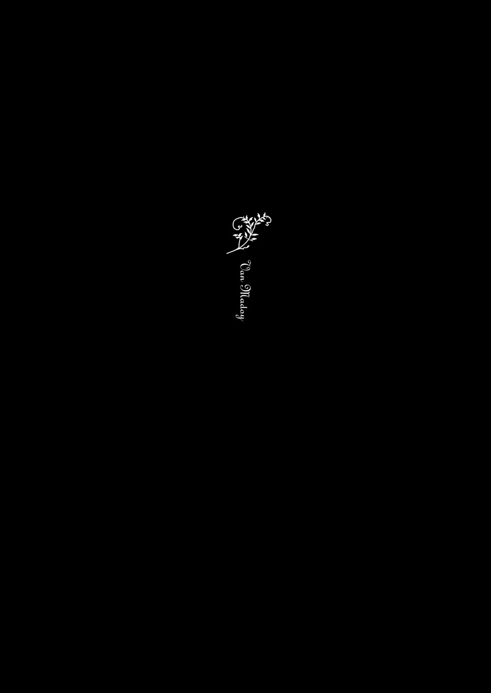

| 丸太町ルヴォワール (講談社文庫) | |
| 円居挽 | |
| 講談社 (2012) | |
ebpaj-guide-1.0
丸太町ルヴォワール
円居 挽
オブジェ製作 北見隆
トビラデザイン 坂野公一


かくて八十日ばかりになりにければ、「いまは日 数 もおほくつもりぬ。かならず百日としもさすべき事かは」と、たえがたくおぼえて、したしくなりたりければ、すなはち女、水になりてながれうせにけり。中納言くひのやちたびかなしめどもさらにかひなかりけり。
長 谷 雄 草 子
ぼくの初恋にまつわる話をしましょうか。
あれはちょうど三年前の三月二十三日、中学三年生の春休みのことでした。ぼくはある事件に巻き込まれて怪我をして、京都の祖父の屋敷で養 生 していたんです。
祖父の屋敷は岡 崎 にあります。平安神宮の近所って言ったら解 りますか。その屋敷の端に五、六畳ほどの小さな和室があるんです。
その日昼食を済ませたぼくは、特に目的も無く横になりました。そしてそのままうつ伏せになって、食後のコーヒーも飲まずに眠り込んでしまったんです。
どのくらい眠っていたのでしょう。ぼくはサングラスが軋 む感触で眼を覚ましました。
胸ポケットに手をやり、サングラスが無事でほっとしたのも束 の間 、今度は包帯が外 れていることに気がつきました。きっと寝ている内に外れたのでしょう。
自分で巻き直すのも面倒でしたし、医師からもそろそろ包帯を取っても構わないと言われていたので、包帯をたたんでジーンズの右ポケットへしまいました。
再び睡魔に襲われ眼を閉じると、突然鳴った鐘の音がぼくの睡眠を妨 げました。近所のお寺では日中、一時間に一度鐘を鳴らすことにしているようです。
ぼくは眠ることを断念しました。そして携帯電話を取り出すべく、左手をジーンズのポケットに伸ばしたんです。
だからそれはほんの偶然だったんでしょう。何気なく伸ばした手が、この場に存在しないはずの柔らかな手に触れてしまったのは。
ぼくは誰かの手の甲をつかんでいました。親指が触れ合う感触で、それが右手なのだと理解しました。
ぼくは相手が逃げるよりも速く、つかむ場所を素早く手首へとスライドさせました。
つかんだ手首から相手の脈拍を感じた瞬間に、それまで殺されていた気配がはっきりと解ったんです。きっと先方も動揺していたんでしょうね。
ぼくと先方が平静を取り戻すまで、たっぷり一時間はかかったような気がしました。実際には三十秒も経ってないでしょう。
やがて、ぼくは意を決して話しかけることにしました。
「どちら様ですか？」
その言葉に直接の返答はありませんでしたが、それまで強 張 っていた手の力が抜けていくのが伝わってきました。やがて先方も心を決めたのか、咳 払 いをするとようやく口を開いてくれました。
「さあね。こんな風に捕まるなんて考えてもいなかったから、名前だってまだありやしないよ」
不思議な声でした。一聴したところ、ぼくには彼女が歳上なのか歳下なのか、判断できませんでした。
「名前の無いものなんてどこにもありませんよ」
「しかし、謎の女性が突然湧 いてくるってシチュエーションは男性の三大願望の一つじゃないか。それを叶 えてあげたんだ。名前が無いことぐらい大目に見たまえ」
「怪力乱神を語らずとは孔 子 先生の言葉です。ふざけたことには聞く耳を持ちません」
「若いのに夢が無いんだね。ところで良ければ、手を放してくれないかい？」
「放すのは構いませんが、その前に話してはいただけませんか？」
「何をだい？」
「貴女 のお名前です」
「なんだかやらしいね。こういうの、下心あれば掌 って言うんだっけ？」
「それを言うなら魚心あれば水心でしょう」
「だいたい、人に名前を訊 く時は、まず自分からって教わらなかったのかい？」
「ぼくの名前は城 坂 論 語 です」
なんというボーイミーツガールでしょうか。しかし、この時ぼくが甘い展開を期待していたと思ったら大間違いです。むしろどうやってこの慮 外 者 を捕らえるか、そのことを真っ先に考えていました。
屋敷にはぼくの他に最大四人の人間がいるはずでした。祖父の慈 恩 はこの部屋を出て、渡り廊下の向こうの離れにいますが、助けを呼ぶには少々遠すぎました。
お手伝いの芳 野 さんは、今日は二時半前から四時半の間、買い物で留守にすると聞いています。
祖父の秘書の楠 木 さんは、屋敷にさほど長い時間滞在しているわけではありませんが、必ず祖父のいる離れに歩いて行くはずです。この部屋の前を通りかかる可能性は高いですし、助けを呼ぶ相手としても申し分ありません。問題はいつ来るのか、予想できないことですが。
あとは、裏口のあおさんは間違いなくいるでしょう。裏口の方で終日座って過ごしています。ただ、老女に助けを求めるのは意味が無いような気もしますし、ぼくの声も裏口までは届かないという問題もあります。
果たして誰に助けを求めるのが最善なのか、なんてことに考えを巡らせていると、ようやく彼女の方から返事が来ました。
「......ルージュ」
ルージュだなんて、明らかな偽名だと思いませんか？ とはいえ、最初から本名を聴けるはずもありません。
「フランスの方ですか？」
「そうだな。不完全なフランス人という意味では君と同じさ」
「ぼくと同じ？ ぼくは日本人ですよ」
「いやいや、君のお祖 父 様はね、フランス人とのハーフなんだよ。御 母 堂 がフランスの人なんだ。知らない人は知らないだろうけど」
不覚にも初耳でした。後で確認したら実際にそうだったようです。しかしこの時点では、ぼくは三信七疑で彼女に食ってかかりました。
「本当ですか？」
「あ、信じてないね？ だったらついでに教えてあげるけど、お祖父様の名前の慈恩ってＧｉｏｎの当て字なんだよ」
「Ｇｉｏｎ？」
「祇 園 のフランス語読みだね」
「回りくどい命名ですね」
「京都と子供を愛する御両親の配慮の賜 物 さ。そのまま祇園じゃ、河原 町 祇園みたいな名前になっちゃうからね」
あはは、と彼女が一人で笑うのを、ぼくは黙って聴いていました。どうにも彼女のペースみたいで面白くありません。
「しかし貴女の話が本当なら、ぼくはフランス人の血が八分の一入っていることになりますよね」
「そういうわけさ。納得できたかい？」
「一応、納得しておきましょう。しかし、それでは貴女の日本人度はいかほどですか？」
「君の逆だよ。八分の一が日本人、あとはフランス人」
からかわれているという感じは拭 えませんでした。
「馬鹿に日本語が流 暢 じゃありませんか」
「祖母からのレッスンと乱 歩 横 溝 での独学だよ。曲がりなりにもバイリンガルさ」
「本当の名前も教えていただけないような方の言うことが信用できますか？」
「ちゃんとした名前だってば」
「フランス人かどうかも怪しいというのに......」
「ティヤン？ ルージュってそんなに怪しい名前かい？」
「『紅色』、あるいは『口 紅 』だなんて、名乗られて信用できるとでも？」
「そうかなあ、女性っぽくて気に入っているんだけど。こうね、ウフンというか、アハンというか、昔の日本人男性がフランス人女性に抱いているイメージを具現化したような、セックスアピールに満ち満ちた、エロっぽいところが好きなんだけど」
「もう少し簡潔な表現をお願いします」
「今のは素直な感情の発 露 だよ？」
「ある感情にはそれに応じた適切な量の言葉があるんです」
「君は理屈っぽいね」
「全てはそんな名前を名乗ってしまった自分の迂 闊 さを呪って下さい」
「エ・トワ？ だいたい名前のことを言うなら君の名前こそどうかと思うよ。城坂論語だなんて日本人、いるわけないだろう？ エルキュール・ポアロばりに胡 散 臭 い」
「思い出したようにフランス語を使うのはやめて下さい。ぼくの名前は祖父から命名されたものなんです。だいたいこの手は何ですか？ 人の下半身に手を伸ばしてきて捕まったくせに。痴 女 に名前のことをとやかく言われたくありません」
「ふふ、痴にして女だが、卑 に非 ずだよ」
「痴は否定して下さい」
話せば話す程、胡散臭い女性でした。だからルージュがどの程度祖父のことを知っているのか、もう少し探りを入れることにしました。
「祖父って、歳の割には元気ですよね？」
「私はあんなに壮健なご老人を知らないよ」
「でも、ほら、一度倒れてからはあんな風になってしまったじゃないですか」
「ああ、心臓は悪いみたいだね」
祖父は昔心臓を悪くして倒れているんです。特に障害が残るようなものではなかったらしいのですが、心臓にペースメーカーを埋めることになりました。
電波の影響でペースメーカーの調子がおかしくなることがあるというのはご存じですね？ 祖父はそれをとても恐れていたようです。きょう日 、電波を気にしても仕方が無いというのに、祖父は当時別宅だったこの屋敷の庭に離れを建てて以来、極力電波と縁を切った生活をしていました。
さて、ルージュのことですが、大まかには祖父のことを知っているようです。
君にはまだ話してませんでしたが、実はこの和室の前の廊下は、床板が凹 んでるんですよ。歪 んでいるともいいますか。しかし、それにも拘 わらず、木目の問題なのか、採光の問題なのか解りませんが、何の変哲も無い床のように見えてしまうんです。奇跡の騙 し絵ですね。
ぼく？ ぼくは転 びませんよ。ぼくだけでなく、屋敷の人間は誰一人躓 かないんじゃありませんかね。慣れとはそういうものです。
さて、問題はルージュがその凹みに躓いた様子が一切無いということです。板 敷 の廊下で人が躓いたら大きな音がするでしょう。いくら眠っていても、気がつかない道理がありません。
勿 論 、ルージュが運良く凹みに足を取られなかった可能性はあります。しかし、もしルージュが予 めその凹みを知っていたとしたらどうでしょう？ ぼくはその可能性が不気味で堪 りませんでした。
「ところでいつまでもその姿勢では疲れるだろう。体を起こしたらどうだい？」
体を起こすということは彼女と顔を合わせるということです。迂闊なことはできません。ぼくは手早くサングラスを装着し、ゆっくりと体を起こしました。
「部屋の中でサングラスなんて変じゃないかな？」
ぼくと向かい合う形になった彼女が、どこか馬鹿にするようにそんなことを言いました。
「どうも貴女に眼を見られるのは得策じゃないと判断したまでです。貴女は一瞬の眼の泳ぎも見逃してくれなそうですからね。それがぼくには気詰まりで」
「私はゴーゴンかい？ 君は私とのコミュニケーションを拒否するんだね」
「少々ハンデを頂くだけです。勿論、コミュニケーションなら受けて立ちますよ」
「よく回る舌だね。じゃあ、私からも提案がある。君は舌に自信があるんだよね？」
「まあ、そうですね」
「じゃあ、私とゲームをしよう。絶句したら負けってのはどうだい？ そして、君が負けたら手を放しておくれ」
彼女の肝 の太さったらないですね。不法侵入をしておいて、呑 気 にゲームをしようだなんて。
「絶句しない自信がないわけじゃありませんが、それは少し不公平ですね。仮にぼくが勝っても、得る物がありません」
「じゃあ、私が負けたらそれなりの要求を呑 もうか。そうだね、絶句の度に私が脱ぐってのはどうだい？」
「間に合ってるんで結構です」
「いやいや、騙されたと思って。君の辞書の『着 瘦 せ』の項を書き換えちゃうこと、請け合いだよ」
「勝手にぼくの辞書を改訂しないで下さい。しかし、別に中身が詰まっていようがどうでもいいんですが、脱ぎ方には興味をそそられますね」
「中身より脱ぎ方が楽しみだなんて、君、さてはマニアだな？」
「万が一、この手をつないだまま服を脱げるというのなら、トポロジー上の大発見じゃありませんか。それは是非見たいです」
「いや、手は放してくれないと脱げないよ」
「いきなり失望させないで下さい」
「でもさあ、上は脱げないけど、下はいくらでも脱げるじゃないか。そうか、それが君の狙いか。やっぱりマニアだね」
「話になりませんね。なら結構です」
「揺るがない意思の表明をありがとう。おかげで女としての自信が少し揺らいだよ。あー、青少年をたぶらかすのには失敗したか。じゃあ、肉体が駄目なら精神だ」
「何ですって？」
「君が負けたらトラウマ及びヰタ・セクスアリスを語るか、手を放すか、どちらかを選べる。でも、私が負けたら君が望むことを語ってあげよう。上手に戦えば、私の正体に迫ることができるかもしれないよ」
一見ぼくにメリットの無さそうなゲームでしたが、うまくやれれば沢山の時間を稼 ぐことができます。それは悪くありません。しかし、これはなかなかシュートな挑戦です。負けた自分を想像したらとてつもなく屈辱的な絵が浮かんできて、一瞬返事が遅れてしまいました。
「や、やりましょう」
「はい、アウトー。絶句一つ頂いたよ」
「今のはまだ成立する前じゃありませんか」
「君はゴング前にＫＯされた格闘家の言い訳がどれだけ情けないか、解らないのかい？」
「ごもっともです」
ぼくは内心、ルージュの詭 弁 と計算に舌を巻きました。反論したいところですが、これ以上醜 態 を晒 して、絶句を重ねるなんてできるわけがないじゃありませんか。
「じゃあ、早速恥ずかしい話をしてもらおうか。それとも......手を放すかい？」
フィジカル面の不調が、メンタル面に影響を与えるとはよく言いますが、この瞬間ほどそれを実感した時間はありませんでした。ぼくの頭にも舌にもいつもの冴 えがありませんし、判断も鈍くて後手後手、明らかに絶不調でした。
だからといって手を放してしまうわけにはいきません。ぼくは誰にも語ったことのないエピソードを一つ、取り出しました。
「では、ぼくの恥ずかしい体験を一つ、聴いていただきましょうか？」
「待ってました」
「小さい頃のぼくって、想像つきますか？」
「それはもう賢いお子さんだったんだろうね」
「はい、保育園の積み木から、相似形の概念を発見しました」
「神童だったんだね。そうと解ると、そんな息子が欲しくなったよ」
「貴女のご想像に違 わず、ぼくは可愛い子供でした。まあ、その辺の子役なんてカスみたいな......」
「やっぱりいい。そんなナルシストの息子は御免被 る」
君まで肯 かないで下さい。ぼくはナルシストではありません。
「ぼくは医者の倅 なので、看護婦さんなんかに随分可愛がられました。子供とはいえ、ぼくも男ですからね。よってたかって可愛がられると、そう悪い気はしませんでしたね」
「白衣の天使に可愛がられて育ったのかい。そりゃ世の中の男性が血の涙を流すよ」
「しかしある日、それが崩れるような出来事が起きました」
「もしかして、悪戯 されたのかな？ こう背徳的な......具体的には」
「いいえ。むしろ悪戯したのはぼくの方でした」
「君はピュタゴラスじゃなくて世 之 介 だったんだな」
「フランス人ならドン・ジュアンでしょう。でも、そんな大層なことじゃありません。ただ仕事をしていた馴染みの看護婦さんの背中を指でつついただけですよ」
「胸でもお尻でもなく背中！ やっぱりマニアックな子だよ」
「ほんの軽い気持ちだったんですよ。しかし、ぼくはあの時振り向いた彼女の顔を忘れられません。あの表情はほぼ、怒りと軽蔑だけでできていました」
「確かに、子供の悪戯に向けていい顔じゃあないね」
「そう、彼女は間違えたんですよ。当時入院している患者さんに少々性欲の旺盛なご老人がいたらしくて。彼女はぼくだと気づくとすぐに笑顔に戻って、頰ずりとキスをして下さいました」
「誤解が解けてすぐに役得か。凡人とは違うね」
「だけどそこで悟ったんですよ。ぼくへの好意は、ぼくの上っ面に向けられていることに。皮が違えば、好意も軽蔑に変わり得ることに」
「結構なことじゃないか。子供の内にそういうことを学んでおけば、将来傲 慢 に育たない......あれ？ 君、傲慢だよね？」
「それじゃただの教訓話でしょう。この時、もう相似形の概念を知っていたぼくは、それをこの経験に適用したんです」
「話が見えないんだけど」
「看護婦さんとその他の女性を区別するものは教育と白衣だけなのだと理解したんです」
「なるほど、それで看護婦さんみんなが嫌いになったわけだ」
ここまで素直に話を聴いていたルージュも呆 れているのが解りました。
「いえ、相似形を発見したピュタゴラスなぼくは女性全般が嫌いになったのです」
「それは女の私に一番失礼だよ！ 打ち明け話と思いきや、私への牽制かい？」
「ぼくは個人的な恥部を晒しただけです。文句はないでしょう？」
「まあ、お互い様だからいいか」
「気付けにはこれぐらいが丁 度 いいですね。少しは眼が醒めました」
おかげで、引きこもりで鈍った頭と舌が少しは軽くなった気がします。
「あちゃー、変なスイッチ入れちゃったかな。でもお姉さん、負けず嫌いの子って好きだよ。さて、ここからはお互い絶句失言に気をつけて喋 ろうね」
これでどうやら仕切り直し、そしてぼくはそろそろ彼女との接し方に結論を出す時が来ているようです。とりあえず失敗時のリスクを考慮して、大声で助けを呼ぶことはやめました。そりゃ、誰かが助けに来てくれればいいですが、もし誰もやって来なかった場合、最悪彼女と格闘することになるかもしれません。例えば彼女がナイフの一本でも隠し持っていたら、ぼくの人生は簡単に終わります。
どうやら短期戦 で済む戦いでは無さそうでした。だからぼくはこんなことを申し出ました。
「何だか寒いですね。お互いこんな恰好もなんですから、ちゃんとコタツに入りませんか？」
「いいよ。実は私もコタツに入りたかったんだ。冷えは女性の大敵だしね」
ルージュがそう言い終わると、衣 擦 れのような音がしました。同時に彼女の長い髪とその香りがぼくの鼻先を掠 めました。
それにしてもこの香りといったら。ルージュの髪の香りは今でも説明できる気がしません。どんなシャンプーや香水だってあんな香りは出せないでしょうから。
「よっと」
ルージュが素直に向かい側に腰を降ろした時、ぼくは少し安堵しました。少なくともしばらくの間は、彼女にぼくとことを構える意思が無いことが解ったので。
「それにしても、いい御身分だね。こんなところに彼女の写真なんて飾っちゃって。女嫌いと言ってる割には、君もなかなか隅 に置けないじゃないか」
彼女の言葉に、芳野さんが気を利かせて例の写真を飾っておいてくれていたのを思い出しました。
「ぼくのせいじゃありません。勝手に飾られたものです」
「彼女ってのは否定しないんだね」
「一応許婚 らしいので、否定したら噓をつくことになりますから」
「やけに冷たいじゃないか。こんなに可愛いのに」
「可愛いだけなら実家のレトリバーで間に合ってます。顔つなぎのためか知りませんが、何度も食事をさせられましたよ。『そんな、大したことありません』『まあ、すごいですね』、語 彙 はそれだけなんですよ。まだ電話帳の方が気の利いたことを言いますね」
「君、その性格で女の子にもてる奇跡をもう少し嚙 み締めた方がいいよ」
「好きでこんな顔に生まれたわけじゃありませんよ」
会話をしながら自分の記憶と相談してみましたが、彼女の素 性 にこれといって思い当たるところがありません。実は先ほどの打ち明け話の際、ルージュがウチの病院の看護婦さんではないかという考えが脳裏をよぎりましたが、それもどうやら違うみたいです。
彼女の正体もそうですが、何より不気味なのは彼女の目的がつかめないことでした。一体何を考えてこの屋敷の、それもこんな奥の部屋までやってきたのか。
しかし、目的を問い質 したところではぐらかされるに決まっています。
「君、ここには何日いるの？」
「一週間と少しですよ。それがどうかしましたか？」
「いや、少年一人で、こんなところでは退屈じゃないかなと思ったものでね」
ここでぼくは無意識に、右ポケットに手を当ててしまいました。
今のところルージュはぼくの怪我について触れていません。しかし知らないふりをしている可能性は大いにあります。ぼくの怪我を知っている人間となると、それなりに限られてきますからね。
ただその一方で、彼女がぼくの怪我を本当に知らない可能性もありました。包帯は今、アクシデントでぼくの右ポケットの中にありますから。
だからここが一つの分岐点です。慎重に、素早く決断をしなければなりません。
「そうでもありませんよ。コタツでの生活にはまだ飽きませんね」
「コタツ？」
「父親がコタツ嫌いでして。みっともないから家に置くなというんです。こんな機会でもなければ、堪能できませんからね」
「ふうん。そういうものかね」
結局、決断を先送りにして誤 魔 化 すことにしました。
本当は何をしていたのかって？ 実は人がいない時を見計らってこっそりリハビリめいたことをしていました。普段、屋敷の中を移動する際は芳野さんなんかに助けてもらってましたが、一人で歩きまわれるぐらいにはなってましたよ。
とはいえ、そんなことを自ら口にする必要はありません。
「寝具と机を一体化させてしまったこの斬 新 な家電製品に、ぼくはもう参りっぱなしです。蕩 けそうな一週間ですよ。ベッドなんかで寝ている場合ではありません」
「うわ、すっごい素敵な笑顔。むかつくなあ」
「あれ、ぼくそんなに笑ってますか？」
「洋風美少年がコタツに張りついて笑っているなんて、とってもシュールな光景だ」
「ぼくって意外と寒がり屋さんだったんですねえ」
「一応尋 ねてみるけど、私とコタツ、どっちで暖ま」
「コタツです」
「りたくない？ と言おうとしたんだけど」
「貴女にはプライドが無いんですか？」
「ついさっき、君が私のプライドを踏み潰したんじゃないか！」
「これは失敬、鈍感な足で申し訳ありません」
何となくそこで会話が一段落すると、部屋はぞっとするような静寂に包まれ、不意にぼくの足に寒気が走りました。
しかし、なんのことはありません。ルージュがコタツの掛け布団を持ち上げただけでした。
「何のおつもりですか？」
「確かにコタツは偉大な発明だと思ってさ」
「ご自分がコタツより下のカーストにいると理解なさったようですね。で、何が偉大なんですか？」
「こうやって向かいの人間に悪戯することができるのがいいよね」
「ええと、寒いので掛け布団を下げていただけますか？」
ルージュはいきなりぼくの右足の裏を空いた左手でくすぐり始めました。
「ほらほら、笑いなさい」
ぼくが顔色を変えないでじっとしていると、ルージュの意外そうな声が飛んできました。
「おや、くすぐったくないのかい？」
「やはりぼくの足の裏は他 人 様 よりも鈍感にできているみたいです」
実際、それ程くすぐったくはなかったです。ただ、少々不愉快な気持ちにはなりましたが。
「またまた、強がっちゃって。ほらほら」
ルージュは口を閉じると、一層くすぐり始めました。しかし、実はくすぐりから逃れるのは容易 いことでした。彼女が自由になるのは左手だけですからね。ぼくは右足を抜けばそれで済みます。
「強がってるわけじゃありませんよ」
ぼくはそう言って足を引くと同時に、そのまま両足でもってルージュの片足をロックしました。ルージュはハナから逃れられないと考えていたのか、抵抗はしませんでした。その代わり、どこか嬉しそうな口調でこんなことを尋ねました。
「何のつもりだい？」
「何のつもりだと思います？」
「個人的にはセクシャルなハラスメントを期待しているんだが」
「残念ながら、セクシャルでもハラスメンタルでもありません」
「そ、そこは。あは、はははははは」
ぼくは出来る限りの繊細なタッチでルージュの足の裏をくすぐってみました。先ほどのお返しというわけです。
「あは、ははは、あああああああ」
ぼくが叫ばずとも、こうしてルージュに声を出させておけば遠からず、誰かしらやって来そうな気がしました。
「はあ......はあ......人の嫌がることをしちゃいけませんって孔子が言ってなかったっけ？」
「フランス人に孔子先生を引かれても信用できませんね」
「ああああああ」
別にルージュが静かになるまで責め続けても良かったんですが、よくよく考えてもみて下さい。端 から見れば、健全過ぎる青少年、いたいけな婦女子に悪戯 すの図じゃありませんか。それはとても不愉快です。おまけに、こんなことで彼女と決着がついてしまってもつまらないじゃありませんか。ぼくはルージュの足を解放することにしました。
「貴女にも弱点があったんですね」
「不覚......こんな恥ずかしい思いをさせられるなんて」
演技では無い証拠に、ルージュの息は上がっていました。
「自業自得じゃありませんか。先ほどぼくも屈辱を味わいましたから、お互い様でしょう」
「しかしお互い屈辱を共有したところで、二人の距離は縮まったと言えないだろうか」
「そうなんですか、マドモアゼル・ルージュ？」
「どうして改まって他人行儀になるんだい？ こんなに近いのに......」
「そういう貴女はちょっと近すぎるんじゃないですか？ 自制心に欠けたご婦人でももう少し遠慮しますよ」
「他人様の陰に潜 むルージュと呼ばれているからね」
「語 呂 悪いですね」
「字余りのルージュとも呼ばれてるんだ」
「今度はやけに語呂がいいじゃないですか」
「細かいことを気にするんじゃないよ、ムッシュー・ブラン」
「ブラン？」
「『シロ』坂ってわけさ。ルージュとブランで紅白とはめでたいだろう」
ぼくは彼女の言葉に、かつて無い程の高揚感を覚えていました。
「どうしたんだい？ 馬鹿に嬉しそうじゃないか」
ルージュの方でもぼくの様子がおかしいことに気がついたみたいです。
「あの、もう一度その名前をお願いします」
「ええと、ムッシュー・ブラン？」
こんなに嬉しくなったのはいつ振りでしょうか。保育園の頃に戻った気がします。
「なんだよ、急に笑顔になって。気持ち悪いな」
「その名前が思いのほか、耳に心地よかったんですよ。ぼく、論語って名前がどうも好きになれなくて」
「そうかい？ 私は論語の方が君に似合ってて好きだけどな」
「論語だなんて名前、言 偏 くさいじゃありませんか」
「だったら侖 吾 とでも名乗りたまえ。して、リンゴォ・キッドはお医者様になるのかな？」
「らしいですね。祖父がぼくのために大きな病院を一つ用意してくれるんです。気の早いことに二年後にはもう開院してしまうそうですが」
「あの人も太っ腹だね」
「なので、とりあえず医学部に入るつもりです」
「プレッシャーなんかまるで無いんだね。人によっちゃ重荷だし、呪いと同じだよ？」
「はは、ぼくが真面目に勉強したら、医学が終わります」
「言ってることは解らないけど、とにかくすごい自信だ。それじゃ、後継ぎという役目を投げ出したいと思ったことはないのかい？」
「いや、父の後継ぎという意味なら来月医大に入る兄がいます。でも、あまり当てになりませんね。あの人、あまり頭の出来はよろしくないんです」
「身内にも厳しいんだね」
「賢 を見ては斉 しからんことを思う。不賢を見ては内に自らを省みる。孔子先生の言葉です。とはいえ、どうしても不賢には冷たい視線を送ってしまいますね」
「もしかして、その賢は君ってか？」
「ええ、自分を基準にするのはいい加減止 めようとは思っているんですが、なかなかうまくいかないものですね。あ、貴女は賢に入れて差し上げてもいいですよ？」
「君の言い草はお貴族みたいなんだよね。認められても素直に喜べないな」
「でも、認める気持ちに偽 りはないんですよ」
「まあ憎たらしい言い草は抜きにしても、君には何か近いものを感じてしまうな」
彼女に言われるまでも無く、実はぼくも同じことを感じていました。しかし、同意するのは妙に恥ずかしく、ぼくはらしくもない生返事で自分の気持ちを誤魔化しました。
「君はまるで私のもう半分だ」
「そんな恥ずかしい名前を名乗るもう半分はいりません」
「ちゃんと名乗ったじゃないか。私はクチベニのルージュだよ。それ以外の何者でもない」
「口紅のルージュだなんて、貴女はトートロジストですか？」
「違うよ。朽ちるに紅と書く方の朽 紅 さ。素敵なやまとことばだろう？」
「さあ、古文の授業ではまだ習ってませんね」
「死人に朽紅引きたる、という例文で解るだろうが、朽紅とは死 化粧 、死 に紅 のことを言うんだよ。死体を美しく保つ技術、今で言うエンバーミングにも通じる言葉さ。勉強になったろう？」
「三年後の京大医学部の入試に出てくることを願いましょうかね」
ぼくが何の感動も無くそう言うと、溜め息が聞こえました。これ見よがしなやつですが、黙殺するわけにもいきません。
「なんですか。溜め息なんかついたりして」
「君、随分きれいな肌をしているんだなと思って。紅を扱う身としては他人の肌が気になるんだ」
「そうですかね。ただ、白いだけでしょう」
「君ぐらいの年頃だと、もっと荒れているもんだと思うんだけどね。お肌の問題に悩む私としては羨 ましい限りだよ」
「ああ、ぼくって髭 が薄い体質みたいで、あまりカミソリを当てる必要が無いんですよ。ストレスが少なければ、それだけ肌のダメージも少なくて済むんじゃないですかね」
「道理で傷一つ、にきび一つ無い、いい肌をしているわけだ」
「色の白いは七難隠す、孔子先生の言葉です。おかげでぼくが抱えている少々の欠点を覆い隠してくれますからね」
「欠点を持った自覚があるのはいいけど、いくら私がフランス人でもそれは無理があるよ？ 孔子は絶対に言ってないね」
「図々しいのはお互い様じゃありませんか。フランス人が朽紅だなんて言いますか」
「いやいや、それは本当だって」
「とはいえ人間の魅力って、外面じゃありませんからね。たかだかの化粧、いえ、皮一枚に惑わされるようじゃまだまだということです」
「そうかい？ 若い癖にそんなこと言うのは恰好つけすぎじゃないかな。じゃあ、君は私が傍 にいても何にも感じないというのかい？」
反論はごく自然に口から湧いて出ました。
「そういうことは女装したぼくより綺麗になってから言って下さい」
ぼくの言葉にルージュは盛大にむせ返りました。
「......駄目だ」
「ようやく絶句をいただけましたね」
「そうだね。おまけに君は女装したら本当に綺麗になりそうでそれがまた厭 だ。えーと何が聴きたい？ なんでも話してあげるよ。お奨 めは......」
「貴女の職というやつを教えていただきたいですね。仕事と言い換えてもいいですが」
彼女の答えが真実である保証はありませんが、どの程度その職業のことを知っているのかが確かめられれば、彼女の素性を推理する材料になります。
「仕事、仕事ねえ......」
返答に困っている様子がありありと窺えました。ね、咄 嗟 に考えた質問にしては妙手 だとは思いません？
「お葬式屋さんかメイクアップアーティストってところじゃないですか？」
気持ちに余裕ができると、こんな軽口さえ出てきました。先ほどまでの意趣返しというところです。
「近いっちゃあ近いが、遠いっちゃあ遠いかな。ねえ、なんで私が朽紅のルージュなんて呼ばれていると思う？」
「誰が呼んでいるんですか？」
「死に紅引くのが上 手 いからさ」
ぼくの当然の突っ込みは無視されました。ですが、この次のルージュの言葉はぼくの予想の上を行ってましたね。
「何せ、殺し屋だからね。自分が手をかけた者に紅を引くのは礼儀じゃないか」
「そんな殺し屋さんが何故ぼくに捕まっているんですか？」
「そりゃ言えないな。依頼主との守秘義務があるからね。殺し屋にも法令遵守 があるこの御時世。その辺、ご理解していただきたいね」
「殺した時点で遵 守 してないでしょう」
ほんの数分前の朽紅のルージュのくだりが、ぼくの質問を見越した布 石 だったとは思いませんが、それにしても舌を巻く対応力です。この様子ではもうルージュの中には与 太 がたんまりと用意されていることでしょう。
対応された妙手に固執しても相手を楽にするだけです。
「それはそうと、さっきの貴女の言葉で一つ思いついたことがあるんです。貴女のことですから、噓から実 もありえるかもしれませんよ」
「へえ、どういうことだい？」
「貴女は冗談めかして言いましたが、ぼくも貴女を他人だと思えないんですよ」
ルージュが固 唾 を一つ、呑み込むのが解りました。
「驚いた。そいつは何とも情熱的な発言じゃないか。私、照れちゃうな」
「ぼくが貴女に近しいものを感じてしまったのは、貴女の知性と波長が合ったという理由が大きいでしょう。しかし、それ以上に考えられる理由があります......ぼくも貴女も外国の血統を持っているようですが、ということはぼくたちの間には血縁があると考えてもいいのではないでしょうか？」
「血縁！ それは何とも夢のある話じゃないか」
「否定しないんですね」
「どう考えるかは君の自由だ。いや、センスか」
「センス？」
「どれぐらいの血縁を設定するかによって、君のロマンスのセンスが問われるのだよ。血縁が近ければ近い程、それだけ危うく、しかし素敵な関係になるわけだから、その辺の匙 加減は重要だよ」
「それを聴いて安心しました」
「安心？」
「ぼくの言葉に、貴女が戸惑うのではないかと思ったものですから」
「お、それは期待できるね。ふふ、どんなインセストタブーでも受け入れよう」
「いいんですか？」
「個人的には生き別れの異母姉というのをリクエストしたいが、まあ野暮は言うまい。さあ、飛び込んでおいで」
「貴女は......」
あと一歩です。最後の言葉を自然に吐ければ、ぼくの目的は果たされます。
ぼくは躊躇 いがちにこんな言葉を紡 ぎました。
「貴女は、ぼくのお母さんではありませんか？」
「このうつけ者！」
艶っぽい雰囲気が吹き飛ぶ一喝が返ってきました。
「幾らなんでもそれは引くよ。っていうか、私がそんな歳 に見えるかい？」
「いやあ、貴女とインセストタブーを越えるつもりはさらさら無かったので」
「足の意趣返しかい？ ったく、愛の告白を装ってのからかいなんて、タチが悪すぎるよ。危うく君の命を取るところだった」
ルージュからは散 々 文句をいただきましたが、おかげで目的は果たせました。
今のルージュのリアクションが見栄や偽りの混じらないものだと仮定しましょう。ぼくが十五歳ということは先方も承知していますし、ぼくの言葉を『無礼』と取ったというなら、ルージュの年齢の上限はせいぜい三十の手前ではないでしょうか。もう少し甘く見積もるならば、十代の後半から、二十代の半ばぐらいかもしれません。ね、君にもルージュの輪 郭 が見えてきたと思いませんか？
年齢はアバウトに見積もって十代後半から二十代後半、その知性・教養は高く、また美少年を前にして微 塵 も気遅れしていないことから、自分の容貌にそれなりの自信を持っている美女、というところでしょうか。勿論、フランス人だの殺し屋だのというのは大与太だと判断したので除外させていただきます。悪 しからず。
しかしそういった若い美女で、この屋敷に用があるような人間にはやはり心当たりがないんですよね。だから、とっておきの質問をぶつける必要がありそうでした。
「コタツに張りついて思考を堂々巡りさせていると、良からぬ妄想が浮かんできますね」
「それって素敵な女性が夜 這 いに来る妄想かな？」
「全然違いますし、少なくとも貴女のは夜這いで無いことは確かです」
「そりゃ今は確かに昼間で、這ってたのは君だったけど、そんなのほんの言葉の綾 じゃないか」
「綾をＸとすると、Ｘの取る領域はいかほどですか？」
「それは君のお望み通りってことで」
「そのＸの範囲では貴女が素敵なのも疑わしいし、それどころか女性かどうかも疑わしいですね」
「君はどれだけ酷 いんだ？ 女性だってば。女である証拠を見せようか？」
「それも間に合ってるので結構です」
「まあ、それはさておき、どんな妄想なんだい？」
先ほどからどうにも探りを入れる度 に逃げられてしまいます。どうやら彼女の間合いに入るには、リスクを承知でこちらから踏み込まないといけないようです。だからぼくは覚悟の上でこの言葉を口にしました。
「祖父の殺害計画ですよ」
ぼくの覚悟を肌で感じたのか、ルージュの返事は一拍置いてやってきました。
「へえ、きれいな顔の下にそんな黒い妄想が渦巻いていたとはね」
「ま、妄想するのはタダですからね。でも、計画そのものはいい線行ってますよ。少なくとも少年Ｒとして報道されるようなことにはならないと思うんですがね」
「ほほう、お姉さんに話してごらんなさい。プロの殺し屋が採点してあげよう」
「それはなりません。プロの殺し屋なら素人の計画ぐらいは見抜いて下さいよ。それに密やかな楽しみを人に簡単に教えてしまうなんて野暮だとは思いませんか？」
これは挑発半分の言葉でした。いつの間にかぼくの中に彼女を試したいという気持ちが湧いてきていたんですね。所 詮 この国じゃ、頭の良し悪しを記憶力でまかなえたりしますからね。成績のいい人は沢山いても、頭のいい人なんてそうそういるものではないんですよ。あ、なんですかその知った風な顔は？
「知恵比べに付き合うのは構わないけど、その前に気になることがあるんだよね」
「なんですか？」
「天に何物も与えられた君が何ゆえ祖父殺しに走ろうとしているのかってところ」
また微妙に話を逸 らされてしまいました。
「つい先日、ちょっとした事件に遭遇しましてね。行きがかり上探偵を演じることになったんですよ」
「君が探偵とは、適役だろうね。殺し屋の天敵だけどさ。それで事件の首尾は？」
先に説明しておきますが、ぼくが怪我をしたのはその事件が原因なのですよ。ただ、怪我のことを彼女に言うわけにいきませんから、そこは誤魔化さないといけません。
「手術には成功したけど患者は死んだ。お決まりの言い回しで言うとそんなところです。事件は解決したものの、ぼくも含めて誰も幸せになりませんでしたよ。本当に後味の悪い事件でした」
おまけに怪我まで貰ってこんなところに縛りつけられて。厭 世 的な気分になろうというものです。
「それがお祖父様の殺害にどうつながるんだい？」
「誰かを助けるつもりが、手ひどく裏切られたんですよ。言葉にすればそれだけですが、お陰でぼくの心はすっかり冷たくなってしまいました。あんな散文的な現実を味わった後に将来の夢なんて育 む気にもなれません」
この時のぼくの気持ちを何もかも解 ってくれとは言いません。そんなことを考えていた少年がいたという認識で結構です。
「少なくとも心の冷たいぼくはもう誰かを助けるのも、それで誰かから感謝されるのも御免です。人の役に立つなんてことは真っ平です。まして医者なんかになりたくありません。でも、祖父はきっと何があってもぼくを医者にしようとするでしょう。阻止するにはぼくが死ぬか、祖父が死ぬか、どちらかしかありません。それが祖父の殺害を妄想した理由です」
「君は今、厭な目に遭 ったせいで気が塞 いでいるだけだよ。日常生活に戻ればきっとそんな気持ちとはおさらばできるさ。そして医者になって多くの人を救うんだ」
まるで教師が反抗期の生徒を諭 すような口調でした。ルージュの言葉は限りなく正論だったように思われましたが、かえってそれがぼくの癇 に障 りました。
「いい家に生まれて、頭脳と容姿に恵まれたばかりに、ぼくが沢山の祝福を浴びることができたというのなら、十五年生きてきてぼくは現実を何も見ていないことになります。そんなことに気がついて、平気でいられるとお思いですか？」
優しい言葉を期待していたわけじゃありません。だけど、返ってきたのはやけに冷めた言葉でした。
「気がついたところで君に何ができる？ どうせ文句を言いながら医者になるんだろう。家から離れられない以上、君はただのお人形さんだ」
出そうになる刺 を必死に隠している。そんな感じでした。感情的になっていたのはぼくだけじゃなかったのかもしれません。
「誰もが祝福を浴びられると思ったら大間違いだ。浴びられない人間は散文的な現実を生きなければいけないんだ。君にはその覚悟があるのかい？」
しかしぼくときたら、ルージュの言葉に反論ができませんでした。祝福によって目隠しをされていたことを憎む一方で、祝福を捨て去れない矛盾を指摘されてしまったからです。
「ぼくの個人的なことはもういいでしょう。さあ、殺人計画に関して貴女の考えを伺いましょうか」
「君の遊びに付き合ってあげてもいいけど、私は君に考える材料をあげるつもりはないよ」
「どういう意味です」
「自分の悩みを赤 裸 々 に告白するような、思い切りのいい踏み込みは誉 めてあげよう。ただ、今のは置きに行きすぎたね。私にあれこれ喋らせようという意図がもろ解りだ。それに何より、君は私に大きな隠し事をしている」
どうもぼくは攻め過ぎたらしいです。彼女の言葉には全てを見透 かしているような響きがありました。ぼくは一体どんな駒を失ったのでしょうか。
「ねえ、君の言う殺人計画はもうだいたい解ったよ」
ぼくは今、敗北を望む格闘家の気持ちが少しだけ解りました。きっと圧倒的な敗北は一つの快楽なのです。この僅 かな時間で正解を弾き出せたというのなら、ぼくは彼女を尊敬することでしょう。
「拝聴しましょうか」
「一見、君には犯行不可能に思える殺人が起きたりすれば、君は自動的に容疑者候補から外されるよね」
この時程、母親に感謝したことはありません。手に汗をかかない体質にぼくを産んでくれてありがとうと本気で思いましたよ。
「そう考えると君は今現在、その犯罪が不可能だと客観的に判断されてしまうような条件を持っているという結論が導き出される」
「それで、ぼくはどんな殺人を計画しているんですか？」
「今私が指摘したいのは、君が私に隠している事と、君の安全を保障する条件というやつは、ほぼ同じものなんじゃないかなということなんだ」
恐ろしいことに、これはルージュの言葉の通りだったのですよ。
「君の失敗は不用意に喋り過ぎたことと、私の頭脳を甘く見たことだ。おかげで私にはすっかり解ってしまった。君が自分の名前を嫌っているということ、肌がきれい過ぎること、サングラスをかけたこと、そして何より、女性に興味を示さないこと、これらの要素を集めれば、君が何を隠しているのか、明快じゃないか」
気がつけばぼくの喉 はカラカラに渇いていました。しかし喉は痛みを訴えることを忘れて、大人しく彼女の言葉を待っていました。
「私はまんまと君に騙されたんだ。君、本当は女の子なんだね」
束の間の沈黙をウグイスの鳴き声が埋めました。きっと庭の梅の木にでもとまっていたのでしょう。
「なるほど、日常的に髭を剃 らなくてはいけない男性にしては肌がきれい過ぎると思っていたんだ。論語という名前だって女の子につけていけないわけはないだろうけど、つけられた本人にしたら厭なものだろう。何より、うっかりしていたのはサングラスだね。顔の印象を決定付けるのは眉や眼の形だ。それをサングラスで隠すことによって、性別を曖昧にしたというわけか。いやあ、やられた」
彼女の言葉に胸の辺りから汗が滲 んでくるのが解りました。
「勘違いしたのはそちらですよ」
「そりゃあ、君が若い男の子だったらという淡い期待を抱いていた私にも七割ぐらいの咎 があるとは思うけどさ。女の子じゃ仕方が無いね。でも、女の子がぼくっていう一人称を使うのは個人的にはアンフェアだと思うな。そう、君はか弱い女の子であることを盾に嫌疑を逃れようとしたのだよ。そして今となってはそれを私に隠した理由もよく解るよ。もし私に自分が男であると見せかけることができたのなら、危害を加えられる心配が薄れるからね」
ぼくは今、紙 一 重 という言葉の意味をよく嚙み締めていました。
「さてさて論語ちゃん。紅引いてあげようか。所詮、君はか弱い女の子、悪いようにはしないから、降参して欲しいな。それに下 手 に争って怪我するのは馬鹿らしいとは思わない、あ痛っ！」
ぼくは眼前の人物に、天才と馬鹿は紙一重という言葉を贈りたくなりましたが、そう口にする代わりにルージュの右手首にあるツボを思いっきり押して差し上げました。
「いつまで勘違いしているんですか。そりゃあ、ぼくは自分の名前が嫌いで、女の人に興味はありませんが、れっきとした男ですよ」
「噓だ。騙されないぞ。君は女の子なんだ」
「ぼくの体格が、女性らしく見えますか？」
「しかし男性的な体格とは言えないよ。うん、君の体格は中性的だ。なら、まだ男性とは断言できない」
「そんなことを言われましても」
「そうだ、男である証拠を見せなさい！」
「それが目的でしたか」
「それなら納得する。さあ！」
「仕方がありませんね」
ぼくはタートルネックの襟首に指を掛けると、すっと引き降ろしました。
「どうです？」
「白くて、滑 らかで、傷一つない。まったく、喰らいつきたくなるような喉だ」
「そんな感想は求めてません。喉仏が見えますか？」
「あ、ホントだ。なんだ、本当に男の子だったんじゃないか」
「それぐらい、声で判断して下さいよ」
「しかし、君が男の子なら文句は無い。試合に負けて勝負に勝ったということでいいか」
「何が試合なものですか。壮大な独 り相撲 でしょう」
しかしルージュとて丸きり的外れなことを言ったわけではありません。彼女がもう少し慎重に思考を働かせていれば、とうに真相に辿 り着いていたはずです。
何事かを口にしようとしたら、喉に痛みが走りました。そう、忘れていましたが、ぼくは喉が嗄 れる程話をしていたのです。これもまた極めて珍しい経験でした。
「一時休戦、コーヒーブレイクと参りませんか？」
「なかなか気の利いた申し出だけど、この状況でコーヒーってのは現実的じゃないね」
抗議代わりにルージュはぼくに捕まった右手を軽く揺すりながら、そんなことを言いました。
「私としてはあまり人を呼ばれたくないな。二対一じゃ、何をされるか解らないからね」
実はそういう選択肢も考えに入ってはいたんですが、実行に移すにはまだ条件が悪そうでした。まあ、運 否 天 賦 に賭ける程切 羽 詰 っていたわけでもありませんしね。
「そういうつもりはありませんよ。ぼく一人では無理ですが、貴女となら美 味 しいコーヒーが飲めそうということですよ」
「どういうことだい？」
ぼくの脇にはコーヒーの入ったポットが置いてありました。芳野さんがお昼前に淹 れてくれたものです。ぼくは空いた右手で何とかポットをつかむと、彼女に向けて掲げてみせました。
「貴女の後ろに茶 簞 笥 がありますよね？ そこから適当な陶器を二つ程取っていただけませんか。そうしたらぼくがこのポットのコーヒーを注 ぎますので」
「君が手を放してくれれば話は早いんだけど」
「不都合なのはお互い様です」
何か文句を言いたそうな雰囲気でしたが、結局諦 めたようです。拙 い手つきで茶簞笥を開く音が了承の合図になりました。
「まったく、なんでこんな二 人 羽 織 コントみたいな真似させられてるんだろうね。ああ、片手はやり辛 いよ......じゃあ、私はこの湯呑みを使わせてもらうよ」
「ぼくの分も取って下さいよ」
「君のはもう置いてあるじゃないか？」
「これは午前中お茶を飲んでいたやつですよ。お茶を飲んでいた湯呑みにコーヒー注ぐなんて無作法、ぼくにさせるおつもりですか？」
「うるさい坊ちゃんだね。解ったよ。もう一つ湯呑みを取ればいいんだろ？」
ルージュはそう言って息を一つ吐くと、改めて新しい湯呑みを取り出して、机に置きました。心底面倒臭いといった様子です。
「やっぱり湯呑みでコーヒーなんてナンセンスです。茶簞笥にぼくの青いマグカップがあるでしょう？」
「どこにだい？ 湯呑みばっかりじゃないか」
「湯呑みの後ろにありますよ。青いマグカップは一つきりですから、間違えようはないと思いますが」
「おお、これかい。あまり趣味は良くないけど、はい」
カップが置かれるとぼくは少し間を空けてから口を開きました。まるでたった今それを発見したように。
「あれ、このカップ、縁 が欠けてませんか？」
「本当だ。あ、私が壊したんじゃないよ？」
実はこの屋敷で療養を始めた頃、ぼくがうっかりカップを落として縁を欠いてしまったんですよ。
「ぼくもそう思います。ただ、危ないので別のを取っていただけますか？」
「面倒だが仕方が無いね。解ったよ」
彼女が茶簞笥を探っている間、ぼくはそっと先に置かれた湯呑みを卓の下に避けました。
「ほら、じゃあ違うカップだ。この際、私もカップにするよ」
ぼくは二つのカップを確認すると、コーヒーをこぼすことなく注ぎました。今日のコーヒーはいつものブルーマウンテンではなく、マンデリンのようでした。
「片手でうまいもんだね」
マンデリンの香りを嗅 ぎながら、ぼくは自分の器用さに感心しました。伊 達 に一週間こんな生活をしてなかったというわけです。
「何事もコツをつかめば、すぐにできますよ。さあ、ブルーマウンテンではありませんが、マンデリンをお召し上がり下さい」
二つのカップに幾分控えめにコーヒーを注ぎ終えると、どこかで鐘の音がしました。
「あ、鐘だよ」
「言われなくても聴こえてますよ」
鐘が鳴ったということは、この奇妙な出会いから約一時間は経ったということになります。しかしこの一時間、できうる限りの言葉をぶつけてきたというのに、決定的なアドバンテージを奪えないこの歯 痒 さを想像できますか？
この時程冷めたコーヒーが飲みたいと思ったことはありません。しかしながら忌 々 しくも、コーヒーは熱いままでした。
コーヒーを飲んでいるしばしの間、二人の間に会話はなくなりました。すると、不思議なもので普段は聞こえないような自動車のモーターやクラクションの音まで聞こえてきました。平安神宮前の車道の混雑まで手に取るように解る程に。
コーヒーを飲むと、心にいささかの余裕ができました。会話が止んだことも手伝っているのでしょう。ぼくは改めてこの敵について考えることにしました。
ぼくは自分で舌も頭もよく回る方の人間だと思ってましたが、それはどうやら少しばかり思い違いだったようです。
例えば、この城坂論語少年は申し分無い学力と、申し分無い経済力と、申し分無い容姿を備えた、いわば反則とも言えるパーソナリティですよね？ ......そんなに妙な顔をしないで下さい。一般論で話をしているわけですから。
もしかするとぼくと相 対してきた大抵の人間は、このぼくの背景に萎縮してしまっていたのかもしれません。そうだとしたら、ぼくがコミュニケーションに物足りなさを覚えるのも仕方の無いことだったのでしょう。
しかしルージュに限れば、萎縮した様子は微 塵 もありません。そしてそれは、彼女がぼくを包むそうした一 切 合 財 を無視しているせいではないでしょうか。いわば彼女にとって、ぼくは城坂論語ではなく、ただのブランという少年に過ぎないというわけです。
それに加えてルージュの声です。話せば話すほど、ルージュをルージュたらしめているのはこの声のような気がしてきました。作っているのか、地なのかは判断しようがありませんが、それでもこの声を武器だと思っているのは間違いなさそうでした。
「ところで特徴的なお声ですよね」
「実は声には少し自信があるんだ」
「確かにそうお聴き受けしますね。内容はともかく」
「心外だな。結構いいこと言ってるつもりなんだけど」
「巧 言 令 色 、鮮 なし仁 とは孔子先生の言葉です」
「大体君、孔子先生の言葉を鵜 呑 みにしすぎじゃないか？ どれだけ昔の思想だと思ってるんだ」
「たかだか数千年で人間が進歩するものですか。孔子先生の教えは現代の人間にもそのまま使えますよ。これもまた、相似形というやつです」
「君は予め頭の中で結論を出してしまうのが好きなんだね。しかしそれは、学びて思わざればすなわち罔 し、思いて学ばざればすなわち殆 うし、孔子の言葉だよ」
少々、痛いところを突かれました。まさか似 非 フランス人に孔子を引かれるとは。おかげでまともに反論するのが億劫になりまして、ぼくはここぞとばかりに話題を変えました。
「孔子先生の言葉が無くたって、巧言令色は好きになれないんですよ」
「あら、そうかい」
「それに声だけなら」
ぼくがポケットから携帯電話を取り出して、ショートカットボタンを長押しすると、機械合成された女性の声が流れ出しました。
『タダイマノジコクハゴゴサンジジップンデス。メッセージハアリマセン』
「裏がないだけ彼女の方がよっぽど可愛らしいですよ」
「合成音声に可愛いだなんて、とんだ変態だな君は」
まあ、あまりスマートなやり方ではなかったことは認めましょう。でもぼくはそれなりに収穫を得たわけですから、結果オーライです。
四時半を過ぎれば今は買い物に出ている芳野さんがぼくや祖父の様子を見に来るはずですから、どれだけ不毛な戦いではあってもあと一時間と少し頑張ればぼくの判定勝ちというわけです。拙 速 な仕掛けで自ら勝ちの芽を摘 む必要は無いと解ると、心に余裕が生まれました。そんな余裕のせいでしょうか。不意に祖父のノートから盗み読んだ言葉が胸に去来しました。
ノートは内容の殆 どが、成功者の読むに耐えない戯 言 ばかりでしたが、一節だけ面白い文が書かれていました。
『乙女と娼婦の間を行き来する女が最も魅力的な女だ』
その言葉の意味をぼくは少しだけ嚙み締めていました。
「何を考えてにやにやしてるんだい？」
ぼくはこんな場面で笑っていたようです。それまでぼくは自分ではポーカーフェイスのできる人種のつもりでいたのですけれど。
「大きなお世話です」
「凡 庸 なお返事ありがとう。しかし、今のは男を下げたね」
「どうしてぼくの男を問われなければならないんですか？」
「『ツッコミ上手は床 上手』って言うじゃないか」
「出典はどこですか!? 」
ぼくの心を狙いすまして外したような言葉に、何もかもが台無しにされました。
「私のオリジナルだよ。で、こんな名言を吐ける私にときめかないかい？」
「貴女が今、恋の種火に水をかけたんですよ」
「あとコピーライトはあえて主張しないから、君の心の名言集に刻んでもいいよ」
「絶対に記憶から抹消します」
祖父の言葉が刺激になったのでしょうか。その時、ぼくはようやく彼女の正体に関して思い当たる節を見つけました。
この屋敷がまだ祖父の別宅だった頃に、美しい女性の方を何人か見かけたことがありました。そこからの連想ですが、もしかしてこの屋敷は祖父の愛人を通わせるための家として存在していたのではないのでしょうか？
もしこの想像が正しいのならば、あおさんが裏口に座っている理由にも説明がつきます。あおさんはいつも手元にノートを置いていました。あれはきっと愛人の出入りの管理をしていたのです。
祖父が艶 福 家 なのはあまり驚きませんね。例えば兄や叔 父 さんなんかは間違いなくそういうタイプですから。
ルージュが祖父の愛人だとすれば、この屋敷の事情に詳しくてもおかしくはありません。だからこそ彼女は人の少ない今日、芳野さんが留守にしている時間を見計らって忍び込んだのでしょう。この屋敷にも防犯装置ぐらいはあるでしょうが、勝手知ったる他人の家。それぐらいはどうということはないはずです。
さて、ある程度は気が楽になりました。いよいよとなれば、ぼくはあおさんのノートから彼女の正体を探ればいいのです。
そんな思考からぼくを現実に引き戻したのはやはりルージュの声でした。
「どうしたんだい？ 黙りこくってしまって」
「いや、少々ぼんやりしてしまいました」
「いい男は羨ましいね。ぼんやりしててもかっこいいよ。眼 福 眼福」
彼女が先ほどから余裕たっぷりなのは、ひょっとして不在証明を用意しているということではないでしょうか？ だとしたらあおさんのノートだけでは彼女の正体を特定できません。もっと情報を引き出さなくては。
俯 き加減にそんなことを思案していたら、彼女が急に体を乗り出してくる気配がしました。
「どうして君は携帯電話をそんなに握りしめているんだい？」
全く、本当に人をよく観察しています。
「個人情報の詰まった端末を他人に渡せるわけないじゃありませんか」
「そうかな？ 私はその携帯電話が例の殺人計画に関わっているからじゃないかと思うんだが」
本当に不意を突かれたんです。だから一瞬動揺した表情を見せてしまったのでしょう。
「図星みたいだね」
「当てずっぽうで腹を探るのは止めて欲しいですね。何を根拠にそんなことを言うんですか？」
そんなぼくの言葉を無視して、ルージュはぼくにつかまれている右手をちょいと捻 りました。手を振り払うつもりかと思いきや、彼女はもう一方の手で、逆にぼくの左手首をつかみました。手首の温度とは裏腹に、ルージュの手は全てを凍 てつかせるような冷気を持っていました。
「やっぱり、左手の脈がやけに速いじゃないか。口では否定していても、脈は正直だねえ」
「放して下さい」
「君が放したら放すよ」
「そういうわけには......」
浸食するような手の冷たさに、思わず手を放してしまいそうになった瞬間、ルージュはぱっと指を放しました。
「まあ、悪戯はこのぐらいにしておこう。まだ日の高い時間ゆえ」
日が高くなかったら何をされていたのか、想像するのは止めました。
「それに、丸きり当てずっぽうというわけでもないんだ」
「と言うと？」
「君の行動には幾らか不自然な点が見受けられたね。それを一つずつ並べていけば、私が何を言いたいかおいおい解ってくるんじゃないかな」
もう少しでルージュの正体をつかめそうだというのに、気がついたら彼女に主導権を奪われていました。
「私が抜き足差し足で部屋にやってきた時点では、君は既に起きていたんだろう？」
「ええ。それがどうかしましたか？」
「だったら、鐘が聴こえたはずなんだが......」
「聴こえてましたよ。起きてすぐに鳴りましたから、よく覚えています」
ぼくはこの時点である程度観念しました。彼女には真相をつかまれているんだなと、何となく解ったのです。しかし負け戦 にも意義がないわけではありません。時間を稼げばぼくの勝ちなのですから、できる限り食い下がってみるつもりでした。
「ふむ。ところで、君は自分がどれぐらい眠っていたか解るかい？」
「お恥ずかしい話ですが、よく解りませんね。別に惚 けているんじゃありませんよ」
「やはりそうかい」
「しかしそれがどうかしましたか？」
「その言葉を踏まえると、あの奇妙なコーヒーブレイクの解釈も随分変わってくる」
「貴女の解釈を伺いましょう」
「君はコーヒーを口にした時、何故だか舌打ちしたそうな表情になっていた。おかしな話じゃないか」
あの苛 立 ちはサングラスぐらいでは覆いきれなかったようです。
「あれはコーヒーが熱かったからじゃないかな？」
忌々しくも、ピンポイントで正解を突かれました。
「そういえばぼく、猫舌でした」
「惚けちゃいけないなあ。君はコーヒーが冷めていることを期待していたんだろう」
「猫舌の持ち主以外にそんな方がいるんですか？」
「いるんだよ。もしコーヒーが冷めていれば、見当がつくことがあるからね」
「ポットの駄目さ加減ですか？」
「時間経過だよ。鐘の音だけでは正確な時間は解らないからね」
世の中にはある程度見当がついていても、確実にこうと言えないことってあるじゃないですか。そういうところをはぐらかして時間を稼ぐのがこちらの作戦だったのですが、ルージュときたらことごとく、反論できないぐらい的確に当ててきます。これでは惚けようがありません。
「実はさっきから凄く気になっているものがあるんだ」
「なんです？」
「ポケットからはみ出している包帯だよ。白い包帯は目立つからね」
具合の悪いことに、いつの間にか包帯が出てしまっていたようです。いよいよ俎 板 の上です。
「よく見ているんですね」
「目 聡 さのルージュとも呼ばれているゆえ」
戦況は防戦一方、いや、防ぎきれてさえいません。
「私はその包帯を見た時、君がほどけた包帯を自分で巻くのを断念して、ポケットに突っ込んだと考えた」
「それがどうかしましたか？」
「最初、右手か右腕に巻かれていたものかと思ったんだ。利き腕じゃない手で包帯を巻くのは面倒だろうしね。でも、君は右手でコーヒーを注いだ。左手も同様、未だにがっちりと私の手首をつかんでいる。どうやら、両手とも健康そうだね」
ルージュの指摘に思わず力を緩 めてしまいそうになりましたが、そんなことをしてももう手遅れです。
「実は、私は君がどこに怪我をしているのかを見極めることに集中していたんだ。足をくすぐったのも、その辺を確かめたかったからさ。君が痛そうな表情を少しでも見せてくれれば、私も包帯が足に巻かれていたものだと見当をつけたんだけど。私がいくら足をよじっても逃げられなかった。とてもいい足をお持ちなんだね」
これはどう考えてもぼくのミスです。ルージュに包帯の存在を知られたのは不可抗力ですが、ぼくが彼女を探っているのと同様、彼女もぼくを探っていたと気が付けていれば、ぼくはもう少し慎重に行動できていたはずです。
「君の足が悪かったらって、願ってたんだけどね。最悪、君の手を振り払えれば逃げられるから。首や顔に怪我をしたのかなと思ったんだけど、怪我の跡なんか無かったね」
「体に包帯を巻いていた可能性は否定されてませんよ」
「胴に怪我をした人間は談笑なんかできないよ。笑うと傷に響くからね」
それは貴女の早とちりで、怪我はもう治りかけているだけかもしれませんよ、とは何だかみっともない気がして口にできませんでした。
「でも、おかげでどうして君が携帯電話の時報を出したのか、解ったよ。君は正確な時刻が知りたかったんだ。それも、私に時刻を知りたがっていることを悟られずに知りたかった。時刻が知りたければ、鳴らす必要は無い。画面を見ればいい。さらに言えば、そこに掛かっている時計の方へ目を向けるだけでいい」
「筋は通ってますが......少々恣 意 的ですね」
「まあ、一番の根拠は他にあるからね」
「そんなものがあるんですか？」
ルージュはここに来て、ややはにかんだ様子でこう言葉を継ぎました。
「私の声が機械なんかに負けたなんて、考えたくはないじゃないか」
ぼくが呆れ半分、感心半分で黙っていると、ルージュがぼくの顔に手を伸ばす気配がしました。しかし、ぼくは身 動 ぎもしませんでした。
「抵抗しないんだね」
「これが敗北というのなら、ぼくは素直に受け入れます」
「それでは遠慮なく」
ルージュはぼくのサングラスをゆっくりと外すと、決定的な言葉を口にしました。
「その包帯は元々眼に巻かれていたものだった。つまり、君は今眼が見えないんだ」
ぼくは例の事件の折、ある人物に鈍器で殴られたために網 膜 剝 離 になってしまいました。幸い手術は無事終わり、後遺症も残らないと診断されたものの、元通りに目が見えるまで二週間はかかるとのことでした。そして間の悪いことに、視力が回復しない内にこんな目に遭ってしまったというわけです。
視力の無い人間がある人間に勝てるとは到底思えません。そう、このことがルージュに知られた時点でぼくのアドバンテージは一切無くなるのです。この情報はいわば最後の防衛ラインでした。だからこそ、必死に誤魔化し続けてきたのです。
「さて、ついでに先ほどの謎も解いてしまおう。君の眼が見えないと解った今となっては簡単な問題だ」
どうせルージュのことです。何もかも解っているのでしょう。ぼくは口を開くのさえ億劫になっていました。
「君の視力が回復していないというのは屋敷中の人間が知っていることだし、いざとなれば証明してくれる人間なんか山ほどいる。ちょいと瞳に光を当てれば、眼が見えるかどうかすぐに解るしね。まだ本当に見えないんだろう？」
ぼくは黙って頷 きました。
「そう、眼が見えないというのはこの上ない無罪証明になり得るんだ。君には犯行が不可能であると思われる方法でお祖父様を殺害すれば、君は自動的に容疑者圏外だ。ところで君、コーヒーをよくこぼさずに注げたね。実は私はあれのせいで、君の視力が回復してるかどうか、確信が持てなかったんだ」
「ああ、あれですか。それなりに骨は折れましたが、まあ努力の賜 物 です。でもコーヒーに関してはそんな大したことじゃありませんよ。カップの容量の六割程度を満たすつもりで注いだので」
「七割ぐらいは注いでたかな」
「じゃあ、結果的にはいいカモフラージュになったわけですか」
「まあ、そんな君がこの一週間で、暗闇の世界との付き合い方を覚えなかったとは私には思えないわけだよ」
「そうですね。あまり不自由はしないぐらいにはなりましたかね」
今更否定しても仕方がありません。この一週間、本も読めない身ですることと言えば、主に芳野さんの手をできるだけ煩 わさずに生活する練習でした。勿論、廊下で転んだり、マグカップを落としたりと、失敗はありましたがね。
「眼は見えなくても、君のことだ。渡り廊下を歩いて離れに行くことぐらい容 易 いだろう？」
「ええ。この部屋と離れの移動に関して言えば、約一分で往復できるようになりました。勿論、人目が無い時間を見計らって練習しましたが」
「そこまで教えてくれるのならありがたい。残りは簡単だ。そっと離れの前まで行って、その携帯電話を使えばいい。お祖父様の胸のペースメーカーがおかしくなるまでね。あるいはお祖父様が離れを空ける時を見計らって、携帯電話を隠すというのもありだ。ことが起きた後に回収する当てがあるのなら、こちらの方がより安全だ。だって、何遍でも安全にコールできるからね。これもまた立派な遠隔殺人だ」
それはほぼ、ぼくの計画そのままの内容でした。
「貴女の仰 る通りですが、なんだか考えを読まれているみたいで厭 ですね」
「いやあ、これは結構当てずっぽうだったんだけどねえ。眼が見えないことを利用する方法ってこれぐらいしか思いつかなくて」
「もっとも、あくまで妄想なのでディテールが甘いんですよ。携帯電話の電波でペースメーカーが狂うかどうかも、どの程度コールを続ければいいのかも全部未知数ですからね。殺傷力のあるものを使わないだけ、露見した時のリスクがまだマシというところしか見所が無い気もしますが。その程度の杜 撰 な計画ですよ」
「まあ、通信記録がネックになってしまうんだけどね」
「そうさせないのが計画の肝じゃありませんか。そりゃあ、祖父の死に疑わしい点があれば、誰かしらが通信記録を調べるでしょう。しかし事件性が発見されなければ、通信記録に辿り着く前に捜査は打ち切られますよ」
思えば随分雑な見通しで計画を練ったものです。ですけど、ぼくに犯罪のセンスが無いなんて思わないで下さいね。視力の無い身では改まった調べ物もできませんから、この程度が精一杯だったんです。
「でも、私にだって解らないこともあるんだよ。ねえ、お祖父様の命を奪ってまでなりたいものって何かな？ 君は望めば何にでもなれるだろうから、余計に君が何になりたいのか解らないんだ」
「ぼくにも解らないんですよ。自分が何をしたいのか解らないだなんて、本当におかしな話ですが」
「まだ十五だろう？」
「もう十五なんですよ」
「ペシミストめ。答えなんかおいおい探せばいいじゃないか」
「おいおい見つかるものが影も形も見当たらない時点でもう駄目ですよ。きっと、すっかり心が冷たくなってしまったぼくに見られる夢なんて、どこにもありやしません」
不意に、捕らえているルージュの右手がまた捩 れました。ただ、今度の目標は手首ではありませんでした。ぼくが素直に左手の握りを緩めると、彼女の冷たい右手がぼくの手の中に滑り込んできました。
「君は温かいよ」
「え？」
「君は負けたつもりでいるかもしれないけど、君の心が私の手ほど冷たければ、私の方が負けていた」
きっとこれは彼女なりの慰 めの言葉だったのでしょう。
「やっぱり私はブランより論語という名前が好きだな。ダブルの言 偏 が君に相応 しい」
「貴女、馬鹿にしてますね」
「いや、真面目に言ってるんだよ。君は言偏を嫌っていたけども、君には言 の葉 を操る才能がある。祝福されない現実に嫌気が差したのなら、君自身が祝福すればいいじゃないか」
視力は無くとも、新しいヴィジョンがぼくにははっきりと見えました。
「類 稀 なる頭脳と弁舌で言の葉を操れば、散文を物語に編み上げることができる。それは君だけに許された才能だよ」
蒙 を啓 かれるとはまさにこのことを言うのでしょう。しかし「君だけに」というのがやけに引っかかりました。
「貴女だってその才能は持ってるでしょう？」
頭脳や弁舌ならルージュだって充分に優れているのは、ぼくの話を聴いていた君にも解ったはずです。しかし、ルージュは苦笑まじりの息を吐き出しながらこう答えました。
「朽紅のルージュという呼び名の由来はね、私が人を言の葉で呪い殺すからなんだよ。祝福のやり方なんてとうに忘れた」
ぼくはこの瞬間、朽紅のルージュという殺し屋が本当に存在していると錯覚してしまいました。そんな馬鹿なことはあるはずが無いというのに。
「そんなことはありませんよ。現にぼくは今、貴女から目一杯祝福されました」
「まあ、呪いと祝いの違いなんてベクトルだけかもしれないね」
「いいえ、ただの偏の違いですよ」
「そんなに偏が気になるかい。だったら君は言偏と寄り添うがいい。君は今から言 吹 きの論語だ」
「寿 ？」
「言の葉を吹いて寿と為 す、だから言吹き。君に相応しい呼び名だろう？」
「それは傑作ですね」
そう言い終わるや否や、ぼくたちは二人して笑い合いました。きっとこれが言の葉を吹いて寿と為すということなのでしょうね。
「結局、貴女は誰なんですか？」
「今更正体を明かすのも野暮だろう。私は朽紅のルージュ。それでいいじゃないか」
そう言われてしまえば、駄々のこねようもありません。だからぼくは代わりに、素朴な疑問をぶつけました。
「でも、ぼくの眼が見えないという確信があったのならさっさとサングラスを取り上げればよかったのではありませんか？」
「君の視力がどれほど回復しているのか、確信はあっても確証はなかったからね。それに」
「それに？」
「実力行使に及んだら、言の葉の申し子である君の心にはもう何も届かなくなると思ったからさ......君に軽蔑されるのはとても厭だったんだ」
ぼくがどんな人間を相手に背伸びをしていたのか、深く思い知らされた気がします。
「人生の中で君と過ごしたこの時間が最高だと言えるよ。何の衒 いも無くね」
「折角人が勇気を出して恥ずかしいことを言おうとしているのに、先に同じことを言わないで下さい」
ぼくはこの時になって、時間がもっと遅く過ぎればいいと思い始めました。それは心のどこかで、この時間に終わりがあると感じていたせいかもしれません。
「マドモアゼル・ルージュ。ぼくはたとえこの白い手を紅く染めても、貴女とずっと話していたいのですが......」
「それは随分剣 呑 な表現だが......君の言葉かな？」
ぼくは黙って頷きました。
「いい言葉だ。孔子先生の言葉よりずっといい」
そういってルージュはぼくの頰に手を当てました。ひんやりとした冷気が顔に浸透するにつれ、ルージュが悪意を持った人間とは思えなくなっていました。
「君は、君の言葉を探すところから始めるといい。きっとそれが君を変えてくれる」
「はい」
彼女の空いた左手が、卓上のカップをよけるのが解りました。卓が空くと、彼女がぼくの顔を引き寄せてきましたが、ぼくは特に逆らいませんでした。
何故だか右手のやり場に困って、ぼくはとりあえずジーンズのポケットに手を伸ばしました。記憶に違いはありませんでした。右のポケットの奥には折りたたまれた包帯がきっちりと仕舞われてました。当たり前のことを確認してしまうぐらい、ぼくは動揺していたんです。
あの香りに包まれて、ぼくの意識はしばらく霞 がかってしまいました。ただ、ぼくは今でもルージュがフランス人だったということだけは噓だと思っています。案の定、彼女からはアクサンの香りなんかしませんでしたので。
やがて二人の手の温度が同じになりました。それだけの時間、ぼくらは何も言わずにいたということです。
「想像よりもいいものだろう？」
顔を離した彼女にそう言われても、なかなか言葉が出てきませんでした。このぼくがですよ？ そして、感想の代わりにぼくは何事かを口走りました。
「祝いと呪いというのは違うようで似ていて、似ているようで違うという、対 の関係にあるのではありませんか？」
なんて回りくどい言葉でしょう。ぼくが何が言いたいのか解りましたか？
「なるほどなるほど、つまり君は対の片方の私のことが好きになっちゃったんだね？」
「そうですよ」
「へ？」
彼女の拍子抜けした返事ときたらどうでしょう。
「ぼくは貴女のことが好きみたいです」
女性に好きだなんて言うの、プライドに障るんですが仕方がありませんでした。言わないわけにはいかない気がして。
ルージュからちゃんとした言葉が返ってくるまでの沈黙がもの凄く長く感じられました。ぼくがこんなに不安になったのは生まれて初めてでした。
「ありがとう。私も君のことが好きだ」
この充足感、安心感ときたらまた一 入 なんですね。不本意ながら、ぼくは人並みに恋愛のプロセスを味わってしまったようです。
「君にそう言わせたのなら、私も捨てたもんじゃないんだね」
「ところで今のも絶句に入りますか？」
「いや、それはもういいさ。勝負のついたものを蒸し返す気はないよ。好きと言わせた者が勝ちというのは普遍の真理だからね」
やはりルージュは痛いところを突きます。
「でも、まあ複雑な気分だよ」
「何がですか？」
「だって君の眼に光があったなら、君がこんな風に負けを認めることも無かっただろうし、きっと私のことなんか見向きもしなかっただろうからね。私は君が思っている程、美しい人間じゃないんだよ」
ルージュの口からこんなに弱気な言葉を聴けるなんて意外でした。
「それは逆ですね。貴女が如 何 に美しくても見向きもしない。それがさっきまでのぼくですよ」
「それはそれで複雑だ」
つい数時間前まで、ぼくの心は堅い城壁で覆われていました。それが今や、ほぼ無血開城です。恋に落ちた屈辱さえもそう悪くないと思ってしまっていたんですから、人間って不思議ですよね。
「ぼくはこれまでの誰よりも貴女を見ている意識があります」
ぼくがこんなこと言うなんて、ありえないことなんですよ。
「解ってるかい？ それ、直球の告白だよ。でも、見えてないのに見ているというのがいいね。とてもパラドキシカルで、ロマンチックだ」
「見てないのに、見ている......」
ルージュが反 芻 した表現が不意に脳内をめぐりました。
どうやら、ぼくの中の負けず嫌いは少しも投了なんかしていなかったようです。
「はは、そうか。これはとんだ見落としでした」
どうやらぼくは根っから恋愛に向いてないようです。少なくともこんな場面で笑えてしまう人間に恋愛をする資格はありません。
「あっはっはっはっはっは」
腹の底から笑ったのはいつ以来でしょう。それぐらい、素敵な発見でした。
「気でも違えたかい？」
「いや、失礼。あんまりおかしかったんでつい」
爽快感がぼくの頭を冷静にさせたようです。ドーパミンぐらい出ていたかもしれませんね。心の内側に張り付いた感傷の諸 々 が綺麗に洗い流されていきました。
「どうやら、ぼくの勝ちのようです」
「いや、意味が解らないんだけど」
慌てたのはルージュです。どうやら彼女でもぼくの感情の変化が理解できなかったようでした。
「貴女でも勘違いすることがあるんですね」
こうやって笑ってしまった以上闇討ちはもう不可能、正面から攻め落とすしかありません。
「手始めにお尋ねしますが、貴女はどうしてこの部屋に入れたんですか？」
「君が寝ていたようだったからね」
「確かめたんですか？」
「一応ね。襖 を細く開けて確かめたよ」
「たまたまぼくがうつ伏せでいたからいいようなものを、中にいるぼくと眼が合う可能性は考えなかったんですか？」
「合わなかったんだからいいじゃないか」
「貴女がそんな運否天賦をするような人じゃないということは、これまでの貴女の行動が何より証明しています」
「もし君と眼が合ってしまったら、その時はその時で君とお喋りをして誤魔化したさ。それぐらいの対応力が私にないと思うかい？」
一流の攻め手はまた守り巧者でもありました。これではまるで水掛け論、埒 が明きません。こうなってしまうと、確たる証拠を持たない指摘側が不利です。それを解ってルージュもはぐらかしているのでしょう。
しかし今、ぼくの手の中には証拠が握られています。
「貴女は先ほど、ポケットの中の包帯を、ぼくが視力を失っているという推理の起点にしましたよね？」
「まあね」
「それが素敵なボーンヘッドだったわけです」
ぼくが胸ポケットから白いハンカチを抜き出すと、ルージュが息を呑むのが解りました。
「これは包帯ではなく、レンズ拭き用のハンカチなんですよ」
「しかし君はあの時、負けを認めたじゃないか？」
「早い話が、ぼくは貴女の指摘したポケットというものを間違えていたんですよ」
そして次にぼくはジーンズの右ポケットから包帯を取り出しました。
「故にぼくはジーンズのポケットから包帯がこぼれていたと勘違いして、観念したわけですよ。これはぼくの眼が見えないからこそ起きた間違いですね」
まったくこんなことに気がつかなかっただなんて、このブランって少年は馬鹿とは思いませんか？
「でも、取り違えていたところで結局推理は合ってたわけだからね。何か問題があるのかい？」
ルージュの言葉にぼくはハンカチをこれ見よがしに振って返事をしました。
「素直な眼の持ち主で、これを包帯と見るのは相当のマイノリティですよ。このサングラスは胸ポケットから取り出したもの、だったら同じポケットに入っていた布きれならレンズ拭きだと当たりをつけるのが自然ではないでしょうか？」
「まあ、そうかもしれないね」
「貴女が無警戒に部屋に入ってきた理由が解りましたよ。貴女はぼくの眼が見えないということを予 め知っていたんですね。だから胸からはみ出ている白い布を包帯だと勘違いし、それが眼に巻かれていたものだと考えてしまった。しかし、この情報を事前に手に入れられるのはどういった立場の方々なのでしょうね？ ちなみにぼくの怪我のことを知っているのは親族と、病院でぼくを診た先生ぐらいだと思っていますが」
「そういえば私、白衣の天使に憧れたことがあってね。眼に怪我をした君を病院で見かけたんだよ」
ルージュが白々しく惚けたところで、こちらの矢はまだ尽きていなかったのです。
「でも、まだおかしいんですよ。眼に怪我をした人間がサングラスをかけるのは自然なことなんじゃありませんか。にも拘わらず、貴女はぼくが眼に包帯を巻いていたと断言した。何故貴女がその情報を持っているのでしょうか？ ぼくは引きこもりですからね。ぼくの近況を得るとなると、屋敷の人間くらいしかいませんよ。片手で数えられる程のね」
「私としたことが、とんだ緩 手 だったみたいだ。こんな反撃、想像もしていなかったよ」
ルージュからこれまでの余裕が徐々に去り始めているのが解りました。ここから攻めきれれば、不自由の身のぼくでも勝利を手中に収められるかもしれません。
「ぼくは自分のハンディキャップを重く考え過ぎて、貴女の立場を考慮する余裕がありませんでした。手を出しかねていたのはぼくだけじゃない。不法侵入をした貴女とて余裕がないのは同じだったんです。一足飛びにぼくの眼が見えない点を指摘して、ぼくに大きな情報を与えてしまうことを貴女は恐れたんですね。だから、ぼくの眼が見えないことを指摘する材料が揃うのを慎重に待った。そして材料を求めるあまり、誤った解釈をつかんでしまった。さて、ここでシンプルな質問です。人間がたまたま他人の手をつかんでしまうということにはどういう意味がありますか？」
ぼくは二の矢を継ぎました。一本目が当たった以上、二本目も外すつもりはありません。
「運命じゃないかな」
「ご冗談を。そういうケースもあるかもしれませんが、今日のケースは二人の人間がほぼ同時に同じものに手を伸ばしたという以外に考えられないのではないでしょうか？」
思えば、最初の最初で気がつくべきことでしたね。
「つまり、貴女の目的は最初からぼくの携帯電話だったということにはなりませんか？」
「そういうことになるかもしれないね」
「貴女がぼくの計画をすんなりと指摘できたのは当然です。貴女はまさにそれを実行しようとしていたわけですからね。眼の見えないぼくが携帯電話を持っているという情報を予め知っていれば、それを利用しない手はありません」
「まあ、そうだね。確かにそういう意図があったのは認めよう」
「認めてしまうんですか？」
「でも、私は君が思っている程追い詰められてはいないんだよ。君は私の顔を見ているわけではないからね」
確かにそれはその通りです。いくら言葉で追い詰めてみたところで、ぼくには彼女の像を結ぶことができないわけですからね。ならばこれが最後の矢になりそうです。
「そういえば忘れていましたが、祖父が離れに籠 っている本当の理由を知っているのは、ごく限られた方々だけみたいですね。電波が恐くて外に出られないなんて、祖父本人も恥ずかしくて公言できなかったようですからね。ぼくも貴女の言葉で知ったんですよ」
勿論そんなことはありません。ただ、ここで一つかま をかけてみたわけです。
「そんな馬鹿な」
「権力者がそう容易く他人に自分の弱点を教えたりするものですか。貴女はぼくよりよっぽど祖父に近い人間ではありませんか？」
「君だってペースメーカーのことは知っていただろう？」
「ぼくは祖父に健康面の不安があると言っただけです。最初にペースメーカーという単語を口にしたのは貴女ですよ」
「そ、それはそうだけど、君の計画はペースメーカーの存在を前提にしていたはずじゃないか」
「あんなもの、ただの当て推量ですよ」
「もっと単純なことを忘れてるだろう。この屋敷に来た時に、君がペースメーカーのことを教えてもらってないはずがない」
「そうですかね。祖父とはそんな四六時中顔を合わせているわけではありませんが......」
「君はここに来てからお祖父様と傍で話すこともしてないっていうのかい？」
「言 質 が取れるとは意外でしたね」
「え？」
「それではペースメーカーのことを知っていた貴女は、実は祖父が傍に置くような立場の人ではないのですか？」
ルージュが精神的に追い詰められていたのがよく解りました。こんな初歩的な誘導尋問にひっかかるなんて、彼女らしくありません。
「祖父のスケジュールを調べれば、この二、三日で逢 った女性なんてすぐに解ることでしょう。どうです、まだ続けますか？」
大きな溜め息が一つ、彼女の口から漏れると、どこかで鐘が鳴りました。どうやら四時になったようです。何はともあれ、チェックメイトと相成りました。
「どうやら詰んだのかな。君の負けず嫌いを侮 り過ぎてたみたいだ」
「ぼくの携帯電話を殺人に使うつもりだったんですか？」
「まあ、そういうことになるね」
「否定しないんですね」
「今となってはそういう気分にはなれないさ。君の携帯電話を使おうとしたのは、私の身元を誤魔化すのにとても都合が良かったからだよ。そして君の携帯電話のせいでお祖父様が亡くなったとしても、おそらくは世間的には病死として扱われるだろうからね。君の思っている以上に、お祖父様という人は死を望まれているんだ」
祖父の死に多少不可解なところがあったところで、父や叔父さんがうやむやにしてしまうことは明らかでした。下手な悪評の種を残して、相続する遺産の価値を目減りさせるような真似はしないでしょう。
「ところで、貴女はどうして祖父の命を狙ったんですか？」
「大した話じゃないよ。とても個人的な事情だから」
とても個人的な事情というやつをぼくに話してくれるつもりがないのはなんとなく解りました。勿論、気にはなりましたが、ぼくが今一番彼女の口から聴きたかったのはそんなことではありません。
「ねえ、マドモアゼル・ルージュ」
「なんだい、ムッシュー・ブラン」
「貴女は本当にぼくのことが好きだったんですか？」
「それはどういう意味だい？」
「貴女は目的のためなら何でもできる人です。貴女にとってはそれこそ噓も方便でしょう。それならぼくへの言葉も噓だったのではありませんか？」
この二時間で最も優位な立場にあるというのに、ぼくはどうしようもなく不安でした。
「君に手をつかまれた時、しまったとは思ったんだけど、君の手を振り払おうとまでは考えなかったな」
「それはぼくが大声を出すかもしれなかったからですか？」
「それもあるけど......何だか失ったはずの自分のもう半分に出会えた気がして、逃げる気が失せたんだ。まったく、神様も意地悪だね。何もこんな時に運命の出会いをよこさなくても。でも、やっぱり間違いだった。さっさと逃げておけば良かったよ」
「どういう意味ですか？」
「残念ながら私には君に近づく資格が無いんだよ」
「ぼくに近づくのに資格なんか要りませんよ」
「君には解らないだけさ」
「ちゃんと質問に答えて下さい」
「悪いけどパスするよ」
ルージュは殊 更 に冷めた口調で話を打ち切りました。でも、今のぼくには彼女が無理をしているように思えました。勿論、思えただけです。だけど、そうであって欲しかったんです。
「今更逃げるんですか！」
だからぼくは思わず、声を荒らげてしまいました。こんな風に頭に血を昇らせる人間では決してなかったというのに。
「......やだ。これ以上、言いたくない」
これはどうしたことでしょう。拗 ねた物言いがまるで子供のようでした。
「痛いよ」
ルージュの弱々しい抗議で、ぼくは無意識の内に彼女の手を強く握り締めていたことに気がつきました。
「すいません」
口ではそう言いながらも、力をあまり弱めることができませんでした。迂闊に弱めると彼女が逃げてしまいそうで。
「貴女は誰なんですか？」
「......調べれば解ると言ったのは君だよ」
「ぼくにそんな寂しいことをさせるおつもりですか？」
ぼくの言葉にルージュは喉を鳴らしました。覚悟を決めているのかもしれません。
「君は紀 長 谷 雄 を知っているかな？」
「それが何の関係......」
「黙って聴いて欲しいんだ」
有無を言わせぬ強い語調でした。だから、ぼくは何も言わずに彼女の言葉を待ちました。
「平安時代の話さ。長谷雄卿 は勤めの帰り路 、ひょんなことで朱 雀 門 に棲む鬼から賭け双 六 を挑まれたんだ。朱雀門の上で行われた勝負は長谷雄卿の圧勝。鬼は心底長谷雄卿に敬服して、光るが如 き美貌を持った女を差し出したという。
長谷雄卿は一目で心を奪われ、大喜びで女を引き取った。しかし、女はこの世の者では無かった。朱雀の鬼は沢山の女の屍 から優れた部分ばかりを集めて組み合わせ、かりそめの命を与えて一人の女を作り出したんだ。
魂 魄 の定まらぬ女は半ば屍。血の流れぬ肌に紅を引き、湧き出る死臭を香で消した、美しくも憐 れな傀儡 だった......私はまさにその朱雀の女だよ」
「意味が解りませんね」
「男性の眼に私は理想的な女性に映るかもしれない。だけど結局は寄せ集めの紛 い物なんだ。私の正体を知った後も、君が私を好きでいられるとは思えないな」
「貴女はしっかりと熱を持った人間じゃないですか。ぼくは貴女の名前を、いや貴女のことが知りたいだけなんです」
思わずぼくはルージュを引き寄せていました。手は冷たくとも、ぼくの腕の中で彼女は間違いなく体温を持った一人の女性でした。
「お願い。昏 くなるまで待って......」
躊躇いがちに押し出される彼女の声が、ぼくには寿の前触れのように聴こえました。
「昏くなるまで？」
その瞬間、不意にぼくはバランスを失い、前のめりに倒れたのです。お陰でぼくはルージュの胸に抱きとめられました。
まるで後ろから誰かに小突かれたような唐突さでした。いや、勿論そんな訳はありません。意識が瞬間遠ざかっただけのことです。
「ふう」
ルージュが左手でぼくの頭を抱えながら、気だるげで、色っぽく、その癖余裕のある溜め息を吐き出しました。
「眼の見えない君にこんなことを言うのはなんだが、視野が狭いねえ」
この瞬間、ぼくはさっきまでの弱々しさは全て演技だったのだと知りました。
「君は時間を稼いでいたつもりだろうが、それはお互い様だよ。色々な意味で私にも時間が必要だったんだ」
「何のことですか？」
「まだ解らない？」
再び意識が遠くなり、ぼくは黙って肯くのが精一杯でした。
「左 様 ならば、死に紅引こうか」
耳元で囁 かれたその言葉は、何よりもぼくの体を凍てつかせました。
「汚い手を使わせて貰ったよ。手強い相手だと解ったんでね」
「何を......何をしたんですか」
「そういえば私、睡眠薬みたいなものをちょろっと持ってたんだ。君の眼が見えない確証はなくても、確信はあったから、君がコーヒーを注いでいる時に一緒にね」
ぼくは自分の手元に集中するあまり、ルージュがぼくのコーヒーに何かを入れる気配を察知できなかったようです。本来なら一番気をつけてしかるべきタイミングだと言うのに。
「苦いマンデリンが睡眠薬の味を誤魔化してくれたのが良かったよ。結果論だけど、君はとっとと大声を出すべきだったね。そうすれば私は逃げ出すしかなくなっていた」
自分を奮 い立たせて、今それをやるのは簡単でした。しかし、そうしたら最後、ルージュとは言葉を交わせなくなってしまいます。
「今ここで死なない限り、ぼくは必ず貴女に辿 り着きますよ」
「無邪気だね。人間はいなくなったりしないと本気で信じている声だ。私が水になって溶けてしまうとは思わないんだね」
「ここは現代の日本ですよ」
千年前の平安京ならともかく、現代には鬼も魔もいません。ぼくはそんなことが有り得るだなんて欠片 も思っていませんでした。
「そうかな？ 少なくとも私はもう君に会いたくない。そして二度と会うつもりもない」
この問答が夢ではなかったと断言するのは難しいですね。こうしている間にもぼくはもう眠りに落ちていたのかもしれません。だからこの辺りは割り引いて聴いて下さい。
「ルージュが消えたら、ブランも消える。君は城坂論語に戻るんだ」
ぼくはもう口を開く余裕もありませんでした。ルージュの手を放すまいと必死だったからです。
「君だって、眼が覚めたら二度と会いたいだなんて思わなくなるだろうね」
「......それは、どういう」
それだけ言うのがやっとでした。しかし、ルージュはぼくの言葉を無視しました。
「どれだけ手を血に染めようとも白いままで生きたいってのは本当にいい言葉だね。おかげで手を血に染める決心がついた」
そしてとうとうルージュが右手を引き抜きました。ぼくにはもう、彼女の手をつかみ直す余力は残っていませんでした。
「それでは日が傾く時間ゆえ。ムッシュー・ブラン、アデュー 」
ぼくは最後の理性と力を振り絞って、右手で携帯電話を操作しました。
「タダイマノジコクハゴゴヨジゴフンデス。メッセージハ......」
後に残ったのは思い出すのも馬鹿馬鹿しい散文的な出来事だけです。
ぼくが覚醒したのは四時半過ぎのことでした。芳野さんに叩き起こされたんです。それでもぼくがぼんやりしていると、芳野さんが悲痛な声でこんなことを告げました。
「論語さん、旦那様が倒れられました」
ぼくが眠っている間に祖父は心臓の発作か何かで倒れたようでした。そしてそれきり、この世から去ってしまいました。
それだけなら良かったんですが......どうもぼくの携帯電話が祖父の離れから発見されたようです。そしてよりにもよって携帯電話は叔父さんの元へ渡りました。叔父さんは、祖父の心臓発作はぼくの携帯電話によって引き起こされたものだと主張して譲りませんでした。おかげでぼくはムッシュー・ブランでも言吹きの論語でもなく、祖父殺しの少年Ｒになってしまったというわけです。
ルージュが犯人だろうって？ ぼくもそう思いましたよ。でも、残念ながらルージュが存在した痕 跡 は一切残っていなかったのですよ。ええ、父たちはぼくの言葉を信じて必死に真犯人のいた証拠を探しましたよ。でも、何一つ見つかりませんでした。ルージュは宣言通り、水になって溶けたかのように消えてしまったのです。
しかし、ぼくは法の裁 きを受ける羽 目 にはなりませんでした。父と叔父さんの間で薄汚い取引があったようです。そのせいか祖父の死は自然死ということに落ち着き、代わりにぼくは医学部への進学を禁じられました。叔父さんは一族内での父の影響力が強くなりすぎることを恐れたのでしょう。
ぼくの眼に光が戻ると、ぼくは生まれて初めて仏和辞書を引きました。葬式も薄汚い取引も全て済んだ後の話です。そんなぼくに仏和辞書は、アデューは再会を前提としない永久の別れの言葉だと、申し訳なさそうに教えてくれました。
あれから三年の間、ぼくは本当に手を尽くしました。ただ、その結果は裏目続きで、ぼくはなんだかずっと鬼に嘲 笑 われているような気分でした。
とりあえず、長谷雄卿と朱雀の女の結末をこのお話の締めに代えましょうか。
朱雀の鬼は長谷雄卿に女を渡す際に、『この女は所詮かりそめの存在。魂魄が定着するまで百日かかるから、それまでは絶対に触れてはなりません』と堅く言い含めました。鬼の言うことだからと長谷雄卿は素直に信じて、百日待つことにしたんですよ。
二人で過ごす時を重ねるごとに愛 しさは募 り、やがて長谷雄卿は八十日が過ぎる頃、とうとう我慢ができなくなったんです。こんな美しい女が屍のはずは無い、もう構うまいと彼女を抱いたんですよ。すると女は長谷雄卿の腕の中で水になって溶け、消えてしまったんです。あと少しでこの世のものになったはずの彼女を、長谷雄卿は一時の気の迷いからあの世に返してしまったのです。そう、まるで誰かと同じように。
ああ、朱雀の女 よ......。
目が覚めて、やがて哀しき子 不 語 の夢じゃありませんか。
折節御上洛の砌 なれば、貴 賤 群 集 の見物は、おびただしくぞ見えにける。
竹 斎
厚い男であった。
オールバックの下にある顔は酷 薄 そうな印象が強いが、面立ちは優 男 と言ってもいい。百八十を超えるその巨体は決して太いわけでも、筋肉質というわけでもない。にもかかわらず、御 堂 達 也 は薄皮の下に鉄骨でも入っているかのような厚みを持っていた。
そんな達也だったが、烏 丸 今 出 川 のバス停に降り立った瞬間、外気の寒さに思わず首を竦 めてしまった。三月も二十三日だというのに、京都の春はまだ寝たふりを決め込んでいる。この寒さでは入学祝いで仕立てた春物スーツなんて紙と同じだ。
達也が教えられた通りに烏丸通を南下すると、やがて護 王 神社が視界に入ってきた。指示どおり、護王神社の手前で路地に入る。「護王神社から入ればまず間違わねえよ」とは達也を呼び出した流 の弁だ。
流から連絡があったのは昨日のことだった。買ったばかりの携帯電話が急に鳴り出して達也は訝 しんだ。この番号を知っている人間なんて片手で数えられる程しかいなかったからだ。
『お前、同じ法学部に受かったのに連絡も寄越さねえってのは薄情じゃねえか？』
着信一番この調子だ。名乗られるまでもなく、流の声だと解った。
「この番号はどこで？」
『瓶 賀 コネクションを甘く見るなよ。ところで頼みがあるんだ。四日後の双 龍 会 の手伝いをして欲しい。平たい話が捜査だけどな。詳しいことは明日、双龍神社に来てくれ。道順は今から言う』
そう言われれば達也には断る理由が無い。そんな事情で達也は流から双龍神社への道のりだけを教えられて、ここへ来た。
そもそも二人の出会いは六年前に遡 る。達也が中学一年、流が高校二年の時の話......あれは四月二十一日の放課後、図書館での一コマだった。
借りる本を探すべく本棚の前で佇 んでいた達也が、窓枠を握り潰さんばかりの様子で窓から身を乗り出している流を見かけたのが最初だ。
「貴様ら、締切破る気か！ 三秒で来い。来れん奴は死ね！」
流は一字一句違 わずこう叫んだ。この柄の悪い上級生が文芸部の部長で、多くの後輩から慕 われ、教師の覚えもめでたい優等生だとは当時の達也には知る由 も無かった。
司書は流のこうした振るまいには馴れっこだったようで、何も言わずに返却本の整理をしていた。やがて窓枠から手を離した流が図書館内を睨 め回す。狂犬が嚙 む相手を探しているような眼つきだった。
しかし一年生だった達也は流から視線を切るのが一瞬遅れたのだ。狂犬はそんな達也を認めて微 かに笑った。そして窓の外のことなど忘れたような足取りで達也の前にやって来た。
「お前、何読むんだ？」
「......クイーンです」
達也は腹を括 った。少なくとも不愉快な目に遭 うことは覚悟していた。
「クイーンか。マイブームは？」
「『ガラスの村』です」
「国名シリーズでもなく、悲劇四部作でもなく、敢 えて『ガラスの村』！ 中一でいいセンスしてんな。よし、お前、文芸部来い」
不機嫌が一転、えらく機嫌の良い様子で達也の頭をロックする。
「......締切で忙しいのでは？」
「そんなもん、下 っ端 に任せとけばいいんだよ。さあさあ入部届にサインだ」
達也は結局、幽霊部員になってしまったが、二人の付き合いは流が卒業するまで続いた。主に流が一方的に達也を連れまわしただけだったが、この二年間が達也の人格形成に何らかの影響を与えたのは間違いない。
しかし、流の言葉を正確に再生しても現在地がよく解らない。達也の眼には京都の街並みが設計ミスの迷路みたいに映る。気がつけばＫＢＳ京都まで戻ってしまった。神社教会に放送局だなんて、ひとところにあっていいものではない。
迷った挙 句 流に電話をかけたが、通話中らしくつながらない。
達也は苦笑しながら、携帯電話の画面を見つめる。達也は画面に微かに映る自分の顔を見て、表情が浮かぶようになっただけ随分とマシになったものだと思う。
今よりずっと背の低かった時分、達也は常に仏 頂 面 だった。そんな達也を見た流が、ある日出し抜けにこんなことを言ったのだ。
「お前、なんでそんなに辛 気 臭 い面ができるんだよ。少しは笑ったらどうだ？」
「生まれつきこうなんですよ」
「だったら笑い方を教えてやるぜ！」
流はそんな達也にいきなりヘッドロックをかけて、頰を無理に引っ張って笑い方を教えたのだった。あれはかなり乱暴なやり方で、そんな風にして笑い方なんかが覚えられるものかと達也は流の腕の中、密 かに憤 慨 したものだ。
とはいえ、流の気持ちがそれなりに伝わったのか、その内に不器用ではあるが、達也も幾 ばくかは笑えるようになった。
そういえば瓶賀さんはものを教えるのがそんなに上手じゃなかった。俺が未だにうまく笑えないのも、今道に迷っているのも、考えてみれば当然の帰結だ。
達也が途方に暮れて立ち尽くしていると、誰かが話しているのが聞こえてきた。今は現在地のヒントになるような情報が一つでも聞きたい。達也はそっと耳をそばだてた。
「恵 心 さん、今度の双龍会は龍 樹 家のと天 親 家のと、どちらに行きますか？」
双龍会だって？ 達也は二人の会話を拾うことに一際集中した。
「残念ながら私は龍樹家の方へ行かなければならないんですよ」
「しかし今回龍樹家から出てくるのは大和 だという噂を聞きましたが」
「それは厭ですね。あの美剣士が相手では、誰が相手でも厳しいでしょう」
「私は撫子 ちゃんの方がいいですけどね」
「同じことですよ！ 彼女、容赦が無い分大 女将 よりタチが悪い」
「黄昏 卿 はどうでしょう。あの方ならあるいは......」
「しかし貴族探偵殿は大変ウィムジー でいらっしゃいますからね」
「それを言うならディムジー でしょうに」
「それにしても皆さん遅いですね」
「二 郎 君が早すぎるんです。各家の方々がここにやってくるのは例年三時過ぎてからですよ」
「そうでしたか？ それでは差し入れでも買ってきますが、何かご所望の品は？」
「できることなら豆大福をお願いします」
「お好きですね。解 りました。それではまた後ほど」
どうやらここは双龍神社の裏側らしい。達也が頭の中の地図を慎重に更新しながら路地を大回りする。辺りに点々と転がっている牡 丹 の花を数えていると、確かに入り口の鳥居を発見することができた。
双龍神社は先ほど前を通った護王神社に比べるとやや見劣りするといった程度の、ごくごく普通の神社だった。
それにしても双龍会というのは一体何なのか？ ややつま先立ちで周囲を眺めながら、達也は当然の疑問を反 芻 する。例えば京都には御 霊 会 という祭事がある。ここに来るまでは双龍会もそれに似た祭事だとばかり思っていた。しかし先ほど盗み聞きをした限りでは、双龍会は勝敗を争うような祭事のようだが......
考えていても答えは出ないし、流もやってこない。この時間の不毛さに堪 えかねた達也は、つい掃除中の人間に声をかけてしまった。
「あの」
「はい？」
先ほどの会話で恵心と呼ばれていた男だろう。双龍会のことも知っているはずだ。
「双龍会について知りたいんですが......よろしいですか？」
だが達也の心配は杞 憂 だった。恵心は怪 訝 そうな表情を引っ込めると、達也に笑いかけた。
「ああ、双龍会ですね。構いませんよ。双龍会というのは平安貴族たちの私闘制度に由来するんです」
「私闘？」
「家同士で反 目 があっても、そうそう武力で決着をつけるわけにはいかないでしょう。代わって考え出されたのが双龍会という勝負方法です。問題の中心になった人物を御 贖 として立て、青 龍 師 と黄 龍 師 が御贖を挟んで戦い、火帝の裁配をあおぐという......負けたところで命こそ取られませんが、家の格が上下するのです。それはもう、激しい戦いだったと聞いております。負けて自ら命を絶った御贖もいたとか」
「裁判に似ていますね」
「そうですね、今風に言えば御贖が被告、黄龍が検事、青龍が弁護士といったところでしょうか。まあ、御霊会の仲間だと理解していただければ。今は祭事に少しばかり影を残すだけというところも同じですし」
達也は恵心の言い回しに軽い引っかかりを覚えた。
「つまり現在の双龍会は、非 業 の死を遂げた御贖の霊を鎮 めるために行われる祭事となっているのですね」
達也の言葉に恵心は軽く眼を細めて、肯 いた。
「その通りです。まあ、生者の都合で行われる祭事ではありますが、よろしければ明日見に来てください」
明日？ しかし流は昨日の電話で、四日後の双龍会と確かに言った。これでは計算が合わない。
「あれ、明日なんですか？」
達也がそう言った瞬間、これまで笑顔を絶やさなかった恵心が表情を無くしたような気がした。
「ええ、明日ですよ。毎年三月二十四日、間違いなく行われています。良ければどうです？」
達也が恵心の顔を窺 うと、もう笑顔が戻っていた。達也が都合がつけば是非という曖昧な返事をすると、恵心は会 釈 して神社の奥に引っ込んでいった。
時計を見れば、約束の時間を十五分も過ぎていた。達也は再び流の携帯電話の番号をコールしたが、またしても通話中のようだ。
達也が諦 めて、携帯電話をしまった瞬間だった。不意に柄 の悪い言葉が境 内 を満たした。
「お前、消えて無くなるか？ いっぺん、箱に詰めて送るぞ。佐川でな！」
声の主はすぐに姿を現した。遠目でも目立つ金髪と剣 呑 な目つきの持ち主が、ジーンズのポケットに手を突っ込み、時代錯誤にも肩で風を切って歩いている。携帯電話を片手に周囲を睥 睨 しながら前進する様子はさながら、鎌首をもたげて迫ってくる毒蛇だった。革のコートを中途でぶった切ったようなものを羽織るその背が、一層危なさを強調している。街中ではあまり眼を合わせたくない人種なのは疑いようが無い。
「じゃあ、三秒でやれ」
しかし達也は不器用な笑顔と一緒に、通話を終えた携帯電話をポケットにしまったそいつに向かって手を挙げた。姿を見るのは四年ぶりだったが間違うものか。
「瓶賀さん」
そう声をかけられた瓶 賀 流 は、金髪を揺らして軽くかぶりを振ると、怪訝そうな表情で達也に近づいてくる。
「お前、達也か？」
一方で達也は随分と変わった。細かな変化を挙げればきりが無いが、一 際 大きな変化を挙げるならやはりその身長だろう。
「でけえな......つうか久しぶり」
四年振りの再会とは言え、かつての弟分からこうして見下ろされるのは妙な気分だろう。しかし流は一 旦 、気にしないことにしたようだ。何気無い口調でこんなことを言った。
「そうか、今日は双龍会の準備だったな」
「どんなことが行われるんですか？」
「わかるようにレクチャーしてやるよ。こう見えて日本法制史の単位はＡＢそれぞれ『優』貰 ってんだ。そもそも、双龍会なんてそんな高 尚 なもんじゃねえんだよ。青龍師と黄龍師の攻防って、なかなか熱くてさ。だから、当時の貴族たちはその様子を面白がって見てたんだ。そうでなくても、青龍師は御贖の罪を晴らすためにはどんなホラでも吹くし、黄龍師はそれを真っ向から切って捨てる。当時の見世物としては最高級だったんじゃねえかな」
「しかし、青龍より黄龍の方が上位の存在ですよね？」
「そりゃ、黄龍師の方が圧倒的に優位だったからだよ。双龍会ってのは娯楽の一種なんだ。人の生き死にで遊んでやがったんだ。そりゃ、怨 霊 を恐れるに決まってるよな。ああ、一体何百人死んだんだろうなあ。この石畳の下に何人埋まってんだぁ？」
忘れもしない瓶賀節だった。
「くそ、京都なんて板 子 一枚剝 げばどこも汚えんだよ。足元にゃ何か埋まってるんだ。何か埋まってるに決まってるんだ!! 」
「あの、立ち話もなんですから......」
「うるせえな。ここで喋 りたいんだ。喋らせ、げほっ」
突然流は咳 き込んだ。少々、喉 を痛めたらしい。
「ん、その言葉にも一理あるな。喉も痛いし、足も痛い。ブライトンでちょっと休もうぜ」
「ブライトン？」
「ちいと向こうにホテルが見えないか？」
喉を押さえながら、流が鳥居の向こうを指差す。達也が首を少し傾けると、鳥居の陰からやけに豪奢なホテルが姿を現した。
「ラウンジの喫茶店で気の利いたコーヒーが飲めるぜ」
ホテルは泊まるための場所。そう考えていた達也にとって、ブライトンホテルは未知の世界だった。
ラウンジの中心には噴水があり、ピアノの演奏が流れている。達也のいる喫茶店も含めて、明らかに宿泊には直接必要のないものばかりだ。一泊いくらだか解らないが、これらの維持費も宿泊費に乗ってくるのだろう。
達也はこういうホテルこそ都市のターミナル駅とセットで建っているものだと思っていた。それが住宅街の真ん中にあるのだから堪 らない。だが経営が成り立つ以上、客は充分に来ているのだろう。もっとも、達也も足元の絨 毯 の感触は少し気に入ったのだが。
まだブライトンの喫茶店からラウンジ内を観察しただけだったが、達也は京都の不思議の一端に触れた気がした。
「高 えんだよな。ここ」
そう言いながら流は運ばれてきたコーヒーに砂糖を入れた。
達也としては流とまず久 闊 を叙 したいところだったが、さりとて流が遅刻した理由を尋 ねないわけにはいかない雰囲気だった。
「何かあったんですよね？」
「時間潰しがてら、京都駅の近所の三 麻 屋に入ったんだよ」
「まだ麻 雀 続けてたんですか」
「おうよ、ライフワークだぜ。最後の一局、あれが効いた」
「役 満 のダブロンでも喰らったんですか？」
「もっと厭 なことだ」
そう言ってコーヒーに口をつける。しかしいつまでもカップをソーサーに置かないところを見ると、語るかどうか迷っているようだ。
「久しぶりにアガラスしちまったよ。気ィ悪いぜ」
アガラスとはアガってラス、つまり最下位の者がアガることで最下位を確定する行為を指す。
「ツモると安い三麻でフリテン取るのも馬鹿らしい。かと言ってテンパイ取らずじゃ、いつ他 家 に刺さるか解らねえ。そう思った瞬間、気が折れちまってな。ラス半だ。結局、二万いかれたよ」
流は藍 の効いたジーンズに包まれた太 腿 をもみながらそんなことを言う。
「もしかして今日の負けと、その足に何か関係があるんですか？」
「ああ、大アリだ。こんな風に大負けした時は反省がてら、歩いて帰ることにしてんだ。今となっちゃ、入った店が悪かったな。せめて四 条 にしときゃよかった。足が痛いぜ」
流はそう言って携帯電話を卓上に置いた。しかし達也の目を引いたのは、携帯電話よりもストラップの方だ。萬 筒 索 、三枚の赤五牌が芯部を貫かれ、ストラップに加工されていた。
「あ、そうだ。お前にお似合いのストラップやるよ」
そう言うと、流はカバンから別のストラップを取り出した。こちらは緑 發 牌を三つ連ねただけのストラップだったが、お世辞にも趣味がいいとは言えない。
「どうだ、かっこいいだろ？」
流は眼を輝かせながらそう訊 いてくる。達也は黙って肯くと、自分の携帯電話に緑色のストラップを装着した。
「ところで、ちょっと聞いてもらいたい話があるんだけどよ」
「何ですか？」
「他愛の無い事件の話だ。さる病院の御 曹 司 が、自分の祖父を手にかけたんじゃないかと疑われている。そして証拠と状況は限りなく、御曹司が犯人であることを示している。なあ、そんな状態で御曹司の無罪を証明できると思うか？」
なんともアバウトな話だ。検討する余地さえ無い。
「情報がそれだけでは前向きな結論を出すのは無理でしょう」
「あ、じゃあ追加。御曹司はその事件の隠された真実を知っているものとする」
達也は流の言い回しに一 抹 の不安を覚えた。他愛の無いというのは、あくまでそれが現実の出来事でさえ無ければの話だ。そういえば当時から流には達也をからかうために努力を惜しまないところがあった。今もそうでないと誰が言えよう？
「まさか本当の事件なんですか？」
「察しがいいな。まさしくそうなんだ」
達也の胸に懐かしい気持ちが広がった。
「ちょっと寝た子を起こした馬鹿がいてよ。双龍会が開かれることになっちまった」
「それが明日の双龍会ですか？」
流は達也の言葉に不敵に笑ってみせる。本気で嬉しそうだ。
「明日じゃねえ、三日後だ。しかも京都御所でやるんだぜ。凄くないか？」
「双龍神社の宮 司 の話とは違いますね」
「ははあ、京都の新参だと思われてあしらわれたんだな。ま、余 所 者 に土足で上がりこんで欲しくないだろうからしゃあねえ。双龍会は今でもジャンジャンバリバリやってるぜ」
「俺を呼び寄せた理由と関係ありますか？」
「何の因果か、三日後の双龍会に青龍師として立つことになっちまった」
「それは冗談ですか？」
「昔っからこういう流れで冗談言ったことあったか？」
「何度もありましたよ」
「じゃあ、疑り深い達也のために最初から説明するか」
そう言って流は改めて説明を始めた。流は関西の医療界では大きな顔だった城 坂 慈 恩 という老人がいたこと、そしてその慈恩が不審な死を遂げたことなどを最初に教えてくれた。
「慈恩の息子は二人いて、あまり仲が良くなかったみたいなんだな。兄の影 彰 が慈恩の跡を継ぐことになっていた上に、儲かっている病院も影彰のものになるってのが、弟の純 紀 としては面白くなかったらしい。その上、慈恩は影彰の息子である論 語 って坊ちゃんを実の息子二人より可愛がっててな。まあ、遺産の行方なんて決まったようなものだったわけだ」
よくある話だ。ミステリの中でもそうした物語はごまんとある。
「ところが純紀は慈恩が死んだ時に、とんだ拾い物をしたんだな」
「拾い物？」
「論語が慈恩を殺したという証拠だよ。純紀にしてみればとてつもない切り札だ。純紀の運も良かったんだな。第一発見者は慈恩の秘書をしていた楠 木 という男なんだが、楠木は慈恩の部屋で発見した証拠を確保して、純紀への手土産として献上したんだ。厚 遇 と引き換えにな」
それはまた、いかにもミステリ的な話の展開だ。
「純紀にとって慈恩の死を警察沙汰にするのは簡単だったが、それは影彰だけでなく純紀のダメージも大きい。だからそこは兄弟二人、慈恩の死が自然死扱いになるように願ったそうだ。実際、その通りになった」
「純紀は手に入れた証拠をどう使ったんですか？」
「証拠を握り潰す代わりに、論語を医者にするなと要求したんだと。純紀は優秀な甥 が城坂家の病院に入ってきたら、いずれ追い落とされると考えていたんだよ。で、影彰の方もそれを了承した。それから三年間、城坂家は表面上うまく行ってたそうだ。だから、数々の証拠も金庫の奥で埃 を被 っていた」
しかしこれで終わらなかったから、達也は今こんな話を聴かされているのだ。
「ところがあの坊ちゃん、なんでかわからねえけど担任をうまくだまくらかして医学部に願書を出した上、きっちり合格しやがったんだ。お前とタメなんだよ、論語って。で当然のように純紀は怒り、金庫に放り込んだ証拠を引っ張り出して、さあ双龍会ってな」
達也はメモを取る代わりに、流の話を脳内で何度も反 芻 した。そのため、事件の事情は理解できた。しかし、それで尚 、解 せないことの方が多かった。
「双方共に負けられねえ勝負なわけだ。まあ、青龍側の圧倒的不利だけどな」
「そこまでは解りました。しかし何故瓶賀さんがその双龍会に立つんですか？」
「坊ちゃん直々の御指名だよ。こんな面白い体験、なかなかできないんだぜ」
なるほど。だが、肝心の謎は未だに残っている。
「それで俺はどうしてここに呼ばれたんですか？」
「達也、お前越 天 で面白いことやってたらしいな。その経験を活かして、この事件の捜査をして欲しいんだ」
達也は何とか溜め息を堪 える。
「俺が調べて、瓶賀さんが双龍会に立つということですか？」
「そういうこった。というわけで手始めに、このホテルに軟禁されてる論語坊ちゃんの話を聴いてきてくれ」
結局、達也は流の頼みを断らなかった。どうせ面倒なことになるのは解っていたのだ。達也は青龍師をやれと言われなかっただけマシだと思って引き受けることにした。
すると柱の陰からこちらを窺 っていたのではないかと思うようなタイミングで、不惑の手前ぐらいの男が現れた。
「湯 島 さんだ。案内してもらえ」
達也は黙って肯くと、カップの中身を飲み干して立ち上がった。
湯島の案内で通された部屋は極めて快適そうな場所だった。ベッドにテーブル、ソファも配置しても窮屈さがない。達也にもブライトンがただの安ホテルとは違うことがよく解った。
そんな快適の中心にやけに整った容貌をした青年が一人、心の置きどころを思案しているといった表情でベッドに腰掛けていた。この青年こそ、この事件のいわゆる重要参考人、城坂論語なのだろう。
「後ほどコーヒーをお持ちします」
達也に飲んだばかりのコーヒーを断る隙 も与えず、湯島は部屋を出て行った。そして達也は論語と二人きりになってしまった。達也が話題をどう切り出したらいいか迷っていると、論語の方から話しかけてきた。
「君はチェスをやりますか？」
まるで屈託の無い表情だった。とてもお白 州 を待つ罪人には見えない。
「ルールしか知らんな」
達也は素っ気なく答える。同い年と解れば敬語を使う必要もなかろう。
「では、ギャンビットという定 石 はご存知ですね。ぼくはあれが好きなんです」
ギャンビットとは主に序盤にポーンをわざと捨て、その代償としてより大きなアドバンテージを得る戦術だ。
「俺は将棋が好きだ。一切の非論理性を排した遊 戯 だからな。同様に、よく出来た本格ミステリも好きだ」
「ふうん。ぼくも君と同じ理由でチェスが好きですが、本格ミステリはそうでもないですね。純粋な論理なんて読み物にしたら味気無いでしょうに」
こいつとはミステリ観が合わないな。
「俺は棋士だ。理由のない手は指さん。お前はどうだ？」
「理由があろうがなかろうが、勝つ手が正しいとは思いませんか？」
気がつけば論語の表情には、先ほどより血が通っていた。しかし、それでも肌はまだ充分白い。まるで白色人種のような肌だ。そういえば、顔立ちもどこか西洋人じみている。欧米の血でも入っているのだろうか。背丈こそそう高くはないが、本当につま先からてっぺんまで市 井 の人間とは違っていた。貴族的な風貌とはこういうものを指すのだろう。
「さて、事情はどこまでご存知ですか？」
「実は瓶賀さんとはたった今、四年振りに再会したばかりでな。お前のお陰で、ロクに昔話をする間も無くここに連れてこられた。そちらの事情は少しばかり知っているが、正直解らないことの方が多い」
論語は達也の言葉にもう堪らないといった様子で笑みをこぼす。心底無邪気な笑いだ。
「なるほど、これは面白いことになりましたね」
俺は担 がれているのかもな。この事件はかなり深刻な問題を含んでいるはずだったが、当の論語がこんな調子なので、達也の中の疑惑は一向に晴れなかった。
「なあ、双龍会なんて儀式、本当に行われているのか？」
「みたいですよ。ぼくもつい最近知りましたが。亡くなった祖父なんかも時折見に行っていたそうです」
亡くなった祖父とさらりと言ってのけるところから鑑 みるに、見た目に反してそうデリケートな性 質 でもないらしい。
「俺は、未だに瓶賀さんやアンタたちが俺を担いでいるんじゃないかという思いを捨てきれない。あの人はこういう冗談が好きだったからな」
「確かに瓶賀さんにはそういう傾向があるような気がしますよ。あの人、心に男子中学生を飼ってるんじゃありませんか？」
「それはそうかもな」
流には失礼かもしれないが、達也もついその言葉に同意してしまった。
「そんなことはいい。それよりも、慈恩氏の命を奪ったのは本当にお前なのか？」
そう言われて論語は瞬 きもせず達也の瞳を覗 き込む。
「君、携帯電話の電波でペースメーカーを止められると思いますか？」
「止まるんじゃないのか？」
「止まることもあるし、止まらないこともあるというのが正解だと思いますよ。まあ、今回の事件の場合、可能性の大小はあまり関係ないんですけどね」
「実際、止まってしまったわけだからな」
「そう。だからこんな大事になってしまったわけです」
ノックの音の後、誰かが入ってきた。コーヒーの匂いが鼻をくすぐる。達也はてっきり湯島がやってきたのだと思ったが、コーヒーを運んできたのは湯島よりずっと若い女性だった。
「どうぞ」
一切のコミュニケーションはお断りだと言わんばかりの口調と態度で女性は二人分のコーヒーを置くと、「失礼します」とだけ言い残して去って行った。
「今のは？」
ドアが閉じられるのを待って、達也は論語にそう尋ねる。
「ああ、純紀叔父さんの秘書をやってらっしゃる黛 さんですよ」
「叔父さんということは、その、敵陣営の人間じゃないのか？」
「ぼくを軟禁するに当たって、双方から監視者を置こうということになったんですよ。父の陣営からは湯島さんが、叔父さんの陣営からは黛さんが選ばれたわけです。あれでも仕事熱心な方ですからね。結構ぼくの身の回りのことを細 々 とやって下さるんですよ」
「そうか......なあ、根本的な疑問はまだあるんだ。その、青龍師ってやつに、どうして瓶賀さんを指名したんだ？」
達也はコーヒーを一口飲む。さっき飲んだばかりだったが、口をつけるのが一応の礼儀だろう。
「成 り手がいなかったからです。御贖であるぼくが真っ黒な上に、叔父さんの側に龍樹という特別な一族がついたせいで、頼りになりそうな方にはことごとく断られたんですよ」
「京都にペリー・メイスンはいなかったんだな。だが、それを素 人 の瓶賀さんに託すか？」
「頭が回って、弁が立てば龍師なんか誰にでも出来ますよ。今や、それさえ出来ない人間の方が多いみたいですからね。それにぼく、瓶賀さんのことが気に入ったんですよ」
「気に入る？」
達也はようやくしっかりと論語の眼を見る。論語の瞳は今までに見た誰のものとも違う輝きを持っていた。
「後輩の君なら赤いカリスマの噂も聞いたことがあるでしょう」
「赤いカリスマ？」
「知らないんですか？ 瓶賀さんの仇 名 ですよ」
そういえば昔の流は自称『越 天 の蛇』だった。『み』も『かが』も蛇の古語というのがその由来だ。「エデンの蛇にもかかってんだよ」と嬉しそうに口にしていた記憶がある。また『名前に三匹の蛇を飼う文芸部部長』というセンス・語 呂 共に悪い呼び名もあった。四年で蛇がカリスマに変わっていても、さもありなんといったところだ。
「人に逢うては人を斬り、仏に逢うては仏を斬ると言われている赤いカリスマも、実物はそんなに大きくないんですね。君ぐらいの身長はあると思ってましたが。まあ、君が赤いカリスマの右腕になってくれるというのなら文句はありませんけどね」
「頼むから俺に多くを望まないでくれ」
「いや、望ませて下さい。ぼくは京都の赤いカリスマよりも、奈良の群 生 累 集 の方に興味があるんですからね」
群生累集は越天学園において様々な情報と謎を司 る集団だった。必要があればどんな裏情報でもかき集め、どんな謎でも解いてしまう。そんな群生累集の力をある者は畏 れ、ある者は崇 めた。
そして、群生累集の中心にいたのが達也だ。
そもそも達也が群生累集の活動を始めたのは中学三年の半ばのことであった。
学園内で起きたある事件に関係したかどで、達也は反省室に入れられることになった。不良生徒でも震え上がると言われていた反省室入りだったが、達也の発想は一味違っていた。
「我が反省、数日で満ちることあたわず、この反省室にて残りの学生生活をかけて心の瓶 を反省で満たしていく所存なり」と書いた紙を反省室の扉に貼り、反省室をそのまま活動拠点に変えてしまったのだ。
それからほぼ三年間、達也は仲間を集めながら、群生累集のリーダーとして活動することになる。ただ、別に憧 れの鬼 貫 警部やクイーンの真似をしたかったわけではない。そうまでして戦わなければならない敵がいた、それだけの話だった。
しかしそれは達也にとってはもう終わった過去だった。だから、そんなエピソードが初対面の論語の口から出てきて達也は思わず天を仰 いだ。犯人は流に決まっている。
「懲 罰 室ですか......」
達也のこうした境遇を聴いたものは皆、街中で動物の屍 骸 を見つけたような表情になるのが常だった。嫌悪か憐 憫 かはともかく、できれば聴かなかったことにしたいという感情だけはよく伝わってくるのだ。寮生の達也にしたら、反省室はもう一つの私室みたいなものだったのだが。
「凄いじゃありませんか。ああ懲罰室、甘 美 な響きですね。きっと文科省が耳にしたら光の速さで指導に来ますね」
しかし論語ときたら街中に黄金を見つけたように眼を輝かせていた。そんな論語のリアクションに達也は心底面食らった。
「正確には反省室だ。懲罰室は生徒たちが勝手にそう呼んでいるだけだ」
「きょう日 そんな方、どこにもいませんよ。一体どんな事情でそんなことになったんですか？」
「少しばかり意地を張っただけだ」
「いやあ、実にいい意地の張りっぷりですね」
「俺は身の上話をしに来たんじゃないんだ。俺にはお前から秘密を訊き出して、一字一句漏らさずに瓶賀さんに伝える義務が......」
「ああ、別にいいですよ」
私事も他人事もまるで区別していないような口調だった。あるいはこいつにとって何事も他人事なのかもしれない。
「あの日、屋敷の中にいたのはぼくと祖父、お手伝いの由 乃 さん、祖父の秘書の楠木さん、後は裏口番のあおさんの五人ということになっていますが、実は現場にはもう一人いたんですよ」
達也は流の話を思い出したが、そんな事実はなかったはずだ。となると、これが隠された真実ってやつか。
「まあ、ぼく以外は誰も認めていませんがね。でも、ぼくがこのことを口にするのは二度目なんですよ。三年前、父親と湯島さんに話しました」
だが、達也は論語の無実を未だに信じきれていない。
「今の話は真実なのか？」
「遺憾ながら真実です。まだあの頃は現実と夢の区別がついていましたからね。間違えませんよ」
それではまるで今は区別がついていないような言い草だったが、達也は敢 えて指摘しなかった。
「しかし、人間の存在した痕跡なんて、簡単に消せるものではないだろう？」
「そうですね。証拠は見事に残っていませんでしたよ。まるで痕跡を一つずつ潰したみたいにね」
「どんな風になったんだ？」
「一つ一つ語っても埒 が明きません。いっそのことまとめて語ってしまいましょうか」
そうして論語はルージュという謎の女性との数時間の体験を語り始めた。
論語の話は二時間近くに及んだ。途中何度も黛がコーヒーのお代わりを持ってこようとするので、それがひどく煩 わしかったのを覚えている。気が散ったお陰でまだ話の整理が完全にはついていない。
「何から尋ねようか困るところだが、そうだな、例えば慈恩氏の愛人を当たってみることはしたのか？」
まず達也は至 極 真っ当な疑問を口にした。
「手間はかかりましたが、何とか調べてみましたよ」
「どうやって愛人の存在を調べたんだ？」
「そちらは大したことありません。あおさんのノートをそっと覗 いただけですよ。ただ、予想に反してそれらしい方の名前は二人分しかありませんでした。ぼくの予想以上に祖父の精力は衰えていたようですね」
まるで慈恩に五人は愛人がいて当然だったと言わんばかりの口ぶりだった。
「つまりその二人のアリバイは調べたわけだな？」
「だけど、その二人はどうも違いましたね。アリバイもさることながら、こう空気が違うんですよ。彼女とは」
空気とは随分曖昧な表現だ。
「今馬鹿にしましたね？ ぼくはその二人の姿を直接見に行ったんですよ。あの人たちと来たら、綺麗なこと以外に取り得の無さそうな可哀想な方々でした。あれはルージュではありませんね。もしそうだったりしたら、ぼくは舌を嚙むと思います」
「お前、他人の命を軽視する奴だと思っていたが、自分の命も軽視してたんだな」
「そんなぼくを軽蔑しますか？」
「いや、むしろ一貫性がある。見直した」
「おや、光栄ですね。ですが、その二人を除外したのには他の理由もあるんです。あおさんのノートの最後の一ページがきれいに切り取られていたんですよ。ノートそのものは一年半前、あおさんが亡くなった折 に改めて回収しましたが、生 憎 消えた一ページに何が書かれていたのか、未だに推理するまで至っておりません」
「その言い方だと、ノートそのものは証拠たり得ないようだな」
「ええ。さて、君はこれでもぼくのことが信じられますか？」
論語の口調は真剣とは言い難いが、さりとてふざけているとも思えない。第一、現在論語の置かれている境遇は、悪ふざけの代償としては少々高すぎる。
「お前が棋士かどうかは解らんが、ベクトルは勝利へ向いているようだな。お前を信じよう」
「ありがとうございます」
そう言った論語の表情は信頼できる仲間を得た安心感からか、随分と無防備なものだった。
「敵にしろ味方にしろ、意味の無い手を指すやつほどタチの悪い存在は無いからな。少なくとも、俺にはそれが一番の天敵だ」
「それならこちらも信頼の証 に、双龍会の当日、たった一つだけ残った証拠をお目にかけましょうかね」
達也は論語の正気を疑った。さっきから態度と言葉が共に支 離 滅 裂 だ。
「証拠があったのか？」
「ええ、辛 うじて」
「それは何だ？」
「ぼくはね、あれから三年経った今でも本質的にペシミストなんですよ」
論語は達也の言葉には答えず、またしても自分勝手に語り始めた。
「今証拠をお見せするのは簡単ですが、その結果が三日後にどんな悪影響を及ぼすか、ぼくは心配でならないんですよ」
「いや、良い影響もあるだろう」
「君はぼくがどれだけ砂を嚙 んだか知らないんですよ。手がかりを見つけたと思った瞬間に、それが消えてしまうことが何度あったと思います？ 幸いこの証拠だけはまだ残っていますが、これが失われたら今度こそお終 いです。だから双龍会の当日までお目にかけるわけにはいきません」
この期 に及んでまだ秘密を捨てない論語に達也は呆 れてしまった。流が手を焼くわけだ。論語の口からあんな物語を聴けたのは奇跡に等しかったということが達也にもようやく理解できた。
「それがお前の意思なら尊重するしかないが、すると瓶賀さんは当日までその証拠を推理の足がかりにできないってことになるな。それでもいいのか？」
論語は意味ありげな目 配 せを一つ達也に寄越すと、笑いながらこう言った。
「これでもヒントは出してるんですよ。当日まで解らないようじゃ、双龍会の舞台に立つ資格はありませんね」
「それがお前の意思なら尊重するが、あまり意味のあるやりとりとは思わんな」
そう言って、達也はカップの縁 を爪で二度叩いた。論語はそんな達也の姿を少し驚いたような表情で見つめる。
「へえ、もうお気づきですか。これは期待できそうですね」
「岡 崎 の屋敷には入れるのか？」
「ええ、連絡さえ入れれば問題ないと思いますよ。由乃さんがいるはずです」
「瓶賀さんに報告する前にウラを取りに行こうと思う。お前の話だけをアテにするわけにはいかないからな。少し待て」
達也は流へ電話をかけて事情を説明した上で、現場である城坂邸の調査を切り出すと、流は快諾した。
「問題ないようだ。アポイントを取ってくれ」
「了解しました」
論語がそう言うと湯島を呼び出し、屋敷への連絡を指示した。おそらくは日頃から色々と頼んでいるだろう。
「こんな生活にすっかり慣れたようだな」
「必要なことは周りの方がやってくれますからね。それに双龍会を戦うのに場所なんて関係ないでしょう」
「部屋にこもったまま勝つ気でいるのか。まるで穴 熊 だな」
達也が何気なくそう口にした途端、論語は一瞬無表情になり、それから笑った。そして少し考え込んだ後、こんなことを言ったのだ。
「そうそう、穴熊なんですよ。そういえば御堂君......」
「なんだ？」
「双龍会追ってたり？」
「......いや、今日初めて知ったがそれがどうした？」
達也は論語の質問の唐突さに首を捻 る。
「そうですか。では、岡崎へ行く前に双龍神社に寄ることをおすすめしますよ」
「双龍神社ならさっきも行ったんだがな」
「見落としに気がつくかもしれませんよ」
「まあ、確かに双龍会については誤魔化されたが......解った」
半分以上残っているコーヒーを申し訳ない思いで眺めた後、達也はゆっくりと立ち上がった。
「由乃さんは優しいですから、知りたいことなら何でも教えてくれますよ」
退室する前に達也は根本的な疑問をぶつけることにした。
「なあ、お前はこうまでしてルージュの正体を知りたいのか？」
城坂一族だけでなく、部外者の流や達也にまで飛び火したこの大火事の原因は明らかに論語にあった。一体どんな情熱がこいつを動かしているのだろうか？
「思えば見事に呪われたもんだな。流石 は朽 紅 のルージュだ。消えた女のことなんか知ったところで何か得があるわけでないだろう」
「そんなんじゃありませんよ。決着のためです」
「決着？」
「三年前、ぼくと彼女は互いに持てる知力を尽くして戦っていたんです。ぼくにしたらあれは、名勝負の途中で駒ごとチェス盤をひっくり返されたようなものです。終盤のぼくがいかに負けていようが、そんなことは関係ありません。君も棋士なら解るでしょう」
「解らなくもない」
「ぼくはただ盤を戻し、駒を拾い集め、もう一度あの盤面を正確に再現したいんですよ。それに......失礼、いただきますよ」
そこで論語はコーヒーカップに手を伸ばした。例によって話し過ぎて喉が渇いたらしい。それにしてもこいつときたら実に幸せそうにコーヒーを飲むな。
「で、それに何だ？」
論語は流 し雛 でも送るみたいな手つきでカップを置くと、不敵に笑ってこんなことを言った。
「ぼくにさよならを言うことがどういうことなのか、思い知らせて差し上げるんですよ」
達也はブライトンを出ると、まず双龍神社を目指した。論語がああ言う以上、敷地に足を踏み入れておくぐらいは礼儀だと思ったからだ。
その時、達也の視界に赤いオープンカーが滑 り込んできた。その赤さときたら朱塗りの鳥居にも負けることもなく、相応の値がすることが見て取れる。だが、そんなセレブリティの金看板も、達也の眼には茹 でたザリガニみたいに映った。
車が神社の前に停まると、ドライバーが着物の女であることに気がついた。助手席には学生服を着た少年が座っている。
少年の方はまだ高校生ぐらいに見えるが、女の方はどこか年齢を計 りかねるところのあるご婦人だった。性別こそ違うがどこか面 立 ちに似通った部分がある。もしかすると彼らは姉と弟なのかもしれない。
助手席から少年が降りると、女は車中から少年に向けてこんなことを言った。
「それじゃヤマちゃん、双龍会頑張りや。お姉ちゃん、応援してるで」
やはり達也の読み通り、二人は姉弟らしい。
「うるさいな。解ってるよ」
少年は口をへの字に曲げて、そのまま神社の中へ消えて行ったが、車は留まったままだった。
どうやら祭に向けて内々の集まりが始まりそうな気配だ。達也が訪問を一旦諦めて、烏 丸 通 に向けて一歩を踏み出した瞬間、女に声をかけられた。
「なあなあ」
女の声は決して大きくはなかったが、それでも達也の一歩目を大地に縫い付けるのには充分だった。
「......俺ですか？」
女はいつの間にか車を降りていた。
「変なことを言うんやね。アンタしかおらんやろ」
足を止めて見下ろすと女と眼が合った。眼が合ってようやく達也は女のことを改めて観察し始めた。
年の頃は大学生ぐらいだろうか。だが、あまり確信は持てない。しかし三十より上ということは無いはずだし、まさか年下でも無いだろう。
だいたい恰好からしてカタギじゃないのだ。おどけた口調と悪戯 っぽく笑う瞳に騙 されそうになるが、きもち和髪に結 われた黒髪の下にのぞく白い額 からは知性が垣間見られる。視線をもう少し下げれば、職人が計ったみたいにきれいな鼻 梁 や、唇と肌の紅白のコントラストが達也の眼を捉 える。まあ、美人と呼んで差し支えあるまい。
「あの、何か？」
「アンタ、彼女いてはんの？」
「いいえ」
「そりゃ都合がええな。よし、ウチの撫子を紹介したる。これが撫子や」
そう言って女は写真を取り出した。写真には一組の男女が写っている。一方は仏頂面した先ほどの少年、もう一方は随分と遠慮がちな笑いを浮かべた少女だった。よくよく見れば、二人とも目の前の女とどことなく似た顔立ちをしている。
「撫子はホンマに可愛いで。たった一人の妹やさかい、大切にしてや？」
今更ながら完全に彼女のペースで話を進められていることに気がついた。
「いや、結構です」
「こんなに可愛いのに......もしかして極度の人間不信なんを見抜かれたんかな。じゃあ弟の方が良かったんか？」
「はい？」
「ヤマちゃんならこの神社の中にいてるから、すぐに紹介できるで」
「余計に結構です」
「なんでや？ 家継いでくれたら、特殊な性癖には文句言わんで？」
「いや、男同士で子孫は残りませんから」
「うーん、割とええ男やのに......もしかして極度のシスコンなんを見抜かれたんかな」
そういう問題でもない。それにしても自分の身内になんてこと言う女だろうか。
「いやあ、なんと今時珍しい草食獣みたいな子やんか。よろしい、ウチからご褒 美 や。色っぽくない質問以外は何でも受け付けるで」
正直相手をするのも面倒臭かったのだが、幸か不幸か達也は打ってつけの質問を思いついてしまった。
「では一つだけお尋ねします。たった一回、それも僅 かな時間話しただけの男女の間に、恋愛感情は育つものですか？」
達也の辞書には、『女心』の項目がない。そのあたりは達也もよく自覚していて、この若い女性の行動の真意を計りかねていた。だから、この質問は達也なりに項目の充実を狙ってのものだった。
しかしそんな事情を知らないこの女は達也の質問に「直球やん」とどこか嬉しそうな表情で応えた。
「それってウチらのこと？」
「いえ、違います。ただの一般論です」
だから達也のそんな言葉に、女は露骨に落胆した様子を見せた。
「何や一般論か。でもどうせアンタの個人的な思い出に関わってるんやろ？ 悪いことは言わん。その女のことは忘れて、ウチの元へさあ！」
「失礼します」
達也はわざとらしく両手を開いて待ち構えている女の横を素通りした。
「まあ、待ちいや。遭った女の名も訊かんと帰るんは無 粋 やな。二度と会えんようになっても知らんで。そういやアンタ、みっちゃんの後輩やろ」
女が何を言おうと達也に足を止めるつもりなんて無かったのだ。だが達也の耳は女の言葉を聞き捨てることができなかった。
「みっちゃんで解らんかったら、赤い鴉 、あるいは瓶賀流でどない？」
やはり『みっちゃん』とは流のことだったのだ。達也は自分の直感が正しかったことを確認した。
「確かに俺は瓶賀さんの後輩ですよ」
女の様子を見る限り、当て推量で言っているわけではなさそうだった。ならばシラを切る意味もない。
「なんで解ったんかとか、もう少し不思議がってもええやんか。いけず」
達也は女がそう指摘した根拠をもう把握していた。
「別に不思議じゃありませんよ。根拠はこいつでしょう？」
達也はスーツのポケットからはみ出たストラップを指した。
「センスの良し悪しは敢えて言いませんが、こんなストラップを持ってたら瓶賀さんの身内だって触れ回るのと変わらないでしょうからね」
だが達也の言葉を聞いた女は、息を一つ吐くと、盛大に笑い出した。笑われていること自体はあまり愉快ではなかったが、耳障りにならない笑い声が珍しくて、達也はつい耳を澄ませてしまった。
「アンタ、おもろい子やな。家にも紅 中 のストラップとかあるで。みっちゃんがくれてん。おっと、自己紹介がまだやったな。姓は龍 樹 、名は落 花 、そして号は紅 龍 弁 天 。曲がりなりにも特級龍師やで。歳は二十二の花盛り......まあ、ちょっと前に卒業してもうたからもう女子大生ではないけどな。みっちゃんとは同 しゼミの腐れ縁や」
龍樹という響きに達也は聴き覚えがあった。
「御堂達也。春から法学部一回生です」
「と言ってもみっちゃんは一浪してるから、ウチのが一年先輩やねんけどな。しかしアンタも一回生かいな。さっき言ってたウチの撫子も一回生やねん。まあ、撫子は経済学部やけどな」
「はあ、そうですか」
「なあ、どうせ双龍会のこと調べに来たんやろ？」
鋭い指摘だったが、おそらくは直感任せのものだ。ここはとぼけてもいいが、話に乗ってもそう損はしまい。達也は素直な返事をすることにした。
「まあ、そんなところです」
「よっしゃ、前途有望な法学青年にレクチャーしたろか。実は双龍神社がある場所はな、安 倍 晴 明 邸があったところなんや」
「『今 昔 物 語 集 』の安 倍 晴 明 随忠行 習道語 にある『此晴明ガ家ハ土 御 門 ヨリハ北、西 ノ洞 院 ヨリハ東也』ですね」
「おう、詳しいなあ。アンタ、法学青年じゃなくて文学青年なんか？」
落花からやけに感心した様子でそう言われるのが達也は妙に恥ずかしかった。
「たまたま『今昔物語集』を読んでいただけですよ」
「まあ、龍師は陰 陽 師 から派生したもんらしいわ。所 詮 、陰陽師なんて伝統のある三百代言や。そして龍師の仕事も知恵と言 の葉 使うて問題をもっともらしく解決するだけ。実際、ウチの舌は噓をホンマに、ホンマを噓にするんや」
そう言って落花は赤い舌をちろと出して指をさす。
「しかし、どう誤魔化しても真実のありようは変わりませんよ」
それは達也の偽 らざる気持ちであり、根本にある価値観でもあった。だが、それを聞いた落花は舌を引っ込めると妖 しく笑う。
「なあ、真実て何や」
「揺るがないものですよ。城坂が無罪なら現状は偽りだということです」
「さよか。そら、あの坊ちゃんはあの爺様を殺してないかもしれへん。でもな、やってても何もおかしないとは思わんか？」
「それはあまりに暴論ではありませんか？」
「ウチらは自分のシノギになるように夢を見せるまでや」
それは黄龍師として仕事に徹するということだ。
「それならこちらは真実を明かすだけです」
「しっかし、アンタ厄介な眼しとるな。現実しか見いへん人間の眼や。ま、アンタの言う真実が勝つか負けるか、それは三日後のお楽しみっちゅうことにしとこか」
達也が時計を見ると、アポイントまであと二十分を切っていた。
「では、そろそろ本当に失礼します。約束があるので」
「おっと。そんなら......」
落ちた花活 けよか。落花は確かにそう言うと、地面に落ちてすっかり色の褪 せた牡丹を拾い上げる。
「胸に挿 したる。じっとしとき」
「そりゃ、どうも」
「ああ、そうそう。ウチな、三日後の双龍会には出えへんねん」
胸ポケットに花を挿しながら放たれた落花の言葉に、達也は思わず相手の顔を見つめてしまった。
「どういうことです？」
「ただのハンデや。素人のみっちゃん秒殺しても盛り上がらんやろ。だから大和 を出そかと思てんねん。大和となら、紙一重の接戦になるかもしれんしな」
「大和というのはさっき境内に入っていった、あの弟さんですか？」
「だったらどないや？」
達也の問いかけに、落花は意味ありげな目配せをして艶 やかに笑った。だが、達也は考え込む羽目になる。さっきの学生服の少年はおそらく俺より歳下だろう。つまり瓶賀さんとは四つ以上離れていることになる。双龍会は歳で戦うものではないだろうが、それにしたって随分と瓶賀さんを下に見てるじゃないか。
「そんな恐い眼するんやない。これでもウチは当 主 でな。弟妹いとこ にはとこ 、育てられるもんは育てていかなならん。ま、練習相手にみっちゃんが適任かなと思ったまでや」
「毒蛇に嚙まれても知りませんよ」
「今から何活けられるか覚悟しとくとええ。なんせ龍の樹に接 がれへん花は無いからなあ。本番では騙されんように気いつけや。そんなら堪忍な」
あっさり達也から離れた落花は車に乗り込むと、そのまま去ってしまった。まるで夢幻のような邂 逅 だったが、眼をつぶっても車の赤はしっかりと眼に焼き付いていた。
眼を開いた達也は何気無く胸の牡丹に視線を落とすと、色褪せていたはずの牡丹がまるで閻 王 の口の如 く赤く燃えていた。自分の眼を疑った達也が牡丹を引っ張り出すと、なんと先ほどまで無かったはずの枝までついていた。よくよく眺めると花全体が樹から切り立てのように瑞 々 しく輝いている。
達也はすぐに落花から何をされたか理解した。弟の大和の話を持ち出して意識を落花の手にあった牡丹から逸 らせ、隠し持っていた瑞々しい牡丹とすり替えたのだろう。
落花との邂逅で、達也はかつて自分を負かした人物のことを思い出した。いかに守りを固めようと、ああした手合いは容易 く囲いを破ってくる。論語の穴熊を頼りにするのは危険かもしれない。
そこまで考えた時、達也はようやく論語の意図に気がついた。
「穴熊......そういうことか」
そして達也は双龍神社へ寄ることなく、岡崎へ向けて出発した。
岡崎は平安神宮で有名な場所で、住処 としての人気は京都市内でも指折りだろう。それだけ富裕層もよく住んでいる土地で、治安の良さが伝わってくる。
達也は綺麗なテニスコートの横を通り過ぎながら、行き交うバスとタクシーがもっと少なくて、あと論語さえ住んでいなければこの辺に引っ越してもよいと、半ば本気で考えていた。そういえば仲介業者が見せた一覧の中に、近所の熊 野 で月三万五千円の格安物件があったな。
そんな他愛もないことを考えながら岡崎を移動していると、そのやや外れに周囲を白壁で囲んだ屋敷があった。外から見ても、壁の内側の敷地はそれなりに広そうなことが解る。どうやら目的の城坂邸に間違いなさそうだった。
達也がインターホンで用向きを伝えると、由乃によって邸内に通された。
かつては慈恩が住んでいたこの屋敷も、今では純紀の名義になっているそうだ。しかし人死にのあった屋敷に積極的に住もうという人間はいないようで、城坂家にとっては京都での仮宿くらいにしか扱われていないらしい。
達也は捜査のウラを取るべく、論語の話を聴いて気になった場所を一通り調べて回った。特に事件のあった部屋や離れなどは重点的に調べたが、大した成果は得られなかった。
出来事らしい出来事を強 いて挙げれば、ルージュが姿を消したという部屋に達也が出入りする度に額をぶつけそうになったことぐらい、つまりはそれぐらい特筆すべきようなことが起きなかったのだ。
常識的に考えて三年前に終わっている事件の痕跡が残っているわけがない。ただ、屋敷の内部の構造を理解できたのが収穫らしい収穫だろうか。達也がどうやって事件に取り組むべきか思案していると、由乃がお茶を運んできた。
「こんなおばさんでがっかりしたでしょう？」
例の部屋で達也が緑茶を申し訳程度に啜 っていると、出し抜けに由乃からそんなことを言われた。
「どうしてですか？」
「若い人が私を見ると、皆がっかりした顔になるの」
彼女の名誉のために言っておくと、由乃は決して醜 いわけでも老 けているわけでもない。
「それはその、被害妄想ではありませんか？」
「そうかしら？」
「きっとそうですよ」
世辞ではなく、達也は心からの言葉を口にした。先ほど落花にあれほど素っ気無い態度を取った達也が由乃に優しいのは、由乃が母親と同じ年の頃だからだろう。
「ありがとう」
ただ、それはあくまで生きていればの話である。達也が母親を亡くしてもう八年になる。
「でも被害妄想じゃないと思うな。だって私の名前、芳 野 由乃って言うの」
それは初耳だった。流からも論語からもそこまでは教えてもらっていない。
「よしのよしの......失礼ですが、確かに変わった名前ですね」
まるでマイヤー・マイヤーみたいだ。
「生まれつきの名前ってわけじゃないの。好きになった相手が悪かったのね。初婚だし、姓は主人のものでもいいかなって、芳野由乃を名乗ってるんだけど......旧姓に戻そうかしら」
由乃は左手薬指の指輪をいじりながら、こんなことを言った。
「そのままでいいんじゃないでしょうか」
世間話もそこそこに達也は聞き込みを始めることにした。
「亡くなられたあおさんはどんな方だったんですか？」
論語の話を思い出す限りでは、事件への直接的な関わりは薄そうではあったが、尋ねないわけにはいかない。
「ああ、あおさんね。あおさんは本当に素敵な人だったわ。私、毎日あおさんと顔を合わせる度 に、ああいう風に歳を取れたらなって思ったものよ」
「というと？」
「七十歳を過ぎても、こう、枯れきらないところがあって、同性から見ても素敵な人だったわ。肌の張りも、声の艶 も、とてもおばあちゃんだなんて呼べないぐらいだった。頭だって良くて......もしあおさんが生きてたら、きっと論語さんを助けるいいアイデアを考えてくれたと思うの」
由乃のこの評価が正しければ、そのあおさんが生きていればきっと真相解明に役に立つ証言を残してくれたに違いない。それだけに彼女の死が悔やまれるのだった。
「まあ、どうにか結婚した私がとやかく言うことじゃないかもしれないわ。あおさんは生涯独身を貫いた人だから。昔の哀しい恋が原因とはいえ、なかなかそんな覚悟は......」
そんなことを話していると、急に廊下の電話が鳴った。由乃は慌てて立ち上がって、電話を取りに行った。自分には関係ないだろうと呑 気 に構えていたら、廊下から由乃に手招きされて達也は首を傾 げた。
「どうしました？」
「論語さんからよ。達也君に代わって欲しいって」
折角、リラックスしていたというのに。達也は溜め息混じりで受話器を受け取った。
「お前か。どうした？」
『いや、君の電話番号がちょっと解らなかったもので。そちらに直接かけました』
論語と話を始めると、由乃が気を利かせて姿を消してくれた。
「丁 度 良かった。俺からもお前に訊きたいことがあったんだ」
『口にしづらいこと以外なら何でも答えますよ』
「黄龍側が出してくる証拠だ。まさか例の携帯電話一つということはないだろう。まず慈恩氏の部屋に置かれた携帯電話に着信を入れるための電話が必要だな」
『その電話なら君が今握ってますよ』
論語の言葉に達也は思わず受話器を顔から離して、まじまじと眺めてしまった。
『あ、そんなはずありませんね。それはきっと二代目です』
当たり前だ。証拠なら純紀の手元にあるはずなのだから。
『勿 論 、どちらの電話にもぼくの指紋がしっかりとついています』
「だが、この固定電話は眼の見えないお前が使うには不適当だ。まさかお前、実際に試したのか？」
『ええ。事件の二日前に二度ほど。犯罪計画を練っても、現実に大きな不都合があったりしたら厭 じゃないですか。妄想はリアリティがあってこそ楽しくなるものですし』
達也は自分の立っている場所と、例の部屋との距離を確かめる。目 測 で約十メートル程だろうか。
『眼が不自由でも壁に手をついて這 えば、辿 り着けそうでしょう？ 実際は普通に歩いて行きましたがね』
「今更言っても仕方が無いことだが、お前は本当にロクなことをしないな」
『おや、誉 められましたね』
「誉めてない。あと、事件当日この固定電話からお前の携帯電話に電話がかけられたという記録は押さえられているんだな？」
『ええ、通信記録なら確かに叔父が持っていました。祖父の死亡推定時刻の前後、六回の着信があり、それは屋敷の固定電話からぼくの携帯電話に発信されたということを証明していましたね』
「そんなもの、手に入れられるのか？」
『叔父さんにも経済力や政治力ぐらいありますからね。電話会社からどうにかして手に入れたんでしょう。一顧客としては不愉快な話ですけど』
「双龍会は法廷ではないから、証拠の不当性を云 々 しても仕方が無さそうだな」
『さて、これらの証拠を提示された第三者はどんな印象を抱くと思いますか？』
「そうだな。状況的には、どうにかして慈恩氏の部屋に携帯電話を持ち込んだお前が、頃合を見計らって電話をかけたように見えるな。それも、明確な殺意を持って」
『厳しいですね。でも、どうにかしてってところが証明できない限りは大した問題ではないでしょう？』
「そうは言うがな、人間の心理に一度染み付いた疑惑は簡単には晴れんぞ。こじつけでもその『どうにかして』を示されてしまえば疑惑は決定的になる。おまけに、固定電話にお前の指紋がついていた本当の理由は口にできない。これは大きなハンデだ」
殺人計画の予行演習のために電話に触りましただなんて口にした途端、流が窮地に陥るのは確実だ。
「なあ、携帯電話を慈恩氏の部屋に持ち込んだのはお前じゃないんだな？ それなら第一発見者の楠木氏を突けばどうにかなるかもしれない」
『それは無理ですね。楠木さんは真の福祉を学ぶために北欧へ出張中です。休暇も兼ねてね』
「北欧とはアバウトだな」
『解りませんか？ 楠木さんを出張させたのは叔父さんですよ。つまり、どうあっても叔父さんは楠木さんを双龍会には立たせるつもりはないってことですよ。どの道、双龍会に出廷義務はありませんけどね』
「なるほど、先方もアキレス腱は承知してるわけか。まあいい、問題はルージュだ。例えば由乃さんがルージュである可能性は考えられないのか？」
小声で話したというのに、達也は罪悪感を覚えた。由乃本人に悪いと思ったのもあったが、誰かをルージュ呼ばわりすることは、そのまま慈恩の愛人であり、殺人者であると言っているのと同じだからだ。だが、論語は笑いながら否定する。
『由乃さんは一番ぼくのお世話をしてくれた人ですよ？ いくら声を作っても解ります。それに第一、由乃さんの手ならば指輪をしているから解りますよ』
「それなら、黛さんはどうだ？」
黛のあの冷たい態度の奥に少年を虜 にしてしまうような情熱があったら意外だが。
『黛さんは今年二十八になるはずですから、三年前でも二十五。数値の上ではなかなか可能性がありそうですね』
「だったら......」
『でもそれは多分駄目ですよ。黛さんは元々東京で働いていた方で、去年速記から英会話まで何でもこなせる人という条件で叔父さんが引き抜いたそうですから、ルージュである見込みは薄いですよ』
「すぐに思いつきそうなことは調べてあるんだな」
『勿論ですよ。まあ、黛さんは、ああ見えて野心に溢 れた方らしいですが......あ、ぼくとしたことが』
「どうした？」
『由乃さんに関してあんなことを言ってしまいましたが、ルージュが由乃さんだとしても、指輪をしてるわけないです。ぼくとしたことが、申し訳ありません』
達也は由乃の左手の薬指に光っていた指輪を思い出した。論語がつかんだルージュの手は右手だ。そもそも指輪が限定材料になるわけもない。
『でも、由乃さんにはあの頃ほぼ毎日手を貸していただいていたわけで、どの道間違えっこなかったんですよ。触れば解ります』
これでルージュの候補が二人減ってしまったわけだ。もしルージュが関係者の中にいないとなると、この短期間でのルージュの正体探しは行き詰まる可能性が高い。
「保険として、ダミーのルージュを用意すべきだ。もし双龍会までにルージュの正体がつかめなかったとしても、主張するために必要だ」
『群生累集ともあろう方が、随分と後ろ向きな戦術ですね』
論語はからかうような口調でそう言った。
「俺の仕事は幻の女探しじゃない。瓶賀さんを勝たせることだ」
『負けさせないの間違いでしょう。もっとも、ぼくはケチな無罪を勝ち取るつもりはありませんがね』
「勝手にしろ。俺は俺の仕事を果たすだけだ」
達也は電話を切ると、屋敷を辞した。
達也は足に任せて疎 水 縁 を歩きながら、屋敷の捜査状況を振り返っていた。
今更大きな進展があるなんて楽観は抱いてなかったが、一点引っかかった点がある。
電話では敢えて口にしなかったが、あそこにはあってしかるべきものがなかった。その事実が双龍会でどう働くかはまだ達也にも読み切れていないが、もしかすると決定打に繫 がるのかもしれない。
そこまで考えた時、達也は前方から若い女性が歩いて来ることに気がついた。長い黒髪こそ手入れが行き届いていて綺麗だが、あとは黒いセーターにジーンズ、それに無 骨 なセルフレームの眼鏡という簡素なファッションだった。特に眼を引くというわけではないが、達也には何かが引っかかった。
「少しいいか？」
達也はそう声をかけた。別に達也にはナンパをする趣味は無い。ただ、もし彼女が達也の想像通りの人物なら、話をしておいて損はしないと思ったからだ。
「はい？」
改めて見ると、歳の頃こそ達也とそう変わらないが、随分と化粧気の無い少女だ。
「すまないが、話を聞かせて貰いたい」
達也がそう言うと彼女はすっと眼を泳がせて、巧みに達也の視線から逃れた。
「残念ながら今日の私の口は開かずの蛤 御 門 なの。他 所 を当たって」
このリアクション、ほぼ間違いないだろう。
「それじゃ、火あぶりにされたいとも取れるな。龍樹撫子？」
先ほど落花に見せられた写真を頼りに声をかけてみたが、どうやら正解だったらしい。そんな達也の言葉に撫子は肩をすくめた。
「用件なら手短に頼むわ」
「単にアンタの姉さんから紹介されてるだけだ。一応名乗っておく、俺の名前は御堂達也。学部は違うが、来月からお前と同じ大学に通うことになるらしい」
「私、これでも人見知りが激しいの。急に声をかけられると、ショックで入 水 したくなってくるかも」
そう言って撫子は疎水縁の鉄柵を握った。
「少なくとも溺 死 はお勧めしない。苦しいし、何より死に様がひどい」
本気で言っているとは思えなかったが、一応制止してみる。
「噓よ。死ぬには悪い日だわ」
撫子はそう言うと、今度は鉄柵に背中から体重を預けた。逃げる気の無いところを見ると、口ほどには達也との会話を厭がっているわけではないようだ。
「なんだ、意外と口をきいてくれるんだな」
「もしかして姉さん、私のことを極度の人間不信とでも言ったのかしら？」
「まあ、そんなところだ」
「......そう。私、そんな風に見える？」
「アンタの努力は認めるが」
「また一つ落ち込んだわ。とんだ四 面 楚 歌 三 面 等 価 よ」
「中国故事と経済学を許可無く結婚 させないでくれ」
「あなたの相手と家のお使い、両方やるのは四次元級に辛いということよ。龍樹のためとはいえ、辛いわ」
少々変わった女性だが、落花に比べればかなり大人しい。達也としても自分のペースでコミュニケーションが取れる分、撫子のようなタイプはありがたかった。
「俺と出会ったのも偶然じゃなさそうだな」
「あなた、運命を信じるタイプなの？ 見た目に似合わずロマンチストね」
「とぼけなくてもいい。ここには捜査に来たんだな」
「......そうよ。屋敷に行けって姉さんに言われたの。あなたが何を捜査したのかを捜査するために」
達也の考えは確信に変わった。論語が慎重になるわけだ。
「それが龍樹家のやり方か。アンタもまた随分と龍樹家を信頼してるんだな」
「家族だけは信じられるの。そして私にはそれで充分」
「そうか。俺はそこまで家族を信用していないからな。想像するしかない」
「あなたが信頼するものは？」
「己の意思と記憶。あとは強 いて言えば、師匠かな」
「師匠？」
「知ってるかどうか知らないが、瓶賀流という人だ」
「瓶賀さんとはもともと知り合いよ」
それぐらいは知っていたか。
「単純だけどとてもいい人ね。私、傍 にいるととても安心できるの。勉強を教えて貰ったこともあるし」
誉められているのか貶 されているのか、判断に迷うところだ。
「そう、瓶賀さんの弟子......あんまり似てないのね」
まあ、確かに達也と流では外見上の共通点は殆どない。
「ところで、捜査の手応えはどう？」
「上々だ」
「今更、掘り返すものなんてないはずよ」
「ああ、本当に不作だった。だが、収穫も無くは無い」
「一体、何を刈り入れたの？」
「今回の双龍会は、事件そのものよりも龍樹家の方が厄介だということだ。物言わぬ証拠の相手をしている方がずっと楽だな」
「よく解っているわね」
「一度でもアンタの姉と遭えば厭でも思い知らされるさ。誰だってあの人の相手は荷が重い」
ふと達也がスーツのポケットに手をやると、見覚えの無い封筒が出てきた。
「それは何？」
封筒を開けると、落花から妹弟の紹介に見せられた写真が出てきた。
「やられたな。花のついでにアンタの姉さんに仕込まれたんだ」
「......また姉さんは余計なことを」
撫子の表情が憂鬱に曇 る。
「それ、返して」
「いやに焦 るじゃないか」
「映りが悪いのよ」
「そりゃそうだ。写真が実物より良くてどうする」
瞬間、達也の手から写真が消えた。
「あなたは女心が解らないのね」
消えた写真は撫子の二本の指の間に挟まれていた。指先の器用さは姉譲りなのだろうか。まさに眼にも留まらぬ早 業 だ。
「よく言われる」
なんだかんだでこの撫子も普通ではないのだろう。まったく、厄介な一族だ。
ふと達也は素朴な疑問を抱く。龍樹落花に大和と撫子、彼らの間にはどの程度実力の差があるのだろうか。
「ところで、大和の実力はどんなものだ？」
撫子は一瞬鼻 白 んだ様子で達也の顔を見つめる。
「大和？ ああ......少なくとも今の私よりはずっと手強い相手だと思ってくれた方がいいわ」
「それじゃ、龍樹落花を追う二番手といったところか。まあ、確かにアンタじゃ優しすぎる。なんだかんだで教えてくれるんだからな」
「全部噓かもね」
「噓だったら見破るまでだ」
「噓が嫌いなのね」
「人は何物にも拠 らず、なるべく自分の足で立つべきだ。そのためには現実を見つめなければいけない。だが、噓はそれを妨げる」
「私は逆よ。噓は人を助けると思ってる。そして、それは龍樹の家の心よ」
どうやら龍樹家の人間と達也は根本的なところで相容れない存在らしかった。
「この戦い、もしも龍樹落花を心変わりさせることができたら、俺たちの勝ちか？」
「面白いわね」
撫子のまとう空気がたちまち凍りついた。
「忘れないで。龍樹の女に心変わりはないのよ。姉さんが決めた心を変えることはないわ」
「覚えておく」
「それから、三日後は私に声をかけない方がいいわ。きっと殺気立ってるはずだから。双龍会の日になると、龍樹以外の人間が皆、敵に見えてくるの。きっと刺 々 しいことを言うに違いないわ」
「忠告してくれるなんてやっぱり優しいんだな」
「......今だって精一杯無理してるのよ。悪いけど、これで失礼させて貰うわ」
撫子はそう言うとすっと歩み始め、そのままどこかへ消えてしまった。そして達也は、撫子がとうとう一度も笑わず仕舞いだったことに気がついた。
龍樹家と戦うべきではないのだろうか。
タクシーが通りかかるのを待っている間、達也は疎水の流れを眺めながらそんなことを思っていた。
達也は越天学園での戦いで大切なものを沢山失った。残ったのは記憶だけだ。
だから達也は京都へ来たことをいい機会に、当分戦いとは縁を切った生き方をしようと思っていたのだ。そんな達也を流は戦いに引き戻そうとしている。拒絶するのは容 易 いが......
この戦い、乗っても降りても俺は瓶賀さんに迷惑をかけるかもしれない。
いつの間にか達也の前に信号待ちのタクシーが止まっていた。慌ててタクシーに乗り込んだ達也がブライトンホテルと告げると、車はゆるゆると進み始めた。達也が思っていたよりもブライトンはずっと有名だったようだ。
「ところで今走ってる丸 太 町 通 は、京都市を東西に貫く道では一番長いものでしてね。刀剣に見立てて説明しますと......現在地の岡崎を柄 として......ここから西へずうっと嵯 峨 野 の方まで刃が伸びているのをイメージしていただけると解り易いかと思います。実際、丸太町通は西へ行くに従って反ってるんですよ。それこそ刀みたいに」
気さくな運転手は、達也の京都に不案内な様子を見てとったのか、問わず語りにそんなことを教えてくれた。
「ほんの数十メートル単位で道の名前が変わる京都にあって、頑 なに名前を変えないこの通りの強さを称 えて、私は勝手に『折れず曲がらずの丸太町通』と呼んでおります」
そう説明されると納得してしまうから不思議だ。
「ま、地図で見たら少々不恰好ですが、そこはご愛嬌ということで......」
気分良く運転手の話術に浸 っていると、携帯電話が振動していた。誰だか知らないが、達也に束 の間 の休息でも許すつもりはないらしい。
『なあ、達也。今どこだ？』
電話の主は流だった。
「岡崎を出て、ブライトンに戻るところです」
『丁度いい。実はよ、まだブライトンの喫茶店なんだ。雀屋で想像以上に金無くしてたみたいでよ。会計が払えそうにない。湯島さんに金借りようとも思ったんだが、ちょっと気まずくてな。金貸してくれないか？』
昔から流にはこういうところがあった。計算高いようで時々とても向こう見ずなのだ。思い返せば達也は流のそうした危なっかしいところを結構フォローしてきたような気がする。
「解りました。あ、ところで紅龍弁天という言葉に心当たりはありますか？」
『......お前、あの女に会ったのか？』
「ええ、胸ポケットに牡丹なんかを活けられましたよ」
『ははあ、早速化 かされたか』
「化かされた？」
『あの女、手先が異常に器用でな。マジックめいたことを普通にやるんだ。本職のマジシャンも裸足の腕前だぜ。落花は普段からどんなタネを仕込んでてもおかしくない奴だ。ま、また化かされないように気をつけろよ。ところで、道混んでるか？』
窓から車外を見ると、視界が排気ガスで霞 む程度には混んでいた。
「そうですね。少しは」
『じゃあ、このままちょっと話しようぜ。どうせ暇だろ？』
運転手の話に少々未練はあったが、達也が前の座席の様子を窺うと、彼はもう知らん振りをしてステアリングを握っていた。
『あの女の凄さを伝えるためには龍樹家の事情から説明する必要があるな。龍樹家は由緒こそあるものの、近年の双龍会の場ではあまりぱっとしない一族だったらしいぜ。まあ、勝敗はトントンってとこだったみたいだけど、トントンでは大事な仕事は来ないわな。でかい仕事が少なくてもやっていけたのは、龍樹家に物好きなパトロンがついてくれていたお陰なんだ』
「双龍会にはパトロンなんてものがいるんですか？」
『お偉いさんの間じゃ、いい龍師を手元に置いておくことがステータスなんだよ。特にしっかりとした経済基盤を持たない家はパトロンが必要になってくる。話を戻すぜ。三年と少し前、龍樹家に転機が訪れたんだ。龍樹家当主の龍樹山 風 ......落花の親父さんな......がパトロンと旅行に出たんだが、旅先で不幸に遭ってよ。二人とも死んじまったんだ』
「それは龍樹家にとって大事件ではないんですか？」
『おう、大事件よ。まあ当主はともかく、パトロンがいなくなったのは大きかった。見事に顎 が上がっちまったわけだ』
「しかし龍樹家は存続しているようですが？」
『そう、それが龍樹落花の凄いところだ。どんな手を使ったのか解りやしないが、前よりも太いパトロンをうまいこと捕まえたんだ。元政治家の荻 島 時 代 って知らないか？ あいつが龍樹家の今のパトロンだぜ』
荻島時代の名前は達也でも知っていた。今はもう選挙に出る身ではないが、かつてはこの京都にあってしぶとく保守派の票を集め続けた政治家のはずだ。いわゆる清 濁 併せ呑むタイプの政治家で、黒い噂も絶えなかったが、人気がなかったわけではないと記憶している。
『落花の凄いところはパトロンを捕まえたことだけじゃない。パトロンで経済基盤を安定させた後に、自分自身を花形龍師としてプロデュースしたんだ。あいつは頭の回転が速いし、口も達者、そして何より見 映 がいい。人気が出ないわけないわな』
「それはまあ、少し話しただけで解りました」
『ったく、この時点でもう大きなハンデを背負ってる気分だぜ』
そんな流のぼやきに達也は首を捻る。流はやけに落花を持ち上げるが、流だってそうそう落花に負けていないと思うのだが。まあ、これは弟子の欲目かもしれないが。
『勿論、それだけじゃないんだぜ。落花には得意技があってな。どんな劣勢も一発でひっくり返せるんだ。お前も一遍見てみろよ。あれ、凄いんだ。こうさ、勝つだけなら天親だけど、面白い双龍会が見たければ龍樹ってのが刷り込まれちまって、もうそりゃファンも増えるっつうのみたいな』
そうやって熱っぽく語る流自身、まるでファンの一人みたいだった。
『お陰で龍樹家は今や押しも押されぬ一番人気の家元だ。最近は落花だけじゃ仕事が追いつかないってんで、若手の育成にも力を入れているみたいだけどな。どうだ、落花の凄さがこれで少しは解ったか？』
「大体は」
『まあ、トーシロには解らないだろうが、あいつの強さは至極シンプルなんだ。敵の厭がることをする、そして場の人間が望むことをする。それだけなんだ。ありゃ、洞察力の賜 物 なのかな』
確かに達也は双龍神社での邂逅でその一端を垣間見た気がする。
『こんなことでもなけりゃ、素直に楽しんだんだが......いや、今更......くそ、何で受けちまったんだ』
「瓶賀さん？」
『はっきり言うぜ。三日後は絶望的だ。こんなにまずい状況なのに、論語のやつは何かを隠していて、敵はあの龍樹家で、その上火 帝 は荻島時代だ。おまけに群 集 は皆落花のファンと来たもんだ。勝てるわけねーだろ！ 相手が落花だって知ってりゃ、降りたっつうの』
流は電話口の向こうでヒステリックな様子でわめいた。なんとも流らしからぬ言動だ。いや、達也の記憶では京大受験の直前に一度、達也の前でこんな風に取り乱したことがある。実際、受験は失敗し、浪人したわけだが......しかし流がこんな弱音を吐くなら、窮地は本物なのだろう。
「どうしてそんなに切 羽 詰 まってるんですか？ さっきから様子がおかしいですよ？」
頼りの記憶を取り出しても流の乱心の理由が分析できず、達也はたまりかねて流に尋ねてしまった。やや間があった後、流はようやく言葉を口にした。
『......トイレだよ』
「は？」
『トイレに行きたいんだが、トイレは喫茶店には無いんだ。いや、ホテルのトイレ行きゃいいんだが、金の無い身で精算求められたらどうにもならん。そうでなくてもさっきからウェイトレスが勝手におかわり入れていきやがるんだ。トイレ行けないってのに』
流の言葉から更に余裕が失われていくのが解った。
「飲まなければいいんじゃないですか？」
『口つけないわけにもいかねえから、一 保 堂 の玉 露 でも味わうようにじっくり飲んでたんだよ！ それももう限界だ。で、今どこだ？ ホテルの前か？』
ホテルの前でないことは確実だったが新参者の達也に解るはずもなく、達也は素直に現在地を運転手に尋ねた。
「ここは京都御所の傍 ですよ」
「京都御所の傍だそうです」
『ふざけるな。それだけで限定できるか。情報増やせ』
電話口でがなられると耳が痛い。達也は携帯電話を少し遠ざけて、更なる情報を運転手に求めた。
「御所のどの辺りなんですか？」
「右手に見える門が堺 町 御 門 ですよ。平たく言えば御所の南口ですね。あ、この門から入ってすぐ厳 島 神社がありましてね。ご存知ですか？ あの厳島神社の分社でして」
運転手は愉快そうに厳島神社の薀 蓄 を語り始めた。しかし、普段は観光客の耳を楽しませる語りも、流の神経には逆効果だったようだ。達也が何事かを言う間もなく、電話口の向こうで流が怒りをあらわにした。
『そこの運転手に聞こえるように言うぞ。三秒で来い。来れんなら』
達也はそっと携帯電話の電源を切った。
ホテルに到着するまで運転手の解説を堪能した達也は、厳島の名残 もそこそこに、流の心を慮 った速度でホテルのロビーに駆け込んだ。
伝票をバトンみたいに達也に渡すと、流は脱 莵 もかくやの速さでトイレに消えていった。本当に限界だったらしい。
つつがなく精算を終えた達也が論語の話を反 芻 していると、流が白いハンカチで手を拭 きながら戻ってきた。
「いや、悪いな。本当は奢 るつもりだったんだが......今度利子付けて返す。でお前、今日はこれからどうするんだ？」
「まだ決めてません」
「そうか......」
ホテルを出ると、煙草を求めた流の右手が革ジャンの胸ポケットを探る。
「ん、おお。忘れてたぜ」
流が心から意外そうな声を上げた。
「どうしました？」
「いや、この革ジャン、二週間ぶりに引っ張り出したんだけどよ。最後にこれ着てた日、大学で懐 の温かいボンボンたちと麻 雀 したんだった。あいつら見栄っ張りだから、サシウマ申し込んだらすぐに乗ってきてよ。で、勝ち分はここに仕舞っといたんだった」
煙草の箱を開けると、万札が十枚、輪ゴムでまとめられて出てきた。
「銃後の蓄えってやつだ。ったく、ズクまで作って忘れてりゃ世話ないな」
ズクなんて言葉、昔流に読まされた馳 星 周 の小説以来だ。
「おーし、万札を崩すついでに錦 市 場 で腹ごしらえして作戦会議と行こうぜ。あそこなら、京都でも旨 い魚が食える。それに立ち飲みだってやってるしな」
「俺は未成年なんですが」
無駄とは思いつつ、達也は一応の抗議をしてみた。
「じゃあ、飲ませねえよ。お前が酔いつぶれたら、一人じゃ運べないもんな」
しかし流は存外常識的な判断を下した。それどころか、弱々しく苦笑いをしてかぶりまで振ったのだ。この弱気な表情ときたら、あの二年間の記憶のどこを探しても出てきやしない。四年という歳月が流にも分別を与えたのだろうか。そんな表情を流から向けられると、達也は背が高くなってしまったことが本当に申し訳無くなってきた。
お互いに何も言い出せなくなって会話が終わると、やがて流は四条方面に向かって歩き始めた。達也も黙ってそれに続く。
流の後ろを黙々と歩いている間も、達也は流のあの表情が引っかかっていた。いっそ疑問をぶつけてしまっても良かったが、残念ながら騒音溢れる烏丸通は真面目な話をするには相応 しくない場所だった。
「ああ、そういやまだ言ってなかったけどな」
だから烏丸三 条 の交差点を過ぎて、町屋に足を踏み入れる頃になってようやく、流が口を開いてくれた時は本当に嬉しかった。返事する声も弾 もうというものだ。
「何ですか？」
「三日後の青龍師な、お前に任すわ」
達也は瞬間、立ちくらみに襲われた。この感覚だ。随分久しぶりだが、これぞ瓶賀節だ。この人は何も変わってやしなかった。
「......俺はずぶの素人ですよ？」
「落花もお前ぐらいの時分から双龍会に立ってるぜ」
徐々に逃げ道を塞 がれていくのが解る。
「どうして俺なんですか？」
「あの女は正攻法じゃ崩せねえよ。向こうだってまさか双龍会に素人を出すとは思わないだろう。まずはそこから裏切ってみようと思ってな。それにお前、黙ってれば迫力あるんだ。下 手 な喋りよりもそういうのが大事なんだよ」
「そうじゃありませんよ。俺には瓶賀さんが双龍会に立たない理由が解らないんですよ。そんなにあの女性と戦うのが厭なんですか？」
達也は納得のいく答えが聞けない限り、承諾しないつもりで尋ねた。
「ああ、厭だ。あの女じゃなかったら、喜んでやってたよ。たとえ相手が西 河 ヨキでも終 南 二 郎 でも、あの天親寅 彦 でもな！ だけど、あいつだけは特別なんだ」
ここに来て再び、あの弱気な笑顔が影を見せた。
「俺は来月の学部ガイダンスでの挨拶さえ頭を悩ませているような奴ですよ？」
「ガイダンスで挨拶ってお前、法学部の総代じゃねえか。たかだか入試で全力出しやがって。厭 味 だぜ」
法学部では入学試験で最も高い点数を出した人間が一回生次の総代を務めるのが通例だ。
「それに引き換えこっちは最近、とみに自分の能力の限界を感じることが多くなったよ。能力だけじゃない。運気まで落ちてるから尚更駄目だ」
「それでも、越天の蛇に弱音は似合いませんよ」
「残念ながら龍樹落花は龍なんだよ。蛇じゃ龍にはかなわねえ」
「瓶賀さん......」
「あいつにゃ、全ての点で負けてんだ。麻雀でも負けてんだぜ？ どんだけリードしてても、オーラスで必ず抜かれる。捨て牌の一段目で何度四 暗 刻 単 騎 、国 士 十三面、純正九 蓮 宝 燈 食らったことか。自慢の麻雀でまで負けてんだ。差を認めざるを得ねえだろ？」
「それはイカサマでは？」
流が口にしたどの役も一生に一度張れたら幸運と呼ばれているものだ。おまけに落花は手先が器用だという。常識的に考えてイカサマしかないだろう。
「んなこたあ解ってんだよ！」
だが、達也のそんな冷静な指摘に流は激 昂 した。
「......解ってんだよ。だけどよ、今時あんな職人芸のイカサマができる奴が日本に何人いると思う？ あんなに牌の扱いが綺麗な奴、見たことないぜ」
流の表情は電球が切れたように消沈しきっていた。最後の激昂は束の間の輝きだったようだ。
「そりゃ、人なら素直に龍に憧れられる。だけどよ、蛇は龍に嫉 妬 するしかないんだ。それが今回、双龍会に出たくない理由だ。一応は落花のことを認めてるだけに、あいつの前に立つのがしんどい」
なるほど、一度誰かに対して抱いた苦手意識は容易には覆 るまい。だが、そういえば流はまだあのことを知らなかったはずだ。
「しかし瓶賀さん、その龍樹落花は双龍会に出ないそうですよ」
「何ぃ、本当か？」
「直接聞いたから間違いありません。代わりに大和を出すと言ってました」
達也の言葉が流にもたらした変化は劇的だった。一瞬で流の表情から弱気なニュアンスが吹っ飛んだ。
「マジョリティ!? そりゃごつい！」
「しかし三日で足りるでしょうか。まあ、足りなくても双龍会に出なければならないというのなら......」
「出んな。さっきのは無しだ」
「え？」
達也が意外な気持ちで流を見つめると、珍しく流は照れた様子でかぶりを振った。
「いいから忘れろ。やっぱり自分で出る」
やれやれ、本当にこの人は向こう見ずで自分勝手だ。
「そういうところ、あの頃と変わりませんね」
そんな達也の言葉に、流は昔のように笑って答えた。
「やろうぜ達也。あの頃みたいに、二人でよ」
「お前と次に会うのは双龍会だ。その前にメシでも食いながらたっぷり打ち合わせしようぜ」
錦市場の立ち飲み屋へ行くという当初の予定は、流の気分で変更された。二人は徐々に暗くなる京都を肩に感じながら、街中を南の方向へ向かった。
四条通は藤 井 大 丸 の近所に、バーとダイニングを折 衷 した店『アミューズ』がある。
「真面目な話するなら、立ち飲みよかここだ」
やけに長い階段を昇りながら流がそう言う。
店内に入るなり「奥空いてるだろ」と言う流を、店員は笑って案内する。どうやら常連の流に気を利かせてくれたらしい。まあどの道、平日の五時過ぎに席が埋まるなんてことはそうそうないのだろうが。
薄いカーテンを越えて入った奥の部屋は存外に広いところだった。しかし、照明を少し落とすとたちまち秘密の場所めいてくる。きっと少し離れたところからでは、誰が何を話しているのか解らないだろう。なるほど、密談にはもってこいの席だ。
「まずは坊ちゃんの話を聴かせてくれ」
達也は論語から聴いた話を要約して話した。流はそれをビールを呑みながら聴いていた。
「しかしよ、ホントに雲なす証言じゃねえか。ウラ取りはどうだった？」
達也が一通りを語り終えると、流は真面目な表情で達也にそう訊 ねる。
「あいつの話を裏付ける証拠は出てきませんでした。まあ、いくらか仮説は立ちますが」
「だがなあ。現場から女がきれいさっぱり消えたとなると、並大抵のことでできるもんじゃねえぞ。組織的な犯行って線は考えたくないんだがなあ」
「アイリッシュが書きそうな真相ですね」
「あれはごつい額の金が絡 んでいたって理由で許される話じゃねえか。考えてもみろ。慈恩爺さんが病院の利権でどれだけ貯めたのか知らねえけどよ。遺産を息子二人で割って相続税払ったら、そんなに残るとは思えないんだよな。組織的な犯行だと考えるのはロマンがあるけど、少々荒 唐 無 稽 だな」
「では単独犯だと？」
「そう考えても解 せねえ。論語が眠りこんでから起こされるまで、何分あった？」
「約二十五分でしょうか」
「その間に自分がいた痕跡を何もかも処分して、それで人を殺すとなると並の神経を持った人間の仕 業 じゃないぞ。まだ複数の人間で仕事を分担したと考える方がリアリティはある。それによしんばそんな超人が本当にいたとしてだ。そいつが馬鹿なミスをしているとは到底思えんからなあ」
「一応、瓶賀さんにも訊いておきますか」
「何だよ、改まって。気持ち悪いな」
「いや、大したことではないんですが......たった一回、それも僅かな時間話しただけの男女の間に恋愛感情は育つものですか？」
「は、恥ずかしいことを訊くな！」
達也の質問の内容に狼 狽 したのか、流はグラスを置いてしまった。一応他に誰もいない場所だからと訊いてみたのだが、それでもまだ恥ずかしかったようだ。
「まあ、滅多に無い話だとは思うぜ。だが、そんなことがあったらなかなか素敵な話じゃないか。あったらいいんだけど、そんなことはないだろうからなあ......」
何か個人的なトラウマに触れたのかもしれない。達也は話題を変えることにした。
「結局、双龍会はなんでもありの裁判なんですね」
「その通り。なんでもありだが、反則負けもあるぜ。反則するにも腕が必要なんだよ」
「では、どこから反則と見なされるんですか？」
「麻雀と同じだよ。明らかなイカサマでも尻 尾 がつかめなければ駄目だ。そういや、さっき落花にはどんな劣勢もひっくり返す技があるって言ったろ？」
「ええ」
「無いはずの証拠や証言が出てくるのは朝飯前、屋敷を動かしたり、死人を甦 らせたり、巨人を召喚したりとやりたい放題だ。落花の手にかかればどんな噓も結実する」
「しかし、イカサマなんですよね？」
「冷静に考えればな。だけど大抵の奴は看 破 もままならずに負ける。それがまるで落ちた花を元通りに戻すような技だから、落花戻しと呼ばれてる」
落花戻しとはなかなかぴったりの命名ではないか。そう思って達也は内心笑った。
「なるほど、これが落花戻しですか」
達也はそう言ってポケットに仕舞っていた牡丹の花を取り出した。
「しかし、落花の奴がただマジック見せるために落花戻しなんかするかね。あいつはもっとえげつないことしやがるんだからな。なあ、その花、なんかとんでもないもの仕込まれてないか？ 爆竹とか盗聴器とか」
達也は牡丹を調べたが、花にも枝にも特に仕掛けは無かった。
「何の変哲も無い牡丹ですよ。挨拶代わりの落花戻しだったんでしょう。写真なら仕込まれてましたけどね」
「写真？」
「龍樹撫子が笑ってる写真です」
「すげえな！ そいつはまだ見たことないぜ。死ぬまでに撫子ちゃんの笑顔を拝みたいとは思ってるんだが」
流らしい大袈裟な物言いだったが、あの撫子なら死ぬまで笑顔を見せないこともあり得そうだった。
「落花によるとあの子は人間不信らしいからな。自分のことさえ信じてないフシもある。確かにちょっと厄介な子だ。おまけに龍樹家だけが拠 り処 ときてる。だから龍樹の敵はあの子の敵なんだよ」
「随分と極端ですね」
「お前、初対面でよく会話になったな」
「そういえばそうですね。でも、瓶賀さんはどうなんですか？」
「実は割と仲いいんだぜ。落花も撫子ちゃんもストラップ受け取ってくれたしな......あれ、何の話をしてたんだっけか？」
撫子の話を続けても良かったが、どうも際限無く脱線しそうな予感がしたので、達也は知らんぷりをして話を再開させた。
「俺はせいぜい龍樹落花の手元を注意して見ておきますよ。ところで、大和は落花戻しを使うわけじゃないんですよね？」
「大和は侍だからなあ」
「侍？」
「ほら、言っても姉ちゃんがあれじゃん。普通に龍師やらしてもキャラ負けするし、素で出してもキャラかぶってる分損するんだ。だから侍の恰好してるよ」
達也は鳥居をくぐって行った少年の顔を思い返した。確かに、顔立ちが落花に似ているだけに、普通の恰好ではどうしても姉より地味になってしまうだろう。
「凄いぜ。黒の着物に縞 袴 穿 いて、ちょんまげを元 結 で結い上げたら、沖 田 総 司 真っ青の美剣士が誕生するんだ。落花の見立ては大当たりだ。老若男女問わず、色んなファンが一気についた。当の本人も厭がっているかと思いきや、意外とノリノリで演じてる」
なるほど、それでようやく双龍神社での男の言葉に得心が行った。
「そんで大和は落花戻しの代わりに、暗剣殺って技を持ってる」
「風 魔 流の次は根 来 流ですか」
おそらくは龍樹落花のセンスだろうが、なんともふざけた命名だ。
「双龍会に立つ以上、龍師ならきちんと論拠を持って来る。ところが双龍会の最中に、その論拠ってやつを潰されたらどうなる？」
「戦えなくなるでしょうね」
「そういうことだ。暗剣殺は相手の戦術を根本から斬るんだよ」
流がこれから戦う敵についてをこうも楽しそうに語れるということに達也は一抹の不安を感じていた。自分が斬られる心配なんてしていないようだ。
「まあ、お前の頭脳を以 てしてもルージュは見つからなかったってわけだ」
「残念ながら、今のところは」
「いや、よくやった。見つからないからいいんじゃないか」
「どういう意味ですか？」
「実は今、いい考えが浮かんだ。うまく嵌 れば勝てるはずだよ。そして、そのためにはルージュは見つからない方が好都合なんだ」
流はどうやら勝ち筋らしいものを見つけたらしい。なら、弟子の達也がそれに口を出す筋合いはない。
「当日は見に来てくれよな。お前のウチまで迎えに行くからさ」
流がそこまで言った時、テーブルの上に置いてあった流の携帯電話が激しく震える。電話の主が誰なのか、達也には解った気がした。
「お前か。丁度達也と打ち合わせしてたところだ」
やはり電話の主は論語だった。向こうにもまだこちらに話しておくべきことがあったのだろう。
「ちょっと待っとけ」
電話越しにそう断ると、流は胸ポケットからイヤフォンを取り出した。流はイヤフォンを片方だけ自分の耳にはめると、残った一方を達也に寄越した。一言も漏らさずに記憶しておけということらしい。
「おう、もういいぞ。これで達也も聴けるようになった」
二人は額を寄せ合うようにして、論語からの電話を聴く形になった。勿論、通話権は流の手の中にあるが。
「お前よ、一体この双龍会をどうしたいんだ？」
『何かと思えばそんなこと。「ユデックス・ムタビリス、ユデックス・アマビリス」ですよ。ヘンリイ・セシルの孫引きですがね』
「ゆで......あんだって？」
『復唱を諦 めるのが早すぎやしませんか？』
「復唱したって何語か解りゃしねえんだ。お前こそ、解るように言え」
「ラテン語で『動揺しやすき裁判官こそ、良き裁判官である』という意味ですよ」
達也が校閲係さながらの注釈をつける。
「流石は達也。下手な辞書より頼りになるぜ」
『お、御堂君の実力見たりと言ったところですね』
「でも意味が解らんぜ。裁判官って火帝のこと言ってんのか？」
『そうですよ』
「お前なあ。あの爺 が永 田 町 に何十年棲息してたと思ってるんだ？ ああいうの巨 魁 って言うんだぜ。海千山千の爺がちょっとやそっとのことで動揺するわけないだろ」
『ところが動揺せざるを得ないこともあるんですよねえ』
「何だと？」
『まあ、その辺はまた明日以降でいいでしょう。馬の耳に念仏ですからね。ラテン語も復唱できない程酔っている方に話す言葉は持ち合わせておりません』
「テメエ！」
流は本気で憤慨していた。少し酔っているようだ。
「だったら言わせて貰うけどな。そのルージュがどれほどいい女か知らないけどよ、男の気だけ引いといてそのまま三年もお預けくわせるなんざ、典型的な性悪女じゃねえか。それに女の三年は三十年と同じなんだぜ。鉄板でお前のことなんかとうに好きじゃねえよ！」
『ぼくを罠 にかけた女性のことなんて好きになれるわけないじゃありませんか』
「いいや、お前は好きなんだよ。三年経ってもそんな女のこと考えてる時点で好きと同じだ。そこが性悪女の思うツボだってんだ。呪われてんだよお前は」
『はて、瓶賀さんに女性を語られるとは思ってませんでしたよ』
「どういう意味だコラ！」
『それでは今日はこの辺で失礼しますよ。また明日』
論語は満足な抗議の時間を与えずに電話を切ってしまった。流はしきりに怒っていたが、達也は今日のところはこれでいいと思っていた。
だから達也は、「飲んでみ」という流の勧めで、こっそり一杯ばかり酒を飲んだ。バーテンは達也が未成年とは欠片も思わなかったようだ。何の確認もせずに酒を出した。達也はこんな見てくれも時には役に立つものだなと思った。
甘いはずの酒だったが、味はロクに解らなかった。達也にしては珍しく、何を飲んだのかも覚えていない。
そして流は達也の考えていた程には酔っていなかったようだ。結局、流はこの調子で日付が変わっても飲んでいた。流が「ぼちぼちしんどいから帰るか」と言ったのは、午前二時過ぎのことだ。
雑 魚 寝 で良かったら泊まっていくかという流の申し出を固辞して、達也はタクシーに乗った流と別れた。
歩こうか。それともタクシーで帰ろうか。それとも......戦いと手を切るべきなのだろうか？ しかし戦いと手を切ったところで俺は......
アルコールのせいですっかり思考が混乱していることを自覚した達也は、タクシーを呼び止めた。
俺は何を考えているんだ。帰るならタクシーに決まっている。こんな時間に不案内な土地を夜っぴいて歩いたところで、辿り着けるのは風邪の一歩手前だ。そんな判断もつかないようでは、大事な選択なんてできっこない。また起きたら考えよう。
タクシーは、やむを得ぬ保留に安堵している達也を乗せて京の街を走り去った。
「あれは極楽も地獄も知らぬ、腑 甲 斐 ない女の魂でござる。御仏を念じておやりなされ」
六の宮の姫君
三月二十六日、双 龍 会 の当日の昼過ぎ、瓶 賀 流 は玄関先で座り込んだまま、もう二十分も動かないでいた。風呂に入った。鏡の前に立った。服は着替えた。靴だって履いた。後は立ち上がるだけなのだが、それがやけに億劫だった。原因の一つはよく解っている。達 也 の前では笑い話にしてしまったが、三 麻 屋でのオーラスが未だに流の中で、消化されずに残っていたのだ。
流とて人間、妙なこだわりの一つぐらいは持っている。流は勝ち方に注文をつけたりはしないが、その代わり負け方だけは自分で選びたいと考えている。ことアガラスはそんな流にとって最大のタブーだった。
勿 論 、アガラスも時と場合によっては傷口を塞 ぐ応急処置になりえることは解っている。知っていて尚 、流には負けで良しとする態度が我慢ならないのだ。
そんな流の部屋の玄関には『配 牌 でがっかりするなんて男のすることじゃねえ』との張り紙がある。公平なことに、世の中は誰にとっても不公平にできてんだ。だからこそ、歯を食いしばらねえとな。そんな風に弱気を心の奥深くに押し込めて立ち上がると、流は部屋から出た。
相変わらず京都の春は暖かくなる気配を見せない。流はすぐにタクシーを捕まえた。流が「百 万 遍 」とだけ告げると、運転手は文句も言わずに走り出した。
流が群 生 累 集 という存在を知ったのはほんの数日前のことだった。越 天 学園の教師に達也の連絡先を訊 いたついでにその噂を知ったのだ。
ただ、達也が探偵の真似ごとをしていたと聞かされても流は何の違和感も覚えなかった。一応、二年つるんだ仲だ。正義感が強いのとは微妙に違うが、論理を愛し、あるべきものがあるべきところに無いことを許せない達也の性格を知っていれば、そういうこともあるかなと思った。知識や情報を溜め込むというのも実にあいつらしいなとさえ思ったぐらいだ。
流が聞き捨てならなかったのは、その群生累集があの強大な越天学園を敵に回して戦ったということだ。
達也と再会した時もまずそのことを誉 めてやろうと思っていたのだが、四年ぶりに再会した達也ときたらすっかり変わっていて、流は一 遍 にそんな気が失せてしまった。
思えば越天学園にいた頃から流は派手な振る舞いこそ多かったが、決して教師からの受けは悪くなかった。ましてや反省室に放りこまれるような真似は絶対にしやしなかった。どんなに暴れても決して境界線は越えることはしない。それが流の生き様であり、限界でもあった。
しかし世の中にはその境界線を跨 ぐのに躊 躇 しない奴がいる。達也にしても、落 花 にしても、あの論 語 にしてもそうだ。流はそのことを考える度 に酷 く憂鬱な気分になる。自分はどこに行っても、結局はいつまでもお客さんのままなのではなかろうか。
「お客さん」
運転手からそう呼びかけられて、流は思わず運転手を殴るところだった。勿論、運転手が流の心を読んでいるはずがない。いつの間にかタクシーが百万遍の交差点に着いただけの話だ。
妙なタイミングで変なことを言われた腹いせに、流はメーターも見ずに運転手に二千円を渡した。だが、そんな雑な真似をしても最近のタクシーはきちんと釣銭をよこすのだ。しかもへつらいの笑みも、もれなく一緒にだ。それが流には寂しくて仕方がなかった。
タクシーを降りると、京大の石垣が視界に入った。何が原因かは解らないが年々しょうもなくなっていく我が大学の方を見ると、流の拳 には自然と力が入った。
世の中はどんどんつまらない方へ進んでいる。たとえば大学は黴 臭 い校舎を目の仇 のようにせっせとばらし続けている。残り少ないそれらが全て消え去るのも時間の問題だろう。あの折 田 教官もその変化を哀しんでいるのか、お隠れになってばかりだ。
不愉快なのはキャンパスだけではない。例えばこの百万遍にしたって、一 端 の京都通を気取った京大生が姿を消す瞬間は無い。その実、連中を問い詰めると木 屋 町 の飲み屋一つ知らないだなんてことも珍しくないのだ。結局、こいつらの京都は左 京 区 だけだということが解るだけだ。
『左京区は京都だが、京都は左京区ではない』、これは論理学の基本だ。しかし連中ときたら論理学基礎論の単位を取りながら、そんな当たり前のことさえ気づかずに京都を去っていくのだ。京都が左京弁 慶 で溢 れて不愉快なのも、全ては単位認定の甘い人環の怠慢に違いない。
流が今、手の甲が白くなる程握り締めているのは釣銭なんかではなく、怒りと哀しみがない交ぜになった名状し難い感情だ。
流が踵 を返すと、百数十年の歴史を持つ大学が視界から消えた。そしてそのまま、百万遍を北に向かって歩き始める。
達也の住む緑 風 荘 は、百万遍と叡 電 出 町 柳 駅と元 田 中 駅を頂点に持つデルタ地帯の垂 心 にあるという。とてもアバウトな表現だったが、京都においては住所なんて何の意味も持たないこともあるのだ。例えば流のドラゴンズマンションの住所は西 洞 院 丸 太 町 下 ル南 西洞院３‐33 ‐３だが、住所だけで辿 り着けた人間はいない。
先ほどの感情は逃げ場無く流の交感神経を巡っている。達也に愚痴の一つでもこぼしてみようと一瞬考えたが、すぐに思い直した。達也はこれから京都に染まっていく若者だ。年寄りの感傷にあいつをつき合わせるのは可哀想ってもんじゃねえか。
そんなことより達也のアパートはどこだ。垂心じゃなくて重心だったかな。叡山電車の振動を足の裏に感じながら、そんなことを流が考えていると、視界に妙な建物が入ってきた。
「おいおい、これはまあ」
緑風荘と思 しき建物を見た瞬間、さっきからくすぶっていた感情の一切が吹き飛んでしまった。呼び鈴を鳴らす手にも思わず力が籠 る。
「瓶賀さん、どうも」
達也は双龍会の当日でも特に変わった様子も無く顔を出す。恰好は、ノータイにスーツ、一応出かける支度はもうできているようだ。しかし流の興味はそんなところにない。
「お前、ここは安かったのか？」
「他と比べるとかなり安いみたいですね」
達也の部屋はキッチン・バス・トイレ付きで月三万円、おまけに更新料無しという掘り出し物だ。その上八畳もある。八畳もだ！
ただ強 いて問題を挙げるとしたら、このアパートの来歴と外観だろうか。このアパートは廃院になった個人病院だったそうだ。明治時代に建てられたというこの洋風建築は、改装の結果次第ではモダンともてはやされ、今の二倍の家賃は取れたかもしれない。だが、悲しいかな改装は失敗していた。
「凄 えところに住んでいるな」
緑風荘は精神の和洋中を問わず、常人を寄せ付けない異様な雰囲気を漂 わせていた。少しでも幽霊の類 を信じていたら、住もうとは思わないだろう。どんな業者が請け負ったのかは知らないが、いくらなんでもホーンテッドが過ぎるではないか。
「なんだか落ち着くんですよ」
確かに越天学園の寮と反省室で青春を過ごした達也ならばそういう感想も出てくるかもしれない。しかし鉄格子のついた外窓というのはいかがなものだろうか。
だが、こんな場所に平気で住めてこその京大生だ。流は自分の見立てが間違っていなかったことに心中、歓喜した。
さっきまで自分の悲観が過ぎていたことを素直に反省すると、流は東 大 路 通 でタクシーをつかまえるべく、達也と元田中駅の方へ歩き始めた。
「そういえばよ、銀河を駆ける叡山電車の伝説って知ってるか？」
「それは銀河鉄道みたいなものですか？」
「叡山電車が天に向かって消えて行くっつう話だ。時々、人生に惑 ったやつらが乗っちまうらしい。機会があったらこの謎も解いてくれ」
「それは構いませんが、この謎に詳しい人がいるんですか？」
「ああ、ここら辺に住んでるヨシキさんって人が調べてるらしい」
「叡山電車の謎を追うヨシキさんですか。興味深い組み合わせですね」
「そうだろ。ちなみにその調査記録は『銀河叡山電鉄』、通称『銀 叡 電 』と呼ばれてるんだ」
「まあ、こんな短い路線に吉 敷 竹 史 では、鶏 に牛 刀 かもしれませんが」
そこは「じゃあ作者は元 田 中 芳 樹 ですね」って言って欲しかったんだがなあ。
今度のタクシーの運転手もまた笑顔だった。だが、あまり難しい行き先は指定しないで欲しいと顔に書いてある。
「京都御所まで」
行き先を耳にした運転手は露骨に安堵した表情を見せた。け、新参者め。
「そういえば御所に行くなら何もこっちまで迎えに来る必要は無かったんじゃないですか。瓶賀さんの家の近所でしょう？」
「いや、これでいいんだよ」
二人の問答に構う様子も無く、タクシーが動き始める。
「方 違 えみたいなもんだ」
「方違え？」
「青 龍 は東の守護神だが、黄 龍 は中央におわす守護神だ。だから左京区から鴨 川 渡って御所に行くのがいいんだよ。鴨川を青龍と見る向きもあるしな」
「そんなものですか」
「別に無邪気にゲンを担 いでるわけでもないんだぜ。昔の双龍会ってのは圧倒的に黄龍側に有利だったわけだろ。だから青龍師は双龍会が京都の中央で行われる時は、相手の黄龍師と刺し違える覚悟を決めながら鴨川を渡ったんだよ」
下 剋 上 って感じがいいよな。そう付け加えて流は笑ってみせる。
「そういえば瓶賀さん、号はどうするんですか？」
「ああ、号な。あれは無しでいいや」
「無くてもいいんですか？」
「昔ならいざ知らず、今時号の無い龍師ぐらい珍しくないんだぜ。まあ、ツテが無かったってのもあるんだが......侍に素浪人が挑むのも面白いだろ？」
話している間にタクシーは賀 茂 大 橋 に差し掛かった。
「なあ、達也。蛇が龍に勝てると思うか？」
「......勝てることもあると思います」
流は苦笑する。達也が気を遣ってくれているのが解ったからだ。
「無理すんなよ。お前の横にいる蛇公はな、頭や喋り、知識、見 映 、おまけに麻 雀 まであの落花って龍に負けてるよ。残念ながらあいつに勝ってる点が自分でも見当たらない。だから時々めげちまいそうになるよ。実際、一遍は双龍会に出るのが厭になったしな」
「瓶賀さん......」
「だけどよ、それが何だってんだ。人間の能力ってのはなあ、そいつの生き方で決まるんだぜ。自分よりすごいやつがいるってことが、折 角 の能力に見切りをつける理由になるのかよ。誰だってな、自分が持っている一つの能力と縁を切って生きていける程器用じゃねえんだ」
そんな流の言葉に達也ははっとした表情を見せた。まるで雷 にでも打たれたような顔だ。どうやら達也もこの言葉は知らなかったらしい。もっとも、流は自身の引用の正確さにあまり自信がないのだが。
「自分の能力と縁を切る理由ってのはよっぽどのモンが必要なんだぜ。でないと結局は他 所 でまた辛い思いをして泣く羽目になるだけだ。そう思えば、勝てないからって理由で双龍会から逃げるのは何の解決にもならねえって解ったんだよ......まあどっち道、末はナントカの泣き別れかもしれねえけどな。まったく、凡人ってのは辛 えな」
気がつけばタクシーは京都御所に着いていた。
今日の双龍会は京都御所内の催事場を借りて行われることになっていた。本来なら双龍神社でやるのが筋だが、あそこは大人数が集まって双龍会を眺めるのに適当な場所ではない。
入り口には『本日貸切』とだけ貼り出されていた。流と達也は構わず中に入り、青龍側の控え室を目指した。
控え室には論語と湯 島 がいた。古いのか新しいのか解らない論語のファッションはいつも通りだが、今日は細いタイをつけている。そのタイの端を弄 りながら、論語は神妙さを微塵も感じさせない様子で缶コーヒーを傾けていた。御 贖 としての緊張感はゼロに近い。
「来たぞ。達也も一緒だ」
「おや、瓶賀さん。お久しぶりですね。双龍会が始まるまで久 闊 でも叙 しましょうか」
「お前と叙する久闊なんてねえよ！」
こいつは一体どういう神経をしているのだろう。これから自分の未来が決まるというのに呑 気 なものだ。そんな論語とは対照的に、湯島は緊張しているようだった。論語が負ければ、父親の影 彰 が割を食うのだ。本日の結果如何 では影彰の部下である湯島の飯の温度も随分変わってくるだろう。
「......あの、勝算はあるんですか？」
湯島は散 々 迷った様子を見せた末に、こう口にした。だが、流が答える前に論語が先に口を開く。
「大丈夫ですよ湯島さん。一つヒントを差し上げるなら、『シェルシェ・ラ・ファム』ってところでしょうか」
「『女を探せ』とはいいな。リチャード父さんが好きそうな言葉で」
流の言葉に論語も、達也でさえも笑った。湯島だけが笑わなかった。
「そうそう瓶賀さん、例のものですよ」
笑い止んだ論語は、紙袋に包まれた何かを流に差し出した。
「そうか。やはりこいつか」
袋の上から触っただけでも解ってしまった。達也の推測通りの代 物 がこの中にあるのだ。
「やっぱり解ってたんじゃないですか」
「達也が頭を絞った結果だよ。ところでこれはそのまま双龍会に出せんのか？」
「ちゃんとビニールに入れて保管してますから大丈夫ですよ」
「じゃあ、ちょっと作戦の確認といくか」
打ち合わせめいたことをし始めた流と論語を見て、どちらから口にするともなく、達也と湯島はそっと控え室を出ていった。
打ち合わせはすぐに終わった。三日前までは絶望的だと思われたこの双龍会も、今ではよほどのアクシデントが起きない限り勝てそうな手 応 えを流は感じていた。思えばこれも達也が手伝ってくれたお陰だ。双龍会が終わったらうんと礼をしてやらないとな。
本番前に一服しようと催事場のロビーに出ると、ほどほどに人が集まり始めていた。よく見る顔もあれば、まったく知らない顔もある。ただ、その誰もが前途ある若者の破滅を楽しみに来ているのだ。だがそれを解っていて尚、流は双龍会に立てることが嬉しくて堪 らなかった。
流は法学部ではかなり優秀な部類に入る学生である。来年にはロースクール、更に二年したら司法試験、その後は弁護士だ。今の法曹界は弁護士で溢れているが、人あしらいのうまい流なら食いはぐれることもなく凌 いでいくことだろう。
だが、最近の流はそんな自分の未来を思う度に憂鬱になる。頑張って金を稼 ぐことに今から嫌気がさしている訳ではない。ただ、自分の人生のてっぺんがもう見えた気がして、それが堪らなく厭 なのだ。金が欲しいだけなら、実家が諦 めずに持ってくるどこぞの名家との見合い話に乗ってしまった方がマシじゃないかとたまに思う瞬間があって、流はその度に愕 然 とした。
落花からはその感情は一種のマリッジブルーだと言われた。だが、最近になって本格的に龍樹家の切り盛りを始めた落花を見ていると、流はやはり自分の生き方がひどくつまらないもののように思えてくる。
達也の前では双龍会を悪く言ってみせた流も、本当のところどうしようもなく双龍会が好きなのだ。残酷さと理不尽さに満ちた双龍会はそのまま京都の縮図であり、カリカチュアだった。
別に異世界で勇者になりたいって言ってるわけじゃない。ただ、こう何か、凄いことに関わって生きていきたいだけなんだけどなあ。
「おや、瓶賀君」
流に声をかけたのは今日の火 帝 を務める荻 島 時 代 だった。
「ああ、お久しぶりです」
落花との縁で、たまに麻雀の面子 に呼ばれることがある。時代の立てる場は懐 の厚い旦那衆がよく集まるので、流の大事な稼ぎ所になっている。
「そういえば今日の双龍会、青龍師は君だったな。もしや緊張しているか？」
「ははっ、んなことないっすよ。落花が黄龍師じゃなければね。向こうさんも余裕かまし過ぎじゃないですか？」
「お姉さんにはお姉さんのいいところがあるように、あの子にはあの子のいいところがあるからな。優劣なんかつける必要ない。それより、ワシは状況が許すなら逆に落花を青龍師につけてやりたかった。香 為 のためにも、論語君の無実を信じてやりたいのだが......」
香為というのは時代の孫だ。今時珍しいぐらいのお嬢様然とした女の子で、流も香為のことは割と好きだった。
「香為ちゃんのためって？」
「ああ、知らないかもしれないが、実は香為と論語君は許婚 だった」
「マジですか？」
「あくまで慈 恩 との口約束だったんだがな。だから、慈恩が死んで立ち消えになったが香為は結構残念がっていた。香為は論語君のことを王子様みたいに思ってたようだからな」
「香為ちゃんには悪いですが、それで良かった気がします。あいつ、ロクな奴じゃないし」
流の見立てでは、論語なんかをまともに好きになる女は間違いなく不幸になるはずだった。
「香為ちゃんは元気ですか？」
「ああ。今日は収録があるとかで上京しているが」
香為はまだ高校生だが、声優としてデビューしている。流は声優業界にあまり詳しくないが、割と人気らしい。それが香為の実力なのか、荻島時代の孫というコネクションのお陰なのかは解らないが。
「可愛いのは声だけじゃないですもんね。いやー、なんかすっかり別世界の住人だな」
本日の火帝に対してゴマをすっておくのも悪くない。事実、流の言葉に時代は表情を緩めて深く肯 いている。もっとも、流の眼から見て香為が可愛い女の子であることは間違いではないが。
「別世界もいいことばかりではない」
さっきまで相 好 を崩す一方だった時代が急に表情を曇 らせた。流も合わせて、少しばかり真剣な表情で時代の話に耳を傾けることにした。
「なんですか？」
時代は急に声を潜めた。それだけ世間に聞かれたくない話だということだろう。
「まあ、瓶賀君ならよかろう。実は、昨日脅迫状が届いた」
「脅迫状！」
「内容については詳しく言えないが、今日の双龍会が終わったら本格的に対策を練るつもりだ。今が大事な時期だからな」
「た、大変ですね香為ちゃん。心配ですけど、自分みたいな素人にできることなんて知れてますしね。一日も早く解決することを願ってます」
「ああ」
ようやく時代の顔に笑いが戻った。流はそれを見て安堵する。どうやら誤 魔 化 しきれたようだ。まあ、時代程度に見抜かれるようでは話にならないが。
「そういえば香為が瓶賀君にまた会いたいと言っていたな。また今度来なさい」
「嬉しいこと言ってくれますね。ではその内に是非」
時代と別れ、控え室の方へ戻ろうとした流の眼が達也の姿を捉えた。周囲を見回し、誰かを当てもなく探しているといった様子だ。
「おう、達也！」
流の大声に気がついた達也は、流の方に近づいてきた。
「城 坂 との打ち合わせはもう終わったんですね」
流の前でも周囲を気にしていた。どうやら流を探していた訳ではないらしい。
「誰か探しているのか？」
「例の大和 を探しているのですが......ああ」
そう言いかけた達也があさっての方向を指差した。
「噂をすればなんとやら、美人姉妹のお出ましだ」
見れば黄龍側の控え室が開いて、落花とその妹の撫子 が出てくるところだった。二人して和装だが、人目を引くのはやはり落花の方だ。背に紅 の龍を棲 ませたかのような赤の着物に朱色のショールを羽織り、おまけに巻いた帯には落花の名を象徴するような大輪の緋 牡 丹 が描かれている。これは昇龍落花繚 乱 の装と呼ばれる、紅 龍 弁 天 の号を持つ落花の正装なのだ。ド派手悪趣味の極みのような出で立ちだったが、落花はそれを当たり前のような顔して着こなしていた。そんな落花には間違いなく龍 樹 一族の大 女将 といった風格がある。
落花は紙束か何かに眼を通しているようだった。双龍会用の資料だろうか。やっぱりブレーンとして参加しているのか。だったら、結局落花とやり合うのと同じじゃねえか。流の気分は瞬間沈んだ。
「おや、みっちゃん、御 堂 君。お揃いで」
流たちに気がついた落花は、さっと紙束を風呂敷包みに押し込むと、撫子の手を引いて駆け寄ってきた。撫子は露骨に迷惑そうな表情をしていた。
「そのみっちゃんってのいい加減やめろ」
流が忌 々 しそうにそう口にすると落花は心外そうにこう応える。
「水 の巳 のみっちゃんやから、それでええやん」
「人を二の二の天 和 みたいに言うなよ」
「ところで、眼は醒めたんか御堂君？」
落花の意味ありげな言葉に達也は何故か苦笑いして落花と撫子を交互に眺めている。
「もう面識があるみたいやけど改めて紹介しよか。妹の撫子や。仲良うしたってな」
しかし、落花に紹介された撫子は達也に一つ会釈をしただけで黙っている。元々寡 黙 なタチではあったが歯も見せないとは、双龍会を迎えて緊張しているのだろうか。
四つ違いとはいえ、姉妹だけあって落花と撫子は顔立ちに似かよったところが見られる。二人並ぶとまるで対照実験だ。こうして見ると落花の持つ艶 やかさというのは表情や雰囲気に由来しているものだとよく解る。落花は自分の持つ魅力というのをよく理解していて、その上で最大限に利用しているのだろう。
対して撫子には随分と人形めいたところがある。落花が完璧に研 磨 された宝石だとしたら、撫子は原石というところだろうか。化粧はあまりしていないし、髪もただひたすら真っ直ぐだ。
「こんな時ぐらい笑えんと損やで」
落花が撫子をたしなめる。そういえば流はあまり撫子の笑顔を見たことがない。落花曰 く、家族で過ごす時は案外笑顔を見せるという。外の人間にしては気を許して貰っている方だと自負している流としては複雑な気持ちだ。
「この人に好かれるために噓ついて笑って心磨 り減らして......一体それが幾らになるのかしらね」
しかし撫子は相変わらず素 気 ない。達也を敵側の人間と見て、厳しい態度で接しているのだろうか。
「愛想笑いでも充分やねんけどなあ。ま、今はそういうのも流 行 りかもしれんから、御堂君も気に入ってくれるかもしれんなあ」
落花の意味ありげな笑顔に達也は迷惑そうな表情を返す。美女を前にして、なかなかいい度胸だ。
「意味が解らないのですが」
「いや、御堂君が撫子と結婚してくれたら龍樹家も安泰なんやけどなあって」
そんな落花の言葉に流は著 しく気分を害した。勿論、それは自分が弟分の達也より低い評価を受けたからではない。
「それじゃ龍樹達也で、タツがダブるじゃねえか」
「一人双龍やなんて素敵やんか」
「そんなアーヴィン・アーヴィングみたいな名前のどこが素敵なんだ！ ったく、瓶賀人脈 を龍樹で汚染すんなよ。大迷惑だ」
「龍樹家を産業廃棄物みたいに言わんといて」
「生活に影響するって意味では同じだ。ただでさえ狭い世間をややこしくしたくないんだよ」
そう言われた落花は幾分心外そうな表情で、流の眼を見つめる。落花と眼が合うといつも、流は自分の気持ちを全て見透かされたような気分になる。こういう時、美が暴力だと強く感じる。ああ、美人って得だよな。
「折角、御堂君のための号を用意したのになあ。ほら、命名状まで書いたんやで」
「気ぃ早すぎだろ！」
龍師の号が認められるためには命名状が必要なのだ。命名状を提出すれば、達也は今すぐにでも号持ちの龍師として登録される。流からしてみれば随分とうらやましい話だった。
「きっとみっちゃんも気に入ると思うんねんけどな。なあ、耳貸して」
「......耳に息吹きかけんなよ」
何だか妙にくすぐったい気持ちで流が落花に耳を預けると、予想もしていなかった言葉が返ってきた。
「うお、かっこいいな！」
世間はどう思うか知らないが、少なくとも流のセンスにはストライクだった。漢字二文字のシンプルな組み合わせが、これほどシナジーを生むとは！
「せやろ？ 寝る間も惜しんで考えた甲 斐 があったなあ」
「達也のイメージ通りっつうか......この号くれよ」
達也は苦笑いをしている。号のやりとりが自分の頭越しにされていることに向けられているのだろうか。あるいは、小一時間前に号なんかいらないと断言した流に向けられているのかもしれない。でも、仕方が無いじゃないか。心の中の中学生がかっこいい号を欲しがるんだからよ！
「あかんで。これは御堂君にあげんねんから」
「いいじゃねえか。減るもんじゃないし」
「あかんあかん。『御堂達也に贈る』って書いてもうたもの」
「そこを何とか」
「ふふ、しゃあないなあ。じゃあ、みっちゃんにも」
「マジですかぁ？」
龍師に号を授 けることができるのは、火帝の資格を持つ人間か、特級龍師しかいない。コネの無い流は号が無いことを我慢していたが、これはとんだ棚ボタだ。
「見せる前からそないに喜んでくれるなんて感激やなあ。いやあ、寝ている間に考えた甲斐があった」
「甲斐も越 後 もあるかぁ！ お前人に恨みでもあんのか？ 達也と露骨に扱いが違うじゃねえか」
「ふ、これもまた愛情表現。いわば愛の畳返しやで」
「お前の愛は一畳単位で数えるのか。しかし、愛があるって割にはお前から貰うのは神経を逆 撫 でするキツイ突っ込みばかりな気がするんだが」
「いややわあ、それは半畳やんか」
「半欠けの愛なんか投げ込まれたっていらねえよ。ていうか、なんで人の号をそんな適当に考えられるんだよ」
「どうしてみっちゃんはイマジネーションの産物って前向きに考えられへんの？」
「廃物の間違いだろ」
「廃物かどうかは聴いてから判断して欲しいなあ。こないだ夢を見てたら、みっちゃんと言えばアカラベスだって無意識のお告げがあってん」
「アカラベス？」
「没落した国って意味やで。みっちゃんって奈良の人やんか？ 確かにイメージ通りやったな」
「お前謝 れ！ あと、奈良と達也に謝れ！」
流は別に生 粋 の奈良人というわけではないが、これには怒らざるを得なかった。
「でも、響きはいいやろ？」
「ん？ まあ、響きはな。アカラベスって号なら文句言わんが......」
流は隣の達也が首を傾げた理由がわからなかった。その良し悪しは敢 えて言わないが、流のセンスは昔から少々独特なのだ。
「残念ながら三文字以上の号を使えるのは、特級からやねんなあ。アカラベスじゃどう漢字を当てても三文字以上になってまうねん」
「じゃあアカラベスは無しか。ぬか喜びさせんなよ」
「だからもう少し縮めて、こんなんどない？」
差し出された命名状にはこう書かれていた。
亜鴉
「最初は赤い鴉 から取って、『赤 鴉 』にしようと思ったんやけどねえ。それじゃあまりに普通かなって。それよりは鴉に似たるもの、という意味を込めてこんな字を当ててみたんだけど......」
「あ、ありがと......」
「は？」
「ありがとうって言ってんだよ！」
流は誇張でなく、感激していた。よりにもよって愛憎半ばする相手から号を貰えたのだ。つまり、落花が流のことをライバルと認めてくれたのと同じだ。そのことがただただ、流の感情を揺さぶっていた。
「みっちゃんから憎まれ口を貰わんのって珍しいなあ。絶対『いらねえよ』って言って怒ると思っててんけど」
流に命名状を差し出しながら、拍 子 抜けだと言わんばかりの表情で落花がそう言う。しかし、口では夢で考えたとは言っていたがあれは噓だろう。落花から命名状を受け取った流は胸が熱くなった。
「お前から号を貰うとはな。しかも『あか』が入ってる。悪い気分じゃねえよ。早速使うぜ」
「気に入って貰えて光栄やね。じゃあこれ、命名状。あ、御堂君にも渡しておこか」
落花は懐から新旧二種類の封筒を取り出すと、やや古ぼけた方を仕舞い直し、真新しい方を達也に向かって差し出した。だが落花がもう一つの封筒に気を取られている隙を衝 いて、流は達也の命名状を横取りした。
「おっと、それは許可しないぜ」
「何やねん。ウチの号は賄 賂 にならんかったんかい？」
「それとこれとは話が別だ。達也はやれんから、これは預かっておく」
達也は苦笑いさえしなかった。関わりあいになるのが面倒なのだろう。
「みっちゃんのいけず！」
「何とでも言え。貰った号は返さんぞ」
「今日のみっちゃんはえらい威勢がええなあ。そないに自信があるんか？」
「ふ、これで負けたら三年寝太郎だぜ」
「瓶賀さんって自分に自信があるんですね」
撫子が何気ない口調でそう尋 ねた。
「まあな。修 羅 場 くぐってるしな」
「私、自分を信じられる人って尊敬できます」
「そ、そうか。そう言われると、照れるな」
「だって、失敗してないって凄いことじゃないですか」
「はい？」
「瓶賀さんは人生で失敗してないから信じられるわけでしょう？」
撫子にそう言われて、四年前の受験から、つい最近の三麻屋でのことまで、大小様々な失敗が流の脳裏を駆け巡った。
「い、いや、これでも色々失敗してるんだぜ」
「そんなに失敗してるのに、どうしてそんなに自分が信じられるんですか？」
「さ、さあ......」
「瓶賀さん、そんないい加減な自分を信じたら駄目ですよ」
流はここまで無理して鼓舞してきた気持ちが一気に萎 んでいくのが解った。
「これは私からのささやかな忠告です。だから私は龍樹しか信用しないわけですけど」
「こら、撫子。みっちゃんがやる気無くしたらホンマに困るのはウチらなんやで。みっちゃん、その号はまあ撫子の失礼に対する慰謝料にかえとくわ。撫子、行こうか」
二人が歩き出すと、流はいやらしい表情を達也に向けて冗談っぽくこう訊いた。
「なあ達也、落花と撫子ちゃんじゃどっちが好みだ？」
「別に。そんなこと考えもしませんでした」
「いや、隠さなくてもいい。お前も落花の尻を見てただろ」
「龍樹落花の着物の柄が気になっただけですよ。あれはまるで龍の尾が生えているようじゃないですか」
後ろから落花の姿を眺めると、大輪の牡丹が描かれた帯の下から真っ赤な龍の尾が伸びており、上 手 いこと落花に紅龍の尾が生えているように見えるのだ。
「ありゃ、落花の勝負着物だぜ。そういう計算もあってのあの恰好なんだろ。それにしてもお前は男のくせになんで尻より柄の方に興味が行くんだよ」
昔からヰタ・セクスアリスの断片さえ見せない奴だったが、今でもそう変わらないらしい。
「それより、先ほど双龍神社の恵 心 さんを見かけましたよ。大和の戦いを見に来たんですかね？ それにしては私服には見えない服を着ていましたが......」
「ほら、双龍会は裁判なんだからさ。廷 吏 だっているに決まってるじゃねえか。恵心のおっちゃんは、今日は廷吏として参加するんだろう。一応、双龍会って秘密の遊びなわけだしよ。廷吏が欲しくても、おおっぴらに求人広告打つわけにはいかないから、こうして関係者同士、持ち回りで廷吏やってるみたいだな。実際、三流の龍師が廷吏やってるのもたまに見るぜ」
「なるほど」
訳もなく感心した様子で達也が肯く。
「さて、そろそろ俺も中に入りますよ。出来れば立ち見は遠慮したいので」
「ちゃんと群 集 側から入れよ」
「群集側？」
「いや、貴 仙 側から入ろうとすると怒られるからな。火帝龍師鳥 官 、そして御贖だけが貴仙に入ることを許されるんだ。それ以外のやつはみんな群集側だ」
かく言う流もこれまで群集側にしか入ったことがないのだが。
「解りました。覚えておきます」
達也が去ると、開廷までまだしばらくあった。しかし今の流は龍師の身、控え室で時間を潰す他は無い。ノックをすると論語の声で「どうぞ」という返事があった。
「なんだ、瓶賀さんですか」
「お前、青龍師様に向かってなんだは無いだろう」
「任命されただけでは青龍師ではないんです。黄龍師を打ち負かしてこその青龍師なんです。終わるまではぼくからの感謝の言葉なんて期待しないで下さい」
「なんつう言葉だ。テンション無茶苦茶下がったぞ」
自分で自分を鼓舞すべく、流は今回の作戦に思いを馳せた。どれだけ龍樹家の人間が黄龍師として優れていようが、荻島時代からの信頼が厚かろうが、関係がないのだ。そうしたアドバンテージを一切、無効にしてしまうのが今回の作戦だ。仕込みはもう終えている。あとは、毒がいつ回り始めるかだが......
「なあ、実のところ香為ちゃんのこと、どう思ってたんだ？」
ただ、流はこの作戦に少なからぬ罪悪感を覚えていた。他に手段があればそちらを選んでいただろう。だが、そうするにはあまりにも手材料が少なすぎた。
「別に。どうも思ってませんよ」
そして、流にその材料を提供した論語は至って涼しい顔をしていた。
「本当か？」
「年に三、四回程会うだけの関係だったんですよ。許婚であったのだってたかだか五年かそこらです。何か素敵な出来事が起きるにはあまりに機会が少なすぎるとは思いませんか。まあ、もしかしたら交換日記で芽生える恋があったのかもしれませんが、彼女の文章はぼくの胸を打ちませんでしたからね」
会えない時間を埋めるべく、夢見る乙女が考え出したのが交換日記だ。郵便によって二人の間を幾度も往復したこの交換日記は四年以上に亘 って続いたという。
「もしかしたらとか、思ってもないこと口にするんじゃねえよ」
論語の手元にあるのは中絶した最後の一冊だけだ。最後に受け取った時には眼を怪我していたので返事もできず、そのまま送り返すことさえ忘れてたそうだ。
もっとも分量に不満は無い。流は尻切れの交換日記を読ませて貰っただけで満腹になったからだ。思い返してもこれはかなりきつい作業だった。
「香為さんはぼくを落としたかったら性的魅力ではなく、文才に磨きをかけるべきだということに最後まで気がつかなかったんですよ？ そんな方にどんな感情を抱けというのですか」
あの可 憐 な令 嬢 に向けるには随分ひどい言 い草 だ。お前のほうは、たった一回、それも二時間かそこら会っただけの女に心を奪われているくせに、とはついぞ口にできなかった。流は案外、浪花 節 に弱いのだ。
「でも香為ちゃん、瞳が綺麗だよな。普通、男なら一目で魅了されちまうと思うんだがなあ。お前はどうだったんだ？」
きっとああいう眼を星を呑んだみたいな瞳と言うのだろう。流は香為の瞳を思い出しながらそんなことを考えた。
「ああ、確かに瞳は綺麗でしたね。脂の浮いたたまり醬油みたいで」
「お前はなんてことを言うんだ！」
論語の言葉に流は思わず手が出てしまった。論語は首を捻 ってそれをかわす。
「危ないじゃありませんか」
「許しがたいセンスだな」
「これでも誉めてるんですけどね。魚の脂って下手な宝石より綺麗じゃないですか」
しかし流は香為の瞳を誉めるのに星なんて使ってしまった己のセンスに言いようの無い敗北感を覚えていた。なんという陳腐な表現だ。このあたりがまさに今の流の限界を象徴しているようで、流は軽い自己嫌悪に陥ってしまった。
「ところで瓶賀さんって、落花さんのことが苦手なんじゃないですか？」
こうした自分の感情の動きに既視感があると思ったら何のことはない。落花と相 対した時とそっくりだった。気がついてしまうと、急に論語と会話するのが厭になった。
「......達也が何か言ったのか？」
こんな他愛の無いことでも弱みを握られたと思うと、何だか気持ちが悪い。
「御堂君は関係ありませんよ。ほら、瓶賀さんっていかにも水属性じゃないですか」
「水属性？」
「『瓶』に『流』ですもの。とても水っぽい名前ですよ」
「人の名前をキャバみたいに言うんじゃねえ」
「対して『樹』で『花』の龍樹さんは草属性。水を吸われてほぼ負けですね」
縁起の悪いこと言うんじゃねえよとぼやくと、流はようやく自慢すべきものがあったことを思い出した。
「んなことより見てくれよ。号を手に入れたんだぜ」
命名状を差し出しながら、流は先ほどの感動を反 芻 していた。
「どうよ？」
だが流のいい気分は論語の一言で全て御 破 算 になった。
「亜 鴉 とは面白い号ですね」
「......おい」
「何です？」
「今何つった？」
「面白い号だと」
「そっちじゃねえよ。その前だ」
「ああ、亜鴉ですね」
流はようやく気がついたのだ。落花がこの号に込めた限りない悪意に。
「あのアマ......今本気で殺意が湧いたぜ！」
そう吐き捨てるなり、流は命名状を破り捨てた。
「お忘れですか？ ここは控え室ですよ。その怒りは本番までとっておいて下さい」
「濁 音 を忘れてたんだよ！ くそ、何か裏があるとは思ってたが」
「濁音？」
「亜鴉をアカ＋カラスと取ればアカラスと読めるけど、もっと素直にア＋カラスと取れば濁音が発生するだろ？ ......あのアマ、よりにもよってアガラスとはな！」
「濁点一つで何を怒っているんですか？」
「アガラスだぞ、アガラス！ 雀士がそんな号名乗れっかよ！ それを名乗るのは誇りを捨てるってことだ」
まさか落花が三日前のアガラスを知っているわけがないが、それにしても流の悩みをピンポイントに衝 いている。
「人の気分をちょい浮きからハコ下にまで落としやがって。許せん」
「それは一瞬でも喜んだ瓶賀さんのセンスに問題があるんじゃないですか？」
「うるせえな！」
「そんなに怒ってると本番まで保 ちませんよ？」
しかし論語の指摘とは裏腹に、流の頭は不思議な程すっきりとしていた。怒ったことで龍樹家への気遅れや、諸々の弱気・不安がすっかり麻 痺 したのかもしれない。急に腹が据わった気もする。
「なあ、蛇が龍に勝てると思うか？」
流は何とはなしに論語にそう尋ねてみた。
「普通は無理でしょうね。しかし、ある種の毒蛇はたった一匹で人間が五百回は死ぬ程の毒を持っているそうですよ。そんな毒蛇なら龍も殺せるかもしれません」
「いいこと言うな。簡単には嚙 まれてくれないだろうが......もしあの毒が効けばこっちの勝ちだぜ」
「ねえ、瓶賀さん。もしも龍樹家が本物のルージュを連れてきたらどうしますか？」
「連れてくるわけねえだろう。仮に連れてきたとしたら......まあ、その時はその時だな」
そう言って誤魔化す流の姿を見て、論語は小さく溜め息をついた。それは流の見通しの甘さを咎 めるものだったのだろう。
そして実際、流の見通しは甘かった。何故なら今日の双龍会で、論語は貴仙側に現れたルージュと、三年ぶりの再会を果たすことになるからである。
論語と一緒に控え室から出た流が催事場に足を踏み入れると、そこは毎度のことながら見事に双龍会の仕様になっていた。もはや会場内よりも廷内という言葉が相応 しい厳 かさがある。
流が貴仙側から群集側を窺うと、中ほどの席に座っている達也を見つけた。あの上背なら席に腰掛けたところで双龍会を眺めるのに不自由するまい。論語も大人しく御贖座に納まろうとしている。流は安心して、廷内の観察を再開した。
構造そのものは普通の法廷と大した違いは無い。青龍師と黄龍師の着く二つの龍 壇 の間に火帝の席や御贖の席が配置されている。内装も双龍会という字面よりはぐっと洋風だ。
それにしても廷内で一際異彩を放っているのがあの龍壇だ。時代とともに少しずつその形態を変えてきた双龍会にあって、龍壇だけはずっと受け継がれている。
龍壇の表面は黒っぽく、鈍い艶 を放っている。漆 でも塗っているのか、それとも数百年の汚れなのかは、見た限りでは判別できない。流が試しに目の前の龍壇を拳 で軽く叩いてみると、結構な堅さだと解った。もしかすると黒 檀 か何かかもしれない。
もう一つの龍壇には既に仇敵となる美剣士がスタンバイしており、落花と小声で打ち合わせをしていた。ギリギリまでこんなことをするのは慢心していない証拠かもしれない。
長く受け継がれている龍壇に対して、用語はそこまで厳密に受け継がれていなかった。裁判長は火帝、弁護士と検事はそれぞれ青龍師、黄龍師、被告は御贖、証人は鳥官、傍聴人やその他諸々をまとめて群集と言い換えているのに、『証言』や『証拠』についてはそうしていない。かつては証言は凶 問 、証拠は禍 故 と言い換えていたらしいが、わかりづらいという天 親 家のクレームで今の形に落ち着いたそうだ。そうしたところもまた近代化の波となあなあで付き合ってきた京都と似ていると言えば似ている。
なお双龍会において、群集の領域と貴仙と呼ばれるもう一つの領域ははっきりと区別されている。龍師たちは自らのいる領域を貴仙として、群集より数段上の領域と考えている。
群集側から眺めていた時分には高見から馬鹿にしやがってと、気分が悪かったが、こうして龍師として貴仙側に立ってみると、眺めは流の想像より随分と良かった。確かに群集が雑草か何かに見える。わざわざ鳥官になりたがる人間が時折いるらしいが、群集とは全く違った貴仙からの視点を味わいたいというのなら解らなくもない。
これも龍師の特権かなどと考えていたら、開始予定の午後五時が迫り、火帝である時代が入廷してきた。
時代の入廷に気がついた落花は、撫子の方に視線をやる。そして龍壇を離れて、群集側へ席を移した。
時代は火帝席に着くと、特にもったいぶることなく口を開いた。
「本日の双龍会の火帝はこの荻島時代が務めるがよろしいかな？ ......異議が無いようなので、進行する」
異議なんて出ようはずが無い。ただの形骸化した口上だ。しかし、時代のこの喋り方、改めて聴けば言葉遣いは下品ではないし、声も意外と耳に心地よい。時代先生、案外国会答弁は得意だったんじゃなかろうか。流は頭の片隅でそんなことを考えながら緊張を誤魔化した。
「青龍師、準備はいいか？」
「はい、瓶賀流。いつでも大丈夫です」
そう言う流を眺めた時代は軽くかぶりを振った。
「てっきり着替えてくるものとばかり思っていたが......その恰好で双龍会に立つというのか？」
流のいでたちは革のパンツに派手なＴシャツ、その上に革ジャンを羽織っただけのものだ。当の流にしたらせいぜいいつもよりめかし込んだぐらいの意識しかない。け、卑 猥 な文字が書かれたＴシャツを着てこなかっただけありがたく思え！
「はい」
「まあ、双龍会は別に恰好を競うものではないからな」
意外といいこと言うじゃねえか。そう、恰好で戦うわけじゃねえんだ。
「それでは黄龍師、準備はいいか？」
敵は怜 悧 な瞳で流を一 瞥 し、時代の方へ向き直った。元 結 で高く結い上げた髪が静かに揺れる。その姿には間違いなく腰 間 の秋 水 の如 きりりしさがあった。まさに大和魂を宿す者に相応しい佇まいだ。
「この大和、準備はとうにできています」
刀こそ差してないが、これ以上もう何色にも染まらぬ三度黒の着物に縞 袴 という恰好をすると、こいつは本当に美剣士に化ける。おまけに今日は香でも焚 きしめているのか、名 状 しがたい良い匂いを纏 っている。ふとすれば流も平常心を失って、抱きつきたくなる程だ。
「龍樹家の一員として、また大和の名にかけて、俄 か龍師に負けることはありえません」
俄か龍師とは言ってくれる。後で泣いても知らねえからな。
「期待しておるぞ。そして御贖」
「御贖の城坂論語です。荻島先生、お久しぶりです」
如 才 無いという表現がこの上なく適切な挨拶だった。
「論語君、久しぶりだな。慈恩の葬儀以来か。これが火帝と御贖という立場でなかったら良かったんだが」
「ぼくは嬉しいですよ。このような場に立てて。香為さんはお元気ですか？」
そして論語はさり気なく香為の元許婚という立場をアピールしてみせる。これは流が指示したわけではなかったが、なかなか気の利いたやり方だと流は思った。
「ああ、健やかに育っておるよ。まあ、君とは丸きりの他人というわけではないが、火帝として双龍会を任されている以上、手 心 を加えるわけにはいかんからな」
「ええ、承知してますよ」
「そういえば群集各人、携帯電話には充分に気をつけるように。鳴らした者には、退廷を命じるからそのつもりで。それでは」
そういって時代は黄龍側を向いた。開廷直前の儀式だ。流はゆっくりと息を吐く。
「問おう黄龍師、お主の心は？」
五本指を胸に当てて応えて曰く、
「五戒に誓って、曇りなし」
「良き哉 」
続いて青龍側を向く。
「問おう青龍師、お主の心は？」
一本指を立てて応えて曰く、
「一世を賭 して、偽りなし」
「良き哉」
最後に御贖座を向く。
「問おう御贖、お主の心は？」
三本指を額 に当てて応えて曰く、
「三 途 を眺めて、憂いなし」
「うむ、良き哉」
よし、いくぜ！
「双龍、存分に参られい！」
かくして勝負の火 蓋 は切って落とされた。
「では始めようか。御贖、城坂論語は祖父である城坂慈恩氏を殺害したかどで双龍会にかけられているわけだが......」
まずは挨拶代わり。流は黄龍側の冒頭陳述のようなものを遮 ることにした。
「待てよ。世間的には慈恩氏の死はあくまで自然死ということになってんだ。殺害だと断定する権利はまだお前にはねえ」
双龍会の場にあっても、口調はいつものままで通すことにした。使い慣れない口調で言葉に詰まるようなことがあれば本末転倒だからだ。
それに流は自分のこのキャラクターが人目を引くことをよくよく理解していた。新人青龍師としての瓶賀流をいち早く火帝や群集に認知して貰えるのならそれに越したことはない。そういう計算もあってのこの口調だ。
「それをこれから示すところなのだが......では先に慈恩氏の死の状況から解説しよう」
そう断ると、生意気な美剣士は廷吏に合図をして、ホワイトボードを運び込ませた。ホワイトボードには現場の簡単な見取り図が既に描かれていた。
「さて、双龍会は始まって間もないが、一度龍壇を降りさせていただく。このホワイトボードを使って事件当時の人の流れを説明していく」
そう言いながら、ホワイトボードにカードを貼り付けていく。貼られたカードは全部で五枚、それぞれ『論語』『慈恩』『楠 木 』『芳 野 』『姫 名 』と書いてあった。一瞬、『姫名』が流の頭に浮かんで来なかったが、『姫名』のカードが図面の裏口に配置されてようやく裏口番の老女の存在を思い出した。『あおさん』は姫名葵 という名前だったじゃないか。
「こうすれば愚かな青龍師も理解できよう？」
そう言うとホワイトボードの上で、事件当日の午後を三十分区切りにして、関係者のアリバイを細かく説明していった。先方が事件の状況を説明している限り、青龍側としては明らかに事実と異なる点に異議を挟むぐらいしかすることが無い。だが、龍樹の人間がそんなに甘いわけがない。説明は流が口を出す必要が無い程、簡潔かつ完璧だった。その上、アリバイの後先がうまく呑 み込めていなかった人間にも、この屋敷の中で論語だけが昼から夕方までの間、確たるアリバイを持たず一人でいたということだけはよく伝わるように説明していた。
ただ明らかな印象操作も行っていた。特に、午後四時三十分頃に論語が由 乃 の手によって起こされたという点に関しては、論語が狸寝入りをしていたと言わんばかりの説明で、流石 に流もそこは口を挟んだ。
しかしそういう点を除けば、この説明は敵である流の耳にも心地よかった。要点の説明がうまいだけではない。声からしてもう違うのだ。
こいつは本当にいい声を持っているな、と流は苦々しくそう思った。声質というのはこういう場でとても大事だ。いくら流が喋り方を工夫しようとも、天から授かった美声には太 刀 打 ちできない。くそ、こんなところでもハンデ背負うのかよ。
「......以上のような経緯で慈恩氏は自然死として処理されたわけだが、黄龍側はこの点に関して疑問を持っている。だから、まずは鳥官を呼ぼうと思う」
鳥官台に立ったのは、無 骨 な眼鏡と黄ばんだ白衣を体の一部にしてしまったような、外見に頓 着 の無い老人だった。ありていに言ってしまえば冴 えない爺さんなのだが、流はこの老人にある種の懐かしさを覚えていた。
「鳥官、名前と職業を」
「近 藤 雅 己 です。現在、京都大学の医学部で教授なんかをやっとります。専門はリーガルメジ スン、いわゆる法医学ですな」
近藤教授は歳と見た目の割には意外とはっきりとした物言いだった。まあ、医学部で講座を持っているのならば、こうした場でも堂々と話せるのかもしれない。
「心停止の状態でウチの病院に運び込まれてきたらしいんですわ。らしいっていうのは私が直接慈恩さんを担当したわけでなく、ウチの若いのが見たからなんですがねえ」
確かに岡 崎 で救急車を呼べば、近所の京大病院に搬送されるのが自然だろう。
「まー、発見された時にはとうに手遅れだったみたいですから、蘇 生 の不手際を責めるんは殺生ってもんでしょ。病院に運び込まれたのが午後四時四十分。推定心停止時刻は午後四時前から午後四時三十分。どう考えてもアカンでしょ？ いやあ、あれがもう三年前なんですなあ。三年は決して長いものと違います。何故なら......」
「教授、法医学者として慈恩氏の死について語っていただけますか？」
老教授の脱線が始まる前に黄龍側が釘を刺した。
「あ、ああ。そうそう、慈恩さんね。確かに私は三年前、慈恩さんの解剖を担当しましたなあ。はて、あれは一応、行政解剖ということになっとりましたかな。細かいところはド忘れしてしまいましたが」
大丈夫だろうかこの爺さん。
ただ、流は解剖の件に関しては既に調べ終わっていた。何故なら、慈恩の死因に不審なところは見られなかったそうだ。
「解剖してみたら、体から変な薬も出てこなかったし、妙な傷もありやしませんでしたな。慈恩さんも財産の割になかなか綺麗なホトケさんにならはったなあと感心したもんです。そういうこと、結構ありますからな。安楽椅子で逝 けて幸せやったと思います。ええ、どこに出しても恥ずかしくない自然死のホトケさんでした」
ところどころ危ない証言という気はするが、黄龍側に特に有利な情報が出てきたとは思わない。はて、こいつは何を言わせるつもりなのだろうか？
「見落としは無かったと断言できますか？」
随分と念を押す口調だ。この辺が黄龍側の主張の肝 になるのかもしれない。
「私はてっきり挑戦状を突きつけられたかと思ったんですわ」
「挑戦状？」
「ええ、慈恩さんとこ大きな病院でしょ？ 妙な薬だけはたんとあるわけですから、悪い奴が慈恩さんを殺そうと思うたら、きっと検出されにくい薬を使ってくるはずだと、私は考えたわけですわ。これは受けて立たな法医学研究室の名折れと思いまして。だから、いつもの解剖よりも念入りにやったんですねえ。でも、注射針の跡なんかどこにも無いし、臓器からも何の反応もでませんでした。いやあ、あれは大外れでしたなあ。あの時ばかりは弟子たちに悪いことさしたと思いました。夜通しルーペで死体を調べてたわけですからなあ」
弟子にやらせたのかよ！ なんて迷惑な爺だ。流は顔も知らない近藤の弟子に同情した。
「なるほど、了解しました。ところで、教授の行った解剖はあくまで病理的な検査ではありませんか？」
「そらそうですわ。リーガルメジ スンですからな」
「それならば、ペースメーカーの動作不良までは調べてないのではありませんか？」
「ああ、ペースメーカーね」
近藤はまるで解りきった質問をする学生を見るような眼になった。
「慈恩さん、えらい恐がりようやったらしいけど、私に言わせたらあんなん杞 憂 ですわ。昔ならいざ知らず、最近のペースメーカーは結構タフですよ。私はあれが狂って死ぬ確率なんて、それこそ交通事故に遭うぐらいのもんやと思とるんですがねえ」
「しかし、何らかの電波がペースメーカーの動作異常を引き起こした可能性は有り得るということですね？」
「まあ、そんでも否定はできませんな。あんなもん、ただの機械ですからな。ちょっとクロック間 違 うたら、はいそれまでですがな。物は壊れるし人は死ぬ。当然の摂理ですな。終わるときゃ終わるんです」
老教授はメーカーの人間が聞いたら卒倒しかねない暴言を吐いた。この爺さん、幾らなんでも自由過ぎないか？
「つまり、慈恩氏はおそらく自然死ですが、ペースメーカーの動作不良による死という可能性も否定できないと」
「素人さんにも解りやすくまとめると、そういうことですなあ」
「ありがとうございました。黄龍側の質問は以上です。青龍側、反対尋問は必要か？」
「いらねえよ」
何故だか近藤は満足そうな表情で鳥官台を降りていった。もしかするとこの教授の講義は日頃極めて不人気で、これだけの人数の前で喋れただけでも満足だったのかもしれない。しかし、これでようやく黄龍側の攻め手が見えた感じだ。
「火帝、次に黄龍側は全部で三つの証拠品を提出したいと思います」
そうやって龍壇の中から取り出されたのは、やはり流の想像通りのものだった。
「まずは御贖が当時使っていた携帯電話。慈恩氏のいた離れから発見されたものです。当然のことながら御贖本人の指紋がついています」
「証拠品甲 として受理する」
「二つ目は当時、城坂邸にあった固定電話。これも御贖本人の指紋がついています」
「証拠品乙 として受理しよう」
「三つ目は電話局にあった通信記録です。これには当日の午後、証拠品甲に六回の着信があったことが記されていると同時に、その発信元が証拠品乙であることも記されています。どうぞ改めて下さい」
黄龍側がうやうやしく差し出した書類を火帝が確かめる。お気に入りの龍師の差し出す証拠に不審の念など欠片 も抱いていないらしい。
「眼を通したところ、発信時刻に相違は無い。よろしい。証拠品丙 として受理しよう」
若侍は火帝の言葉を受けると、満足げに口の端を動かしてみせた。だが白い歯は見せていない。物事が想定通り、うまく行っても慢心しないタチのようだ。正直なところ、流にとってはやり辛 いタイプだった。
「以上、三つの証拠品を並べれば、真相は自ずから姿を現す。御贖は当日、いかなる手段かを用いて、慈恩氏のいた離れに携帯電話を持ち込むと、固定電話から何度もコールしたというわけだ。複数回に亘ってコールしたことから、発信者に明確な殺意があったのは明らかだ」
廷内がどよめく。素人目にはほぼ決定的な証拠だ。さて、とりあえず流の青龍師としての器を問われる局面だ。捌 きを誤ればそのまま崖っぷち、だが流には当然落ちるつもりなんか無かった。
「火帝、青龍側には反論の用意があります！」
龍壇を叩いて、流は声を張り上げた。黙ってばかりで退屈していたところだ。だから、拳にも言葉にも必要以上に力が入った。
「青龍側の主張を認める」
流は廷内の視線が自分だけに集まっているのを感じていた。勿論、それは落花や撫子も例外ではない。まったく、瓶賀流の力量を見せ付けるにはいい機会じゃないか。
「それではまず、御贖にとって携帯電話はどういう存在だったか、当人の口から答えて貰うことにしようか。論語！」
出番を振られて論語は嬉しそうに立ち上がった。
「そうですね、あの携帯電話はぼくにとって大切なものでした。眼の見えなかったぼくが独力で時間を知るためには、携帯電話の力を借りなければなりませんでしたからね。想像して下さい。昼寝から眼を覚ました時に何時か解らないというのはかなり気持ちの悪い状況ではありませんか？ 実際、滞在している間は昼でも夜でも、眼を覚ましてまずしたのは時間を確認することです。勿論、もしもの時に助けを呼ぶための道具でもあります。だから、あの携帯電話はぼくの生命線だったと言っても過言ではないでしょう」
「つまり、御贖にとって携帯電話は常に手元に無ければならないものだったってわけだ」
論語の言葉を継いで、流がそう断定する。論語はその言葉に大きく肯くと、更に証言を続けた。
「事件の二日前、正確には前日のことです。眼を覚ましたので、携帯電話で時間を確認しようとしたんですが、見つかりませんでした。どうやら眠っている間にぼくは携帯電話をどこかに追いやってしまったみたいで。人を呼べばいいと仰 る向きもあるでしょうが、残念ながら時刻は草木も眠る......いや、本当は何時だったか知りませんが......丑 三 つ時でした。眼が見えなくてもそれぐらいは解ります。瞼 に光を感じなくて、外で自動車が行き来する音が聞こえない時間帯は深夜しかありませんからね。
もう一眠りして朝を待てばいいというのはもっともなご意見ですが、携帯電話の不在は眠りでは誤魔化し切れない不安だったんです。だからせめて人の手を借りずに自分の手で何とかしてみようと思って、部屋の外に踏み出してみました。これは眼の見えないぼくにとってはちょっとした冒険で、なかなかスリリングでしたよ。
固定電話に辿り着いてから都合三度、自分の携帯電話に電話をかけました。一度目は部屋に携帯電話があるかどうかの確認です。耳を澄ませば確かに部屋の方から着信音がしていたので、まずは一度切りました。二度目は着信音が留守番電話サービスに切り替わるまでに何秒かかるかを調べるためにかけました。電話をかけてから、部屋に辿り着いて携帯電話を見つけるまでの制限時間を知りたかったわけです。更に耳を澄ませた結果、着信音が鳴り響くのは約三十秒程だと解りました。
三度目は本番でした。電話をかけると、すぐにぼくは部屋へ引き返しました。引き返すのに十秒強、探すのに二十数秒。最後の数秒は留守番電話サービスの音声案内のおまけでしたが、何とかぼくは携帯電話を手に納めることができました。携帯電話を発見した後は、そっと固定電話のところに戻って受話器を元通りにしました。それから後はぐっすり眠れましたよ。ええ、由乃さんが起こしに来るまで眠ってました」
流は論語がちゃんと打ち合わせ通りに話したことに満足していた。これでとりあえず、黄龍側の証拠品乙の信 憑 性 は崩せたはずだ。
「てなわけで、黄龍側の証拠品乙に御贖の指紋がベタベタとついていたとしても不思議ではないってことが解ったか？」
勿論、こんな話を黄龍側が黙って見逃すわけが無い。
「しかしその話を支えているのは御贖の証言だけだ。証拠が無い以上......」
「いや、証拠ならあるぜ」
仏 頂 面 で放たれた言葉を遮ると、流は紙切れをひらつかせて黄龍側を挑発した。
「通信記録だ。三年前の三月二十二日未明、より正確に言えば午前三時二十二分、二十三分、二十四分にそれぞれ一度ずつ、間違いなく固定電話から携帯電話に着信があったことが記されているぜ。火帝、お確かめ下さい」
それまで胡 散 臭 そうに青龍側の話を聴いていた時代だったが、廷吏から受け取った通信記録を読むと、得心がいったという表情になった。
「なるほど、青龍師の言葉に噓は無い。これを青龍側の証拠品甲として認めよう」
通信記録の提出は手前らでもやったことだ。文句を言われる筋合いは無い。ざまあ見ろ。
勿論、論語が語ったのは丸きり真実というわけではない。『実験』と称して、人のいない深夜に固定電話が使えるかどうか試してみたというのが真相だそうだ。しかし、実際の通信記録があって、辻 褄 の合う証言があるのだ。いかに龍樹の龍師と言えど、これは簡単には崩せないはずだ。
「ところで固定電話というのは眼の見えない御贖が取る手段としては不適当ではないだろうか？」
明らかにどこから切り崩していいか、解らない様子だ。とりあえず思いついたから言ってみたという印象が拭 えない。だけど、様子見の一撃なんて痒 くも無いぜ。
「どういうアヤつけか、ちゃんと説明してくれねえかな？」
言いたいことは解ったが、何もこちらから群集に解りやすく説明してやる義理はない。そう考えた流は、敵の言葉をそう突っぱねた。
「固定電話は部屋から廊下に出て、約十メートル歩かねばならない場所にあった。それはつまり、怪我をしているはずの御贖が実は邸内を自由に歩けたということの証明になりやしないだろうか？」
ご苦労さん。それも予定通りだ。
「そんなことかよ。いいか、部屋を出て右に這 って、壁に右手をついて進めば固定電話まで無事に辿り着けるんだ。それはもう実験済みだ。まして人より頭が良くて器用なそこの御贖にそれができなかったはずがねえだろうが」
群集の誰かがどこかでおおと溜め息を漏らした。反撃に成功した無名のルーキーへの感嘆の声だろうか。
「確かに筋は通っている。だが、それで御贖の無罪が証明できたと考えるのは短絡ではないかな？」
しかし敵の表情には一点の曇りもない。この表情がポーカーフェイスだと思わせない何かがこいつにはあるんだよな。くそ、やり辛いぜ。
「あン？」
「実は、眼の見えない御贖がどうやって固定電話をかけたのかということに関しては憶測以上の考えは黄龍側に無かった。どうやって証明しようか頭を悩ませていたところだが......まさか青龍側が証明してくれるなんて、ありがたい話だ。敵が塩を送ってくれる場面に久しぶりに出くわした」
群集側がどよめいた。想像以上に龍樹家のファンは多いらしい。そして流は敵の明らかな挑発に頭に血が昇るのが解った。憶測以上の考えが無かっただって？ 白も黒にしてしまう龍樹の人間がそんな手落ちをするとはとても思えない。だが、群集の眼には俄か龍師の失着を利用したように映るだろう。流はそのことに我慢がならなかった。
「おいおい、勝った気になるのはちいと早いんじゃねえの？ 確かに固定電話まで這って行けるのは認めた通りだがよ。離れに携帯電話を持ち込むってのはハードルが高すぎだ。他の関係者に目撃されずに離れを往復するなんて、できるわけないだろ？」
「そうでもない」
今度はほう、という溜め息が聞こえてきた。こういう群集のリアクションを見るにつけ、流は自分がアウェイの人間であることを強く感じた。
「いかにして御贖は携帯電話を持ち込んだのか？ この問題は決して難しいものではない。彼は眼が見えなかったが、不器用ではなかったことは御贖自身の言葉と青龍側の証拠品甲が証明している」
「何？」
「特に通信記録によれば、眼が見えないはずの御贖は一度も操作を誤ることなく、一分刻みの間隔で三回も電話をかけることができたそうじゃないか。盲目の人間の、それも不安から出た行動の割には随分と冷静な指運びとは思わないだろうか？」
それはなかなか、龍樹の龍師らしい理性的な反論だった。流の気持ちは一気に下を向く。ったく、うざってえ小理屈をこねるなよ。こんなとこで足をすくわれるわけには行かないってのに！
「それはそこの論語が特別器用だっただけって話だろ」
「いみじくも青龍師が口にしたように、御贖は特別器用だった。そう、光を失っていようがその器用さに変わりは無い。むしろ、それを逆手に取ればいいということだ」
ここは強弁で通すしかない。そう思ってのあの言葉だったが、流は自分がそう言わざるをえないように誘い込まれたことに気がついた。だが、流の経験則では、気がついたということは手遅れと同義なのだ。
「光の無い世界に住んでいる人間なら昼も夜も同じ。まして邸内が寝静まっている深夜であれば、安全に離れまで行くことができるはずだ。犯行前日の深夜、あるいは当日の未明にそっと眠っている慈恩氏のいる寝室まで這って行き、携帯電話をどこかに忍ばせて帰ってくる。こんな簡単なことが、殊 更 頭が良くて器用な御贖にできない道理があるだろうか？」
ヌルいことしちまった！ こちらの作戦をそのままカウンターに利用された。
「馬鹿なことを言うんじゃねえよ。その携帯電話が発見された場所を知らないわけないだろ？」
「無論、承知している。楠木氏が黄龍側の証拠品甲を発見したのは、慈恩氏が座っていた椅子の下だ」
「携帯電話の電波がペースメーカーに影響を及ぼす範囲は約二十二センチだそうじゃねえか。だが、椅子の下に携帯電話があったとすると、椅子に座っている慈恩氏の心臓との距離は一メートル弱ぐらいあったはずだ。仮に御贖がコールしたところで、電波の力が足りないとは思わねえか？」
「問題無い。考えられるケースとしては大まかに二つある。一つは御贖が犯行当日、椅子で昼寝をしている慈恩氏の懐に携帯電話を忍ばせたケース。この方法ならば、執拗にコールを繰り返せばやがて振動で懐から滑り落とさせることができるはずだ。携帯電話の発見場所と慈恩氏の距離関係は全く問題にならなくなる」
「そんなうまく椅子の下に転がるかよ。携帯電話はスーパーボールじゃねえんだぞ」
「では、犯行前日の深夜、あるいは慈恩氏が部屋を空けた時を見計らって、御贖が椅子の下に予 め仕込んでおいたケースも述べておこうか」
「それだと心臓との距離がネックになるんだろ？」
「いや、慈恩氏の方から近づいたとしたら話は別だ。足元で何かが振動していたら、その正体を確かめたくなるのも人情だ。屈 みこんだ拍 子 に電波がペースメーカーに届いた可能性は否定できないのでは？」
「ふ、通るかよそんな偶然！」
一見無茶苦茶に聞こえる論理だが、黄龍側はすべての結末を論語の犯行と訴え、群集に印象づけたいらしい。だが青龍側も、はいそうですかで通すほどヌルいつもりはない。
「電波が届かない位置に携帯電話があった以上、慈恩氏の死は自然死だったと青龍側は主張するぜ。幸い、近藤教授の証言もあることだしな」
「自然死、なんとも都合のいい主張だ」
「何？」
「それならば本来肌身離さず持っていなければならないはずの御贖の携帯電話が、どうして離れから発見されたんだ？」
「それに関して御贖はシロだ。運んじゃいねえし、それ以前に運ぶ方法さえねえよ」
「携帯電話を離れまで運べなくとも、御贖には手元から離した責任はあるのではないか？ また、御贖が慈恩氏のペースメーカーのことを知らなかったはずは無い。屋敷の中では携帯電話を慎重に扱わなければ、慈恩氏の命が危険に晒 されることぐらい知っていたはずだ」
「そ、そりゃあ......」
「手元から離した携帯電話が、離れで見つかったことに御贖は責任を持つべきではないだろうか？ つまり、李 下 で冠 を正すような真似には相応の責任が伴なうということだ。慈恩氏の心停止をたまたまだと強弁してしまうのはあまりにも無責任な態度ではあるまいか？」
そうなのだ。それを言われると青龍側としては辛い。可能性はどうあれ、人が一人死んでいるのだ。事の真偽は決してたゆたってなんかいない。限りなくこちらに不利なだけだ。
「じゃあ黄龍側に逆に尋ねるけどよ、この御贖が離れに携帯電話を持ち込んだと主張する根拠があんのか？」
「勿論だ」
論語の言葉を信じるなら、携帯電話の運搬に関して論語は無罪だ。つまり、論語が運搬したという確たる証拠は存在しないはず。仮に示されたところでどこかに綻 びがあるに違いない。そこをつつけば、黄龍側の優位は揺らぐ。さあ、何でも出してきやがれ大和と流が構えていると、敵はそれを見透かすように笑った。
「残念ながら、まだ示すことはできない」
「んだと？」
「もう少し後の方が都合が良いからな。今立証したところで二度手間になるだけだ」
八割方ブラフだ。そもそもこの推論自体、火帝や群集にイメージを押し付けることが目的なのだ。立証する気などさらさらないのだろう。
ただ完全にブラフだと言い切れないのがこの連中の恐いところだ。双龍会で龍樹家を敵に回して、地にまみれた龍師は山ほどいる。おそらく、敵に本手とブラフの見極めをさせないことが連中の強さの一因なのだろう。全くもってやり辛い相手だ。
「というわけで火帝、この立証は後回しということで構いませんか？」
「黄龍側の言い分を認めよう」
こうなるとこれ以上闇雲にそこをつっついてもただ火帝の心証を悪くするだけだ。このあたりはもうアウェイの不利としか言いようがない。
「さて、ここまで来てだんまりということはないだろう。青龍側には当然素敵な反論があるんだろうな？」
青龍側へ促 すように右手を伸ばす。挑発的だが、なかなか絵になる振る舞いだった。やれるものならやってみろというところか。だが、やらなければ圧倒的に不利を背負うだけだ。
「おう。電車はあと三秒で出る。もう降りらんねえよ」
廷内は静寂に包まれていた。気の短い群集が苛 立 ちを覚え始める頃、ようやく流は口を開く。
「奥の手だ。青龍側は隠されていた真実を明かすぜ」
流の言葉は内容もさることながら、タイミングもあいまって、廷内にいる人間の関心を根こそぎ引っこ抜いていった。今まで嚙ませ犬としか見られていなかったのがえらい違いだ。
「隠された真実......響きのいい言葉だ。拝聴しようか」
しかし黄龍師に動揺は見られない。大和を名乗るだけあって、武士 らしい肝を持っているのか。流の計算ではもう少し驚いてくれるはずだったのだが......まあいい。細工は流 々 というやつだ。
「そこのホワイトボードの内容は不完全だ」
「どう不完全なのかな？」
「パーツが一つばかし欠けてるんだよ」
先ほどまでの見下すような態度とは打って変わって、挑戦的な目つきで流を見据えてきた。一級龍師の矜 持 にようやく火が点いたようだ。
「そのカード一枚欲しいんだが」
「解った」
廷吏が黄龍側の下 手 から姿を現すと、何も書かれていないカードを一枚流に差し出した。流は龍壇の内側からペンを取り出す。
「で、そのカードをどうするんだ？」
流は黄龍側の問いには答えずカードにペンを走らせると、龍壇から降りて、ホワイトボードの前までやってきた。
「お前さんらの説明では、御贖はかなり自由に行動できたことになっているわけだが、しかしそれは事実じゃねえ。実際の御贖は午後の時間のほとんどをある女と一緒に過ごしていたんだよ」
そう言うと、流は『論語』のカードの横に、今書き込んだばかりのカードを貼り付けた。
「青龍側はあの日、邸内に第六の人物が存在したことを主張する」
そうして貼られたカードには意外に達者な文字で『Ｘ嬢』と書かれていた。火帝も群集もただ黙ってホワイトボードを眺めている。勿論、字の上手さに感心しているわけではない。
「あの日の午後、そこの御贖は部屋に侵入してきた謎の女......先入観を与えないためにＸ嬢としようか......と比較的長い時間他愛の無い話をして盛り上がったらしい。それこそ午後三時には二人でコーヒーを飲むような意気投合ぶりだったとか。まあ、身も蓋も無い言い方をすれば、二人で乳 繰 り合ってたわけだ」
全身に集まる視線を感じながら、流は久方ぶりの高揚を味わっていた。この情報はごく限られた人間しか知らないのだ。急にこんなことを聴かされれば誰だって戸惑うか驚くかするだろう。実際、流には場の空気を支配している実感があった。だが、この情報開示は群集を的にかけたものではない。
「Ｘ嬢は午後二時過ぎから午後四時過ぎまで、御贖と時間を共にしていたんだよ」
流は勝手に黄龍側の用意したタイムテーブルにＸ嬢のアリバイを書き加えながら、敵を睨 みつけた。
三日前、達也の口から例の物語を聴かされた流は見事に狼 狽 した。その内容があまりに荒 唐 無 稽 だったからだ。結局、寝耳の水を抜くにはそれなりの時間がかかった。
しかし、寝耳に水なのは今この話を聴かされた黄龍側も同じはずだ。そして、この時点では相手にはこれが本手か否 か、判断する術 がない。ブラフと読まれて良し、本手と読まれても尚良し、どちらに転んでもアドバンテージは逃さないのだから、奇襲としてはこの上無い。
「なかなか面白そうな話だが、それではどうして御贖は眠った状態で発見されたんだ。まさか、謎の女性との邂 逅 は夢の中の話だったというオチではないだろうな？」
だが、敵陣の反応は随分と冷ややかだった。まあ、奴 さんのポーカーフェイスが上手かったということにしておくか。
「最後の最後で睡眠薬を盛られて眠らされたんだよ。視力の無い御贖相手なら、睡眠薬を仕込むのも簡単なことだろう？ 意識を失った御贖がどうやって発見されたのかは、先ほど黄龍側が説明した通りだ。更に御贖の話によれば、慈恩氏の死にはＸ嬢が関わっている可能性が高い」
「ずうずうしいな。つまり青龍側は、御贖にはアリバイがあった上に、真犯人として別の人間がいたと主張したいんだな？」
「とんでもないぜ。これこそ唯一無二の真相だ」
奇襲にも動じず、若侍は冷めた表情で流を見据えている。噓でも困った顔の一つもこぼしゃいいのに。可愛げがないぜ。
「常識の無いらしい青龍側に教えてやろう。人間は簡単には消えられないものだ。一人の人間が存在した痕跡を消すのは、相当な手間と費用がかかる。青龍側の主張は現実的ではないな」
「それもまた条件次第だな。確かに僅 かな時間であっても社会生活を営んでいた人間を消すことは簡単ではないだろうけどよ。しかし、Ｘ嬢が『存在』したのは約二時間のことだ。その上、御贖には視力が無かった。そんな条件で、Ｘ嬢の存在を証明する痕跡を全て消し去ることがそう難しいことだと思うか？」
奇襲の効果が想定していた程ではなくても、流に引くつもりは無かった。流の勘が今が勝負どころだと告げている。そして流は、勝負どころで日 和 って後悔するのが一番嫌いなのだ。
「青龍側の主張が正しいのなら、Ｘ嬢は随分きれいに消失したことになる。なるほど、百歩譲ってＸ嬢が御贖を手際良く眠らせることができたとしよう。しかし、屋敷から誰の眼にも留まらずに脱出した上に、自分の存在した痕跡を消して、おまけに慈恩氏の殺害まで行ったというのは無理がないだろうか？ しかも、それだけのことを御贖以外の関係者に目撃されずに行えたと？」
「おうよ」
「だが、問題は脱出だけじゃない。そもそも侵入だって容易ではないはずだ。その上、誰の眼にも触れずに御贖のいた部屋まで行くなんて、可能なのだろうか？」
流はつい舌打ちしそうになる舌を嚙んで捕まえた。これだよ。この僅かな時間でここまで分析しやがった。
流は落花に対してそれなりの劣等感を抱いている。だから今日の双龍会の相手が落花で無いと聞かされた時、心のどこかで深く安堵していた。だが結局は同じことだった。姉と同じく、こいつも人の心を見透かしたような戦い方をするのだ。
流は決して歳 の序列に口 煩 い人間ではない。しかし、幾つも年下の人間にいいようにやられて気分が良いはずは無かった。
「例えば芳野氏に鳥官台に上がって貰えば、そんなことがありえないことがはっきりするだろうが」
おう、やられっぱなしで堪 るか。こっちには切り札があるんだ。流は萎 みそうになる気力を膨 らませ、敵を見据える。
「確かにぱっと見にはありえないことだよな。しかしだからこそ、青龍側は強く主張するぜ。この事件は何者かによって演出された人間消失だったとな！」
人間消失って口上は時代がかってたか。流は自分で口にしておきながら、内心苦笑した。まあ、折を見てハッタリかましていかないと、群集も飽きるしな。
「ファントムレディというわけか。しかし、Ｘ嬢の人物像がさっぱり見えてこないな。そこも含めて、説明願おうか」
ふ、望むところだ。
「このホワイトボード、裏面を借りるぜ」
勿論、返事を待つつもりはなかった。流はホワイトボードを裏返すと、ペンのキャップを外した。
「今からＸ嬢の特徴を列挙していく。論語、もしおかしなところがあれば指摘してくれよ」
「はい、頑張りますよ」
再び出番を振られた論語は、嬉しそうに肯いた。
「まずＸ嬢と呼ぶからには女性だな？」
「はい、それはもうかなりの確信をもって言えますね。これは別段ぼくの思い出と名誉を守るためじゃありませんよ。まあ、性転換なんかしてたら話は別でしょうけど、少なくとも肉体的には女性でしたね」
「そして、Ｘ嬢は深い教養とそれに相応しい知性を持った人間で、この御贖の減らず口を相手に、まともに会話を成立させたらしい」
「ちょっと待って下さい。あの頃のぼくは孔 子 先生の言葉を多めに引用してましたよ。それを減らず口というのはぼくにも孔子先生にも失礼でしょう」
「......こんな奴を相手に渡り合っていたことを鑑 みるに、Ｘ嬢は御贖よりも年齢の高い人間だと思うのが自然だよな」
論語の抗議は無視して、流は次の特徴を挙げる。しかし、流の言葉に尚更不満そうな様子で論語が反論する。
「それはかなり乱暴な結論じゃありませんか？ 知性も教養も決して年齢の問題ではありませんよ」
「では年齢に関しては留保をつけておくぜ。次に人種だが、Ｘ嬢は本人が名乗るところによればフランス７日本１のセミクォーターだそうだ」
「しかし、ぼくはその場凌 ぎの噓だったと思ってます。特にフランス語の発音が良かったとも思えませんし、何より彼女がフランス人である必然性がありません」
「何だか抽象的な特徴ばかりだな。本当に参考程度にしかなっていない」
黄龍側の指摘はもっともだ。Ｘ嬢の人物像はおぼろげに浮かんできたが、息遣いまで感じられる程ではない。勿論、流だってそこは先刻承知だ。
「まあ、落ち着けよ。この御贖は失われた視覚を、聴覚の冴えで補ってた。つまり、声の特徴だけはきっちり拾ってたわけだ。なあ、そうだろ？」
「ええ、それはもう」
「御贖によると、Ｘ嬢は特に声が美しかったらしいな」
「美しいと言ってもカナリヤ程じゃありません。美しいよりも、性的魅力に満ちたという表現の方がしっくり来ますね。ただ、何とも言えない妙な特徴を持った声でした。一聴したところ若い女性の声なのですけれど、具体的にいくつぐらいの女性のものなのか、断言できないんですよ。例えば、ベテランの声優さんが若い人間の演技をしたらあんな風になるのかもしれませんね。いや、声の業界のことはよく解りませんが」
「人工的な若い声だったんだな？」
「まあ、断言はできませんが。声優さんが聴けば解るでしょうけれど......」
流は龍壇で笑いを堪 えるのに必死だった。ここまでのやり取りに妙なわざとらしさを感じた人間が何人いただろうか。それでも、事前に想定していた最悪のパターンよりは随分とましな調子だ。
「こんなところか。では御贖、Ｘ嬢が慈恩氏の死に深く関わっていると思われる根拠を説明してくれ」
「ここまで話を聴いてきた方々の頭にはさぞかし素敵な想像が育っているのかもしれませんが、実のところＸ嬢は不届きな盗人だったのですよ」
「盗人とはどういう意味だ？」
「彼女はぼくの携帯電話を盗みにやってきたんですよ。間抜けなことに、ぼくが眠っていると勘違いして、部屋の中まで侵入してきました。結果的に逃げ損なって、二時間程ぼくと会話することになりましたけどね。だから、二人きりと言ってもそんなにロマンチックなシチュエーションではなかったんですよ。むしろ、殺 伐 としていました。まあ、ぼくもそうした彼女の目的に気がついたのは最後の方だったわけですから、一方的に間抜け呼ばわりするのはフェアじゃありませんけどね。現にぼくはまんまと携帯電話を奪われてしまったわけですし」
論語は自嘲の笑みを浮かべながら、廷内を見回す。
「さて、ここまで言えば勘の悪い方でも気がついたでしょう。Ｘ嬢がぼくの携帯電話を求めたのは、祖父を殺害し、その容疑を逃れるためだったと思われます。そして、彼女には祖父を恨む理由があったそうです。勿論、その内容までは話してくれませんでしたが。しかしＸ嬢は携帯電話を手に入れてしまい、おまけにぼくは意識を失っていました。彼女がぼくに罪を着せるのは簡単なことだったと思われます」
どこか寂しそうな口調で語られた最後の言葉で、論語はＸ嬢へどのような感情を抱いていたのか、充分に説明し切ってしまった。少なくとも自分に濡 れ衣 を着せた相手に憎悪など欠片も抱いていないことはよく伝わったはずだ。
「こんなもので、大体伝わりましたかね？」
人事は尽した。あとはこちらが土俵を割るのが早いか、それとも毒が効くのが早いか、競争だ。
「一応、伝わった」
流は何気なく龍樹家を窺ったが、落花にも撫子にも動揺した様子は見られなかった。果たして対応策があるのか、それとも虚勢なのか、流にはまだ解らない。
「だけど、ここまでＸ嬢に関する情報は御贖の証言だけだ。こうも引っ張るからには、何らかの立証の準備はあるんだろうな？」
「おうよ」
「しかし、手前勝手な立証をされても興 醒 めだ。ここまで青龍側に譲ったんだ。こちらからも一本、釘を打たせて貰おう」
「釘？」
「何、お互いのためになることだ。根本的なことを確かめた方がいいんじゃないかと思ってな」
「どういうことだ？」
「少し頭を使えば気がつくことだ。では、そんな重大な事実がありながら、どうして三年前に御贖はそれを周囲に訴えたりしなかったのだろうか？」
「それは......」
今、流の意識には事前に描いてきた双龍会の最終形しか浮かんでいない。この最終形は三日間考えに考えた末に見つけた唯一解、そして流はその最終形まで辿り着くべく一本道を走っている最中なのだ。
「それは、訴えたが誰にも信じてもらえなかったってところじゃないのか？」
しかし奴ときたら、隙あらば道を塞 ごうと巨岩のような突っ込みを寄越してくる。
優れた龍師は予め何本もルートを用意して双龍会に臨み、状況に応じてルートを切り替えるという。たった一本道しか見つけられなかった流が苦しむのは当然だ。
「......そうだな」
「それじゃ、そちらの陣営からも証言を頂くとしよう。こちらが用意した鳥官だけでは面白くないと思っていたところだ」
「どういう意味だ？」
「そうだな。黄龍側としてはそちらに座っている城坂影彰氏か、その右腕の湯島氏あたりに証言してもらいたい。特に御贖の言葉を信じなかった理由を聞きたい」
影彰と湯島は、まさか敵から鳥官に指名されるとは夢にも思っていなかったのだろう。咄 嗟 のことに異議の声が出てこなかったようだ。それでも影彰は黄龍側の龍壇の方を指差して何とか抗議している。
「まあ、証言を拒否するのは別に問題ない。確か日本の法律では自身や自身の身内に不利な証言はしなくてもいいはずだからな」
理解ある言葉とは裏腹に、言外では「拒否すれば疑惑が深まるだけだ」と仄 めかしていた。そう、ここは正式な法廷の場ではない。印象操作なんてやった者勝ちだ。そして、それはうまくいっているようだった。
「湯島さん、別に構いませんよ。あなたが感じたことをそのまま話していただけると、こちらとしても都合がいいんですから」
ここからどうするかと流が想像する間もなく、いきなり論語が声を上げた。
「都合がいい？」
湯島ではなく、影彰が論語の言葉に応える。
「青龍側の主張がその場凌ぎの思いつきなんかではなく、三年前からぼくの心に秘めてきた真実であることの何よりの証明になるじゃありませんか。そしてそれができるのは、湯島さんと父さんだけなんです」
「お前は正気か？」
影彰が論語にそう投げかける。
「厭でしたら、結構ですよ。他にあのことを知っている方に心当たりがあれば、そちらに代わっていただいても」
「あんな馬鹿なこと、他人に話せるか！ 誰にも話してない。そして今からだって......」
「父さん、賽 は投げられたんですよ。他に選択肢はありません」
「......信じていいんだな？」
自分の息子を無条件に信じられないのも悲しい話だが、あんなのが息子では仕方が無いかもしれない。流は影彰に少しだけ同情した。
湯島は論語と影彰の顔をしばし見比べた後、おずおずと立ち上がり、鳥官台に着いた。鳥官台に立つのは影彰よりは自分の方がいいと判断したのかもしれない。
「湯島茂 と申します。こちらの城坂影彰の秘書を務めてもう十年になります。つまり論語さんとも十年の付き合いです。そうですね、論語さんは私どものような凡人には理解しきれない部分もありますが、基本的には意味の無い噓をついて他人をからかうような方ではないと思っています。三年前のあの日、論語さんにそのＸ嬢が消えたと言われた時も、決して噓をついているのではないという確信がありました」
もしかしたら湯島は実の父親の影彰よりは論語のことを理解しているのかもしれない。
「だから、あの部屋を先生と私で調べることにしまして。もっとも調べると言っても、素人に大したことができるわけではありません。結局、床を這 うなどして室内を調べましたが、おかしな点は発見できませんでした」
そんなことをとうとうと語る湯島から眼を移してみれば、流は撫子が口元を緩めて微笑 んでいることに気がついた。忍び笑いとは言え、撫子の笑顔なんて珍しい。普段なら喜んで眺めるが、今の流にはその笑顔がたまらなく不吉だった。
「ただ、論語さんの話では、Ｘ嬢はお茶の際に茶 簞 笥 に入っていた複数の湯呑みやカップに触れたとのことでした。それならばと、私は指紋を取ってみようと思いついたのです。私は知り合いに頼んでアルミ粉をすぐに手に入れ、指紋採取をしてみました」
なんだか悪い風向きだ。
「指紋！ いいですね。続けて下さい」
ところが当の論語は自分の不利を喜んでいた。
「しかし残念なことに、茶簞笥の中身からはそうした指紋の類 は一切発見されませんでした」
その言葉を耳にして撫子は本格的に笑顔をこぼした。極上の笑顔だ。かつて流が何をしても見られなかったものがこうもあっさり見られてしまうなんて。
「こんな簡単に否定材料が手に入るとは。おっと失礼、続けて下さい」
撫子を笑わすのに何も恰好つけて気の利いたことを言う必要なんて無かったのだ。ハナから割り切って道化を演じてれば笑顔なんて簡単に引き出せたに違いない。たったそれだけのことでも蛇と龍の立場の差を思い知らされたようで、流は随分げんなりとしてしまった。
「論語さんはそんなはずは無いとショックを受けていましたが、私には慰めの言葉をかけるぐらいしかできませんでした。その、本人を前にして失礼ですが、論語さんは慈恩氏を亡くしたばかりできっと気が動転しているのだと思いまして、私はこれ以上論語さんを刺激するようなことを言わないでおこうと決めました」
「湯島さん、お気遣いありがとうございました。しかし今の言い方だと、ぼくに話していないことがあるということですか？」
そこに論語が口を挟む。
「いや、そんなにあったわけでは......」
「あったんじゃないですか。そこもお願いしますよ」
「......面と向かっては言いづらかったんですが......コーヒーのことです」
「コーヒーのことならぼくだって知ってますよ。ぼくが使ったはずのカップも、Ｘ嬢が使ったはずのカップもコタツの上には無かったのでしょう？」
論語の言葉に、湯島は更に申し訳無さそうな表情になった。
「それもありますが、何よりポットのことが重要だったんです」
「ポットですって？」
控え室でさえ余裕を崩さなかった論語の表情に初めて緊張が走った。ポット如きに対するリアクションとしては大きすぎるが、さりとて向こうを張った演技とも思えない。してみると、これは論語にも初耳だったのだろう。
「実は私が論語さんの言葉を白昼夢だと半ば確信したのは、指紋よりもポットの方だったんです。ポットと言ってもまあ半リットル強ぐらいのものでしたが、そのポットには妙なところがありまして。論語さんはＸ嬢と一緒にコーヒーを飲んだ際、睡眠薬を盛られて眠ったと語りましたが......残念ながらポットの中にはコーヒーではなく、紅茶が入っていました」
「紅茶？ いや、コーヒーが入ってなかったですって？」
これは流も初耳だが、さりとて大した事実のようには思えない。だが、あんな取るに足らない情報でもどうにかして自説の牽 強 付 会 の材料に仕立てあげられてしまうかもしれない。そう考えると確かに聞き過ごせない証言ではあった。
「そんな馬鹿な！ あのマンデリンの香りは間違えませんよ」
「マンデリン？」
唐突な証言に対して黄龍側からの確認が入る。
「いつもはブルーマウンテンだったのに、あの時だけマンデリンでした。だから余計に覚えているんです」
「夢でも見たんだろう」
「そもそもぼくはＸ嬢といたほとんどの時間、彼女の右手を握っていたんです。夢なんかじゃありません」
「それは色々な意味で興味深い証言だな」
「その日、ぼくは携帯電話をジーンズのポケットに入れて昼寝をしていたんですよ。そこに彼女が忍び込んできたんです。そして、彼女はぼくのポケットから携帯電話を盗もうとしたようです。ストラップがはみ出ていたからすぐに解ったのでしょう。
しかしその時、ぼくの左手は彼女の右手をつかんでしまいました。たまたま起きていたぼくもまた携帯電話を取り出そうとしていたところだったのです。
かくして、Ｘ嬢は逃げるに逃げられず、ぼくとコタツでお喋りする羽目になりました。そして、それはぼくが眠るまで続いたんですよ」
「こんな場で自慢話か」
「違いますよ。いいですか、つまり彼女はぼくといる間は室内を動き回ることはできなかった上に、片手の自由しか無かったということです。そして片手で茶簞笥の中身を探るのは決して楽な作業ではありません。
そんな状態でぼくは彼女にあるマグカップを所望しました。彼女はややあって、注文通りのカップを取り出してくれたんです。実はそのマグカップは湯呑みの後ろ側に仕舞ってありましてね。湯呑みをどけてマグカップを取り出すのも一苦労ですが、それ以前に湯呑みを一つ一つ避けながら探す苦労もしなければならないんです。言わばぼくの注文は二重に骨を折ってようやく達成できることなんですよ。つまり、結果的にはかなりの指紋が残ったはずなんです」
「しかし実際は無かった。その時点で眉 唾 ものだが、そもそも眼の見えない君に差し出されたマグカップが所望のものかどうか確かめる術はないのではないかな？」
突っ込むべきところはきちんと突っ込む。流は改めて敵の有能さを思い知った。
「滞在二日目のことです。ぼくはそのマグカップを部屋の壁にぶつけてしまったんですよ。眼の見えない生活にまだ慣れていなかったせいですね。結果、そのマグカップは縁 のところが少しだけ欠けてしまいました。だから彼女がぼくの頼んだマグカップを探してくれたことは、縁を触っただけで解りましたよ。
それに実はマグカップが奥に仕舞われていたのにはちゃんとした理由があったんですよ。マグカップを壊してしまったぼくはその後始末を由乃さんにお願いしたわけです。由乃さんはマグカップを捨てるつもりだったようですが、ぼくは眼が見えるようになったら修理して使いたいという申し出をしました」
「妙な申し出だな」
「昔から祖父のところに滞在する度に使っていたマグカップでしてね。愛着があったんですよ。それで結局、マグカップはぼくが間違えて取り出したりしない場所に仕舞い直されることになりました」
「どうして君はわざわざ縁の欠けたマグカップなんかをＸ嬢に取らせたんだ？」
「ぼくは冷静に思考する時間が欲しかったんですよ。Ｘ嬢がマグカップ探しに手間取っている間は邪魔されずに思考できますからね。加えて、縁の欠けたマグカップなんか使えないと突っ返せば、更に時間が稼げます」
そこまで聴いた時、流はあることに気がついた。群集が意外と真面目な顔をして論語の話を聴いているのだ。これは明らかに青龍側にとって吉兆だった。苦し紛 れの噓と思われていた話が、論語の語りでディテールがはっきりするにつれ、幾ばくかのリアリティを持ち始めたようだ。
これは黄龍側の作戦ミスかもしれねえな。論語をつついてボロを出させるつもりが、存外うまくいかなくて逆効果になっちまったんだろう。
「御贖、一度話をまとめてくれないか」
この考えが図星だったのか、黄龍側は論語の話を終わらせにかかった。
「いいでしょう。つまり、それだけのことをしたのに指紋が一切残っていないとは考えられないんですよ」
「もう結構だ。いつまでも湯島氏を放っておくわけにもいかないからな」
実際、その言い分には一理あった。論語の話に夢中になって誰もが忘れかけていたが、湯島は居心地の悪そうな表情で鳥官台の上に立ちんぼしていたからだ。
「では鳥官。先ほどの続きを」
「ええ。論語さんがそのように主張するので、私はあり......いや、芳野さんに尋ねました。すると芳野さんは論語さんが壊したマグカップの話を認めた上で、『壊れたマグカップを仕舞ってから、あの茶簞笥には手を触れていません』と仰ったので、私はこれ以上の調査を断念したわけです」
「では芳野さん、改めてこの二人の言葉に訂正すべき点はありますか？」
そう語りかけられた群集側の芳野由乃は慌てたように立ち上がった。鳥官台に着いていない人間に直接話を振ったのは、湯島を一度下がらせるのがただ面倒だったからだろう。まあ、融通が利くのはそう悪いことではないが。
「い、いいえ。論語さんの言葉にも、湯島さんの言葉にも、私の知っている範囲では訂正するべきことはありません」
「由乃さん、せめてあの日ぼくに淹 れてくれたのがマンデリンだったって証言をお願いしますよ」
論語がまたしても口を挟む。確かにこのままでは論語は頭の可哀想な青年ってことになってしまう。やむない言葉かもしれない。
「ごめんなさい論語さん。あの日、ポットを部屋まで運んだのは私だけど、淹れたのはあおさんだったの。だから、銘柄の証言はできないの。でも今となっては、ポットの中身に関しても自信が無くなって来たわ。ポットを運んだ時はコーヒーのような匂いがしたから、コーヒーだと何の根拠もなく思っていたけど、もしかしたらあおさんが淹れたのはコーヒーではなくて紅茶だったのかもしれない。だってあおさん、お茶のことは詳しくても、コーヒーのことはからきしだったみたいだから。でも、今となっては確かめようの無いことばかりね。こうなったらもう、ポットを運んだことぐらいしか私には証言できることが無いみたい」
「それもこれも、初耳ばかりですよ！」
なんてベタなリアクションを取るんだろう。ますますもって頭が可哀想な奴に見える。
「いよいよ、五 里 霧 中 だな。やっぱり夢でも見たんだろう」
「いえいえ、きっとコーヒーに不案内なあおさんが淹れたからこそ、銘柄が替わったんですよ。あれは紅茶なんかじゃありません。コーヒー、それもマンデリンでした」
「しかし立証はできないな？」
「あとで立証してみせますよ」
そもそも立証は青龍師たる流の仕事なのだが。
御贖に対する問答が終わったのを見て取ったらしい由乃が、おずおずとした様子でこうつけ加えた。
「ただ、私には論語さんがマンデリンを飲んだと言い張る根拠が解る気がします」
「何です？」
「私は、眼を覚ました論語さんがひどくナーバスになってるように見えたので急いでコーヒーを淹れました。丁度いいと思って。その時淹れたのは、確かにマンデリンでした。だから、きっとその時飲んだマンデリンを夢の中で飲んだものと勘違いしたんじゃないかしら」
「そんな馬鹿な勘違いをするわけはありません」
「でも、確かにポットには紅茶が入っていたし......」
状況が水掛け論の様相を呈してきた。このまま論語を放置しておくと、どうにも青龍側の印象が悪くなる一方のような気がする。ここらが潮時と判断した流は、ひとまずこの場を切り上げようとしたが、論語の更なる食い下がりの方が早かった。
「ちょっと待って下さい。由乃さん、丁度いいというのはどういう意味ですか？」
おいおい、解ってんのか？ うちらの本手はここにはないだろうが。とっとと切り上げちまえ。
「......あら、そう言われてみれば、何が丁度良かったのかしら？ 自分で言ったのに変だわ。何かが丁度いいと思ったんですけど......多分、コーヒーには沈静効果があると聞いていたから丁度いいと思ったのかも......」
「由乃さん、妙なことに気がつきませんでしたか？ それはコーヒーを淹れる理由にはなっても、ブルーマウンテンではなく、マンデリンを淹れる理由にはなりませんよ。由乃さんにはマンデリンが丁度いいと思った理由があるはずなんです」
そう言われて由乃は不意に表情を失った。どうやら何かを思い出したようだ。そして表情が戻ると、バツの悪そうな笑顔が浮かんでいた。
「......思い出しました。マンデリンの粉が目分量で丁度一杯分ぐらい残っていたの。きっと普段ならブルーマウンテンを淹れたところを、急いでいたからついマンデリンを淹れてしまったみたい」
「ありがとうございます。少しはすっきりしました」
今ばかりは龍師の黄青を問わず、意思が一致した。二人とももう次の段階に移りたくなっていたのだ。
「黄龍側としては両名に尋ねることはもうないが......青龍側はどうだろうか？」
「特にねえよ」
「それでは。ありがとうございました」
その一声で、湯島も由乃も再びただの群集に戻った。
さて、今の青龍側はある仕掛けが動き出すのを待っている状態だ。時代が気づくまでもう少し時間を稼ぎたい。だから、流は敵に語らせるままにすることにした。
「幽霊を信じる者が枯 れ尾 花 に幽霊を見るように、人間というものは先入観を持つと見えないものが見えてしまう生き物だ。強烈な先入観をもってしてもＸ嬢のいた痕跡を見つけられないのならば、それはもう存在していないのと同じではないだろうか？ 無数の模様や染みから人の顔を見つけ出すことより、無地の壁に人の顔を見つけ出すことの方がよっぽど難しいと思うのだが、どうだろう？」
「ふん、そうかもしれねえな。ただ、お前さんらに幽霊が見えないのは、お前さんらが幽霊を信じたくないだけじゃねえのか？」
「しかし、証拠が無いだろう」
「無いんじゃない。染みだらけの壁は悪意のある誰かさんのリフォームで消されちまったってわけだ」
「勝手なことを」
「そうそう、礼を言っとくぜ」
「はて、何のお礼かな。この大和、敵に塩を送ったことはないのだが」
「黄龍側が釘を刺してくれたおかげで、今から提出する証拠品の価値が上がったからな」
そんなことを言われて気にならないわけがない。皆、早く見せろといった様子で流を見守っている。
「一体何を出すと言うのだ？」
時代が廷内の空気を代弁した。
「青龍側はＸ嬢が存在した証拠を提出します」
流の言葉にどよめきが起きた。当然だろう。たった今まで散 々 証拠が出てこなかったという話をしていたのだ。
「だが先の証言ではＸ嬢が存在した証拠は無かったと」
時代もこれには疑問を呈 した。
「火帝、青龍側はＸ嬢が存在した痕跡の殆 どは人為的に消されたと考えています。しかし、御贖は証拠を一つだけ確保していたのです。それはほんの偶然でしたが。まあ、塗りそこなった壁の染みってやつです」
「そんなものがあったのなら何故今まで出さなかったんだ。さぞかし、あやふやな証拠なんだろうな」
黄龍側のさり気ない厭味を無視して、流は口を開いた。
「さっきの御贖の話を思い出してくれ。御贖はＸ嬢にコーヒーを飲むための容器を要求しただろ？」
「それで欠けたマグカップが出てきたんだな？ それを突っ返して新しいマグカップを貰ったのも覚えている」
「御贖がマグカップを要求する前に、Ｘ嬢は御贖に向かって湯呑みを差し出していたんだ。Ｘ嬢は片手で茶簞笥の中身を探るのは手間だからと、せめて一番手前にあった湯呑みを差し出したってわけだ。しかし、この我 儘 な御贖は湯呑みなんかでコーヒーを飲めるかと突っぱねた」
「して、それがどうしたんだ？」
「その湯呑みを今提出しようと思う」
流はビニールに包まれた湯呑みを引っ張り出すと、廷内の誰もが流の手元を注視した。あまりの喰いつきに、流は思わず手元を確かめてしまった。これで偽物だったりしたらえらいことだ。しかし湯呑みの裏には目印代わりの三つ並んだ染みがあり、それが流に大丈夫だと教えてくれた。
「ちょっと待った。どうしてそんなものを出せるんだ？」
これで面白いことになるはずだ。全く、論語も面白い証拠品を隠しといたもんだ。
「そこの御贖の機転だ。もしもの時に個人を特定する手がかりにしようってんで、Ｘ嬢がマグカップを探している間にそっとコタツの中に隠したらしい。さあ、よく考えてみな。Ｘ嬢は存在していたあらゆる痕跡を消してしまった。しかし一方で、この湯呑みだけは手付かずで残されていた。この湯呑みはＸ嬢が見落としたが故に現場に残されていたと考えるべきじゃねえか？ きっとこの湯呑みにはＸ嬢の正体を指し示すものがかなりの確率で残されているはずだぜ」
最後の流の言葉に、時代が反応した。心なしか眼が泳いでいる。やれやれ、ようやく毒が効いてきたらしい。
「その証拠品は本当に信頼できるものなのか？」
「それは今から解ることだ」
「できれば少し調べさせて貰えると助かる」
「......壊すなよ。かなり大事なんだからな」
時代がまた少し顔色を変えた。おっと今のは不自然だったか？
「言われるまでも無い」
流は廷吏に渡さず、龍壇を降りて直接手渡しに行った。なんせ大切な証拠品だ。うっかり壊されては困る。
「何の変哲も無い湯呑みだな。これは普通に売っているものか？」
両手で湯呑みを持ち、結い上げた髪を揺らしながらためつすがめつ眺める美剣士の姿は見る者に目を離したくないと思わせるだけの魅力があった。
「ああ、安売り品らしい。その湯呑み自体は今でも買えるとか聞いたな」
「それなら、万一壊しても弁償は安く済みそうだな」
「壊すなっつってんだろ！」
「ただの冗談だ」
そう言って右手に持った湯呑みを突き出すと、着物の袖口が音も立てずに拡がる。広がった黒い袖口は一瞬、湯呑みを流の視界から遮ったが、それだけだった。わざわざ敵の龍壇まで歩いた流が厭味の一つも言わなかったのは、仕掛けがうまく動いた満足感からだ。流は差し出された湯呑みをひったくるように受け取った。
「壊したりしたら、こちらの心証が悪くなる。確かに無傷で返しただろう？」
「まあな。そっちこそ、ちゃんと納得したんだな？」
「ああ」
その言葉を聞いた流は、満足しつつそのまま自分の龍壇に帰っていった。
「さて、この湯呑みにはかなりの確率でＸ嬢の指紋が残っているはずだ。火帝、一民間人の我々には指紋の照合などという芸当は不可能ですが、火帝ほどの方の力をもってすればそれほど難しいことだとは思いません。なんとかならないでしょうか？」
そんな流の提案に、何故か時代は黙り込んでしまった。流は時代の沈黙の理由をよく解っている。時代の脳裏にＸ嬢の正体に関する厭な想像が去来したからだろう。
仕掛け自体は双龍会が始まる前から仕込んであったが、スイッチを入れたのはＸ嬢のプロファイルからだ。あれだけしつこく繰り返せばいつかは気がつくと思ったが、思えば結構時間がかかったものだ。
『年上とは限らない』『魅力的』『声優』というキーワードを挙げたのも意図的なものではあるが、それらはあくまで時代の厭な想像を補強する役割しかない。
「......勿論、このお願いは青龍側の我儘ですから、火帝の判断にお任せします。もし指紋の照合の手続きが煩雑と言うのならば、我々は別の物証をもって、立証を進めて行きたいと考えていますが、どうでしょうか？」
実のところ、指紋の持ち主が誰かなんて流には解らない。調べた結果意外な人物が浮かび上がれば面白いとは思っているが、そこまでは期待していない。そう転んでも悪くはないが、おそらくはそうならないであろうことを流は知っている。
「......そうだな。ワシとしてはこの双龍会ではあくまで古式ゆかしいやり方が望ましいと考えている。他に良い方法があれば、そちらにして貰えると助かる」
狙い通りだ！ 流は八割方勝ちを確信した。
冷静に青龍側の発言を拾っていた人間は、青龍側の言葉に妙な箇所を見つけたことだろう。ある三文字が不自然に多いのだ。勿論、それは流と論語、二人して意図的に口にした言葉だった。短い間隔で不自然なぐらい例の言葉を繰り返すことによって、青龍側が主張するＸ嬢の正体を、火帝である時代にだけ気づかせるという作戦はどうやら成功したようである。
だからＸ嬢の存在の開示は、群集を的にかけたものでもなく、まして黄龍側を的にかけたものでもない。あくまで的は火帝だけだ。
仕掛けがうまく動いてしまったことに安堵しながらも、流は内心で苦笑していた。幾らなんでも馬鹿馬鹿しい作戦だ。『かなり』という言葉を多用することによって、時代が眼に入れても痛くない程可愛がっている、孫の香為を連想させようだなんて。
弟分の前では人生の先輩面をしてきた流も、その実は今を悩んだり、自分の最終形に怯 えたりする、如才を無くしきれない二十二の若僧に過ぎなかった。そして、流はそんな自分の平凡さを痛い程知っていた。
だから流は龍樹家の人間......特に同い年でもある龍樹落花......に対して、拭 い難い敗北感を抱いている。配 牌 でがっかりするなんて男のすることじゃねえとは言われても、配牌でドラ暗刻 を持ってる奴との差は歴然だ。状況的な不利もさることながら、どうやったら龍樹家の人間に勝てるのか、てんで思いつかなかった。
だが流には負けの美学は無い。それでも尚、悩みに悩んで、ようやく流は双龍会での勝利が何も敵を負かすことだけではないという結論に辿り着いた。
「そうですか。それなら、別の方法でＸ嬢の存在を示すことにします。それもできる限り、火帝に迷惑のかからない方法で」
脅迫状めいた時代への手紙。その差出人は他ならぬ流だった。とはいえ、実のところ流はそう大したことをしたわけではない。実際にした苦労と言えば、せいぜい金 釘 流 めいた書体で宛先を書いたことぐらいだ。更に言えば、脅迫状なんか書いてさえいない。ただ、かつての香為が憧 れの王子様へ向けて綴 った交換日記の写しの一部を放り込んだだけだ。
論語の手元に残った交換日記は全体の量から見れば微々たるものだった。しかし論語をして文才が無いと言わしめた香為も、残された日記を読めば、時になかなか垂 涎 のフレーズを書いていたことが解る。例えばこのような。
『まあ、可哀想な論語サマ。わたし、論語サマの憂鬱の原因になる奴は誰でも殺してあげたいです。だからこの日記は何の遠慮もしないで書いて下さいね』
若気の至りと言えばそれまでだが、アイドル声優として、あるいは荻島時代の孫娘としては割と取り返しのつかない過去だ。勿論、好意的に読めば罪の無い記述であることはすぐに解るが、悪意のある向きにはその限りではない。
流はいわば、香為を人質に取って時代を操ろうとしているのだ。そしてそれは時代の反応を見る限り、うまく行きつつあるようだった。日記の写しを送ったのが論語に近い人間......青龍側の関係者であることぐらいは見当がついていても、具体的に何の目的で送りつけてきたのか、時代には今の今まで解らなかったはずだ。
しかし脅迫の意味を理解した以上、時代は行動を制限せざるを得なくなる。少なくとも、黄龍側を一方的に贔 屓 することはできまい。そんなことをすれば、香為に殺人の嫌疑がかかる。流が「火帝に迷惑のかからない方法で」とわざわざ口にしたのも、裏返せば迷惑になる方法を残していると釘を刺し直すためだ。
流は香為がＸ嬢だとは微塵も思っていない。濡れ衣を着せているのは百も承知だ。だから、Ｘ嬢＝香為説を時代にだけ伝わるようにしたのは流のせめてもの良心だ。
そして流は持てる者が無用の冒険などしないことを知っている。
「ま、勝負は決まったな」
流は相手に向き直ると、勝ち誇った表情でこう言った。
「叡山電車で惑わず往 けよ」
格好良く決めたつもりだが、貴仙群集ともに戸惑っていた。どうやら誰も流の言葉の意味が解らなかったようだ。そのことに流は心底がっかりした。
まあいい。あとすることと言ったら、姫名葵の残したノートを提出した上で慈恩には名称不明の第三の愛人が存在したことを示唆した後、その愛人がＸ嬢である公算が高いが残念ながら一民間人の捜査能力では調べきれなかったという大 与 太 をこねて、時代に呑ませるだけだ。消化不良の感は否めないが、孫娘の無罪を買えるのだ。時代は喜んで飛びつくだろう。
「よほど斬られたいと見えるな」
そんな声がして、流は現実に引き戻された。気がつけば向こうの龍壇で、若侍が人差し指と中指を揃えて立てていた。
「我が刃 、受けてみるか」
その二本指はまるで抜き身の刀のように立っている。流はその意味をよく知っている。こいつは暗剣殺の構えじゃないか。だが、残念ながら状況はほぼ詰みだ。面白い。やれるもんならやってみろ。
「いいぜ、付き合ってやる。ただしこれが終わったら、最後の証明に行くぜ」
だから黄龍側の申し出に対しても流は特に動揺しなかった。どうせ連中の最後の見せ場だと思えば、もう少し付き合ってやるかという仏 心 も起きようというものだ。
「先ほど青龍側はこのように主張した。『御贖は、Ｘ嬢から紅茶に睡眠薬を盛られたせいで意識を失った』と。間違いないか？」
「......紅茶じゃねえ。コーヒーだ」
「まあ、便宜上コーヒーにしておこう。では御贖に直接尋ねるが、睡眠薬を盛られたことぐらい、コーヒーを口にした時に気がつかなかったのか？」
「いいえ。味はおろか、舌触りも自然でしたよ。まあ、濃い目のコーヒーに混ぜたのなら、違いなんてそうそう解らないでしょうね」
「コーヒー以外に睡眠薬を盛られた心当たりは？」
「そうですね。注射を打たれたわけでもありませんし、変なガスを吸い込んだ覚えもありませんでしたからね。コーヒーだと思うんですが」
「結構だ。そこを聞いておきたかった」
この指摘にどんな意図があるのか、不愉快ながら流には見当もつかなかった。しかし勝つためなら、どんな手でも使ってくる龍樹の人間だ。全くの油断はできない。
「御贖の話から鑑 みるに、コーヒーに盛られた睡眠薬というのは、おそらくは粉末状のものではないかと思われる。液状のものも一応、次点に入れておこうか」
「そう考える根拠は？」
「御贖の証言だ。少なくとも御贖の飲んだコーヒーは舌触りの上では問題無かったわけだから、Ｘ嬢の盛った睡眠薬は速やかにコーヒーに溶ける性質を持ったものだと考えるのが自然ではないかな？ そう、少なくとも錠剤ではない」
「理屈は解るが、それがどうかしたのか？」
「では、それを頭の片隅に入れてもらおうか」
そして廷吏を呼ぶと、落花に用意させたらしいマグカップを取りに行かせた。そして廷吏は代わりに差し出された空の湯呑みらしきものを持っていった。はて、いったいマグカップなんか何に使う気なんだ？
「御贖、ちょっとこちらに来て欲しい」
論語は素直に黄龍側の龍壇の前に歩いていった。
「ところで君の胸ポケットは空いているか？」
「ええ」
「それなら、これをポケットに入れてもらおうか」
そう言って、黒い粉のようなものが入った包みを論語に差し出した。遠目には漢方薬か何かの包みに見える。
「何だそりゃ？」
流は当然の疑問を口にした。
「ああ、これはたまたま持っていた砂鉄だ」
砂鉄なんかたまたま持つかよ！ 流は危うく声を上げそうになったが、何とか我慢して論語が胸ポケットに袋を入れるのを見守った。
「それでは」
美剣士は御贖の右手に手を伸ばす。しばらくはおっかなびっくりという様子で触れていたが、意を決したのだろう。やがてしっかりと手首をつかんだ。美形の二人が並んで立っている様子はなかなか絵になった。
「君は今、利き腕の右を封じられている。この状態で胸ポケットの砂鉄をこのマグカップの中に入れてもらえないだろうか」
つまり、こいつは何らかの容れ物に入った薬品を利き手でない方の手で扱えるかというシンプルな問いかけをしているわけだ。まあせいぜい足 搔 いてくれと息を吐こうとした時、流はこの問いかけが存外デリケートなものであることに気がついた。
「なかなか骨が折れそうですね」
「折れそう？ 折る骨も無いのが現実だろう。左手一つで薬を入れられそうにないことは誰の眼にも明らかだ」
「でも、口を使えば何とかなりそうですよ」
「ほう？ では、そうしたらいい」
「みっともない真似は嫌いなんですが、実演した方が良さそうですね」
とはいえ論語が薬の包みを口に咥 える姿は、本人の弁とは裏腹になかなか美しかった。流は無意識の内に、どうにかしてあの姿で商売できないかなどという下らないことを考えてしまう。
だが論語がようやく口と手で薬の包みを開けた瞬間、急につんのめった。論語は何とかその場で踏みとどまったものの、おかげで砂鉄の一部をこぼしたようだった。
「何をするんですか」
「ああ、失礼。バランスを崩した」
そう素っ気無く言う口調にはどこかわざとらしい響きがあった。
「今のは明らかに悪意がありましたよ」
論語は不満そうに口を尖 らせた。
「そうか、悪いことをしたな。だがお陰でその作業が単純そうでいて、案外繊細なものだということが君にもよく解ったはずだ」
そう、デリケートというのはこういうことだ。
青龍師らしく助け舟を出すべきだろうか。いや、論語はみえみえの助け舟には乗るような性格ではない。
あいつだってそうそう馬鹿じゃないだろう。この状況が後の形勢を左右することぐらい解っているはずだ。
「ぼく、掃除しませんからね」
しかし流の希望的観測とは裏腹に、論語は憤慨しっぱなしだった。
「御贖、君だって生き物だ。いつ何 時 どういう動きをするか解らない。君に手を握られていたＸ嬢にしてみたらそのような状況で、こんな精密な作業に挑むのは無謀ではないか？」
確かにその通りだ。例えば睡眠薬をコタツ布団などにこぼしてしまえば、それはそのまま立派な証拠になってしまうし、後始末は簡単ではない。その上、液体や粉末の遺留物は拭き取ればいいだけの指紋に比べると、短時間でどうにかするのはずっと難しい。
「それに加えて、よしんば作業に成功したとしても、袋を裂く音や薬を注ぐ音が一切聞こえないなんてことはありえないのでは？ まあ、その気配が全く解らない程、君が間抜けだったというのなら話は別だが」
まずい。挑発に乗るんじゃねえぞ。流は論語にそう表情で伝えようとしたが、手遅れだった。既に論語が極めて心外そうな表情で口を開いていたからだ。
「視覚以外の感覚はしっかり研ぎ澄ませていましたよ。もしもぼくのコーヒーに細工をするタイミングがあるとしたら、ぼくがコーヒーを注いでいる時間しかなかったはずです」
だから、そんな風に断言してしまった論語を流は歯 軋 りしながら睨んでいた。断言さえ避ければ、逃げ道は幾らでもあったのだ。
奴 さんはこの坊ちゃんに能力を疑うような言葉をぶつければ、きっとムキになると踏んだのだろう。そして、その目 論 見 はまんまとうまく行ったことになる。その上忌々しいのは、この作戦で一番被害を受けるのは青龍師である流なのだ。流にしてみれば、後ろの味方からいきなり殴られたも同然だ。
「少し考えれば、こんな根本的な矛盾があるんだ。この分では睡眠薬が混入されたことどころか、Ｘ嬢の存在そのものからもう疑わしいのではないか？」
ここまで論語の話を前提にして推理を進めてきたのだ。だが、そこに矛盾があるとは考えもしなかった。どうにかして態勢を立て直さないといけない。
「待て待て。大事なことを見落としてんぞ」
「ほほう？」
「Ｘ嬢の利き手が右だったかどうか、まだ断言できないじゃねえか」
布石となるような論理の構築を一旦諦めた流は、ただ思いついたことをそのまま口にしてみた。苦し紛れだが止 むを得ない。
「Ｘ嬢は御贖の携帯電話を取るために伸ばした手をつかまれたはずだったな？ それも無警戒な状態で」
「ああ」
「無警戒だったというのなら、普通利き手を使うのではないのかな？」
これではとんだ藪 蛇 だ。黙っていた方がマシだったかもしれない。
「......そうかもしれないな」
「他に反論は？」
まずい、こいつはこの追及に手応えを感じている。実際、この矛盾がこのまま解けなかったら、青龍側の主張は根本から崩れる。
「Ｘ嬢はコーヒーを注いだ時に入れたと言っていたが、実際はそれ以前、カップを渡す時に既に入っていたのかもしれない」
群集側の達也が目を伏せた瞬間、流は自分の悪手に気がついた。だがもう手遅れ。切った牌は戻らないのだ。
「それがありえないことは青龍側が説明してくれた。御贖はＸ嬢に対し二度に亘 って容器の交換を要求している。容器を交換している以上、事前に薬を仕込んでいたとしても、結局御贖の口には入らないんじゃないかな？」
敵は待っていましたとばかりに畳みかける。
「......何とか入れたんだろう」
「一回目はともかく、二回目の交換までは計算に入れることはできないだろう。それとも何か？ 青龍側はＸ嬢がたまたま睡眠薬を三包みも持っていたというのか？」
「......それなら持っていたんだろう」
自分の反 駁 を聞いた流は啞然とした。あまりにあんまり、内容が無かったからだ。それでもつい滲 み出そうになる投げやりなニュアンスを抑えられただけまだマシというものだ。
「薬の多 寡 が問題の本質ではない。先ほどの実験で睡眠薬を仕込むのがいかに大変な作業か解ったはずだ。あれを三回もすることが、本当に可能だと思うのか？」
悔しい話だが、奴さんの言葉は確かに正論だ。何より流が見落とした事実をきちんと掘り返している。
「斬られた気分はどうかな？」
「何ぃ？」
「暗剣殺とは本来、最も凶なる方角のこと。そして、私はその凶なる方角を察知できるが故に、いかなる凶事も回避できる。それどころか奇襲を真っ向から斬って捨てることも可能なのだ」
だとするとまさに流は正面から斬って返されたことになる。なるほど、それで暗剣殺か！
「そういえば開廷前に『これで負けたら三年寝太郎だ』とか言っていたな。だったら三年と言わず、いつまでも寝ていればいい」
流は頭に血が昇るのを感じた。くそ、確かに痛えがよ。まだこっちには湯呑みがあるんだぜ。
「火帝、ちょっとよろしいですか？」
だが、流を制するように発言したのは論語だった。なんだってんだこのタイミングで。またアホなこと言うんじゃねえだろうな？
「御贖、なんだろうか？」
「その湯呑み、キャンセルします」
論語の言葉は流の考えを見事に裏切らなかった。いや、少しは裏切れよ！
「な、何故だ？」
「無 粋 じゃありませんか」
これには流だけでなく、廷内の皆が絶句させられた。
「何を考えてるんだ論語！ どういうつもりでそんなことを......」
影彰が叫ぶ。流も叫びこそしなかったが、同じ気持ちだった。
「少し冷静になって考えてみましょう。ぼくはこの湯呑みを三年間、大事に保管してきました。しかし、その間に指紋が消えてしまわなかったという保証はどこにもないのです。個人的にはこの証拠が本物であるという確信がありますが......もし万が一、指紋を調べることになった時、何も出なかったりしてみなさい。空気は一気に悪くなりますよ」
それは正論だが、廷内の空気が白けたのは否めない。きっと傍 目 には青龍側の戦術は一貫性を欠くものと映るだろう。これでは最初から出さなかった方がマシだったのではないだろうか。恥をかかせてくれるぜこの馬鹿野郎。
「なにも証拠品はその湯呑みだけじゃありませんしね。だったら、欠陥がありそうな証拠品は下げるまでです。ねえ、瓶賀さん？」
そこまで言ってようやく論語は視線を流の方によこした。馬鹿野郎と、喉まで出かかったところで流はようやく気がついた。これは何かのサインかもしれないと。
しかし、論語は何を伝えようとしている？ 視線はこちらを向いているし......湯呑みがどうかしたのか？
流は何気なく手元の湯呑みを裏返した。逆さまになった湯呑みの裏面には染みが一つも無かった。瞬間、流の頭は真っ白になった。
どうしたらいいのかは解らなかったくせに、何をされたのかだけははっきりと解った。黄龍側の目的は青龍側から唯一の証拠品を奪うことだったのだ。
思い返せば、まずあいつは湯呑みを返す瞬間に袖口で死角を作っていた。間違いない。あの時にすり替えられたんだ。あの着物の袖口ならゆったりしていて、すり替えた湯呑みだって充分に隠しておけるはずだ。早 業 めいているが、姉の落花から手ほどきを受けていればあれぐらいはできるだろう。
待てよ、今からあいつを捕まえて湯呑みを取り上げれば......いや、湯呑みが消えるのを見送っちまったんだよな。マグカップの代わりに、堂々と廷吏が持っていったってのにな！ もう処分されているに決まってる。
くそ、マグカップなんて見てるんじゃなかった。いや、暗剣殺に入ってからの口上や動作の全てが、こっちの意識を逸 らせるためにあったのだ。ないはずのものを呼び出すのが落花戻し。対して暗剣殺はあるべきものを消し去る。だが、二つの技は相手の心の隙を衝 くという点では同じだ。達也に化かされるなよと言っておいて、このザマだ！
「念仏八丁、唱える余命は残しておいた」
ショックで立ち直ることもままならない流の耳に、その声は無情に響いた。
「所詮、刃 挽 きの我が身なれば」
若侍がそう結んで、指の刃をそっと折り畳むと、廷内は貴仙群集の区別無く沸き立った。
結局、論語が別の証拠を用意するのに少し時間が必要だと主張して譲らなかったために、双龍会は三十分の間休廷になった。時代だって青龍側が湯呑みを引っ込めてくれるというのなら是非も無かろう。流は論語の弁舌を聴きながら、こいつならきっと死神に棺 を買わせることだってできるだろうとどこか他人事のように思った。ただ、論語に救われたのは動かしようの無い事実だった。
善後策を練るという口実を設けて、流は予備の控え室に数分間一人にして貰うことになった。一人になると急に心が沈んできた。なんであんなことをしちまったんだろう？
「瓶賀さん」
ノックの音の後に達也の声が届いた。流は瞬間迷ったが、何とか「入れ」とだけ口にした。
「大丈夫ですか？」
何もかもすぐに姿を変えてしまうこの世の中で、達也の「大丈夫ですか？」だけは四年前と殆ど変わらなかった。だが、傷ついた流の心にその事実はやけに優しく染みた。
「......ああ」
口ではそう言ったものの、これ以上何を言えばいいものか解らない。胸中で言葉の繭 を何個も駄目にしながら、流はぽつりぽつりと話し始めた。
「......心のどこかで侮 ってたんだな。勝てるもんなら勝ってみろってな。そうでなけりゃ、あいつに湯呑みを渡したりしなかった」
「それは結果論ですよ。多分、連中は湯呑みに触れられないと解れば、証拠品として認めなかったでしょうから」
弟分にこんな慰め方をされると、目元から滲 み出そうとするものを押し留めるので精一杯になる。
「......あれもそうなんだが、論語の話の矛盾も応えた。確かに言われてみれば黄龍側の言う通りなんだよな。ルージュが睡眠薬を仕込んだという立場を取ってしまった以上、そこから逃げるわけにもいかねえし......ああ、くそ。いい考えが思いつかねえ」
流が吐き捨てるようにそう言うと、何故だか達也はバツの悪そうな表情になって天井の一角を見つめた。気休めの言葉に迷っている様子ではない。それよりはもう少しポジティヴなニュアンスがあるような......
「なあ、見てて何か気がついたことねえか？」
流はその言葉に黙って頷 く達也の後方に一筋の光を見た気がした。更に「今、本人に確かめたばかりなんですが」という達也の前置きを聞いた時には抱きしめてやろうかとさえ思った。これは期待できる。
「瓶賀さん、黄龍側の書いたホワイトボードに妙なところがあったことに気がつきましたか？」
流はホワイトボードを思い出す。はて、特に違和感は無かったが。
「ん、変なことあったか？」
「由乃さんの名前のことなんです」
「由乃さんの名前は芳野由乃ってんだろ？ それぐらい知ってるぜ」
「いえ、そのことではなくてですね......由乃さんの旧姓のことですよ」
ド凹 みの時程、役満への道筋は一際輝いて見えるという当たり前の事実を今更のように思い出して、流は失望した。別に達也に失望したわけではない。都合のいい逆転劇を期待した自分に失望したのだ。
「旧姓？ いや、知らないな。気にしたこともなかったが。それがどうかしたのか？」
落胆すると声調も一つ二つ下がるが、今更上げ直す気にはならなかった。
「城坂に由乃さんがルージュである可能性はないかと尋ねた時のことなんですが......城坂はルージュが由乃さんなら指輪をしているから解ると言った後に、そんなはずが無かったとすぐに打ち消したんですが......そのことは言いましたよね？」
それは流も聴いた記憶があった。ただ、大した情報ではないと早々に見切りをつけてしまっていたのだ。
「えーと、城坂がつかんだのはルージュの右手だったな。そりゃ、結婚指輪は左手にはめるもんだ。確かにそんなはずはないな」
しかし達也は流の答えを聴くとかぶりを振った。
「俺も最初はそう思いました。しかし、違ったんですよ。あの当時はまだ結婚していないので指輪をしているはずがない、という解釈が正解でした。由乃さんの再婚は事件より後だったんですよ。今、由乃さんに確かめたところ、あの人の旧姓は有 村 というそうです」
流には達也が何を言いたいのか、さっぱり解らなかった。それがどうしたというのだろうか？
「つまり、あのホワイトボードには本来芳野ではなく有村と書かれているべきなんですよ。これは妙です」
「なあ達也、それって今考えなくちゃいけない類 のことなのか？」
「おそらく」
だが、達也には流には見えていないものが見えているらしい。流は何だか複雑な気持ちになった。助かるのは嬉しいが、それは自分の力ではないのだ。
「そんなことより、睡眠薬の混入方法に関してうまい説明を考える方が先じゃないか？」
「あんなものはどうとでもなりますよ」
どうとでもなるだって？ 簡単に言ってくれるじゃないか。流は自分を支えていた柱がいよいよぽっきり折れそうになるのを自覚した。
「はは、そうか。やっぱ凡人は辛えや」
「瓶賀さん？」
「人生は難しいな。自分の能力を抱いて泣き、手を切っても泣きだ。見事に末はカラスの鳴き別れってやつじゃねえか。達也、お前の師匠はもうへろへろだよ。代わりに龍壇に立たねえか？」
勿論、ただの冗談だ。達也に罪は無いのは解っている。ただこんなことになって、恨み事の一つや二つ、誰かに言いたくなっただけだ。
「......解りました。俺が青龍師をやりましょう」
だから返ってきた達也の言葉を聞いて、流は思わず自分の耳を疑った。
「おい、冗談だよ冗談！ 何言ってんだ」
「しかし、龍師の交代自体には問題が無いからそう言ったんですよね？」
「そうだけどよ......大丈夫なのか？」
「俺は後手指しの方が性 にあってるんですよ」
そう言う達也の表情は真剣で、随分と頼り甲斐があった。だが、流は達也のこんな表情を知らない。一体、どんな四年間を過ごしたらこうなれるのだろう。流は唐突に達也の変貌の理由を知りたい衝動に駆られた。
「なあ、達也。お前、越天と戦ったって聞いたけどよ。勝ったのかよ？」
そんな流の問いに達也は笑った。苦笑いでもない、照れ笑いでもない、ごく自然な笑顔だ。そして達也は何の衒 いも無くさらりとこう言ってのけた。
「いや、負けましたよ。大負けもいいところでした」
それは叩かれ続けて尚折れなかった男だけに許される笑顔だった。それにしてもなんて笑い方しやがる。こいつは雀士と棋士の違いじゃねえや。人間としての格の違いだ。少なくとも流にはいつまで経ってもこんな笑い方ができる気がしない。
「お前、盆 面 いいなあ。負けてそんだけ笑えれば一流だぜ。お前こそまさに自分の能力と心中できるやつだよ。こんなことならハナからお前に任せれば良かったな」
「瓶賀さん......」
「場を汚して悪かったな。盆 暗 はしばらくうろついて頭冷やしてくるよ」
流はそう言って弱々しく笑うと、そのまま部屋を後にした。
控え室を出たものの、流はどこに行けばいいのかさっぱり思いつかなかった。ただ、少しばかり喉が渇いた気がして、それが自販機コーナーへ流の足を運ばせた。
しかし残念なことに、流は自販機よりも先に論語を発見してしまった。双龍会をかき回した張本人が何をしているのかと思えば、呑気に缶コーヒーなぞ飲んでいた。あいつはどれだけコーヒーが好きなのだろうか。
「おや、瓶賀さん。奇遇ですね。良かったら久 闊 でも」
「叙 さねえし、もう久闊じゃねえよ！ こっち来い」
流は論語の首をつかんで、人ごみから引 き摺 り出すと、再び人の気配の無いところを目指して歩き始めた。
「お前、敵の仕掛けた罠 に気がついてあんなことを言ったのか？」
流は足を止めると、辺りに人影が無いことを確かめてから、論語を問い詰めた。
「そりゃ、薄々仕掛けてくるんじゃないかと思っていたものですから。瓶賀さんの様子を見て、あの方が何をしたのか解りましたよ」
論語は缶を振って、コーヒーがもう空であることをアピールした。まだ足りなかったらしい。しかし流はそれを敢 えて無視した。
「だったら止めろよ！ 誰のために戦っていると思ってんだ」
抗議を無視された論語はとても悲しそうだった。この半日だけでもそういう表情に相応 しい場面は幾らでもあったにも拘 わらず、だ。
「そんなに怒らないで下さいよ。あれは言わばギャンビットなんですから」
とても聞き捨てならない内容だ。間違っても未練がましく缶を玩 びながら言うべき言葉ではない。こいつは自分の双龍会なんかどうでもいいらしい。もしかしたら親が死んでも平気な顔をしていられるのかもしれない。
「......後は達也に任すことにした」
これで顔色ぐらい変えるかと思っての発言だったが、その目 論 見 はまんまと的中した。
「本当ですか！」
ただ、誤算もあった。流の言葉を受けて、論語の顔は喜色に染まっていたのだ。その嬉しそうなことといったら、『無邪気』の用例に載せてもいいぐらいだ。
「そこは噓でも不安そうにするところだろ！」
本当に論語の前では流の神経は休まることが無い。達也の前とは正反対だ。
「そんなことより、御堂君のことです。瓶賀さんが御堂君に期待しているのと同様、ぼくもまた期待しているんですよ」
流が達也に期待しているのは事実だ。しかし、論語にそれを言った覚えはない。何でもかんでもよく気がつきやがる。流の中で怒りに代わって狷 介 な気持ちが膨らんでいった。
「御堂君は並の人間ではありません。彼が戦ってくれるというのなら、勝ち負けなんかどうだっていいんです」
「負けてもいいのかよ？」
「構いやしませんよ。御堂君はぼくの数少ない友達ですから。友達の指し手に口を挟むなんて、野暮の極みじゃないですか。ぼくは御堂君を信頼してますよ」
「お前......」
すれっからしの守 銭 奴 、傍 若 無 人 の冷血奴と世間から思われている流も、浪花 節 には滅法弱い。こと、金では買えない浪花節では尚更だ。
「さて、御堂君がどうやって龍尾を捉えるか、お手並み拝見と参りましょうか」
論語は双龍会の行く末を楽観しているようだ。どこに立ったらそんなに楽観できるのか。
「ところで御堂君とはどんな風に知り合ったんですか？」
一応、流にも世間体というものがある。まさか窓から死ねと叫んだついでに見つけたとは言いたくない。
「あー、あいつとの出会いは前 田 光 世 方式でな......」
ここからどう話を誤魔化そうか思案していると、誰かがやってくる気配がした。
「こんな場でコンデ・コマの名前が出る意味が解らへんなあ。それに、ええ大人が並んで猥 談 の一つもせえへんなんて」
落花だった。流は舌を動かす気力がみるみる減退していくのが解った。
「真顔で馬鹿なことを言うな」
「じゃあ、三人揃ったところで改めて猥談をしよか」
「しねえよ」
「つれないやん、みっちゃん。ウチら、一夜だけの同 衾 とは言え、いわば刎 頸 のまぐわいの仲やんか」
「まぐわってねえよ！ ゼミ旅行で同じ布団で寝ただけで、それもお前が酔っ払ってもぐりこんできたせいだろうが」
「何でそんなに言い訳がましいんですか？」
「お前もややこしいことを言うな！ こっちにも世間体があるんだよ」
こうして会えば馬鹿なことを言い合う仲ではあるが、落花の前では流はいつだって後手を引かされる。きっと呑まれるというのはこういうことなんだろうな。いつだってこいつの前に出ると好意より何より劣等感が先に立つ。蛇と龍の違いだ。
流の気持ちとしてはあまり認めたくはないが、きっと瓶賀流にとって龍樹落花とは、できればこうありたかったという理想像なのだろう。だが理想の自分と現実の自分、その差は明らかだ。
今日は自分の人生について見つめ直す日だったのかもしれない。達也や落花と話せば話すほど、今まで目を逸らしてきたそちこちを直視させられる気分になる。
「なあ、落花。本人いないから訊 くけどよ、撫子ちゃんってどうしてあんな風になったんだ？」
双龍会の最中に撫子が不意に覗かせた笑顔を思い出して、流は何気なく落花にそう尋ねた。
「昔、撫子が可愛くてな、よう騙 した時期があったんや。落花戻しを覚えたばかりで使いたい盛 りやったしな。もしかしたら、そのせいで若 干 人間不信になったかもしれへんなあ」
「お前、最悪だな。まあ、お前のことだ。何か姉らしいフォローをしてきたんだろうな」
「せやから姉らしく『一流の詐 欺 師 は必ず相手の眼を見て話すんや。だから人の眼見て話す奴は絶対に信用したらあかん』って教えといたで。お陰で誰も信用せんようになった」
「明らかにそれがトドメだよ！ 撫子ちゃんの人格形成を何だと思ってやがんだお前は」
「そんなことよりみっちゃん。折角号あげたのに何で使わへんかったん？」
「そうだお前、どういうつもりでアガラスなんてふざけた号をよこしやがった？」
「アガラスじゃなくて亜 鴉 やって。だいたい赤い鴉に因 んでるって喜んでたやんか」
そう言われるとぐうの音も出ない。しかし困っている流に助け舟を出したのは、論語だった。
「赤い鴉ですって？ ぼくが知ってる瓶賀さんは赤いカリスマですよ？」
残念ながら助け舟は泥でできていたようだが。
流は頭が痛くなってきた。どこで伝言ゲームに失敗したのかは知らないが、人の通り名を間違うなんて本気で失礼じゃないか。
「お前な、言葉は正確にってのは文明人の基本だぞ。いいか、正解は我が住所にちなんで、赤いカラスマだ！」
かつての流は、赤牌に任せて他家 の財布から祝儀を根こそぎ抜いていく吸血鬼のような雀士として恐れられていた。京都のフリー雀荘の常連で、四 条 烏 丸 界 隈 を根城にする恐ろしい雀士の噂を聞いたことが無い奴は、モグリだとまで言われたのだ。
「ぼくはこんな人にセンスを駄目出しされたんですか！」
「っていうかみっちゃんのマンション、烏丸やなくて西洞院丸太町下ル南西洞院３‐33 ‐３やんか！」
ちなみに赤いカラスマという命名は流自身によるものだ。しかし二人から駄目出しを寄越されて、流は少なからず傷ついた。
「ちっ、お前らにゃ一生解らねえよ。おら、あっち行け」
流は落花を手で追い払う。限りある時間をこんな馬鹿な会話で潰すわけにはいかないことに今更気がついたからだ。
「できればぼくも瓶賀さんの側 は遠慮したいんですが」
「お前は残っとけ」
「じゃあ後半戦もきばりや」
素直に去っていく落花の後ろ姿を眺めて流は安堵した。やはり落花が傍にいると妙に緊張する。
「時間喰っちまったな。ったく、誰がこんなところで猥談なんかするかよ」
「まあ、瓶賀さんの今の言葉は猥談よりも恥ずかしかったですけどね」
「お前も失礼なことを言うな。で、これからどうしたらいいと思う？」
流たちは更に人影の無い方へ移動する。
「実のところ、そこまで状況が悪いというわけではないんですよ。湯呑みそのものが無くなったとは言え、ルージュ＝香為さんという可能性を火帝につきつけたわけですから、脅し自体はまだ死んでません。少なくとも火帝が一方的に黄龍師を贔 屓 することはなくなったはずです。それに、開廷時と比べたらよっぽど優勢とは思いませんか？」
「お前の口からポジティヴな言葉を聞いても全然泣けないのは何故なんだろうな？」
「泣けない？」
「何でもねえ。こっちの話だ」
「まあ、悲観することはありませんよ。どうせあの湯呑み、指紋なんか出やしませんから」
「何、どういうことだ？」
「あの湯呑み自体は確かにコタツの中から発見されたものですけど、残念ながらルージュは見逃してくれませんでした」
「どういうことだ？」
「これ見よがしに磨 き上げられていましたよ」
「何のために提出させたんだよ！」
「だからギャンビットって言ったじゃないですか」
「お前の様子見でこっちは寿命が縮まったわ」
「それはもういいじゃないですか。それより、瓶賀さんに相談です。こちらも......」
流の背を厭な汗が流れ落ちた。どう考えてもロクでもない相談としか思えない。
「それは大丈夫なのか？」
流は論語の申し出に驚いた。
「でも、面白いでしょう？」
そう、驚いてはいたが、同時に流の中の中学生は面白がっている。
「それは認める。確かにこれならあの女に一 泡 吹かせられるかもな」
「そうと決まれば善は急げです。休憩時間はあまり残ってませんからね。くれぐれもお願いしますよ」
「解ってるよ。お前こそ、ちゃんと達也に説明しとけよ」
そう言うと、流はトイレに行くために走りだした。
だが、流は女子トイレの手前の角で誰かと衝突する。丁度流が相手を抱きとめる形になった。衝突した相手が男だったら即座に張っ倒すところだったが、流の手が触れているのは女性の身体だった。そしてフェロモンにも似た甘やかな香りが流を落ちつかせた。流が相手を抱き起こすと、相手はすぐに謝 った。
「瓶賀さん？ 御免なさい」
「テメエ、や......いや、撫子ちゃんか」
撫子だった。これから髪を直すところだったのだろう、髪型が下がり気味のポニーテールになっていたが、それはそれで似合う。そう思った瞬間、流の怒りは完全に雲 散 霧 消 した。だいたい、走っていた流が悪いのだ。今撫子に向かって怒るのはただの逆ギレだ。
「あ......さっきの双龍会、笑ったりして御免なさい」
それに非を謝っている相手をなじるような気力は今の流には無い。
「ああ、それはもういいよ。あんな暗剣殺、決められる方が悪いんだ。それにしても、落花の奴は今日の双龍会に関して、どこまで絵描いてんの？」
「噓でよければ説明しますよ？」
案の定、教えてくれるつもりはないようだった。
「いや、いいよ。敵に話す訳ねえか」
「御免なさい」
流は龍樹家の敵である自分に向かって素直に謝るこの少女が妙に愛 おしかった。撫子にとってはもう、今日の双龍会は終わったも同然なのかもしれない。
「そう言えば姉さんに怒られました。面と向かって人様の人生観にケチつけるような真似をするなって」
まあ、撫子の性格を知っていれば、開廷前のあの言葉にしたってそう悪気があったとは思えない。
「いやいや、染みたよ。確かに自分なんか信じるもんじゃないな。勉強になったよ。駄目な自分より、信頼できる他人だな」
だが、青龍師を達也と交代したことはまだ伏せておいた。もしかしたら撫子が驚く顔ぐらいは見られるかもしれないからだ。
「なあ、余計なお世話かもしんないけどな、たまには年頃の子らしく普通に笑ってみ？ あの達也でさえ笑うんだからさ、笑わないと病気になるぜ」
「どうしてそんなこと言うんですか？」
「何、年長者からのいやらしいアドバイスだよ。あるいは純粋な興味か。撫子ちゃんが普通に笑うところ、見たことないからな」
「私はいいんです」
「またまた、そういうのが良くないんだって。手段はどうあれ、まずは笑い癖をつけるところから始めようぜ。達也もこれで笑えるようになったんだからな」
流はくすぐる手付きで撫子に迫った。無論、本当にくすぐるつもりはなかったが......
「笑顔には理由が必要です」
撫子から見たこともないような静かな瞳を向けられて、流は自分が酷 く汚らわしい存在のように思えてしまった。
「無理に笑わそうとして悪かったよ」
流は素直に手を引っ込める。
「あ、別に瓶賀さんを責めるつもりじゃなかったんです。ただ、笑えない理由を知って欲しくて」
「理由？」
「私は別にいいんです。ただ、姉さんが......」
「落花がどうした？」
「龍樹の女に心変わりはない、って姉さんの言葉知ってます？」
「......ああ。よく知ってるよ」
ゼミ旅行で一緒の布団に入った時の話だ。流が落花に恋人がいない理由を訊 ねたところ、こんな答えが返ってきた。
「人並の幸せは十九の頃に捨てた。今は家を再建することだけがウチの幸せや」
望外に真剣な答えが返ってきたので流は思わず落花をからかってしまった。
「それじゃ運命の出会いがあったらどうするんだよ？」
「みっちゃん、龍樹の女に心変わりはないんやで」
落花はどこか寂しそうにそう呟 いた。流は今でもあの時の声が忘れられなくて、落花の顔を見る度 、胸の奥が痛むのだ。
「私、家のために自分を捨てた姉のことを思うと、とても姉を置いて幸せになろうだとか考えられないんです。笑わないのもそれが理由です」
「撫子ちゃん......」
「お願いします。瓶賀さん、姉さんを助けて下さい。姉さんも瓶賀さんには心を許してますし」
あれで心を許してるだって？ じゃあ、助けるなんて夢のまた夢だ。
流は苦笑いして撫子にこんなことを説いた。
「撫子ちゃん、落花のことを心配する前に自分のことを心配しな。撫子ちゃんが一本立ちすれば、その分落花の負担も減るってわけだ。さあ、どうだい一笑い？」
撫子は返事に迷っているのか、髪をいじりながら明後日 の方向を向いた。あーあ、からかいすぎたかな。
「絡 んだりして悪かったな。ちょっとむしゃくしゃしてただけなんだ。でも、今のでなんかすっきりしたよ。今は敵同士だけど、今度飲みに行こうぜ」
「......はい」
「よし。じゃあ、また後でな」
そう言って、流は論語の注文に応えるべくトイレに駆け込んだ。
時計を見れば開廷の五分前だった。流は慌てて控え室に駆け込んだ。
「間に合ったぜ！」
控え室の中には達也しかいなかった。論語が気を利かせて出て行ったというのなら、ありがとうとしか言いようがない。
「これ、頼んだぞ」
流が差し出したものを達也はうやうやしく受け取る。
「私闘の助 太 刀 なんてみっともないって解っちゃいるんだが、今あいつらに勝てるのはお前しかいないんだ」
「期待に沿えるかどうか解りませんが、全力で戦ってきます」
そう言って、達也は廷内へ向かう支度を始めた。もう会話ができる時間はあまり残されていないようだ。それでも尚、流には言わなければならないことがあった。
「達也、お前は凄えよ」
「え？」
「別れてから何があったか知らないけどよ。お前は凄く強く成長した」
「気のせいですよ。俺は何も変わってません」
「少なくともお前の師匠には三年も反省室で過ごせる根性は無いぜ」
流は今、自分がどれだけ弱々しい笑いを浮かべているのか、それさえも解らない。ただ、大層情けない顔になっていることだけは解った。
「俺は瓶賀さんに感謝してるんですよ」
「感謝だって？ こんなに迷惑掛け通しだってのに？」
「正直なところ、俺は越天で負けてからずっと、戦いと距離を置くべきではないかと真剣に考えてました。でも今日、瓶賀さんの姿を見て悟りましたよ。やっぱり誰だって自分の能力と手を切って生きられる程器用じゃないんですね」
「達也......」
「たとえ戦いと縁を切ったところで別の悩みに襲われるだけ、だったら俺は戦いを選びます。まして瓶賀さんの仇 討 ちなら、逃げる理由は毛ほどもありません」
くそ、泣かせること言うじゃねえか。だが、ここで泣かないのが流の最後の意地だった。だから涙を出す代わりに、流は達也に何かを差し出した。
「これ、持ってけ。いつまでも群生累集だなんて縁起の悪い名前もないだろう」
「これはあの命名状ですか？」
「そうだ。悔しいけど、お前にぴったりの号だったからな。これだけは落花から奪ってやったぜ。開けてみろ」
達也が包みを開けると、中身を知っている流も思わず覗き込んでしまった。流の目には命名状のたった二文字だけが浮かび上がったかのように見えた。
發 王
「成長したお前にゃいい名前だろ？」
「飛車龍王成るですか。あるいは竜王......いずれにせよ面 映 いですね」
「それもあるけどよ、そもそも御堂達也は緑 の龍 、即 ちグリーンドラゴンじゃねえか」
「ああ、なるほど」
「なんだ、気がつかなかったのかよ。だいたい、三 元 牌 の『發 』は英語でグリーンドラゴンって言うんだぜ。悔しいが落花のセンスを認めざるを得ねえな。發王って号はお前に相応 し過ぎるんだよ。何より、紅龍弁天の号を持つ落花がお前に發王 の号を贈ったってことは、紅龍 のライバルとして認めたってことだぜ。お前はきっと戦える......まあ、そう考えれば亜鴉なんて、ただの嚙 ませ犬だったってことなんだが」
ふと壁にかかる時計を見た流は、自分が喋り過ぎたことに気がついた。どうやら時間が来たようだ。名残 惜しいが、達也を貴仙に送り出さなければいけない。
「そろそろ行くか。あいつらをやっちまってくれ」
師弟は龍樹家と相 対すべく、控え室を後にする。
「やっちまってくれですって？」
達也は廷内に踏み込む瞬間、昔は見せなかった表情で流に笑いかけてこう言った。
「やりましょうよ瓶賀さん。あの頃みたいに、二人で」
廷内はざわついていた。休廷が明けてみれば、青龍側の龍壇に流はおらず、代わりに死神みたいな男がさながら花畑にぶっ刺さった卒 塔 婆 のように立っていたからだ。
所属も不明、年齢も不明、しかし只 ならぬ雰囲気だけは確かに伝わってくる。ましてあの名状しがたい厚みときたら。皆が皆見慣れない男が何者なのか、気になって仕方が無いようだった。
「......青龍師の瓶賀流はどうしたのだ？」
誰もが思った疑問を時代が口にする。
「瓶賀流は急な体調不良のために降板することになりました」
「体調不良で降板だと？」
そう言う時代の視線の先には、群集側の最前列に座っている流の姿があった。流は腕を組んで踏 ん反 り返っている。とても体調不良とは思えない。
「はい。そういう事情で、瓶賀流の後輩であるこの御堂達也が代打として青龍師を務めさせていただくことになりました」
時代は渋い顔で青龍側を見た後、黄龍側に助けを求めるような視線を向けた。時代の視線を汲 んだのか、かの若侍は大袈裟にかぶりを振って、口を開いた。休憩中に結い直した黒髪がその美しさをより引き立たせていた。
「見ろ、火帝が呆 れている。代打だと？ 所 詮 は号も無い俄 か龍師か」
おいおい大和、それは随分迂 闊 な台詞 じゃないか？
「号ならある」
「何？」
そうか、こいつは發王のことを知らなかったか。それならそれで好都合。期せずして訪れた弟分の見せ場に流は思わず笑ってしまった。
「發王。アンタの姉から貰った号だ。ありがたく名乗らせていただく」
達也の言葉に、事情を知らぬ者は皆絶句した。
「それは本当か落花？」
時代が怪 訝 そうな表情で落花に尋 ねる。しかし時代だけでなく、他ならぬ落花自身も少々動揺しているようだった。まさか冗談で作った号を本当に使われるとは思ってなかったのだろう。
「あちゃあ、ウチったら敵に号を贈ってもうた」
「いつまでも本筋と関係無いところで時間を浪費するのは青龍側の思う壺 だ。火帝、双龍会を再開しましょう」
悶 える姉とは対照的に冷静な声だ。おかげで時代は落ち着きを取り戻す。
「う、うむ。では、黄龍側から」
かくして双龍会は再開した。しかし、成り行きで黄龍側にボールが渡ってしまった。あまり歓迎したくない状況だが、大丈夫だろうか。
「さて、先ほど黄龍側は御贖の話に不自然な箇所があることを指摘したわけだが、まずはそれに対する反論が欲しいところだ。物証の提出は反論を聞いてからでも遅くないだろう」
いきなり厭なところから攻めてくる。果たして達也はあれをどういなすのだろうか。流は急に不安になった。まるで子供をお使いに出した母親の気分だ。
「解った。それなら、そちらから始めようか」
しかし流の心配とは裏腹に、達也には微塵も動揺した様子はない。
「こちらが納得のいく説明をするか、素直に御贖の言葉の噓を認めるか、二つに一つだ」
そうか、その手があったか。流は今になって逃げ道を思いついた。噓だとは言わないまでも、論語の言葉の一部に思い違いがあったと認めた上で、改めて仕切り直しを行えばいいのだ。
たとえここは譲っても、あの新しい証拠品を出せば時代への脅しは甦 るのだから、差し引きのアドバンテージでは勝てる。
「青龍側は御贖の言葉に噓があったとは考えていない」
だが、達也の取った方法は流の考えとは真逆だった。
「真っ向勝負か。面白い。聞こうか」
「御贖はＸ嬢の手によって眠らされたことを確信している。しかし、黄龍側は先ほど、Ｘ嬢がコーヒーに睡眠薬を入れられないことを証明した。これはどういうことだろうか？」
「人はそれを矛盾と呼ぶんだ」
「いや、実はどこにも矛盾は無い。Ｘ嬢が口を使ったと考えれば、説明がつく」
「口を使うことの危うさは先ほど示して見せたばかりのはずだが？」
「その口も使いようだ。御贖の話によれば、コーヒーブレイクの後、御贖とＸ嬢は接 吻 を交わしていたそうだ」
接吻という響きに気恥ずかしさを覚えて、流は思わず顔を伏せてしまった。
「それがどうした？」
「睡眠薬を摂取するルートは飲み物だけではないということだ。それよりはずっと確実な方法があるだろう」
あ、そうか。まだその手があったじゃないか！ 流は思わず天を仰ぐ。ことの真偽はともかく、何でそれに気がつけなかったんだよ。
「睡眠薬の摂取が口移しで行われたと考えれば、矛盾にも全て説明がつくはずだ」
そうだ。事実はどうか知らないが、確かに逃げ道はまだ残されていたのだ。
「錠剤タイプの睡眠薬なら、左手だけでも自分の口に入れることができる。唾液に溶かして摂取させたと考えても矛盾は無い」
「ほう、窮 鼠 が逃げ穴を見つけたか。そうでなくては張り合いがない。しかし、それではＸ嬢自身も睡眠薬を摂取することになるのではないのか？」
「そこも含めて根拠を示そう。青龍側はＸ嬢が存在していた痕跡が残っていないのは、Ｘ嬢自身の手によって消されたためと考えている。特に湯島氏があれだけ丁寧に調べても出てこなかったＸ嬢の指紋に関しては、本人がその場で拭き取ったものと見るのが自然だ」
「Ｘ嬢が存在したという前提が既に不愉快だが、ここは聞き流しておこう。それで？」
「ここで疑問になるのは、Ｘ嬢は何故コーヒーの入っていたカップをそのまま残していかなかったかということだ。少なくとも、御贖が発見された時、カップは無かった」
「あったのは紅茶のはずだ。そして最初からコーヒーなんか無かったのだろう」
「紅茶のことはひとまず置いておけ。さて、カップが無い以上、考えられる可能性は二つ。Ｘ嬢がカップを持ち帰ったか、それとも茶簞笥に戻したかだ。どちらが正解かは判断できないが、いずれにせよ、そうするためにはどこかでコーヒーを流し、カップを洗うことが最低必要になってくる。しかし妙なことに気がつかないか？」
「それがどうした？」
「考えてもみて欲しい。わざわざそんなことをしなくても、コーヒーに手をつけず、触れた部分だけ指紋を拭き取って、その場に残しておけばいいだけの話だ。常識的に見て、アウェイでカップを洗うのはとても危険な行為だ。しないで済むのなら、そうしたに違いないだろう。つまり、Ｘ嬢にはアウェイでカップを洗わざるを得ないような必要が生じたと考えるのが自然ではないか？」
「必要？」
「そうだ。例えば接吻のあと、口中に残った睡眠薬を飲み込まないように、コーヒーですすいでしまう必要があったというのは飛躍し過ぎだろうか？」
發王の反撃に誰もが驚いていた。厳密には達也の語った推理に驚いているわけではない。大和のシビアな攻めを正面から跳ね返したことに驚いているのだ。流もまた例外ではなく、達也の実力に驚いていた。すげえ、すげえぞ。真偽はともかく、筋が通ってて面白い！
つまるところ龍師の実力というのは、その場その場の状況に応じていかに面白い理屈を紡 げるかだ。今の攻防で、廷内での達也の評価は、ただの馬の骨から期待のダークホースに昇格したようだ。勿論、休憩時間を挟んだという若干のマイナスポイントはあるが、達也が新人であることと相 殺 すればトントンだろう。
「必ずしもそうだとは言い切れないだろう。例えば一緒にいる御贖が不審がらないよう、儀礼的に飲んだのでは？」
廷内の空気の変化を肌で感じたのだろうか。一級龍師にしてはどこか攻めっ気を欠いたおざなりな反論を吐いた。しかし、廷内を沸かせた名推理がつまらない反論で瓦 解 することはままある。
「いや、そんなことをする必要が無いのは明らかだ。御贖は盲目だったんだからな。別に飲まずともいくらでも誤魔化せるはずだ」
しかし今ばかりは杞 憂 だったようだ。達也は瞬 き一つせず、反論を潰した。達也から視線を外すと、なんと撫子が苦笑いしていた。ビターな笑顔であっても、やはりそれは珍しかった。
「まあ、所詮屁理屈の域は出ないが、一応反論になってはいるか。屁理屈の唯一の取り得はロジックがシンプルだということにある。シンプルということは強固ということ、これではとんだ穴熊囲いだ。今すぐ攻めて落とすには少々、駒が足りないな」
一泡吹かされた悔しさからか、らしからぬ憎まれ口まで叩いていた。流の眼から見ても明らかな負け惜しみだったが、あれだけクールに負け惜しみを言えたらさぞ気持ちいいだろうなとも思った。
「だが、黄龍側は御贖の証言が真実であるとは思っていない。人間が一人消えてしまうだなんて荒 唐 無 稽 な噓は、必ずどこかに綻 びがあるはず。じっくりと攻めさせて......」
しかし、その言葉は急な叫びに遮 られた。
「何ですって!? 」
叫びの主は論語だった。ともすれば親が死んでも笑っていそうな論語がこんな形で感情を露 にしたのだ。その意外性は廷内を廻り、論語以外の人間にいかなる発言も許さなかった。
「よりにもよってぼくの美しい思い出を噓呼ばわりだなんて。失礼にも程がありますよ。今まで大人しく座ってましたが、もう我慢できません」
短い付き合いだが、流は論語という人間のことを少しは解ったつもりでいる。気まぐれなところはあっても、決して感情的に叫んだりする人間ではない。きっとあれは論語なりのアシストだ。事実、論語が叫んだことによって、結果的に黄龍側は追撃のタイミングを奪われたことになる。
「御堂君、あれを出しましょう」
あれをこのタイミングで使うのか。予定より早い気がするが、黄龍側より先に決定打を出してしまおうということなのだろうか。
「あれを出していいのか？」
「構いません」
二人のやり取りに群集が興味を持ったようだった。群集だけではない。時代も二人のやり取りを興味深そうな表情で聴いている。黄龍側の追及の前に、その『あれ』というやつを見てみるのも悪くない、そう思っているのだろう。
「火帝、青龍側には新たな証拠を提出する用意があります」
「認めよう。して、その証拠とは？」
達也は龍壇の内側から何かを取り出すと、今度は廷吏を通してそれを渡した。
「これは？」
「ハンカチです。そっと開いて下さい」
それは折りたたまれた白いハンカチだった。
「......この赤いのは、口紅か？」
火帝が広げて見せたハンカチには一点、はっきりとしたキスマークが残されていた。
「はい、Ｘ嬢が現場に残した署名です。彼女は御贖のために、自分が存在した証拠を残していきました」
達也の言葉に時代が再び動揺する。それもそうかもしれない。口唇紋だって個人を識別するには有効な手段だ。時代への脅しは再び甦ったのだ。例えば時代には、孫娘がかつての許婚 に愛の証 としてキスマーク入りのハンカチを贈っていないとは断言できない。だから提出されたハンカチの役割がはっきりするまで、時代には青龍側の顔色を窺ってもらうことになる。
「先ほどの証拠と比べればはっきりと解るでしょう」
「う、うむ。そうだな」
アルミ粉でもはたかないと指紋がついているかどうかも解らない湯呑みに比べれば、確かに視覚的なインパクトはこちらの方が圧倒的に上だ。そして白地に赤というのもまた良いコントラストだった。
「待った！ 青龍側はどうして最初からそれを提出しなかったんだ？ それだけじゃない。その証拠があれば影彰氏や湯島氏も説得できたはずだ！」
奴さんの心中があまり穏やかではないのは流にも想像できた。折角物証を一つ潰したというのに、新たな物証が出てきたのだから焦 って当然だ。ざまあ見ろ！
ざっと眺めた限り、達也の群集からの受けは決して悪くないような気がする。一連の攻防で達也の存在感をしっかりと示せたせいかもしれない。悔しい話だが、先の流の失態も發王の名を引き立てるのに一 役 買っているような気がする。
「それは御贖の意思だ。本人に直接聞いてもらおうか」
そんな發王は表情を少しも変えずに、大和の抗議を一 蹴 した。あいつ、なんて酷薄そうな眼ができるんだ。味方で本当に良かったぜ。
「ぼく、喋ってもいいんですよね？」
出番を貰った論語は、柄にも無く真剣な表情になって廷内を見回した。元々顔立ちは良いのだ。論語だって見 映 の点では、落花なんかと充分にタメを張っている。確かに、流れるような弁舌と整った容貌を最大限に生かしているという点では落花と共通するものがある。もしかしたらこいつ自身に龍師をやらせるのが一番良かったのかもしれない。まあ、実際は無理だが。
「彼女は自分の身を滅ぼすかもしれないというのに、存在証明を一つだけ残していきました。それがこのハンカチです」
「しかし城坂、それは今までそのハンカチを他人に見せなかった理由にはならないが？」
「確かにこのハンカチを見せれば誰かしらに信じて貰えたかもしれません。しかしですね。このハンカチは彼女からの信頼の証です。つまり、彼女はぼくに自身の生 殺 与 奪 の権利を委 ねてくれたんですよ。それを誰かに差し出してしまうぐらいなら、黙ってしまった方がマシだと思ったんです」
流の見込み通り、このタイミングで新たな証拠品と論語の語りをぶつけたことによって、群集の心は青龍側に同情的に傾き始めている。
黄龍側にすりかえられた証拠品や指摘された矛盾が、達也と論語それぞれの手によって綺麗にリカバーされてしまったのだ。これは黄龍側にとってきつい状況のはずだ。まあ、よくよく考えれば黄龍側は素人龍師二人を一度に相手していることになるわけか。なるほど、一級龍師が背負うハンデとしては丁度いいかもしれない。
「輝かしい未来を捨ててまで、見も知らぬ誰かを庇 えるのか？」
向こうにも面子 というやつがあるのだろう。黙って聞いているわけにはいかないとばかりに口を挟んだ。ただ、あまり効果的な突っ込みではなさそうだった。
「ぼくは元々医者になんてなろうとは思ってませんでした。医者になることを諦 めるだけでルージュとの思い出が守れるのなら安い取引です」
「ルージュとは？」
「ルージュというのがそのＸ嬢の名前だったんですよ。いかにもな偽名だったので双龍会が白けてしまいやしないかと、伏せたのですが」
計算かそうでないのかは解らないが、このタイミングでＸ嬢の名前を明かしたことは効果があったようだ。廷内はひっそりとした雰囲気に包まれている。美青年が語る甘い初恋の物語に、群集は心を打たれたらしい。流の見立てでは、今や群集のかなりの部分が論語に同情的な感情を抱いているはずだ。
「......ぼくがこのハンカチを出さなかった理由、お解りになりましたか？」
世 知 辛 い世の中ではなかなか耳にできないような浪花節じゃないか。ああいう恋愛も悪くない。一体いくら出したらあんな恋愛に出会えるんだろうな。
流は論語の悲恋物語にいつの間にか感動しかけている自分を発見して愕 然 とした。そんな馬鹿なことがあってたまるかと流は心中で吐き捨てる。今の論語の話はほぼ噓のはずだ。あのハンカチはついさっきまで流のポケットに入っていたものなのだから。
「こちらも落花戻しをやればいいんですよ、瓶賀さん」
論語の申し出というのは、早い話が証拠品の捏 造 だった。流もこれには驚いた。
「どうせ誰にも真 贋 は判定できやしないんです。だったら、もっと視覚的に解りやすくて、素敵なものの方がいいでしょう？」
流はこの偽のハンカチが持つ脆 弱 性 を充分に理解していたが、結局達也の笑顔と龍樹家の泣き顔のために、論語の申し出を呑んだ。ちなみに理由の中に論語の笑顔はハナから入っていない。
そしてこのハンカチは事実、黄龍側を追い詰めていた。果たして奴はこの偽の証拠品をどう捌 くのだろうか？ 流は何よりそれが気になって仕方が無かった。
しばらく考え込んだ後、若待は何かを諦めたような表情でこう告げた。
「解りました。火帝、その証拠品を認めて下さい」
その言葉を聞いた瞬間、流は叫び出したくなるのを辛 うじて堪 えた。流は龍樹家の人間が敵のブラフに降りる瞬間を初めて見たのだ。勿論、これまでも何度となくブラフに降りてきたのかもしれないが、眼に見えて降りたと解ったのは今が初めてだ。
「ではこのハンカチを青龍側の証拠品乙として認める」
「ありがとうございます」
それにしても、どうにも明け方が見えなかった夜に、ようやく曙 光 が射してきた感じだ。もしこのまま黄龍側が沈んでいてくれれば、例のノートで双龍会が終わるんじゃなかろうか。
「穴熊も更に固まったところだが、黄龍側に何か言うことがあるか？」
達也も言うようになったものだ。一方龍樹の名が折れることに耐えきれないのか、撫子は俯 いている。龍壇に立つのが自分から達也へ代わるだけでこうも違うものかと、流は少々複雑な気持ちになった。
「......確かに固まった穴熊囲いは鉄壁かもしれないが、同時に脆弱性を孕 むことになる」
「何だと？」
搾 り出すように出てきた声に流は苦笑した。天才肌は歯車が狂うと脆 いからな。自分の計算違いに茫 然 自 失 の状態なんだろう。こりゃ、完全な負けモードだ。そんな風に自称上級者の流は勝手な分析を楽しんでいた。
「堅過ぎる穴熊は瞬時に王将を捕える牢 にもなりえるということだ。ところでその証拠、今度は取り下げたりしないだろうな？」
流が撫子の様子を更に窺おうとするのとほぼ同時に、そんな意外な言葉が飛び出した。どうやら反撃が始まったようだ。
「ああ」
「新参者は知らないかもしれないが、双龍会において火帝を故意に欺 く行為は重罪だ」
「言っている意味が解らんな」
「もしその証拠品が偽物だったりしたら、それを提出したお前は一発退廷だということだ」
流の背筋が凍った。どうやらブラフに降りたわけではないようだった。まさかこいつはこのハンカチが偽物であることを見抜いているのか？
「取り下げるなら今の内だが？」
「青龍側はとっくに不退転の決意ですよ」
達也が何事かを言う前に論語が先にこう言い切ってしまった。こうなってしまうと達也は黙って肯 くしかない。しかし、今のは断崖でアクセルを吹かすようなものではないのか。流は今や神経を消耗せずにはこの攻防を見られそうになかった。
「その覚悟受け取った。ならばここからは抜き身の斬り合いだ」
そう言って敵が再び二本指を立てた瞬間、悪寒が流の背中を駆けた。間違いねえ、こいつは本手だ。勿論これはただの勘だが、流の勘は悪い方にはよく働く。それも手遅れになってからは特に。
「......火帝、黄龍側は龍樹落花を鳥官台に立たせたいと思います」
落花が鳥官台に立つって一体どういうこった？ 思わず流が落花の方を見ると、落花と撫子がひと時の間見つめ合っていた。あんなに心配そうな表情になった撫子を流は今まで見たことがない。撫子の美しくも心細そうな表情に流は心をつかまれそうになった。おっと危ない。この場面、敵さんに同情するメリットは何もない。
しかし、撫子の視線を受けた落花は「心配ないで」と例の笑顔で返した。そして、群集側から立ち上がるとそのまま貴仙側に入り、鳥官台に上った。緊張した様子はまるで無い。
「さて、今日はいつもとは違う立場で貴仙側に立つわけやけど......何から話したもんやろなあ」
流は達也のことが心配ではあったが、同時に落花が何をするのか気になって仕方が無かった。この状況を劇的に変えるような秘策が落花の手の中にあるというのだろうか？
「ああ、そや。ウチの証言に何か変なところがあったら、容赦の無い突っ込みをよろしく頼むで、御堂君......じゃなくて發王」
「......ああ」
達也はどこか毒気を抜かれた表情で落花を眺めていた。達也もまだ落花の意図を計りかねているのだろうか。
「どなた様もご存知やろうけど、三年前の龍樹家は少々まずい状況にあったんや。もう少し詳しく言えば、当主と後援者を一度に無くして、双龍会の場から消えそうになっててん」
これは流も知っている。三日前に達也にも聞かせた。
「今でこそ、こないに素晴らしい後援者に恵まれてるけど、当時はホンマに死活問題やってん。お陰でウチは新しい後援者を探す羽目になったわけやけど、その条件は決して緩くはなかったんや。龍樹家が双龍会ですぐに復権するには強い後ろ盾が必要やからね」
確かに荻島時代が後援者なら、多少の横 紙 破りもできただろう。今の龍樹家がこうしていられるのは、落花の努力の賜 物 なのかもしれない。
「縁があって荻島さんと出会えたとはいえ、いきなりそんな都合のええ出会いはあらへん。やんわりと断られればまだええ方、厭な思いさせられる方が多かったなあ。だから、あの頃の記憶はあまり思い出したくないねんけどな......」
いつもの名調子とは打って変わって、ぽつり、ぽつりと刻むように語られたその話は、厭になるぐらい聞き手の心に染み入ってくる。
「そんなウチがつてを探しに探して、最後に辿 り着いたのが葵さんやってんな」
「......葵さんというのはまさか」
「姫名葵さん。城坂家ではあおさんで通ってたはずや。実は、ウチらと葵さんとは昔からの顔馴染みでね」
何とも雲行きが悪くなってきた感じがする。
「そんな出任せ......」
「いや、出任せではないぞ」
達也がそう言いかけると、落花に代わって時代がその言葉を否定した。
「火帝？」
「ワシはまさしく当のあおさんから直接落花を紹介されたんだからな」
これではどうにも言いようがない。達也は追及を諦めたように黙り込んでしまった。沈黙が訪れたのを見計らって、落花は再び口を開いた。
「まったくもって荻島さんと出会えたことは僥 倖 でしたわ。それは純粋に葵さんのおかげや。ただ、葵さんだっていきなり荻島さんと引き合わせてくれたわけやない。物事には順番があるしな。紹介するならまずは自分の雇い主やろう？」
おいおい。まさか......
「というわけでウチは葵さんの紹介で城坂慈恩さんと引き合わされた。まあ、その会見は不毛なものに終わったわけやけど。とりあえず、その辺のところ理解してくれた？」
そう言う落花の右手は下を向いてひらひらと怪しく揺れている。これはまさか......
「アンタと慈恩氏と面識があったことに何の意味があるんだ？」
「慌てたらあかん。そのこと自体には何の意味もあらへん。ただ、どういうわけか、ウチと慈恩さんが会った日と慈恩さんの命日が、どっちも三年前の三月二十三日やってんな」
「だから何が言いたいんだ？」
達也がそう言うと、待ってましたとばかりに落花の掌 が上を向く。
「そんなら、落ちた花活けよか」
そう言い終えると同時に羽織っていた朱色のショールが宙を舞い、落花が着物の背に飼っている紅龍の頭が現れた。背中の紅龍は龍樹家の敵を焼き殺すかのように、帯の緋牡丹よりも赤い口を開けている。
真の姿を現した昇龍落花繚 乱 の装に廷内は大きく沸いた。貴仙群集を問わず、誰もが落花のこの姿を待ちわびていたのだ。実際、これが落花のあざとい演出だと解っているのに、流の胸は高鳴りを止めない。不安と期待でどうにかなりそうだった。
やがて直前の喧 騒 が噓のように静まり返った。廷内はまるで波一つ無い水面のようだ。だが、誰もが落花の手によってどんな石が水面に投げ込まれるのかを固 唾 を呑んで待っているのだろう。
「あの日の昼下がり、交渉が決裂して落胆していたウチは、腹いせにお茶でも飲んでから帰ろう思て、部屋の一つに忍び込んだんや。犯罪？ でも正直喉が渇いててなあ。まあ、大河の一滴をいただいても罰 は当たらんかなと思って。だけど驚いたで。中には白 皙 の美少年がいてんからな」
流は思わず眼を伏せる。まずい、落花が投げ込んだのは石なんかではなかった。巨岩だ。
「なあ、もしかしてアンタらがＸ嬢と呼んでいるのはウチなんと違うか？」
「確かにウチは三年前の三月二十三日、城坂邸のあの部屋でそこの坊ちゃんとめくるめくひと時を過ごしたで。まあ、ええところで尻切れトンボに終わってんけどな。坊ちゃんが眠ってしもたから、ウチは坊ちゃんを起こさないように帰ったまでや。そして、あの日のことは誰にも言わずに胸にしまっておいたんや。できれば墓場まで持っていくつもりやったけどな。こうなってしまったらもう仕方が無いわな」
「待て。関係者の誰にも目撃されずにＸ嬢が侵入と脱出を行ったという仮定に説得力が無いと指摘したのはアンタたちだろう？」
確かにとんだダブルスタンダードだ。達也には青龍師としてこのことを指摘する権利と義務がある。だが落花はそんなものはどこ吹く風。涼しい顔をして笑っている。
「何なら、今この場にいる関係者に鳥官台に立って貰おうか？」
「残念ながら、それには及ばんわ。ウチは裏口から葵さんに通してもろてん」
「確かに慈恩氏を姫名葵に紹介されたというのならその主張は認められるかもしれない。しかし、生前の姫名葵はあの日、屋敷にアンタが訪れたという内容のことは一言も口にしていないはずだ」
「変な勘 繰 りをされたらウチが可哀想やってことで、葵さんが気を遣ってくれたんや。一応、嫁入り前の娘やさかいに」
「勘繰りかどうかは勝手に決めていいことではないだろう」
「いやいや、葵さんはウチの出入りをきちんと把握しててんで？ つまり、ウチのアリバイを知っていたということや。不在証明は無罪証明、葵さんはウチの無罪を知っててんから、ウチの名前を敢えて人に漏らしたりはしなかったんやろうな」
そう言われてしまえば、これ以上どうにもならない。姫名葵はもうこの世にいないのだから。まさに死人に口なしだ。だが......
「アンタたちのバックボーンや火帝の言葉に噓があったとは思わない。だが尚、アンタの言葉には芯 が無い」
そう、まだ黒いわけじゃない。黒に近い灰色だ。決定的な証拠か証言がまだ欠けている。
「なかなかきっついな發王。大和の方がまだ優しいで？ しかし、どうやって証明したもんやろか......あんまし都合の悪いことは言いたくないんやけどなあ」
流は鳥官台で思案している落花を見て、もしかして落花はＸ嬢ではないのかもしれないと思い直した。落花は都合の悪いことを証言したくないのではなく、そもそも証言できないのではないだろうか？
勿論、時代の言葉までは否定できない。落花が葵や慈恩と面識があったのは事実だろう。だが、慈恩との会見があの日に行われたものかどうかは解らないのだ。青龍側が開示した情報に対応して、証言をでっちあげた可能性は否定できない。実際、落花の証言はやや具体性を欠く気がするし、歯切れも悪い。一連の証言も、攪 乱 のためのブラフという空気が濃厚になってきた。
ついさっきあれだけ沸いた群集も、今は落花の言葉を半信半疑で聴いているようだ。まあ、鳥官台に上がるべき葵がこの場にいるわけではないのだ。時代の間接的な保証だけではこの辺りが限界か。
「そもそも、何故それを今の今まで黙っていたんだ。アンタはれっきとした関係者だろう？ いや、一級の容疑者か」
達也はどこかうんざりした様子で言う。
「そやからウチの代わりに大和が立ってるんやないか。この紅龍弁天を相手にしなかったことに少しは感謝して欲しいなあ」
「そういう問題じゃないだろう。アンタたちは真相に触れる情報を持ちながら故意に伏せてきた。あまりいい態度とは言えないな」
「ワシも青龍師と同じ思いだ。納得できる答えが返ってこなければ、退廷もあり得るぞ」
時代が達也の言葉を継いだ。これは思わぬ伏兵だ。時代が達也の味方につくなら風向きも変わってくる。爺、頑張れ。
「火帝、簡単なことですやんか。嫁入り前のウチがそこの坊ちゃんと乳繰りおうてたなんて事実が衆目に晒 されては、お嫁に行けなくなるばかりか、後援者である火帝の品格が落ちてしまうやありまへんか」
いけしゃあしゃあと。あれだけ猥談を促しといて何が嫁入り前だ。
「......確かにそれはもっともな理由だ」
だが、時代はあっさりと落花の言葉を肯定した。爺、貴様も貴様だ。もう少し粘れよ。
「龍樹落花、アンタがルージュだとして、例えば決定的な物証や本人だけが知りうる情報を晒してくれないと、誰もアンタのことをルージュだと認めやしないぞ？」
達也は落ち着いた口調で釘を刺しにいった。そう、それが正解だ。連中の目論見がどこにあるかは知らないが、簡単に通させてたまるか。
「言うたはずやで。龍の樹に接 がれへん花は無いてな」
「所詮、偽りの花だ。ならば散らすまで」
だが次の落花の行動は、完全に流の読みの範囲を超えていた。落花は不意に艶やかな微笑 みを浮かべると、龍壇の達也を無視して御贖座の論語にこう語りかけたのだ。
「久しぶりだね、ムッシュー・ブラン？」
落花の言葉に顔色を変えたのは呼びかけられた論語ではなく、流の方だった。やばい、やっぱりこれは本手だった。いいか、乗るんじゃねえぞ。だが論語は流の変化にはお構いなしで、落花に語りかける。
「なるほど、三年越しの謎が解けましたよ。龍樹のナーガールジュナからとってルージュだったわけですか。マドモアゼル・ルージュ？」
この時にはもう、流だけでなく、廷内の人間の殆どが落花の術中に落ちていた。
実のところ、この双龍会は最初から最後まで落花の手の中にあったと言ってもいい。何故なら、落花が本物のルージュという切り札を握っていたのだから。
実際、本物のルージュはとうの昔にその姿を群集の前に晒していたのだ。だが一方で、ルージュが自分の意思で貴仙側に立つことは絶対にない、という空気が廷内には漂っていた。そんな思い込みを嘲 笑 うように、龍樹落花は鮮やかに皆の盲点を突いたのだった。
「私は龍 樹 でルージュのつもりだったんだけどね」
論語の言葉にどこかはにかんだ様子で、落花が答える。あいつが四つも下のガキに向かって頰まで染めるなんて、どうしたことだ。いや、落花のことなんてどうでもいい。あの馬鹿、またしても乗っかりやがった。
二人の会話に少し遅れて、廷内がどよめいた。今度はルージュの名前を明かしていたことがすっかり裏目に出た。龍樹とルージュの類似点に気がつかされた群集は皆、口々に言葉を交わしていた。アホじゃねえのかあいつ。本当に達也の息の根を止める気か。
「御贖、ブランというのは？」
廷内のどよめきを静めるためか、時代がやけに強い語調で口を開いた。
「ルージュがつけたぼくの仇 名 ですよ。城坂のシロをフランス語の白 とかけただけの他愛の無い呼称です」
「この呼び名を知っている人間は？」
爺、馬鹿に熱心じゃねえか。なんか話がどんどん悪い方へ進んでいくんだが。
「ほとんどいないんじゃないですかね。このぼくにしたって三日前、御堂君に話したのが最初ですから」
「つまり、ブランという名前を知っていることが何よりの証明になるのではないか？」
「そうなりますね」
時代の取った行動はある意味では当然のことかもしれない。落花がルージュであったと認めるだけで、香為がルージュである可能性があっさりと消滅するのだ。時代にとっては地獄に垂れた蜘 蛛 の糸、放すはずがない。
「では、どうやら、そこの龍樹落花をＸ嬢、つまりルージュとして認めざるを得ないが、異議はないか？」
今更この雰囲気で異議の出ようはずも無い。沈黙は肯定と同義だった。
これでこちらの毒は完全に中和されてしまった。向こうも家の品格というやつが少々損なわれたかもしれないが、青龍側には用意していた武器がもう残っていない。その上連中は、流が捏 造 した証拠品をものの見事に青龍側の癌 に変えてしまった。もはや黄龍側が見落としてくれることを願うばかりだが、目 聡 い奴さんがそんな凡ミスを犯してくれるだろうか。
「さて、これでどうやら私の言葉が噓ではなかったと証明されたようだね」
「どうも認めざるを得ないようだな」
「そうそう、素直なのが一番さ。ムッシュー・ヴェルデー 」
發王じゃなかったのかよ。落花のやつ、完全に調子に乗っていやがる。
物証はともかく、心証の上では名前のことが決定打だった。火帝も群集も、落花がルージュだとほぼ確信している。これでもう当初のプランは捨てざるを得ない。一体ここから何が正着なのか、見当もつかないというのに。しかし、龍壇上の達也には少しも動揺した様子は無かった。
「まあ、黄龍側がわざわざルージュを鳥官台に上げてくれたんだ。青龍側としては何の問題もない」
達也の言葉で流は思い直す。何も当初のプランに拘 わることはねえよな。確かに時代を脅す手は使えなくなったが、今ここに新しい容疑者が向こうから飛び込んできてくれたのだ。あのハンカチさえ有 耶 無 耶 にしちまえば、充分に勝機があるんじゃねえか。
「さて、アンタがルージュだというのなら携帯電話や睡眠薬やその他諸々、知っているはずのことを洗いざらい証言してもらおうか」
そうそう。攻め続けてハンカチのことを突っ込まれる余地を与えなければいいんだ。いいなあ達也。ここからずっと楽しい時間かあ。あの落花を苛 める機会なんて、滅多に無いしな。
「はあ？ なんだい、そのつまらなそうな響きの単語は？」
しかし流の期待はあっさりと裏切られた。
「なんだと？」
「私は事件当日、部屋で御贖と一緒に過ごしたと言っただけさ。でも、睡眠薬なんか入れようが無かったし、携帯電話なんか触ってもいないよ。それは全部、青龍側が勝手に主張していることだ」
「そんな都合のいい主張が通るか！」
「通らなくてもまかり通すさ。ねえ、大和？」
「......火帝、我が姉の潔白を証明するために、新たな鳥官を呼ぶことをお許し願いたい」
「ほう、それは面白そうだ。しかし、呼び出しに時間のかかる鳥官ではあるまいな？」
「ご安心を。廷内にいますよ。では、廷吏の恵心氏、証言をお願いしたい」
恵心のおっちゃんが証人だと？ どういうこった？
指名された恵心は指名された瞬間こそやや面食らっていたが、すぐに居住まいを正すと、しゃちほこばった口調で語り始めた。
「紅龍弁天を差し置いて鳥官台などおこがましいので、ここで失礼します。私は恵心祐 次 と申す者です。日頃は双龍神社の宮 司 をやっています。また、かつては双龍会に龍師として立っていたこともありました」
恵心が元龍師だったのは流も初耳だった。
「恵心さんには、三年前の双龍会のことを証言していただきたいのです。勿論、その双龍会とは今行われている双龍会ではなく、毎年三月二十四日に双龍神社で行われる祭事のことですが」
黄龍師の言葉に、恵心はようやく得心がいったという表情になった。しかし、流にはその恵心の表情が何より不安材料だった。
「詳しい説明は省かせていただきますが、双龍神社で行う双龍会というのは、それなりの人手が必要な儀式なのです。しかし、誰でも良いというわけではありません。我が神社に縁の深い方々でないと困るのです。だから双龍会の前日には、毎年各お家から最低お一人、参加なさる決まりになっております。そして三年前の三月二十三日に龍樹家から参加されたのは、そちらの落花様でした」
悪い雲行きなんてものじゃない。空は真っ黒々、今にも泣き出しそうだ。
「待て。今、そこの龍樹落花は三月二十三日に城坂家にいたと証言したばかりでは？」
「慌てるな發王。恵心さん、ついでに当日姉が双龍神社に入った時刻も証言していただけますか」
「ええ。あれは午後三時四十五分のことでした。それから先に来ていた西 河 家のヨキさんと落花さんとの三人で、遅めのおやつの豆大福をいただきました」
まさに青 天 の霹 靂 。いや、空はとっくに曇っていたから、曇 天 の霹靂だ。まさかあの女にこんなアリバイが成立しているなんて。どうなってやがるんだ？
「それは確かな記憶なんですか？」
「恵心さんはね、瞬間記憶能力の持ち主なんだよ」
落花がルージュの口調のまま口を挟む。
「程度の差はあるけど、世の中には見たもの全てを記憶してしまう人間が稀 に存在するんだ。恵心さんもその中の一人だ。見たものをそのまま頭に写し取り、溢 れるような知識で相手の龍師を困らせた様 から、付いた号が『目 祐 筆 』だ」
祐筆ってのは確か昔の書記のことだが......いや、何だよそれ！ 汚い伏兵を用意しやがって。人のことは言えねえけど、やっぱりそんな奴を使うのは反則だろ。
「私は誰がいつ何 時 双龍神社を訪れたかということを事細かに覚えております。実際に、三年前の三月二十三日のことをこの場で口にすることもできますよ。何なら到着が遅かった順に示しましょうか？ あの日一番遅かったのは終 南 家の二 郎 さんで、午後六時十二分。その次に遅かったのが......」
達也が恵心の言葉を遮った。
「恵心さん、それ以上は結構です」
「私の記憶力を疑っているのですか？」
まあ、世の中には何でも覚えてしまう人間が確かにいる。流もそういう人間を身近に知っているだけに、反駁がしづらい。それはきっと龍壇上の達也もそうだろう。
「いえ、今のところ、青龍側はあなたの記憶力を確かなものとして認めようと思います」
達也の言葉に恵心は満足そうに鼻を鳴らした。青龍側からの攻撃が無いと見ると、落花は悠然と言葉を運び始めた。
「これで大体解ったかな。では改めて三年前の三月二十三日の足取りを説明しようか。午後一時過ぎから約一時間、城坂邸で慈恩氏と会談。パトロンの件が破談になって会談が終了。午後二時過ぎから約一時間半ブランとお喋り。途中でブランが眠っちゃったので、午後三時三十分頃そっと城坂邸を辞去。それからタクシーを拾って午後三時四十五分には双龍神社だ。あとはずっと双龍神社であくる日の双龍会のお手伝いをしてたよ」
あれれ、もしかしてこの状況、かなりまずいんじゃないのか？
「これで俄か龍師にも姉の潔白が解っただろう？ 近藤教授による解剖では、慈恩氏の推定心停止時刻は午後四時前から午後四時三十分、しかしその時刻には姉はもう双龍神社に入っている。これで姉の犯行は不可能であると証明されたわけだ」
「慈恩氏の死に黄龍側の証拠品甲 が関わっているとしてだ。所詮は電気通信、遠隔殺人を疑う余地は幾らでもありそうだが？」
それなら遠隔殺人の線で詰めていくしかない。しかし、そっちは正解なのか？
「忘れたのかな？ 黄龍側が提出した証拠品丙 は慈恩氏の命を奪ったコールが間違いなく城坂邸の固定電話から行われたことを証明している」
「それなら、一度双龍神社でアリバイを作り、城坂邸へトンボ返りしたという可能性も否定できないが」
「それはありません」
恵心はきっぱりと否定した。
「私は午後三時五十分から落花さんとヨキさんと豆大福を食べながら四 方 山 話 をしておりました。そして、天親家から寅 彦 さんが来るまで落花さんから眼を離していないと記憶しております。天親寅彦さんが双龍神社に来たのは確か午後四時二十五分ですから......落花さんが慈恩氏の命を奪ったとは考えにくいのではありませんか？」
四時二十五分だって？ これでは双龍神社から城坂邸まで車で五分としても、落花に犯行は絶対に不可能だ。せめてもう十分余計にあれば......
「それが午後四時十五分の間違いだったという可能性は？」
流の心を代弁するように達也が恵心に尋ねる。しかし、恵心は首を横に振った。
「ありません。私の記憶を疑うのなら、ヨキさんを呼んでみてはどうですか？」
「いえ、それには及びません。質問は以上です」
「恵心さん、ありがとうございました」
どこか嬉しそうな様子で肯いた恵心は、再び廷吏の一人に戻った。
「ふふん、いい様だねブラン。自分の犯罪を人のせいにしようとするからこんなことになるんだよ」
「なっ」
落花の言葉に論語が一瞬、顔色を変えた。すぐに顔色は戻ったが心中はそうもいかないと見えて、タイの端を神経質に弄 っていた。
「私がこんなところに来るわけないとタカを括 ったのがいけなかったね。どうせ話を水増ししても誰にも解らないと思ったんだろう。そうはいかない。私は君に死に紅を引いたんだ。後始末はきちんとつけるさ」
そう、論語が大 法 螺 を吹いていた可能性は充分にあったのだ。だが、ここまで論語の話を真実という前提で進めてきた青龍側には今更どうしようもない。
「......なーんてな。そろそろルージュもええやろ。大 勢 も決したことやし、あれで締めとこか」
ルージュの仮面を器用に脱ぎ捨てた落花は、いつの間にか冷淡な龍樹家の大女将の顔になっていた。返す返すもこいつの前に立ちたくないと思わせる冷たさだ。
「落花狼 藉 、堪忍な」
そう言って落花が悪戯 っぽく笑うと、冷酷な表情がいきなり少女みたいにあどけなくなる。すると廷内はその時を待ちわびていたように、際限無く沸いた。
流の読みの裏をかき、本物のルージュを貴仙側にしれっと出してみせるこの悪魔的な発想こそが、流が龍樹落花を畏 れる本当の理由だった。
「畜生、今までで一番絶望的な落花戻しだぜ！」
それにしてもだ。黄龍側を力の限り叩き続けてようやく判明したのが、最有力容疑者の落花に鉄壁のアリバイがあるということだけだなんてひどい話じゃないか。つまりここがスタート地点だったのだ。だが、今から全力疾走するには青龍側はあまりに消耗し過ぎていた。これ以上、双龍会を戦うためのいかなる用意も持ち合わせていないからだ。
まあ、徒 手 空 拳 であることは認めるとしてだ。一体これからどうやって双龍会を進めていくべきだろうか。
あの鉄壁のアリバイを無視できない以上、落花一人の犯行と考えると手詰まりになりそうだ。だからといって、共犯なんかを考え始めると可能性は一気に膨れ上がる。そうした可能性の大きさがかえって今の青龍側にはしんどかった。
いや、可能性が増えたこと自体はそう大したことではない。例えばエラリーや鬼 貫 警部ならそれらを全て潰した後に、やがて真相に辿りつくだろう。流にしたって、達也と二人がかりなら真相をつかめそうな気がしている。
だが今現在、試行錯誤をする余裕はどこにも無いのだ。捜査の時間も無し、手がかりも無し、そんな状況でも一発こっきりで決めてしまわないと、きっと黄龍側に押し切られる。しかし、そんな針の穴を通すようなことが今この場でできるのだろうか？
「色々あったが、大体理解できた。なるほど、そういう事情でワシのところに来たのか。これも奇妙な縁だな」
感慨深げに時代が言う。その様子はちょっとした好 々 爺 だ。だが、時代は程なく残酷な閻 魔 に変貌するだろう。ルージュが落花であると判明した今、香為は完全に容疑圏外だ。青龍師ともども御贖を裁くことに何の躊躇 いも持たなくなるに違いあるまい。
「さて、鳥官台に立つ我が姉がルージュだということに納得していただけたかな？」
「どうやら、そのようだな。だが、だとしたらそのルージュに少々尋ねたいことがある」
そう言う達也の表情は心なしか険 しかった。ただのやぶれかぶれではないにせよ、結果が焼け石に水になることを予感させていた。
「なんや發王？」
「一度は心を通わせた相手を、どうしてこんな窮地に追い込むような真似がアンタにできるんだ？」
それは流も気になっていた。あれだけいい話だったんだ。ルージュが論語を見切るはずはないではないか。
だがそんな流の思いとは裏腹に、落花は再びあの冷淡な表情を見せた。
「なあ、記憶とはホンマに移ろいやすいもんなんやで。そないなもんを後 生 大事にする人もおれば、移ろうままにしとく人もおる。そこの坊ちゃんが前者だとすれば、ウチは後者や。確かに坊ちゃんと過ごした一時間半はなかなか楽しかったけどな、所詮はただの火遊び。桐の箱に仕舞っておくようなものとは違うわなあ。まあ、そこの坊ちゃんがウチと再会したい一心でこんな無茶したんは解るけどな」
自分を好いてくれた男にこの態度！ こういう点でも流は落花に敵 わないと思い知らされる。鬼女だ。鬼女がここにいる。それとも心が凍傷になる程の冷酷さが一流の人間には求められているのだろうか？ だったらこの女の領域には一生入れなくてもいい。流は強くそう思った。
「今なら朱 雀 の女の意味も解るやろ？ 朱雀に対応するのは紅龍や。即 ち、紅龍の女て意味や。実際、ウチはあの頃から龍樹家そのものやった。だから、龍樹家とアンタのどっちが大事かなんて比べるまでもないな」
「それは、ぼくのことをもう何とも思ってないという意味ですか？」
論語が搾り出すような声でそう尋ねる。論語の気持ちを想像すると、表情を窺う気さえ起きない。流も今ばかりは深く論語に同情した。
「アンタ、三年間で随分綺麗に成長しはったなあ。かつての美少年も今や傾 城 の美男子や」
「ええ、お望みならこの世ぐらい傾けてみせましょう」
「そら、ええな」
そう言って落花は声を上げて笑う。落花の笑い声は廷内にいる者の耳に心地良く響きわたった。それは論語にしても例外ではなかったようだ。
「それじゃあ、改めてお話を......」
論語がそう口にした途端、落花はぴたりと笑い止んだ。そして、ぞっとするほど酷薄な声でこう返した。
「......あんまり剽 げなや」
先の笑い声との落差に誰もが自分の耳を疑った。
「坊ちゃんがなんぼ世を傾けたところで、所詮人の世なんて五十年百年。龍樹家千三百年の歴史に比べたら軽い軽い......」
こいつは心からこう言っているのもかもしれん。撫子ちゃんの話を聞いた後では尚更そう思っちまう。
「それと生 憎 やけど、男遊びは老後の楽しみにとってあるんや。でも、その頃は坊ちゃんもええ歳やろうしなあ」
「ぼくにまだ待てと仰 るんですか？」
論語の訴えに落花は首を横に振る。
「何言うてんのん。生まれ変わって出直しといで」
まさに一 閃 。流が論語の立場なら、おそらく立ち直れない。いや、そう思っているのは流だけではないかもしれない。廷内中がそんなことを思っているのか、静まり返っている。達也でさえ、口を開かない。
「さて火帝、一つばかり簡単な鑑定をお許し願いたい」
廷内の沈黙を勝利の気配と感じたのか、黄龍師は感情を変に嚙み殺したような声でそう言った。その声が持つ不吉な響きが流の背中を濡らした。
「鑑定？」
「口唇紋の鑑定をしていただきたいのです。幸いなことに青龍側の提出したそのハンカチには、はっきりと口唇紋が残っている。姉の口唇紋と突き合わせれば、その証拠品がでっち上げだということがはっきりするでしょう」
やっぱり見落とさなかったか！
「要はただの間違い探し、何も警察の手を煩 わせることもないでしょう。少々時間をいただければすぐにでも準備をいたします。こちらとしても青龍側の偽証が衆目に晒 されればそれで結構なので」
「黄龍側の申し出はよく解った。それでは......」
何もかも終わった。今度こそ打つ手無しのオーラスだ。流が諦めて視線を落としかけた時だった。
不意に雷 霆 の一撃にも似た音が廷内に響き渡った。
瞬間、廷内の誰もが今の音の源 を解らずにいた。そして皆が皆、視線を彷徨 わせた末に、龍壇の上で拳 を固めている達也に辿り着いて得心する。今のは達也が龍壇に拳を振り下ろした音だった。
「ど、どうした發王？」
眼の据わった達也はその辺のならず者よりも威圧感がある。時代が達也の機嫌を伺うように尋ねた。
「是非、お願いがあります」
流には達也の考えが手に取るように解った。あのハンカチは青龍側のアキレス腱、そこを衝 かれては達也だってどうしようもない。今青龍側が取るべき作戦はたった一つ、ハンカチのことが些事になるぐらいの真相を指摘して、双龍会を終わらせてしまうことだ。実際、落花の二重アリバイを崩せるというのなら、それはそれなり、驚 愕 の真相になりえる。
勿論、それが簡単なことではないのは解っている。群集側からは解らないが、あれは達也なりの精一杯の苦し紛れかもしれない。だけど、アガラスなんて真 っ平 御免だ。構うことはねえ、好きにやれ。
「その鑑定を考え直してはいただけませんか？」
幾らなんでもストレート過ぎるぞ達也！ いや、遠回しに言う余裕さえ無いってことは解ってはいるが......
「まさか、鑑定されては不都合というのかな？」
「いえ、その前に是非、青龍側の鳥官の話を聴いていただきたいのです」
「所詮は俄か龍師か。恥に恥を重ねることを何とも思っていないようだな。だが、それ以上の恥はお前の恥だけではなく、号を贈った我が姉の恥にもなるんだ。みっともない真似は慎んでもらおうか？」
美剣士が蔑 むような眼つきで達也を見る。流は今あの眼で睨まれたら萎縮してしまう自信がある。しかし達也は眉一つ動かさなかった。
「勘違いするな。俺は鑑定の手間を省いてやるんだ」
「何？」
「青龍側には鳥官の用意があると言ったはずだ」
「そんなもの、時間稼ぎが見え透いている。火帝、青龍側の要求に耳を貸す必要はありません」
「その鳥官が本当のルージュだとしてもか？」
何だって？ 流は思わず立ち上がるところだった。それが本気の言葉ならこの双龍会はえらいことになる。これまでの劣勢が全てチャラだ。
「青龍側の言葉は支 離 滅 裂 だ。ルージュ当人を鳥官として立たせる用意があったというのなら、下らない物証を幾つも積むような真似は必要無かったはず。これは明らかに青龍側の苦し紛れだ」
別に黄龍側に肩入れするわけではないが、それは極めて正論だ。
「苦し紛れか。まあ、半分は正解だ」
当然の追及を達也は苦笑でいなした。
「灯台下 暗しというやつだな。苦し紛れで探したら、うっかり見つかったんだ。見つかってしまったものを見ない振りをするのも妙な話だろう？」
「信用できるわけがないな」
「腹を切らなくて済むなら、それにこしたことはないだろう？」
「腹を切る？」
「アンタが実の姉の世間体を気遣ったのと同じだ。俺にも世間体を気遣うべき人間がいて、彼女がたまたまルージュだったというだけだ」
流は成り行きをそっと見守っていた。達也が鳥官台に誰を立たせて、どのようにこの場を切り抜けるのか、一時も見逃さず記憶に納める心積もりだった。
「それで、ルージュは誰なんだ？」
達也が世間体を気遣う相手といったら由乃さん辺りだろうか。そんなことを考えている最中に、流は自分の喉が渇ききっていることに気がついた。極度の緊張のためだろうか。建 前 上は飲食禁止だったが今は勘弁だ。流は足元に置いておいたペットボトルの緑茶を取り上げて、静かにキャップを捻 る。
流が緑茶を口に運んだ瞬間、達也が流のペットボトルに向かって指を向けた。弟分に無作法を咎 められてしまった。流はバツが悪くなって、緑茶を口に含むとペットボトルをさっと下げた。
だが、達也の言葉は流の想定を大きく外れていた。
「青龍側は瓶賀流を鳥官台に立たせる」
達也の言葉に流は緑色の柱を噴き上げて、盛大にむせ返った。
お前、何つうことを言うんだ！ そう叫びたいところだったが、生憎気管にまで浸入した緑茶がそれを許さなかった。
「一体、どういうつもりだ？」
流の言葉を代弁したのは、皮肉にも愛憎相半ばする龍樹家の人間だった。不本意ではあったが、流は喉を押さえながら大きく肯 いた。
「さっきの言葉をそのまま返す。俺は黄龍側の偽証を衆目に晒 すつもりだ」
達也の言い回しに過敏に反応したのは論語だ。
「御堂君、君はまさか......この瓶賀さんがルージュだと主張するつもりじゃないでしょうね？」
廷内の視線は今や流に注がれていた。中でも殊 更 、落花や撫子からの冷たい視線が痛い。
「あのなあ發王、今ウチがルージュやったって証明したばっかりやんか」
落花は鳥官台に体重を預けた恰好でそう言った。勝利の手応えでもあるのか、随分と余裕に溢れた態度だ。もっとも、それは落花だけではない。群集の殆 どが黄龍側の勝利を確信しているようだった。今この場で、緊張しているのは流だけかもしれない。
だが、論語はそんな雰囲気などまるで知らないような顔をしてこんなことを言ったのだ。
「しかしですね、ルージュたる資格は瓶賀さんだって持っているんですよ。頭もいいし、素敵ですし、それに何より女性ですからね」
「......瓶賀流。来月、京都大学法学部の四回生になります。一応、性別は女です」
京大に落ちて越天学園に顔を出した時だって、これ程居心地は悪くなかった。何だってこんなことになってしまったのだろう。
思えば論語の口車に乗せられて、女子トイレの個室で手持ちのハンカチにキスマークをつけたのがいけなかった。そりゃまあ、流も女性なので口紅ぐらいは持っているが、いっそのこと家に置いてくればこんな目に遭わなかったはずだ。
「大和、疑問は鳥官に幾らでも尋ねてくれ」
それだけ言うと達也は眼を閉じた。閉じる一瞬、達也が流に向けて悲しそうな眼差しを向けたので、流はとうとう抵抗することを諦めた。
「解ったよ。何でも訊いてくれ」
「何故、城坂家の敷地内に鳥官がいたのだろうか？」
流は三年前の記憶を無理矢理再生した。
「あの日、たまたま京都市動物園に行ったんだ。大学に合格して、京都での住まいを決めた帰りだったな。あの可愛いペンギンたちに会いたくなって」
京都市動物園は岡崎にある。そして、流が大学に合格したのも三年前だ。まだおかしな箇所はどこにもない。
「鳥官、理由になってないな」
「......最後まで聴けよ。動物園に入った後、気まぐれで観覧車に乗ったんだ。観覧車のてっぺんから、城坂のお屋敷の中が覗けそうでな。好奇心もあって、オペラグラスで覗いてみた。そしたら、市 井 ではお目にかかれそうにない美少年がいて肝 を潰したんだ」
京都市動物園には自称日本一小さい観覧車がある。本当にすぐ一周してしまうのだ。今時流 行 りの、ランドマーク面 をした馬鹿でかい観覧車には無い味があって、流は気にいっている。
「なんだって？」
「瓶賀さん、もっと言って下さい！」
流は論語の言葉に舌打ちをくれてやりたい気分になった。しかし、今は鳥官台に立っている身だ。それは諦めて話を続けた。
「で、まあ、美少年目当てにちょっと忍び込んでみたんだな。......後はご存知の通りだ」
「ご存知の通りって......それなら、どうしてルージュという偽名を？」
「お前なら知ってるんじゃないか？ あたしの二つ名が赤いカラスマだったからだよ！」
間 髪 入れない流の返事に黄龍師の柳 眉 が微かに歪 んだ。ペースを崩されて苛立っているのだろう。そういえば流の記憶では、龍樹の人間を相手にしてここまで食い下がった龍師はいなかった。流にとってはイレギュラーで不本意な鳥官のお役目ではあったが、蛇が龍を追い詰めてると思うと存外に気分が良い。だから流は、この時間がもう少しだけ続けば良いなどと馬鹿なことを思ってしまった。
「みっちゃん、アンタは年下好きやったんか？」
龍樹家の長女としての助け舟か、落花が横あいから口を挟む。何てことを言うんだこの女は！ 流は本気で憤慨し、そして動揺していた。
「そんなことに答える義務は無いだろ！」
「いや、きっと大事なことや。火帝、お願いします」
「お、黄龍側の言い分を認める」
時代が半ば呆 れながら告げる。この爺まで何てことだ！
「あ、あたしは基本的に、ジャリに興味はねえ。どちらかと言えば、渋めの男が好みだ」
うっかり本当のことを言ってしまった。あれだけ論語のヌルさを馬鹿にしてたというのに。これでは「それならどうして論語少年をからかいに行ったのか」という質問には対応できない。
「ふうん、解 せへんな。それを言うたら、そこの御堂君とは彼が中学の頃からの付き合いらしいやんか。おかしない？」
そっちかよ、と言いたいところだが、これは案外助かったのかもしれない。
「逆光源氏計画？ 囲い込み？ それともシンプルに青 田 買いって言うんかね？」
「んなわけないだろ。大きなお世話だ！」
「なら、義弟としてウチに頂戴よ」
「それは断固拒否する！」
双龍会には互いの心の削りあいという側面があるが、まさかこんな削られ方は予想もしていなかった。
「しかしどういうことだ。ルージュが二人とは......」
「火帝、よろしいですか？」
「なんだろうか御贖」
「現時点ではぼくにはどちらが本物のルージュか判断する術 はありません。いや、どちらがルージュでもショックであることに変わりはないんですけど」
「どういう意味だよ？」
「だから、本物のルージュしか知らないであろうことを尋ねてみたいんですよ」
流の神経を削りにかかっているのは落花だけではなかった。おいおい、いきなりそんな話を振られても困るんだよ。
「だが、それでは御贖が青龍側に有利な質問をしない保証は......」
「そう仰るのは結果が出てからでも遅くありませんよ」
結局時代はそんな論語を何も言わずに見守ることにしたらしい。眼で促された論語は生き生きとした表情で二人の方へ向き直った。
「そうですね......瓶賀さん。貴女はぼくのいた部屋に侵入した時、どんな手順を踏みましたか？」
くそ、しっかり回れよあたしの脳細胞。
「外からじゃ気配が窺えなかったからまず襖 を細く開けて、お前が寝ているかどうかを確かめた」
これでどうだ？
「ふ、甘いなみっちゃん。それは引っ掛け問題やで」
何？
「では落花さん」
「そんなことよりもっと大事なことがあったやろ。あの部屋の前の廊下は微妙に歪んでてな、ウチはうっかり躓 きそうになってんで。みっちゃんがホンマもんのルージュなら、それを口にできへんはずはないわな」
忘れてた！ そういやそんな情報もあった。
「もうこれ以上、質問をする必要は無いようですね」
「ふう、これでやっぱりウチがルージュだって解ってくれたようやね。ところでみっちゃん、ルージュという名の由来が矛盾してるで。みっちゃんは浪人時代にはまだ京都に住んでないやろ？」
論語の試問を無事終えたせいだろうか、落花の矛 先 がまた流に向いた。何がところでだと叫びたかったが、それはかなりクリティカルな指摘だった。まったく、自分で材料提供していりゃ世話が無い。これでほぼ詰みだ。
やっぱりこれは無茶振りだったのだ。達也の指し手に文句を言うのはどうかと思うが、打ち合わせもしていないのにどうにかできるわけがない。
そんな恨みがましい視線を達也に向けると、達也は落花の方を見つめて動かなかった。口元には何故か酷薄な笑いさえ浮かんでいる。その笑いに流は何故だか不吉なものを感じて、急に背筋が寒くなった。
「なるほど、やってくれたな」
「どうした御堂君、おかしくなったんか？」
達也は一度表情を引っ込めると、改めて落花に向き直った。
「龍樹落花。アンタ、棋士だな」
そう言って達也は嗤 った。その瞬間、流は思い出した。達也が嗤うのは、敵の決定的な失敗をつかんだ時だということを。
「三日前、俺は御贖から打ち明け話を受けました。ご存知の通り、ルージュという女性が証拠も残さずに消えてしまったという内容の話です。この話は影彰氏や湯島氏に一部知られていたものの、実質的には俺とそこにいる瓶賀さん、あと御贖自身だけが知っている情報ということになります。ここまでは納得していただけますね？
この話は確かに突 飛 なものではありましたが、それは黄龍側にとっても同様です。つまり、この話を双龍会に持ち込むことは、そのままある程度の奇襲の効果が見込めるはずだったのです。しかし、何故だかこの奇襲は思ったようにうまくいかず、その上青龍側は後手を引かされてばかりでした。驚くべき対応の早さです」
確かにアドバンテージどころか、青龍側は番手の反撃にひいひい言わされていた。
「相手が龍樹家の龍師であることを差し引いても、黄龍側の対応の早さは異常でした。これは敢えて青龍側の至らなさを棚に上げて言いますが、黄龍側はこちらがどう攻めるのかを解っているようでした。そう、まるで青龍側の情報を事前に知っていたような......」
達也は廷内を一度見回すと、ようやく落花の方に顔を向けた。
「龍樹落花」
「なんや？」
「開廷前、アンタが目にしていた紙束を見せてくれないか？」
達也の言葉に、落花の表情が一瞬強 張 ったのを流は見逃さなかった。
「それはでけへんな。あの書類には今回の双龍会のシミュレーションが事細かに書いてあんねん。身内でもないアンタには、そうそう見せられへん」
「だったら俺に見せる必要は無い。火帝に見せればそれでいい」
「火帝に余計な先入観を与えることも好ましいことでは無いねんで？」
「俺の指摘が見当外れだと解った時は、そのまま即、青龍側の負けでいい」
流は今、達也の言葉にどうしようもなく痺 れていた。半端じゃない張りっぷりだ。勝負どころと解っていても、ここまで大きくは出られない。
「ただし、もうすり替えは無しだ」
達也はこの大 博 打 に出る代わりに、黄龍側の逃げ道を無くしたのだ。龍樹家の人間は廷内の空気を操ることで双龍会を思い通りにすることを得意としている。それ故、達也に空気を支配されてしまった今となってはもうどうにもならない。逃げれば即敗北になる。
「青龍側もああ言っているのだ。その書類を見せて貰おうか？」
まして時代は龍樹家の後援者なのだから、書類の提出を拒むことはほぼ不可能だ。そして廷内に風呂敷包みを持ち込んでいたのも災いした。落花は観念したのか、受け取った風呂敷包みから紙束を出すと、そのまま廷吏に渡した。
時代は書類の内容を理解するのにやや時間がかかったらしく、表情はそのままだった。だが、それだけに数十秒後の変化は劇的だった。
「これは......これは一体？」
書類を読んだ時代の表情には、驚きと困惑が入り混じっていた。
「火帝、冒頭の一文だけ朗読をお願いできますか？」
「ええと、『ぼくの初恋にまつわる話をしましょうか』......これでいいのか？」
「ありがとうございました」
「して、これは一体何なのだ？」
「ただの悲しい物語ですよ。御贖が俺に語った打ち明け話ではありますが」
え、どういう意味だよそれ？ 何故そんなものがそこにあるんだ？
最初の一ページを読み終えたらしい時代は、名残惜しそうに視線を上げると、達也にこう尋ねた。
「しかし、御贖の打ち明け話が何故落花の手元に？」
「今、火帝のお手元にある文書がどういう経緯で黄龍側に渡ったのか、まだ断定はできませんが、あまり世間に顔向けのできる方法ではないのは間違いないでしょう」
「そうなのか？」
時代の問いかけに落花は顔色を一つも変えなかった。
「それはさる筋から入手した限りなく重要な文書でしてねえ。残念やけど青龍側に文句を言われる筋合いはありまへん」
「ほう、さる筋か。きっとそのさる筋は盗み聞きが得意なんだな」
「盗み聞きとは聞き捨てならへんな」
「今火帝が口にした冒頭のフレーズは実際に俺も聞いている。その文書が盗聴の結果だからこそ、フレーズ同士が一致したのではないか？」
「そうとは断言できへんで。そこの坊ちゃんが備忘録的に書いた文書が流出したのかもしれへん。坊ちゃんがアンタに語るための種本があったというのなら、フレーズもところどころで一致したっておかしくないわな」
「ぼく、そんなもの書いた記憶はありませんよ」
論語が一応の抗議の声をあげる。
「では、その文書はどこで手に入れたのか、聞かせて貰おうか」
そんな達也の言葉に、落花は鼻で笑いながら返事をした。
「入手経路に関しては黙秘させていただきます」
「落花？」
時代も混惑している様子だ。
「落ちた花活けるんも、大変やっちゅうことですよ。何をするにも下準備がいるんです。ただ、今回は少々無理言って協力して貰ったんで、先方のためにも入手経路を口にするわけにはいきませんな」
「随分と都合のいい言い訳が通るんだな」
すかさず達也が追い打ちをかける。
「ルージュであることを明かしたのは苦肉の策なんやで。ウチは元々はそんな気は無かったんや。むしろ、どんな犠牲を払ってでも隠し通すつもりやった。だから予 め青龍側の作戦を把握して、全て潰してしまう必要があったんや。状況が煮詰まれば、青龍側の主張するルージュの正体がより鮮明になってしまうからな。なるべくそうなる前に終わらせたかったんや。だけどそれは完全に龍樹家の都合。協力してくれた人間に迷惑をかけられへん。なあ、それが渡世の筋ってものやろ？」
達也の皮肉にもどこ吹く風、落花は瞬 き一つせずそう言ってのけた。まったく、なんて女だ。
「あくまでシラを切るというのだな？」
「これ以上何も言う気はないで。その件に関してはな」
「解った。それならアンタが黙秘するつもりの入手経路から明かすことにする。火帝」
「な、なんだ？」
早すぎる状況の変化にやや頭がついていっていないのか、時代の口からワンテンポ遅れた返事がこぼれた。
「俺が聴いた打ち明け話と、その文書をつき合わせれば、きっとかなりの精度で内容が一致するはずです。それはそのまま、盗聴の証明にもなります」
「それにしたってアンタが聴いた話と一字一句同じとは限らへんやろ？ そんな緩い一致では盗聴は証明できへんで」
「かなりと言ったのは、おそらく最低一箇所は不一致があるからだ。それならその箇所以外、一字一句違 わず口にしてみせようか？」
「やれるもんならやってみい」
達也は黙って肯くと、何事かを口走り始めた。
「あれはちょうど三年前の三月二十三日、中学三年生の春休みのことでした。ぼくはある事件に巻き込まれて怪我をして、京都の祖父の屋敷で養生していたんです......」
流には達也が何を言い出したのか、すぐには理解できなかった。何かを暗唱したような口調だったが......
流が時代の方を窺うと、どうやら時代は達也と手元の書類を見比べながら、何か言うべき言葉を探しているようだった。そして、それを見て取ったらしい達也が呼び水となる一言を口にした。
「必要とあらば、更に暗唱しますが？」
「信じられないが、今の青龍師の言葉と、この書類の文面は一字一句違わず一致した」
「やはりそうですか」
「これはどういうことなのだ？」
真剣な表情で達也にそう尋ねる時代は、手品のタネを知りたがる子供のようだった。だからなのか達也も、手品師然とした態度でそれに応える。
「火帝がどのページのどの文章を指定しても、俺は一字一句、間違えずに暗唱してみせましょう」
「火帝、それはきっとただの小細工でしょう」
若待が姉への助太刀のように口を開いた。
「青龍側は知らない振りをしていますが、どうせ種本そのものを持っているに過ぎません。黄龍側は發王の身体検査を求めます」
流には敵の意図がよく解った。形勢の悪さを見て取って、対応する時間を作ろうというのだ。若い癖に小 賢 しいことをしやがる。そこまで考えた時、流にはようやく達也が考えている勝ち筋に思い至った。
ああ、そうか。あたしをルージュとして鳥官台に上げた時点で、達也にはルージュが誰かなんて証明する気はもう無かったんだ。こいつの頭にあるのはただ一つ、黄龍側の不正を証明し、反則負けに追い込むことに違いない。だったら、その意を汲 まなきゃならんな。
「いや、その必要はないぜ」
「何だって？」
今日の双龍会ではロクに活躍できなかったんだ。せめてこれぐらいの仕事はこなしてみせる。
「こいつにそんな小細工はいらないんだ。なんせこいつ、頭一つで大学受験を終わらせたんだぜ。今更機械なんかに頼るかよ」
「ほう？」
「それに、こいつが何て呼ばれてたか知ってるか？ 群 生 累 集 だぜ」
「もう少し解りやすく説明して欲しいな」
「まだ解んねえのかよ。瞬間記憶能力だ」
だが、そんな馬鹿みたいな話も達也の能力をもってすれば現実のものとなるのだ。
「目祐筆と同じだ。達也はな、一度見たり聴いたりした事は絶対に忘れられないんだよ。そういう風に生まれついたんだ。こいつの記憶力の精密さは、先輩のあたしが保証するぜ」
流は達也を散々メモ代わりに使ってきた。例えば道順を口頭で説明しても、達也はそらでその内容を再現することができる。
三日前に論語に会わせたのもそういうことだ。意思がある分、ただの録音機の何倍も使い勝手がいい。
「なるほど、群生累集とは塙 保 己 一 の『群 書 類 従 』を踏まえた命名だったんですね。塙保己一自身も瞬間記憶能力の持ち主だったからぴったりです」
流や論語の言葉に時代は半信半疑という顔をしていたが、やがて諦めたようにかぶりを振った。
「解った。とりあえず發王の記憶能力を信じよう」
「納得していただけたら、もう一つだけ確かめて欲しいことがあります」
「なんだ？」
「ほんの数ページ以内に芳 しい野と書く、芳野という字がありませんか？」
「......おお、確かにあったあった。で、この書類は何なのだ？」
「お陰で入手経路の特定ができました。やはりその書類は盗聴で得られたものです」
「経路が特定できたと？」
「芳野由乃さんは事件当時未婚で、有村由乃さんという名前でした。しかし、その書類の中では普通に『芳野』という字が当てられているはずです。この誤りはそのまま、盗聴犯の城坂家に対する関わりの浅さを示しています。
さて、盗聴するためには盗聴器が必要です。御贖はホテルに軟禁されていましたから、盗聴器を自在に仕掛けることができた人間はかなり限られてきます。俺の知っている範囲では、御贖の世話を任されていた湯島・黛 両名だけがその条件に該当しますが、十年前から城坂家で働いていた湯島さんは芳野さんの旧姓を知っていました」
そういえば、湯島は由乃のことを旧姓で呼びかけて、訂正していた。
「つまり、単純な消去法で黛さんが盗聴犯ということになります」
流は今更ながら自分のヌルさが本当に恥ずかしくなった。常識的に考えて、不意打ちのように出て来た証拠品を、いきなりすり替えられるわけないじゃないか！ あの湯呑みをすり替えるには、証拠品として湯呑みが出てくることが解っていて、なおかつ同じものを前もって用意しなければならないのだから。
達也はそんなことにはとっくに気がついていて、どうやって黄龍側の裏を取るかを考えていたに違いない。そう考えると、『芳野』問題こそ状況を打開する鍵だったわけだ。本当にヌルいぜ、瓶賀流！
「そして確かに、黛さんには盗聴の動機がありました。黄龍側の勝利は城坂純紀氏の利益であり、ひいては黛さんの利益にもなるからです。黛さんは黄龍側の勝利を駄目押しするために、このような行為に及んだのでしょう」
黛はもう神妙な様子で達也の話を聴いていた。だいたい裏を取られた人間は、暴れて誤魔化すか、あんな風にしょんぼりするかしかないのだ。黛の態度は盗聴を認めたものと同じだった。横の純紀がそわそわしているところを見ると、きっとこいつも一枚嚙んでいたのだろう。気がつけばあの撫子でさえどこか絶望的な表情になっている。これはあと一押しってことじゃねえのか？
「龍樹落花、アンタたちもミスを犯している」
「へえ、聴かせて貰おか」
「双龍神社の前でアンタと会った時、俺は岡崎の屋敷に捜査に行くとは一言も口にしていない。にも拘 わらず撫子は岡崎に現れ、そして俺が何を捜査したのかを捜査すると、はっきり言った。タイミングが良すぎやしないか？」
「そんなもん、間合いさえ読めれば自由自在や」
「俺が双龍神社へ向かったのは城坂の勧めがあったからだ。だが、そのきっかけが唐突過ぎた」
「ええ。『双龍会追ってたり？』と敢えて唐突に言いました」
論語が口を挟む。
「あれがヒントだった。そして、キーワードは直前に俺が口にした穴熊だった」
穴熊がどう関わってくるんだ？ 流が考えていると達也が龍壇を降り、ホワイトボードに何かを書き始めた。
souryuue ottetari
何故かローマ字表記、意味があるのだろうか。
「これをこう並び替える」
達也は先に書いた文字の下部に淀みのない動きで一行付け加える。折角ヒントまで出して貰ったのに、流の頭では時間切れのようだった。
toutyou sareteiru
トウチョウサレテイル......盗聴されている？
「これは盗聴されていることを知っていた城坂が俺に託した即興の暗号だったんだ」
論語は深く肯くと、嬉しそうに心中を語った。
「いやー、よくぞ拾って下さいました。ぼくは穴熊の響きと唐突な話の流れから御堂君がアナグラムを連想してくれると信じてましたけどね」
穴熊からアナグラム！ あたしには絶対無理だ。
「やけにタイミング良く龍樹家の関係者に会ったが、それがただの偶然には思えなくてな」
達也は龍壇に戻ると説明を付け加えた。
「双龍神社前で俺がアンタと出くわしたのも偶然ではなく、敢えてタイミングを合わせたと見ているがどうだろう？」
そうや。落花はよく通る返事を一つすると、敗戦の弁を語り始める。
「まさか文学青年ならぬ、 閣 青年だったとはなあ。今昔物語引かれた時点で気づくべきやったな。確かにあの文書はそこの黛さんの協力で手に入れたもんや。まったく、アンタらには負けたわ。解った、不正行為の片棒を担いでいたことを認めるで」
やっとやっと、龍尾を捉えたぜ。今回の勝負はグリーンドラゴンの勝利だ。
「いやあ、よく盗聴に気がついてくれましたね、御堂君。ぼくが願った通り、いやそれ以上の働きですよ」
許可されてもいないのに論語が口を開いた。まあ、今更こいつが何を言おうが、勝ちは揺るぐまい。好きに話してくれ。
「お前、瓶賀さんをギャンビットに使ったな」
「はて、何のことでしょうか」
おい、ギャンビットって何だよ？
「まあ、俺なんかより、お前が盗聴に気がついていたことの方がよほど重要だ」
達也の言葉に嬉しそうに肯く論語を見て、流はまたしてもキレそうになったが、その衝動を得心が追い越してしまった。
「実は黛さんがホテルの部屋に持ってきた花束の中に、たまたま集音マイクを見つけただけなんですよ。そう、これは偶然です。しかし、ぼくにはすぐに黛さんの目的が解りました。目的のためなら手段を選ばなさそうな方でしたしね。マイクを壊すのは簡単なことでしたが、どうせなら裏をかいてやろうと思ったんですよ。そして経過はご覧の通りです」
そうか。だからこそ、青龍師を引き受けた流に対しても隠し事が多かったのだ。
「しかし大変だったんですよ。どうやって大切なことを聴かせないか、これが本当に難しい。例えば御堂君に対して、敢えて重要な証拠品の正体を言わなかったりもしました。まあ、これは御堂君が結論に辿り着いたのと同様、先方も辿り着いてしまったので、意味が無かったんですけどね。とにかく黄龍側にとって致命傷になりうる情報は、アドバイスめいたことさえ一切口にできないわけですから、ストレスが溜まりましたよ。勿論、筆談という手も考えましたが、それは一度でも筆談しているところを見られたらアウトですからね。黛さんはぼくの様子を割とよく見に来るので、いずればれたでしょう。盗聴を止められたらこちらの計算が狂いますからね」
敢えて湯呑みをすり替えさせたのも、龍樹家の連中が盗聴しているという確信を得るためだったのか。
「俺も瓶賀さんに伝えようか迷ったが、余計な気苦労を背負わせたくなかったからな」
結果的にはそれが功を奏したわけだが、流としては複雑だ。
「ああ、そうそう。火帝、そのハンカチは正真正銘、瓶賀さんのものですよ。ぼくがそうするように瓶賀さんに頼んだんです......いやあ、ハンカチを偽物だと見破った龍樹家の実力は鋭いですね。まるでぼくの言葉を盗み聞きしていたみたいじゃないですか」
論語の当てこするような物言いに、撫子は苦々しい表情で俯 いていた。しかしなるほど、それがこの催事場の中でもまだ流に真実を明かさなかった本当の理由か。隠し事をされたのは素直に腹が立ったが、龍樹家を嵌 め返したことを思えばチャラになった。
あとは火帝のお裁きを待つばかりだ。だが流が青龍側の龍壇の方を見ると、今回の勝利の立役者であるはずの達也は微塵も緊張を解いていなかった。それでようやく流は、自分がまだヌルい勘違いをしている可能性に気がついた。
「なあ、みっちゃん」
流は今まで落花からこれほど寒 気 のする呼びかけをされたことがない。恐る恐る落花の方に首を向けると、落花の眼には未だに諦めの色は見られなかった。
だが生憎、流には今の状況で落花から呼びかけられる理由に心当たりが無い。だがそのことが流には心底恐ろしかった。
「みっちゃんは今白い歯を見せられる立場か？」
落花からは正確に心理状態を見抜かれていたようだ。この口ぶりからすると、黄龍側には最後の武器があるに違いない。
「な、なんだよ。別に双龍会を侮辱したわけじゃないぜ。少なくとも盗聴してた奴に言われたくないな」
すると落花が流の眼を覗き込んだ。その刹 那 、流の背筋は確かに凍りついた。それにしてもなんて冷たい眼をするんだろう。
「忘れたんかいな。ウチがルージュであることは依然動かへんねんで」
あれ、そういう結論になるの？ いや、それはそうだけどよ。
「ウチにはルージュとして知っていることをまだ証言する用意がある」
「それがどうかしたのかよ」
「アンタはウチに双龍会を侮辱していると言ったけどな、自分の胸に手を当てて考えてみ」
「何のことを言ってるのか解んねえんだけど」
言葉に偽りは無い。流には落花の言わんとしていることがまだ解らない。
「ウチは確かに盗聴に関わったで。それは今日の双龍会で万全の勝利を期すためにしたことや。多少行き過ぎた面があったことは反省するけどな、アンタらはどないやねん？」
流はようやく、達也が緊張を解かなかった理由が解った。
「対してアンタらがしたことは偽のルージュに偽の証拠品。双龍会に勝ちたい気持ちは解るけどな、幾らなんでも酷 すぎるやろ？ しかも、みっちゃんはルージュとして振る舞うための最低限の努力さえ怠ってるねんで。証拠品も随分と雑な作りやったしな。人を偽るという行為にさえ全力も尽くされへんなんて、とんだ半 端 モンやな」
加えて実際は火帝への脅迫もついている。確かに数え役満に届きそうなダーティさだ。
「さて、貴仙群集の皆さんに問おか。今、双龍会を侮辱しているのはどっちやろか？」
何で先に反則した奴に居 丈 高 に言われなきゃならないんだ、とは思ったが、残念ながら落花の言葉は極めて正論だった。ちらと時代の方を窺ってみると、青龍側を静かに睨んでいた。そりゃ、どちらも悪事に手を染めているのが明白なら、子飼いの方を取るに決まっている。
「目から火が出る王手飛車、だな」
今まで沈黙を守っていた達也がいきなりそう言った。
「ただし、黄龍側の話だがな。そろそろ投げ場じゃないのか？」
「なんや發王。たまたまアナグラムから気がついたぐらいで調子に乗ってるんか？」
「俺はアナグラムから盗聴の可能性に辿り着いたが、確信を抱いたのは城坂邸に行ってからだ。気がついてみれば、あれはなかなかの妙手だった」
「あのな、勝ち誇るんは勝手やけど、ウチがルージュいうんは動かへんねんで」
「龍樹落花、俺はアンタを尊敬する」
「なんや、今更おべっかかい？ 勝ちは譲 らんで」
「アンタは決して勝ちに溺 れず、常に冷静な指し手を打てる類 稀 なる棋士だと思う。アンタのそんなところを尊敬していると言ってるんだ。だが、残念ながらアンタは二 歩 にも等しいミスを犯した」
「なんやて？」
「アンタは先ほど城坂の質問に完璧に答えた。だがな、アンタはルージュになりきり過ぎたんだよ」
「......どういうことや？」
「あの部屋の前の廊下の床板は歪 んでなんかいやしないんだ」
「なんやて？」
「俺は部屋を何度も出入りしたが、額をぶつけそうになったぐらいで、躓くことなんてなかった。御贖は俺がその段階で盗聴を確信すると解って、敢えて噓をついていたというわけだ」
落花はそこでようやく何かに思い至ったような表情になる。どうやらこれは一つの能力が別の能力を破る残酷な場面のようだった。だが、流はそれでも不安で仕方が無かった。落花がまだ切り札を残しているのではないかという思いがあったからだ。龍樹落花に一度でも魅せられた者なら、誰でもそう思わずにはいられないのだった。
「アンタは慢心せずに一度現場へ足を運びさえすれば良かったんだ。それならこんな間違いをすることはなかっただろうに」
落花は何も言わなかった。これ以上の言葉を口にして、自分の活けた花を落としてしまうことを恐れているようだった。
そんな風に押し黙っている落花の姿を見て、達也はまるで死でも告げるようにこう言った。
「指し手黙 すは棋士の瑕 だ」
達也の言葉に落花がかぶりを振る。その瞬間、危うい均衡で活けられていた花が落ちたのが流にも解った。
空 になった黄龍側の龍壇に視線を向けた時代は厳しい表情でこう告げた。
「まったく、前代未聞の双龍会だ」
それにしても落花の戦術の大胆不敵さには畏 れ入る。
盗聴によって、青龍側がルージュという幻の女を持ち出すことを知った落花は、自身を偽りのルージュに仕立てあげることを思いついたのだ。その上で、自分に事件当日に双龍神社でのアリバイが成立していることを利用して、嫌疑を逃れて論語を告発するという悪魔的な離れ業 を狙ったのだろう。
実際には、現場に行ったことが無かったせいで失敗したわけだが......この落花のボーンヘッドが無ければ勝利は危うかったはずだ。
そういう意味では罠を仕掛けた論語も、それを汲んで落花を嵌めた達也も、この勝利には欠かせない存在だと言える。
「青龍側の戦術もあまり誉められたものではなかったが、黄龍側の戦術に関しては戦術の範囲を大きく逸脱している。勿論、双龍会で様々な手を尽くすことは否定しない。しかしそれらの中には、最後までタネを隠し通さなければならない類のものも間違いなく存在するはずだ。こうも品格を欠いた行動を取った龍樹家の人間にこれ以上双龍会を任せるわけにはいかない。無論、落花も同罪だ。言い訳は受け付けん」
流は無意識にガッツポーズを取っていた。龍樹家が退場してくれたら、交代要員のいない黄龍側は自動的に敗北となるからだ。群集側の一角を見やれば、純紀が慌てて何事かを指示している。新しい龍師を探しているのだろうが、そう都合良くいるものか。まあ、龍師がいたところで、この状況で黄龍師を引き受けるやつがいるはずも無い。
「さて、黄龍側に交代要員がいないというのなら、その時点で青龍側の勝ちということになるが......」
純紀は真っ青になっていた。そうだろう。これでほぼ自分が惨 めな末路を辿ることが決定してしまったからだ。対して影彰は早くも余裕の微笑みでそんな純紀を眺めている。城坂家の明暗が反転したことがよく解る光景だ。
「そういう訳には行きません」
よく通る声が油断していた影彰を打ち据えた。まだ終わらないというのかという表情だ。だが、これは流も同感だ。これ以上、何が起きるというのだ？
「誰だ？」
時代の声に応えたのは、論語だった。
「純紀叔父さん、ぼくを黄龍師として認めて下さいませんか？」
何言ってんだお前？
「論語、お前は一体どういうつもりなんだ？ 双龍会は我々の勝ち、いや向こうの反則負けで終わりだ。これ以上やる必要はどこにもない」
誰もが思った疑問を論語にぶちかましたのは父親であり、この騒動の最大の被害者である影彰だった。
「解ってませんね父さん。まだ何も終わっちゃいませんよ。今がようやくスタートラインなんですからね」
父親の必死の説得もどこ吹く風だ。論語は影彰に涼しい一 瞥 をくれると、改めて純紀の方へ向き直った。
「叔父さん、どうです？ あなたにとってこれ以上悪いことなんて起きませんよ。それどころか......」
「認めるっ！ 認めるから、どうにかしてくれ！」
純紀は論語がみなまで言う前に、返事をしてしまった。もはや悪夢のような現状が終わりさえすれば、どうなってもいいのだろう。
「それでは火帝、ぼくが黄龍師ということでよろしいですね？」
「......これは前代未聞の事態だ。御贖自身が青龍師になるということはあっても、黄龍師になるということは......果たしてこの双龍会、成立するのかワシにはもう解らん」
混乱する時代に、論語は落ち着いた様子でこう言った。
「大丈夫ですよ。ぼくは真実を明らかにするだけですから。それに、今この状況で閉廷したら誰が納得しますか？」
少なくとも影彰や湯島は納得しそうだが、確かに流も論語が口にした真実というやつを聴かずに帰りたくは無かった。そしてそう思わせた時点で論語の目論見は成功していると言えた。
「解った。城坂論語を黄龍師として認めよう」
「それでは」
論語は御贖座を離れると、悠々とした歩調で龍壇まで辿り着いた。撫子はその様子を複雑そうな表情で眺めていた。
「ところで偽ルージュさん」
「なんや坊ちゃん？」
不名誉な結果になったにも拘わらず、落花の表情は存外明るかった。偽ルージュと呼ばれても厭な顔一つ見せない。
「御堂君に号を贈ったそうですね」
「それがどないや？」
「ぼくにも号をいただけませんか？」
そんな論語の言葉に落花は笑った。
「坊ちゃんにこの場が収められるんかいな？」
「ぼくはルージュを吊るし上げるためにここにいるんじゃありませんよ」
「なあ、彼女のことはアンタに任せてもええんやな？」
何だと？ 彼女って何のことだ？
「ぼくを誰だと思ってるんですか。この世に生を受け十八と少し、言の偏 と共に歩んできた、類稀なる語理論理の申し子、言 吹 きの論語ですよ。こんな泥沼の場だって、言の葉を吹いて寿 と為して見せましょう」
流は論語の振る舞いに何か吹っ切れたものを感じた。一体、どんな心境の変化があったというのだろうか。
「......城坂......ブラン......白い......白 ......よっしゃ、アンタの号は白 澤 や！」
「お、いいですね。気に入りました」
この坊ちゃんは誰にとっても等しく疫 病 神 だったはずだ。無論、落花にとっても。そんな疫病神に厄 除 けの神様の名前を贈るなんて、いいセンスをしていやがる。
「紅い夢にうなされ続け、気づけば千日余りの白 夜 行 。明けども暮れないこの白夜、決して昏 くはなりますまい。左様ならば......」
流はふと見落としていたことに気が付いた。御堂達也が緑の龍なら城坂論語は白 い龍 、つまりホワイトドラゴンじゃねえか！ こんなところに最後の一元がいたとは。
「言の葉吹きましょうか」
レッドドラゴンを押しのけたホワイトドラゴンは、グリーンドラゴンの方を向いてこんなことを語り始めた。
「ルージュという女性はぼくにとって特別な存在でしたね。彼女は誰にも侵入を許したことの無いぼくの心の城壁を容易 く乗り越え、突破してしまいました。だからルージュがどんな邪悪な心を隠し持っていたにせよ、当時のぼくはルージュに完全に参ってしまっていたんです。月並みな表現になりますが、あれは間違いなく初恋でした。
想像していただけますか。そんな初恋の相手が祖父の命を奪ったばかりか、存在した痕跡ごと消えてしまうなんて。失恋と呼ぶにはあまりにもむごい不幸でした。彼女のことを想うどころか、憎むことさえできないんですよ？
だからぼくは誓いました。どんな手を使ってもルージュを探してやろうと。たとえ誰かが不幸になろうと構うまい、そんな覚悟を呑んだのが高校へ進学する直前の話です。
とはいえ、高校生の身でできることなんてたかが知れていました。一人で戦うにはあまりにも障害が多すぎたんですよ。今となっては随分不毛なことをしたと思っています。
しかし、丸きり不作だったわけでもありません。少なくともぼくが本気でぶつかるべき対象は何とか見極められましたから」
「それは城坂家だな？」
そんな論語の言葉に、向かいの龍壇で黙って話を聴いていた達也が反応した。
「そうですよ御堂君。まさしく城坂家がぼくの敵だったのです。ぼくが幾らルージュの正体に関わる情報を得ようとしてもうまく行かなかったのは、ルージュのことがそのまま祖父の死に関わっていたからなんですよ。少なくとも祖父の死の真相に蓋 をするという点では父さんと叔父さんの意思は一致していましたからね。だから城坂家に関わる人間は皆、あの日のことにはだんまりを決め込んでました」
「ようやくお前が医学部を受けた理由が解った。お前は影彰・純紀両氏の協調に罅 を入れたかったんだな」
「ええ、それも君の洞察の通りです。でも、ぼくが求めていたのは両者の本気の対立ですよ。そして結果はご覧の通り、見事な骨肉の争いになりました」
「つまり、双龍会はお前の目的のいいダシにされたわけだ。火帝や龍師も含めて」
「骨と肉だけに、いいダシが出ましたね。どうしても欲しかった情報が手に入ったんですからね」
満足げな表情をしている論語の言葉に、お前の言いたいことは解っているという様子で肯きながら達也が返事をする。
「お前にとっては進路よりも情報が大切だったようだな。道理でこんな目に遭っても平気な顔をしていられるわけだ。そしてどうやら、その様子ではルージュの正体にも見当がついていることだろう」
ルージュの正体？ まさか本当に解ったってのか？
「ええ、実はそうなんです。それぞれはどうってことのない情報でしたが、一つ一つ組み合わせると真相が見えてくるんですよ。覚えてますか？ 先ほど黄龍側が指摘した、ルージュが不自由な左手でぼくのコーヒーに睡眠薬を入れることは困難ではないかという疑問。あれは青龍側にとって不意打ちだっただけでなく、ぼく自身にとっても不意打ちでした。ぼくは頭からルージュがあの時に睡眠薬を入れたものだと思っていましたからね。ただ、そこに錯誤があると考えれば、確かにこの事件の解釈は随分変わってくるんですよ」
そりゃ、黄龍側の指摘を認めてしまえば事件の様相が根本から変わってしまうだろうが、それ以前にルージュの行動や存在自体に矛盾が出てくるのではないだろうか？
「先ほど御堂君は睡眠薬の混入は口移しで行われたものだと主張しましたが、それはありえないんです。あの時、ぼくが襲われたのは抗し難い程の睡魔です。しかし、あれほどの効果を出そうとしたら、唾液に溶けきるだけの睡眠薬では足りないはずです。勿論、これはどんなキスをしたのか具体的に証言しなかったぼくの責任でもあるんですが」
「そうだな。お前が余計な口を挟まなければ通るだろうと思って言ったことだ。矛盾ぐらい出てくるだろう」
「ええ、だから何も言いませんでした」
論語が達也の援護に回るために故意に口をつぐんでいたということを知り、流は複雑な気持ちになった。だったらその配慮を何故前半戦から発揮しなかったんだ。
「まあ、感想戦は後にしよう。だが、この推理が否定されると、いよいよ可能性が狭められるな」
「そうなんです。さて、ぼくがあの時飲んだのは間違いなくコーヒーでした。しかし、現場に残されていたのはコーヒーではなく紅茶。これはどういうことでしょうか？」
「お前が手ずから注いだコーヒーだ。記憶に誤りはないんだろう？」
「勿論です。そう、コーヒーは間違いなく存在していました。ということは、誰かがコーヒーを紅茶にすりかえたという結論になるわけです。まあ、誰かというのは消えたルージュ以外にいませんがね」
なるほど、根拠は解った。だが何のためにそんなことをしたのか、ルージュの意図が不明だ。
「ルージュはぼくが寝ているかどうか、きちんと確認せずに侵入して来ました。これは随分彼女らしくないミスだとは思いませんか？ つまりルージュのミスには相応の理由があったと考えればいいんです」
そういえば、ルージュはコタツの中の湯呑みまで見落とさずに指紋を消したはずだ。確かにそこまで慎重な人間が果たしてそんな迂闊な行動を取るだろうか？
「ところで皆さん、今までのぼくの話を聴いていておかしく思いませんでしたか。ルージュが部屋に侵入してから、彼女にはぼくに睡眠薬を飲ませるいかなる機会もありませんでしたよね？ しかし、一方で睡眠薬は確かに働いた。もうお解りですね？」
あ、そうか。そういうことか！
「つまり、睡眠薬は最初からポットに入っていたんですよ」
「きっとルージュはうつ伏せになっているお前を見て、睡眠薬が効いていると勘違いしたのだろうな」
淀 みない口調でそう言う達也は、流よりずっと深く真相を理解しているようだった。
「まあ、確かにぼくは本来、コーヒーを飲んで眠りに落ちていたはずでしたからねえ。あの日はたまたま、飲む前に眠ってしまったんですよ。ルージュにしてみれば、まさかぼくに手をつかまれる羽目になるとは想像もしていなかったでしょうね」
「だがルージュが幸運だったのは、自分のミスをリカバーするだけの機転が利いたということだ。ルージュは窮地を脱する方法として、お前に改めてコーヒーを飲ませることを思いつき、それを実行してしまった。まあ、ミスを引きずるようでは棋士とは言えないがな」
「そしてぼくはまんまと引っかかったわけですね。とはいえ、あれだけ喋ればぼくだって喉ぐらい渇きますよ。人間ですから」
「常識的に考えれば、侵入した先で世間話なんて正気の沙汰じゃない。だが、それがお前の喉を渇かせるためだったというのなら、理解できるな」
流は今、心底反省していた。カオスをコスモスにしてみせるのが賢者の仕事だとしたら、今の達也と論語が二人してやっていることがまさにそれだ。二人の働きに比べたら、流のしたことなんて龍壇に立っていただけと言ってもいい。本当に後 生 おそるべしだ。
「さて、問題です。ルージュはどうしても睡眠薬入りのコーヒーを現場に置いておくわけにはいかなかった。何故だと思いますか？」
「事件性を裏付けるものを現場に残していくわけにはいかないからだろう」
「そうですね」
「こう考えると謎も解けてくるな。ルージュの本当の目的はポットの中身を捨てることにあった。しかし、ただ捨てただけではポットの中身を分析されたくなかったことがはっきりと解ってしまう。だから、代わりに紅茶を入れることによってそれを誤魔化したわけか」
なんとゆかしきクイーン流！ 基本中の基本だ。
「では御堂君、それならば紅茶ではなく、コーヒーを入れるのが当然では？」
「本来なら中身を捨てて、またマンデリンを入れておきさえすれば良かった。だが、ポットを持って台所へ行ったルージュは困ったことに気がついた。マンデリンの粉が一杯分しか残っていなかったからだ」
言われてみればそうだ。目を覚ましたばかりの論語に淹 れたのは最後の一杯のマンデリンだと由乃が証言したはずだ。だが、ポットの容量は最低二杯以上、一杯分のマンデリンではポットを満たせない。
「マンデリンが無いことに気がついたルージュは計画の変更を余儀なくされる。マンデリンが無かったからといって、ポットを空にしておくわけにはいかない。結局、ルージュは仕方なく紅茶でポットを満たすことにした......こんなところだろうか」
龍壇の上の達也は心なしか先ほどよりも生き生きしていた。きっと論理で会話できるのが楽しくて仕方無いのだろう。そんな事実が流に一 抹 の寂しさを覚えさせた。
「では、どうしてブルーマウンテンではなかったんですか？ コーヒーならともかく、敢えて紅茶を選んだ理由がまだ説明されてませんよ？」
「お前はマンデリンの味の感想をルージュの前で口にしたな？ だったら、実際にブルーマウンテンを入れておいたとしても違和感を覚えていたんじゃないか？」
「まあ、そうでしょうね。逆にマンデリンが入っていたら、きっと引っかかりもしなかったでしょう」
「そうだ。ブルーマウンテンも紅茶も、お前に違和感を与えてしまうという点では変わりが無い。だったら、淹れるのに時間がかからない方を選ぶのは当然じゃないのか？ いかにルージュが人間離れしていようが、時間は少しでも惜しいはずだからな」
これで一応、説明がついた。流の感覚では、多少の錯誤はあるかもしれないが、大まかにはこれで正解のような気がしていた。
「こんなものでどうだ？」
しかし論語は、そんな流のお墨 付 きを吹き飛ばすように軽く笑うとこう言った。
「夢を一掃する論理、お見事です。しかし、ぼくの言吹きはもっと先を行きます」
流には解った。論語がこの場の誰よりも早く結論に辿り着いていながら、敢えて達也にこんな問いかけをしたことを。くそ、返す返すも厭味ったらしい奴だ。だが、当の達也は平気な顔をしていた。
「まあ、急 拵 えの論理の割にはマシだったな。じゃあ、お前の解答を聴かせてもらおうか」
「お気づきですか御堂君？ ルージュの行動は、自分の痕跡を消すという点において一貫しているんですよ。つまり、ポットの中にあった睡眠薬入りのコーヒーを紅茶に入れ替えたのも、目的はそこにあったんじゃありませんかね？」
「しかし、ルージュがポットに接触したという事実は無かったはずだが。睡眠薬の他にルージュにポットの中身を始末しなければならなかった理由があるのか？」
「あるのです。乱暴なことを言ってしまえば、睡眠薬入りのコーヒーなんか残しておいても構いやしないんですよ。残しておいたところで分析されるかどうかも解りませんし、放っておけば誰かが代わりに捨ててくれるかもしれません。そもそも睡眠薬なんて今時どこでも手に入ります。出所から身元を辿るなんてこともきっと不可能だったでしょう。そんな目的のために貴重な時間を浪費する必要なんてどこにもないんじゃありませんか？」
「随分乱暴だな」
「いえいえ、後は少しばかり見方を変えればいいんですよ。睡眠薬自体に意味は無いんです。ただ、ポットに睡眠薬が入っていたという事実こそ、ルージュが隠したかったことなのです。ここまで言えば充分ですよね？」
いや、不充分だ。流が達也の方を窺うと、達也は苦笑いを浮かべていた。真相に辿り着けた苦笑なのか、辿り着けなかった苦笑なのか、流にはそれさえも解らない。きっと廷内の誰もがそんな状態だろう。
論語は廷内を見回して、たっぷり三十秒はもったいぶった後、結論を口にした。
「実のところ、睡眠薬が入っていたと解った今となっては、誰が睡眠薬を入れた犯人なのかという疑問自体には簡単に答えが出てしまうんですよ。犯人はね、睡眠薬入りのコーヒーが現場から発見されたら、直接嫌疑がかかってしまう立場にある人間、即 ち普段からあの屋敷にいた人間なんです。ポットが部屋に届いた時点で睡眠薬が入っていた以上、それ以外の答えはありません。
そして、どのタイミングでぼくが睡眠薬入りのコーヒーを口にしようと、犯人はそれを現場に残しておくつもりは無かったはずです。つまり、ぼくが口にしたコーヒーは予め捨てられる運命にあったのですよ。いいですか、ここが大事です」
気がつけば、白澤は遥か向こうに行ってしまっており、今や背中しか見えない。頼むから、こっち側にも解るように説明してくれ。
「さて、由乃さんの証言を参照すると、ルージュが部屋に侵入するまでの間にあのポットに触れたと考えられるのは、部屋までポットを運んだ由乃さんと、コーヒーを淹れたあおさんだけです。即ち、この二人のどちらかが睡眠薬を入れた犯人ということになりますが、少なくとも由乃さんではないんですよ。犯人にコーヒーの知識があればこんなことにはならなかったはずですからね。
だから消去法で、睡眠薬を入れた犯人はあおさんということになり......そしてコーヒーの中に睡眠薬が入っている事実を承知していたルージュもまたあおさんということになりますね」
そりゃ、一番ありえない可能性だろ！
「もし由乃さんが犯人だとしたら、マンデリンの粉の残量も確かめずに、ポットに睡眠薬を入れたりしますか？ 後で入れ替えることが前提のコーヒーの粉が無いなんて計画以前の問題です。まして由乃さんはコーヒーの粉を管理していた身、そんな馬鹿なミスをするものですか。むしろ、最初にあおさんが淹れたポットのマンデリンは捨てて、改めてブルーマウンテンを淹れ直し、それから睡眠薬を入れたと思われますね。
逆にあおさんが犯人だと考えればしっくり来るんですよ。あおさんはコーヒーの銘柄に疎 かったそうですから、コーヒーを淹れる際に何気なく手近にあった粉を使ってしまったということも充分に考えられるでしょう。そして後でぼくが銘柄のことを口にして初めて、自分の犯したミスに気がついたのではないでしょうか。だからこのポットの始末に関しては少々、画 竜 点 睛 を欠いてしまったのもある意味では仕方がないことだったのかもしれません。むしろ、短期間でよくリカバーできたものです。その辺は敵ながらあっぱれというところですね」
「馬鹿な！」
堪 りかねた様子で時代が叫ぶ。勿論、これは時代だけの気持ちではない。廷内の誰もがそう叫びたいところだった。
「そう考えるとルージュの態度に余裕があったのも肯けます。あおさんも一応、城坂家の人間ですからね。邸内をうろついていても『侵入』とは見なされませんから。多少の指紋が残っていても、それは決しておかしなものには見えないでしょう」
「だが、そもそもあおさんには動機がない......」
「火帝、ここで質問があります。先ほど火帝はあおさんと面識があると仰っていましたが、ぼくは二人の関係がお知り合いなんてものではないと考えています。祖父と火帝、そしてあおさんは幼 馴 染 ですよね？」
「それはそうだが」
城坂慈恩と荻島時代が幼馴染だというのは流も知っていた。しかしその間に、あの故人が入ってくるとは考えたこともなかった。一体どんな根拠があってそんなことが言えるというのだろう？
「良かった。それなら、問題無く真実に辿り着けたようです。それにしても、火帝のご両親も酔 狂 なことをしたものですね。勿論、火帝のご両親だけの酔狂ではありませんが」
群集席の誰もが置いてけぼりを食らっていた。
「ふん、その血がお前にも流れているのだから、おかしくはないだろう」
「そうですね。まあ、他ならぬルージュ自身からヒントをいただいたからこそ解ったことではあるんですけど」
「ヒント？」
「彼女は祖父の名前の由来を教えてくれたんですよ。慈恩はフランス語のＧｉｏｎだとね。Ｇｉｏｎは祇 園 、祇園に葵に時代とくれば、三大祭じゃありませんか」
確かに言われてみればその通りだ。しかし、それが何だというのだろうか？
「名前の由来に気がつけば後は一直線です。たまたまそういう名前の三人が知り合いになったと考えるよりは、彼らの親同士が申し合わせて子供にそういう命名をしたと考える方が自然ですよね。つまり三人は幼馴染だったというわけです」
「その通りだ。しかし、真相に関係があるというのか？」
時代が怪 訝 そうな表情で口を挟む。
「ええ、そうなんです」
「しかし、あおさんに動機は......」
「本当に無いと言うおつもりですか、火帝？ ぼくが物心ついた時にはあおさんはもう老女でしたが、それでも美しい人だったということぐらいは解ります。そして、容貌のことを言えば祖父もそうでしょう。このぼくの祖父ですものね。見 目 麗 しい歳若い男女が二人、一緒にいれば愛も憎も生まれるんじゃありませんか？」
確かに情報は与えられていたが、流はそんな人間関係を欠片 も想像しなかった。これってもしかして、ミッシングリンクってやつか？
論語の質問に、時代はしばらく返事を迷っていたが、やがて渋々といった様子で肯く。
「ああ、その通りだ。慈恩とあおさんはかつて相思相愛の仲だった」
時代の言葉に論語は満足そうに笑う。
「にも拘わらず、二人は結ばれておらず、それどころか老人になってもどこかよそよそしい関係を続けている。これはどういうことですか？」
「あいつには夢があった。いや、野心だ。野心のために彼女を捨てて、医療界でのし上がっていったんだ。勿論、あいつなりにあおさんにすまないとは思っていたのだろう。別れてから何十年かして、行き場の無くなったあおさんを拾ったのはそういう理由からだ」
あれよあれよと言う間に、隠れていた動機が明かされてしまった。
「あおさんは城坂家の内部事情をよく把握していたに違いありません。後継者問題で揺れていること、そして祖父の死の真相が可能な限り隠 蔽 されるであろうことも。だから、ぼくの携帯電話を利用した殺害計画を練ることができたんでしょう。火帝、改めてお尋ねしますが、ぼくと若かりし日の祖父はどのぐらい似てますか？」
「うむ、慈恩よりやや線は細いが、確かにお前とあいつはよく似ている」
「なるほど、それで完全に説明がつきそうですよ。あおさんにとって、ぼくに捕まったことは全くの計算外だったでしょう。しかしですね、ぼくは眼が見えないんです。手を振りほどいて逃げてしまえばどうにでもなったはずなんです。あおさんは侵入者ではありませんからね。撤退することにそれほどのデメリットは無いんです。にも拘わらず、あおさんは逃げずに『ルージュ』として部屋に留まった。何故か？ それは殺したい程憎んでいるかつての恋人に瓜 二つの少年がいたからですよ！」
時代は言葉にならないうめきを洩らした。信じられない思いで論語の話を聴いているのだろう。
「そして少年は光を失っていて、彼女の姿を見ることができません。少年に捕まったあおさんは、その時何か運命めいたものを感じたのではないでしょうか？ だけど正体を明かすわけにはいきません。だからせめて、口紅に名前を託したんでしょう」
「だが、それは解るとしてだ。果たしてあおさんを若い女性と間違えるものだろうか？」
確かにそれはこの物語の最大のウィークポイントだ。こればかりは簡単に納得できそうにない。
「火帝、今まで大人しゅうしてましたが、今ばかりは口を挟ませてもらいます」
落花だった。だが、その表情にはいかなる笑いも浮かんではいない。そして、落花がそんなに真剣な表情を見せるのはただならぬ時に限るということを流は知っていた。
「......何だ？」
「いくつになっても女は女、意中の相手の前では精一杯噓をついて、見栄を張るもんです。ましてやそれは残りの人生を燃やし尽くすような、たった一回きりの悲しい噓。騙 されん男なんておらしません」
「......確かにあおさんなら若い男でも騙すかもしれんが、それでも......この話を受け入れるのはあおさんの名誉を汚すことに......」
「想い人がきちんと辿り着いてくれたんや。ここまで来たら、もう隠さんでもええやろ」
落花は思いつめたような表情を解くと、懐から封筒......命名状と一緒にあったあの古ぼけた封筒だ......を取り出した。
「なあ、白澤。ウチから、いやルージュからの最後の大事な物証や。受け取り」
そう言って落花は論語の手を取ると、封筒をそっと渡した。そして、ゆっくりと名残惜しそうにその手を放す。その様はさながら愛しき者に文 を託す乙女のようだった。
「これは？」
論語が封を切ると、折り畳まれた便 箋 らしきものが出てきた。
「葵さんからアンタへの手紙や。噓やと思うんなら、あの帳面出しいな」
「もしかして......」
論語は姫名葵が残したというノートを取り出すと、中身も読まずに広げた便箋をノートの破れ目に合わせた。
「ああ、ぴったりですね」
これこそは流たちが探し求めていた最後の一ピースのはずだ。何で落花がこんなものを持っているんだ？
「納得できたんなら、皆に読み聴かせたり。朱雀の女の物語を」
『城坂論語様
あなたがこれを読む頃には私はこの世にはもういないでしょう。本来、このようなものなど残さぬ方がお互いのためになるのでしょうが、もしもあなたの身に司直の手が伸びた場合のことを考え、信頼する龍樹落花嬢に託しておきました。
私は若い頃、あなたの祖父である城坂慈恩と恋人関係にありました。今思い返してもあの頃は私の人生で最も良い時期でした。
しかし蜜月はそう長くは続きませんでした。二十歳を幾らか過ぎた頃、私の実家が没落したからです。そして、そんな私を慈恩はあっさりと切り捨てました。
ですが、そんな目に遭っても私はどこかで仕方ないと諦めておりました。実際、そんな不幸はあったものの、何とか数十年をやり過ごして生きてきました。自分で言うのも何ですが、私にはささやかながら天から恵んでいただいた頭脳と容色がありましたからね。一人食うぐらいならどうにかなります。ですから、偶然再会した慈恩に愛人の管理を頼まれた時も、あっさりと引き受けることにしました。
さて、慈恩の元での生活も数年が過ぎた頃の話です。何気なく芥 川 龍 之 介 の『六の宮の姫君』を手に取った私は、言いようのない虚脱感に襲われました。運命に抗うことなく、朱雀門の前で消え入るように死んでいった姫君が我が身と重なったのです。やがて虚脱感が消えると、代わって慈恩への復讐心が芽生えました。
三月二十三日、私は念入りに準備をし、慈恩の殺害計画を実行に移しました。あなたの携帯電話を使おうと考えたのは、慈恩の死体を発見した人間にあなたの犯行だと思わせるためでした。この時点では良心の呵 責 がなかったことを付け加えておきます。
しかしあなたに捕まった時、私は因果を感じました。そして私を捕まえたあなたの話し方、仕草ときたら何から何まで本当に昔の慈恩にそっくりで、私は一気に娘時代に引き戻された気になったものです。まさしくあれは運命の悪戯 でした。そして私は視力の無いあなたをどこまで欺 けるのか、試してみたくなったのです。
あなたと二人で過ごした時の私の悪女ぶりといったら、この人生の中でも間違いなく最高の出来でした。ただ、それは女としての蓄積ばかりがそうさせたのではありません。繰り返しになりますが、あなたときたら何から何までかつての慈恩そっくりで、本当に思い通りの反応が引き出せるのですから。
気がつけば、私はあなたが慈恩と同じように変わってしまうことに耐えられなくなっていったのです。私は慈恩があなたに自分と同じ生き方を強制しようとしていたことをよく知っておりました。だから私はあなたを眠らせた後、当初の予定通り慈恩の殺害を決行しました。
ですが、それはあなたに大きな迷惑をかけることになりましたね。勿論、自首も考えましたが思いとどまりました。あなたにルージュの正体を明かすことになるからです。結局、私は最後まで、いえ、死んだ後でもあなたを翻 弄 した若く美しいルージュでありたかったのです。
ただ、あの慈恩と違ってあなたはもう現実の苦さ、味気なさを知っています。思えば、慈恩は挫折と無縁の人生を送ってきました。それが慈恩をあんな人間にしてしまったのでしょう。しかし、今のあなたなら本当の意味で人を幸せにできるはずです。あなたがその才能と共に生きる姿を見られないことが私の最後の心残りです。
私は何かに言 の葉 を託さねば真実も口にできない臆病な女です。私は誰かの体を借りねば姿も晒せない卑 怯 な女です。そして手を紅く染めた私にはもうあなたを愛する資格はありません。
もし万が一、あなたが私のことを哀れに思ってくれましたら、今もどこかで迷っているであろう私の魂 への祈りに代えて、どうかお別れの言葉をお願いします。
姫名葵』
論語が読み上げた手紙には一人の老女の背負った業 が綴 られていた。その内容は途中で誰にも口を開かせない程重いものだった。
皆が手紙の内容を理解するのを待っていたのか、落花が神妙な表情で事情を説明し始めた。
「葵さんはウチを信じて真実を明かしてくれはった。そして、そこの坊ちゃんに不都合があったら、いつでもこれを出して助けたってくれと頼まれたんや。だけどな、恩人が死んだからって屍 を踏みつけにするような真似が許されますか？ ウチかて渡世の義理だけは裏切れません。かと言ってわざと負ければ龍樹の名折れ。解って貰えますか、ウチがこんな無茶な花の活け方した理由を？」
「ああ、すまんな落花。あおさんのためにここまでしてくれるとは......もしや先ほど負けたのもわざとなのか？」
「そこはご想像にお任せしますわ」
冗談めかして落花はそう言ったが、流には落花が故意に手を抜いたような気がしている。少なくとも城坂邸を訪れていた撫子は床の歪みのことは知っていたはずだ。ならば落花に報告していないわけがない。
「勿論、坊ちゃんに無実の罪を着せるつもりもなかったんです。落とし処 も幾つも用意してありました。ただ、思いの外 青龍側が手 強 かったんで、つい本気でやってまいまして。まあ、もうそないなことに神経削る必要もありませんな。花はすっかり散ってもうた。坊ちゃんの手の中にあるのが最後の花びらや」
「あるいは最後の一葉ですね。でも、とても重たいですよ」
「そやろ。アンタの手の中に一人の女の人生があるんやから。なあ、夢から醒めた気分はどないや」
「哀しいですね。そういえば三年前、彼女と初めて会った時もぼくは哀しい思いをしていたはずですが、今の方がずっとずっと哀しいです。ねえ、落花さん。ぼくさえあおさんの手をつかまなければ、こんなことにはならなかったんですかね？」
「それは違うで。少なくともアンタのお陰で葵さんの心は救われたんや。それが言の葉を吹いて寿を為すということや」
「本当にそうでしょうか」
「くどいで坊ちゃん。葵さんが認めた大事な大事な才能を噓にしたいんか？」
一瞬浮かびかけた泣き笑いのような色を引っ込めると、論語はいつもの不敵な表情に戻って口を開く。
「ぼくは決めましたよ。父さん、叔父さん」
いきなり論語から呼びかけられた影彰と純紀は、敵同士であることも忘れて互いに顔を見合わせる。論語が何を口にするのか、微塵も想像できないからだろう。
「ぼくは今回、随分と大事なものを学んだ気がします。だから、ぼくは医者にはなりません」
流は耳を疑った。それは全てを御破算にする一言じゃないか。今日の戦いは何のためにあったというのだろうか？
「お、お前自分が何を言っているのか解ってるのか？」
「医学だって人を救えますが、きっとぼくには向いてませんよ。たとえ医者になったところで、ぼくには院長室の革張りの椅子で、あの時ああしておけば良かったって後悔する自分の姿が容易に想像できてしまうんですよ」
「病院を継ぐべきはお前なんだぞ？」
「ぼくは朽 紅 のルージュの遺志を受け継いだんですよ。病院なんてものは兄さんにこそ任せておけばいいんです。ぼくは差し当たり理学部に転部しようかと思います」
影彰は論語に向かって何も言わなかったが、代わりにがっくりとうなだれた姿が説得を諦めたことを物語っていた。
「おっと、大切なことを忘れていました。彼女にお別れをまだ言ってませんでした......ぼくにもうこれは必要ありません」
そう言うと論語は眼を深く瞑 り、手の中の手紙を二つ四つと裂き始めた。
「今なら彼女がアデューと告げた気持ちもよく解りますよ。でも、ぼくは永遠のお別れだなんて思ってませんでした。確かに生きた彼女とはもう会えませんが、ぼくはこの京都御所で彼女と再会できました。思えば随分と長い道のりを歩いたものです。岡崎から御所なんて、丸太町通一本で結ばれているというのに」
やがて論語の手から紙吹雪が散った。そして論語は眼を開くと、夢見るような、祈るような表情で顔をどこかに向ける。
「でも、ぼくは彼女と永遠にお別れだなんてできそうにありません。だから、ぼくは彼女に再会を願う言葉を送ることにします」
その視線は奈 辺 を彷徨 っているのだろうか。あるいはここにいない彼女のことを想っているのかもしれない。
「それでは、マドモアゼル・ルージュ。オ・ルヴォワール ......」
論語がそう告げた瞬間、流の眼は論語の視線の先に哀れな女の魂が立ち上り、そして儚 く消える様を捉えたような気がした。
「ただかくおぼつかなき御ありさまを、聞こえさせ給べきなめり。雲の遥かに隔たらぬほどにも侍るめるを、山風吹くとも、又もかならず立ち寄らせ給なむかし」
源氏物語 夢浮橋
大仕事を終えた達 也 を流 は満面の笑みで出迎えた。
「すげえ、すげえぞ達也。半 端 ねえよ」
発する言葉に丸きり意味はないが、興奮だけは伝わってくる。
「落 花 戻しを破ったのもすげえし、なんだよ『指し手黙 すは棋士の瑕 だ』って。お前かっこよすぎるだろ！」
「俺は大したことしてませんよ。火 帝 や群 集 の心に訴えかけて、場をうまく収めたのは城 坂 です。俺ではああはいきません」
と何気なく論 語 の名前を口にした瞬間、達也は流の心を傷つけたかもしれないと後悔した。流は論語のせいで散 々 な目に遭ったのだから。
「論語もなあ、むかついたけどまあいいや。お前も凄いが、あいつも凄い。それにこんな勝負が砂 被 りで見られたのもあいつのお陰だ。にしても、まさか白 發 中 と三匹の龍が揃うとはなあ」
流の笑顔を見て、達也は複雑な気持ちになった。きっと自分には生涯こんな笑顔はできまい。夢を見ている人間の幸せそうな顔ときたら、時々本当に羨 ましくなる。
達也は流に一言断ると、踵 を返す。双 龍 会 は終わった。事件も終わった。
しかし、本当の問題はまだ解決していないのだ。
「ここにいたのか」
達也の予想通り、論語は控え室のソファで一人、抱えた膝に顔を埋めていた。テーブルの上には廷 吏 が運び込んだのか、様々な証拠品が放置されている。
「御 堂 君ですか」
達也の声に論語はゆっくりと顔を上げる。だが、その表情は深く沈んでいた。
「らしくないな。失恋でもしたみたいだな」
「だったらどうだって言うんです」
論語から軽口が返ってくると思っていたので、達也は拍 子 抜けした。
「さっきの論理は見事だった」
先ほど論語が説明した通り、姫 名 葵 がコーヒーに睡眠薬を入れた人間であり、ルージュの痕跡を消し去った人間であることは疑いようのない事実だ。
「決定打はあの手紙かもしれないが、そもそもお前の口上が無ければ群集は納得しなかっただろうな。あれが言 吹 きか」
「あんなものがなんですか。ぼくがどんなに言吹いても、君さえその気なら崩せましたよ。君だって真相は見えていたわけでしょう？」
論語の目的が、双龍会を通じてルージュの正体を探ることにあったという見当さえつけば、論語の行動から真相を推理することは充分に可能だった。
「まあな。だけど、俺に語れるのは剝 き出しの現実だけだ。少なくとも、俺にはお前みたいな言吹きの才能はないな」
しかし論語はそんな賞賛の言葉を溜め息で返した。
「人は見たいものを見るんですよ。これはルージュの教えです。だからぼくも皆に寿 なる夢を見せたまでです。元々プリズム模様の多面体みたいな事件ですから、そうするのは造作もないことでした」
「死者が生者を繰 ったのか、生者が死者を喰 ったのか......だが随分と面白い対局だったな。そして王手をかけたのはお前だ」
「君はぼくが勝ったと思っているんですか？ 結局、ぼくたちは全て彼女の思った通りに動いただけじゃないですか！ こんな気持ちを味わうぐらいなら、盤の前に座るんじゃありませんでした。座った時点でぼくはもう負けていたんですよ」
「それでも構わないじゃないか。ルージュは純粋にお前のことだけを見てくれたんだ。そんな対戦相手、そうそう巡り合えるものじゃないぞ。俺はそんなお前が心から羨ましい」
「つくづく君は狂ってますね。死ぬまで将棋でも指してて下さい」
「棋 士 が狂ってると言われれば本望だ。だがお前ほどじゃない。あとは存分にルージュ相手に指すといい」
「御堂君、彼女がぼくのことを好きだったと思っているんですか？」
「思ってる。でなきゃここまで仕掛けたりしないだろう。お前はルージュをどう思ってるんだ？」
「ねえ、御堂君。ぼくは三年前からついさっきまで、敗北の味が彼女を特別な存在に押し上げているんだと思ってました」
「それじゃ、今は彼女のことが嫌いなのか？」
達也は本当に何気なくそう尋 ねたというのに、論語は再び顔を膝に埋めてしまった。
「もうどうでもいいじゃありませんか。どうせ彼女はぼくのことを何とも思っていなかったんですから。そんなことはもう三年前から解ってました」
「解っていたのに、お前はまだ哀しんでいる。彼女を大事に思っている証拠だな」
「......これが現実の虚しさですか。事件直後も大 概 虚しかったですけど、終わってみれば三年前とは比べ物になりません。世間では始終こんな虚しさが飛び交ってるんですね」
「ルージュが言うところの言吹きとは、この虚しい現実を上 手 く誤 魔 化 す技術なんだろうな。今度の件で虚しさを知ったお前は、本当の意味で言吹きとしての資格が備わったんだ」
「そうかもしれませんけどね。そもそも現実の虚しさを知った人間には言吹きなんて意味がありません。だから君や彼女、そしてぼく自身にも効かないんです」
「そうかもな」
「だったらこんな能力が何の役に立つんですか」
そして、論語はすっかり黙り込んでしまった。それだけ言うのがやっとだったという様子だ。だが、達也には論語の落ち込んでいる理由が解らなかった。
「名探偵も、自身の事件だけは冷静に関わることが難しいというのは定説だが......それにしたって、お前は何を悲観的になってるんだ？ まだ詰んだわけではないだろうに。何なら、ルージュがお前を愛していた根拠を端から挙げてやろうか？」
「今更やめて下さい。もう済んだ恋じゃありませんか」
達也にしては気を遣った発言だったが、論語は怯 えの色を見せた。それでようやく達也は、論語がこの恋の決着を悲観していることに気がついた。
「まだ済んじゃいない。どの道あと数手の勝負じゃないか。お前も棋士なら最後まで指せ」
論語が首を横に振った瞬間、控え室に着信音が鳴り響いた。達也は自分の携帯電話を見るも、それは音源ではなかった。
音源を辿 ると、達也はビニールに包まれた携帯電話がすぐそこの机の上で震えていることに気がついた。それは先ほどまで黄 龍 側の証拠品甲 として提出されていた論語の携帯電話だ。
「噂をすれば影だ。冥 界 からの電話かもな。出ないのか？」
「君が出て下さい。今のぼくには無理です」
自分の負けを固く信じている論語に、これ以上上手い指し回しを求めるのは酷 な話かもしれない。達也は意を決して、携帯電話をビニールから取り出した。
「解った。だけど、王手はお前が指すんだ」
「......恩に着ますよ」
携帯電話は達也の手の中。気まぐれに力を込めたところで京セラの技術の結晶は簡単に砕けやしない。
「それに本音を言えば、この終盤を指せるのが俺は嬉しくて仕方が無い」
そして達也はようやく通話キーを押した。
「はい」
達也には電話の主に関して、確信に近いものを抱いていた。
『ああ、良かった。君か。折角携帯電話を仕込んだってのに出番が無くて勿 体 無いと思ってたところなんだ。苦労したんだよ、三年以上前の型を探すの』
やはりそうだ。型番こそ同じだが、これは論語の携帯電話ではないのだ。
「初めまして、いや、改めましてだな。マドモアゼル・ルージュ」
達也の電話の相手は、間違いなく先の双龍会で葬 られたはずのルージュその人だった。
『やだねえ。随分他人行儀な挨拶じゃないか。君はムッシュー・ヴェルデーって呼ばれて気分がいいのかい？』
「他人行儀はお互い様だ。どうしてここまで訪ねてこない？」
『朽 紅 のルージュはミステリアスさが売りだからね。面が割れたら商売に障るんだ』
「それを言ったら、証拠品の携帯電話を偽物とすり替えることができる人間なんて極めて限られてる。今更もったいぶるようなことじゃない」
『へえ、それなら君らは私の正体を知ってるって言うのかい？』
「少なくとも城坂は、双龍会まではアンタの正体をつかんでいなかったはずだ。城坂がルージュの正体に確信を持ったのは、アンタに手を握られた瞬間だと俺は考えている」
達也がそう口にしながら論語の方を窺うと、渋々といった表情で肯 いてくれた。
『そんなところまでよう見てんねんな』
今度の彼女の口調はもっと馴染みのあるものだった。
『せやけど、ウチに触られたから解るってのはどやろな。人間様の皮膚はそこまで鋭敏にできてへんと思うけど』
「嗅覚だ。城坂はアンタの髪の香りをシャンプーにも香水にも似ていないと言った。その特徴的な香りを城坂はアンタから嗅いだんだ」
達也の言葉を聴いた論語はそっと眼を伏せる。それが達也の推察の正しさを裏打ちしていた。
『まるで忠犬やな。少し餌をやっただけやのに』
ルージュはそんな風におどけてみせる。だが、達也は彼女のその態度が気に入らなかった。
「今の俺はそんなふざけた話し方をする人間と口をきく気分じゃない」
これは本音だ。真剣勝負を茶 化 す人間は、何者も許すつもりはない。
『......悪かったよ。冗談が過ぎた。機嫌を直してくれるかい？』
達也の怒りに驚いたのか、彼女は素直に口調を変えた。
『でもね、私が不器用なのは本当なんだよ』
「俺はアンタほど器用な人間を他に知らないぞ」
『いや、これでもかなり不器用なんだ。君や、そこにいるブランと直接顔を合わせたらどれだけ心にもないことを言うか想像もつかないよ。それだけ不器用だから誰とも顔を合わさずに済ませようとしているんだ。さてヴェルデー君はどこまで解ってるのかな？』
「ほぼ全部だ。城坂を騙 したのはアンタ自身、アンタがいた後始末をしたのは姫名葵。そう考えれば辻 褄 は合う。まあ、実際は逆から考えたんだがな」
『逆？』
「鉄壁のアリバイを破る方法を考えたら、自然と真相に辿り着いた。そこから更に動機を逆算して、アンタたちの間に何らかの取引があったのではないかと想像した」
『君はかなり正確に真相を見破ってそうだね。じゃあ、君が考えたのはどんな取引かな？』
「姫名葵は城坂慈 恩 殺害の見返りに、荻 島 時 代 への紹介を約束した。スポンサーがいなくて窮地に立たされていた龍 樹 家にとってそれは悪魔の取引だったはずだ。違うか？」
『正解だよ』
「ところであの手紙はどこまで本物なんだ？」
『半々ってとこかな。葵さんは自分の死後なら罪を被 せてくれても構わないと言ってくれた。一方的に手を汚させて申し訳ないからってさ。だからあの紙は本物だよ』
「じゃあ、文面を書いたのはアンタか？」
『言 の葉 を扱う稼業だもの。あれぐらいは書けないと』
先ほどからルージュに動揺の響きは一切無かった。達也の指摘などとうに織り込み済みと見える。ならば、そろそろ斬り込まなければなるまい。
「本当にアンタが慈恩氏を殺したのか？」
『......言い訳がましくて口にするのも厭なんだけど、実は私がブランと必死で戦っている間に、全ては終わってたんだよ』
初めて躊躇 うような間 があった。だが、これは口にするのを躊躇うような内容ではないはずだ。
「何？」
『城坂慈恩氏はひっそりと息を引き取ってらしたんだ。結局のところ、京大のリーガルメディスンは正しかったというわけさ。しかし取引があったからね。もう死んでましたじゃ済まない。仕方が無いから、ペースメーカーに電波が届かない位置に携帯電話を置いて、何回も電話をかけた。いざって時に無 謬 を主張できるようにね』
なるほど、では流の最初の追及もまた正しかったのだ。心臓から二十二センチ以上離れた位置にあった携帯電話は、城坂慈恩のペースメーカーを止めることはできなかった。
「無謬」という言い回しも意味深 だ。彼女が行った工作は本来、論語の無実と、姫名葵との契約遂行の、相 反する真実を作るためになされたことだったのだ。きっと、第一発見者である楠 木 が余計なことさえしなければ、それは完璧な工作のはずだった。
『まさかブランの方にとばっちりがいくとは思ってなかったけどね』
「だが、わざわざあんなことをする必要があったのか？」
『葵さんが慈恩氏の愛人の管理なんて屈辱に甘んじてたのは何でだと思う？ 慈恩氏への復讐は葵さんの悲願だったんだよ。それが私のせいで叶 えられなかったと解 ってごらん？ 葵さんとの取引は消え失せ、その上で恨まれたりしかねない』
「しかし、慈恩氏は自然死だったんだ。そんなことでアンタを恨むのは筋違いというものではないか？」
『筋を違えてでも消せない恨みもあるんだ。私がモタついたばかりに、復讐が果たせなかったというのなら、やはり恨みを買うのは私だろう。だからああしたんだ』
「しかしそのせいで城坂はまずい状況に追い込まれたんだ。もし俺が盗聴のことを指摘しなかったら、城坂は有罪で終わっていたんじゃないのか？」
『解ってないね。その携帯電話は君と話すために置いてるわけじゃないんだよ。もしも黄龍側が勝ちそうになったら、その携帯電話に着信が入る手はずになっていたんだ。それで証拠品のでっち上げがばれて一発終了ってね。まあ、そんなことになっていたら、龍樹の名に瑕がついただろうから、この決着には満足してるよ』
「随分手を尽くしたんだな。好きな男を守るために」
その言葉に、論語が少し怯えるように首を竦 めたのを達也は視界の端に捉えた。
『......好きなわけがないじゃないか。全部龍樹のために決まっているだろう』
またも躊躇うような間だ。達也の読みが正しければ、彼女の心には欺 瞞 があるはずだった。達也はそろそろ攻めに転じることにした。
「それならどうして一字一句違わずにテープ起こしをする必要があった？ 城坂の言葉を正確に嚙 み締めるためじゃないのか？」
音声を正確に文字に起こすのはかなりの手間がかかるのだ。普通に考えれば、そんな必要性はどこにも無い。
「そして何より、アンタだったら自分の香りぐらい誤魔化すことができた。その香りでいたのは城坂に自分の正体を教えるためだろう？」
返事は無かった。だが、達也にはこれが正解だという手応えがあった。
「城坂は今でもアンタを待ってる。何故会ってやらないんだ？」
論語ははっとした表情で達也の方を見ている。何せそれは、現実を悲観的に見ていたのでは絶対に出てこない解釈だ。そんなこと、考えもしなかったのだろう。
『幾らルージュと名乗っていても、血塗られた手でブランに触れるわけにはいかないさ』
「アンタが殺したわけじゃないんだろう？」
『同じことだよ。家の存続の対価に殺人を犯そうとしたんだ。手が血に染まらなくとも、汚い意思であることは変わらない』
「少なくとも城坂はそんなことどうでもいいと思っているはずだがな」
『君は知らないだろうが、龍樹家の仕事は双龍会だけじゃないんだ。表があれば裏もある。朽紅のルージュっていうのはね、龍樹家の暗部を引き受けるべく生まれた存在なんだ。そして私はルージュの名を借りて、随分と汚い仕事に手を染めた』
「あいつはアンタが仕方なくやっていたことが解らない奴じゃないぞ」
『それだけじゃない。私は何より龍樹家が大事なんだ。家のためなら何でもする。必要とあらば人間なんか誰だって呪う。そんな私に誰かを愛する資格があると思うかい？ たとえ一時の恋に溺 れても、選択を迫られれば平気で家を取る女なんだよ』
「アンタは、家如 きに縛られて生きなくちゃならない人間でもないだろう」
『私はね、君が家如きと呼んだものに縛られてるんだよ。嗤 ってくれ。所 詮 、私は龍樹が無ければ生きられもしない、哀しい朱 雀 の女だよ』
達也は納得した。あの手紙は姫名葵の語りに擬した、ルージュ自身の苦しい胸の内を明かした独白でもあったのだ。ならば城坂への優しい眼差しもまた本心のはず。そこに付け入ることができるのならあるいは......
『......言いたいことは大体言ったよ。もう君たちと話すこともないだろう。少なくともルージュとしては』
「おい、待て！ まだ話が」
『龍樹の女に心変わりは無いのさ。それでは、ムッシュー・ヴェルデー。アデュー』
電話はそこで切られた。達也は何とか舌打ちを堪 える。もう一押しだったというのに。
「良かったな。ルージュはお前のことが好きみたいだ」
達也は論語に前向きな言葉をかけてやろうとしたのだが、結果的に軽口みたいになってしまった。
「そんなことが救いになるものですか。おまけに電話まで切られて。結局、失敗したんじゃないですか」
論語は拗 ねたように吐き捨てたが、先程までの捨 て鉢 さは随分薄れていた。
「俺もそうだが、お前も大概ペシミストだな」
達也は苦笑混じりにそう言うと、携帯電話を論語に投げてわたした。
「ぼくだけじゃないですよ。彼女だってそうなんです。これは呪いみたいなものです。そして、こればかりは言吹きではどうにもなりません」
受け取った携帯電話を持て余し気味の論語は、落ち着かない様子で控え室を歩き回り始めた。
「お前たちは二人して朱雀の女の夢を見てるんだな」
「夢ならとうに醒めましたよ。だからこんなに哀しい思いをしてるんじゃないですか」
「いや、二人ともまだ夢の中だ。それも深い深い子 不 語 の夢、誰かが起こしてやらなきゃならん」
「君にそれができると？」
「お前たちは言の葉で人に夢を見せる。だが、俺のは逆だ。言の葉を散らして夢を醒 ます」
「君は、どうしてここまで助けてくれるんですか？」
論語の問いに達也は寂しく笑う。
「俺はただ、誰かの願いが結実する瞬間を見たいだけだ」
「......頼みました」
携帯電話を差し出そうとする論語に達也はかぶりを振った。
「いらん。電話は性 に合わないんだ」
論語が制止した時には達也はもう控え室を飛び出していた。
達也は走りながら思考する。
今、ルージュを物理的に捕まえることは可能だ。だが、果たしてそれが正解だろうか？ 意固地になった人間の殻 を壊すのは容易 い仕事ではない。最悪こちらの望まぬ方向へ背中を押すことになるが、それだけは避けなければならない。ではどうするか？
別の方面から考えてみよう。実行犯はルージュだが、あの事件は龍樹家ぐるみで行われたことだ。それに、龍樹家は彼女にとって欠かせない要素だ。ならば、説得に近親者の力を借りるという手もある。勿 論 、やはり近親者が望まぬ方向へ背中を押すことだってあるわけだが、ルージュ本人よりは落とし易いのではないだろうか？
どちらに詰みがあるのか、達也にはまだ判断できなかった。しかし達也はたったの一走りで黄龍側の控え室の近くにやってきてしまっていた。おそらく逃げてはいまいが、思考時間はそう残されていないな、などと思っていると達也の眼が黒い人影を捉 えた。
「あっ？」
「......大和 、か」
色々な都合もあったとは言え、思えばこいつも今日の双龍会では随分と辛い役を割り振られたことになるな。達也も多少の責任を感じて、やや申し訳無い気持ちになった。
「な、何か用か？」
この場面は本人か近親者、果たしてどちらから攻めるのが正しいのだろう？ 達也はいきなり選択を迫られた。だがこの大事な真剣勝負、切れ負けだけは御免だ。
「......双龍会も終わったのにそんな恰好でご苦労なことだな」
これは少しでも思考時間を稼ぐために言ったことだったが、本心でもある。
「お、大きなお世話だ」
こいつ、かなりナーバスになってるな。無理もない。先の舌戦で随分とダメージを受けているはずだ。もし瓶 賀 さんが俺の立場なら、迷わずにこいつを攻める。
しかし俺ならこの一手だ。
「どいてくれ、アンタに用は無い！」
達也は相手に何事も言わせない内に、黄龍側の控え室に押し入った。
「おや、いらっしゃい」
龍樹落花は無作法に侵入してきた達也を明らかな作り笑顔で出迎えた。上 辺 を取り繕っているだけに、笑顔の裏にある夜の墓場のような冷たさが一層身に染みる。
「で、まだウチに用があるんかいな？ 双龍会の話ならもうやめてんか。気ぃ悪いねん」
達也はテーブルの上に紅 中 の連なったストラップがついた携帯電話が投げ出されていることに気がついた。
「そんなことはどうでもいいんです」
「どうでもええことあるかいな。龍樹の名前を貶 めんと決着つけるのにウチがどんだけ面倒な仕込みしたと思てんねん。ったく大和は瑕モンなるし......あのなあ、龍樹の家には今ホンマに人材がおらんねん。双龍会の仕事が減ったら、裏の仕事を増やさなアカンのや。お陰でまたルージュの出番が増えてまう」
「あなたは城坂なんかどうでもいいっていうんですか？」
「ああ、心底どうでもええ。さっきも言うたやろ？ あの甘ボンの心が痛もうが癒 えようが、ウチらの知ったこっちゃない。それよりか龍樹の名前の方がよっぽど重たいで」
「家如きがそんなに大切ですか」
「大切や。アンタにゃ理解できへんかもしれんけど、ウチは龍樹を守るためなら何でもできんねん。ぐだぐだぬかしてると一族郎党皆呪うで」
「やれるものならどうぞ」
真顔でそう返す達也に落花はやや鼻白んだ表情でかぶりを振った。
「やめとくわ。アンタの家にそんなことしても面倒なだけや。それに......」
「それに？」
「現実しか見てへんアンタには言の葉は効かへんしな。ホンマ、ウチらの天敵やで。で、改まってなんや？」
「三年前の事件についてなんですが」
「なんやそんなこと。さっき最後の仕上げしたばっかりやんか。お陰で今はものすごく綺麗に咲いてるやろ？」
「いい加減、ルージュという花を落としませんか？」
「朽紅のルージュっていう人格 はな、ウチが育て上げた中でも指折りの傑作や。大和なんかの比やない。そんな傑作にはさみ入れろ言うんか？」
「育て上げたのではないでしょう。あなたがやったことは自然を曲げ、思い通りに作り上げただけだ。まるで活 け花ですよ」
「まさしく、ウチはどんな花でも活けることができる。希望も絶望もお手の物や」
「落花は枝に還 らずとも、今日の落花は来年咲く種でしょう」
落花はうまいこと言うやないかと小さく呟 くと、咳払いして視線を下げる。
「せやけどなあ、ルージュ切ったら龍樹はまた衰退するかもしれへん。折角龍樹家の建て直しがうまく行ってんのに......」
そんな風に悩む落花の顔は確かに当 主 のそれだった。
「散る花は流水に乗って流れ去りたいと思い、流れ去る水は落花を乗せて流れたいと思う。いわゆる落花流水の理 、男女の仲とはそういうものでしょう」
「ガキが言うやないか」
「あなただって人間なら女が男を想うのがどういうことか解ってるはずです。たかが家如き、人一人が幸せを諦 める理由になりませんよ」
落花は美しい眉間に皺 を寄せると、忌 々 しそうな表情で応えた。
「他人事やと思て。せっかくの發 王 の名、廃号にしたろか？」
「廃号にするぐらいなら、こき使ったらどうです」
「アンタが龍樹のために働くいうんか？」
「少なくとも、俺はあなたたちと戦えて楽しかった。ルージュがいなくなって困るなら、代わりに喜んで働きますよ」
「アンタ、あの坊ちゃんにえらく肩入れするやないか。情が移ったんか」
「俺もまた、自分の能力と手を切って生きられないことが解っただけですよ」
「末は単 騎 の泣き別れでもか」
「それに何か問題が？」
事も無げにそう言う達也を落花は呆 れたような眼で眺めた。そして溜め息を一つ吐 く。
「......ま、たまには自然の理に任せてみるんもええか」
とうとう落花が折れた。それで達也は自分の手番が終わったことを悟った。
「それでは......」
「でも、あくまで成り行きに任すだけや。落ちた花が種を咲かすとは限らんし、まして流水でどこかに運ばれるとも限らん。あかん時は諦めてんか」
だが、そう言う落花の表情からは険 しさがきれいに消えていた。
「まったく、みっちゃんもとんだ弟子を連れてきたもんや。でもなあ、調子乗ったらあかん。今日は勝たしてあげたんや。それにウチは呪うだけやなく、祝う払うもできるねんで」
少しばかり頰を膨 らましてそう言う落花は達也の眼に歳下の少女のように映った。流と同じ二十二歳のはずだが、時々そのことを忘れそうになる。
「それではこの赤い呪いを払えますか？」
破 顔 一 笑 、落花は袖を払うと右手を上に向けて達也の方に突き出した。そしてまるで優しい母親のような表情になって、
「そんなら、活けた花落とそか」
と告げた。今度は随分と慈愛に満ちた声だった。
「そこにおるんやろ？ おいで」
落花の声に導かれて、おずおずといった様子でドアの陰から姿を現したのはかの若侍だ。姉の手招きに素直に応じている大和の姿は紅 龍 弁 天 はおろか、發王と並べてもずっと迫力を欠く。実際、達也の目にもどこかやつれているように見える。
果たして何をするのかと達也が成り行きを見守っていると、落花はすっと手を伸ばした。
「ね、姉さん？」
「堪忍」
狼 狽 の声も聞こえぬフリをして、落花は髪を結 い上げている元 結 に手をかけた。
「アンタはアンタや。当主のウチとは違う。ウチに遠慮せんと自由にしたらええ」
落花が指で元結を切ると、結い上げられていた髪が落ちた。
頭を振ると髪が散り、先ほどまでの隙の無いりりしさが、なまめかしい美しさに切り替わった。
「大和の名は廃号、朽紅のルージュもやめ。今からアンタはただの龍樹撫子 、ええな？」
そう言って、落花は撫子にそっと紅を引いてやる。そしてどこか優しく笑うと、こう締めた。
「落花狼 藉 、堪忍な」
「最初の落花戻しはいつまで効いてたんや？」
すっかり日の暮れた京都御所の中を、玉砂利を踏みしめながら達也は落花と撫子と一緒に歩いていた。
「あくる日までですよ。おかげで瓶賀さんに笑われました」
「なに、みっちゃんの弟子を少しからかってみたくなっただけや」
「妹が撫子なら、弟は大和。俺はまんまとそう思い込まされましたね」
双龍神社で見た少年の名前は龍樹大和ではなく、龍樹八 俣 という名前だそうだ。
「ほんの挨拶代わりやった。アンタが双龍神社へ寄るのは盗聴で解ってたから、ありもんの手材料を利用して騙してみたんや」
思い返せば単純なことだ。落花は大和という名は出したが、それが弟だとは一言も言っていない。
「しかし、普通に考えると撫子に大和という号をつけるのはどうなんでしょう？」
そんな達也の言葉にも撫子は押し黙ったままだ。無理もない。そう簡単にリラックスできるはずもないのだから。
「大和撫子七変化ってなわけや。実際撫子ってよう変わるやろ？」
それはその通りだ。勝手に勘違いした達也が悪い。
「今のところ、ウチの弟はシスコンのヤマちゃんしかおらんよ」
「その八俣君は今日はどちらへ？」
「ああ、今日は天 親 んとこの双龍会に行かしたった。ヤマちゃんも少しは姉離れせんとアカンと思てな。まあ、お陰でここ一週間不機嫌やったよ。アンタもヤマちゃんが双龍神社に入る時の不機嫌そうな様子見たやろ？」
そういえばあの日、八俣はやけに機嫌が悪そうだったが、そんな理由だったのか。
「いやあ、噓にならないギリギリのラインで人騙すって大変やねえ」
「意味のないことをするのは止 めて下さい」
「それはなあ、大和がむくつけき男やと思ってたら実は可愛らしい女の子やったってことになったらアンタも喜ぶかなて」
「それは別に。そんなことより、龍樹家の裏の仕事って何なんですか？」
「だいたいは人を騙くらかすもんが多いな。大抵汚い仕事やけど銭はええし、コネもできる。傾きかけた龍樹家には欠かせない仕事やったんや。その辺の仕事は随分と撫子に任せたなあ」
「落花さんはしないんですか？」
「前はようやってたで。ただ当主の仕事が忙しなってからは、撫子にも手伝わした。特に二、三年前までは二人で交互に化けてたで。それにしても、皆撫子のルージュには面白いように騙されおったなあ。まあ当たり前やな。撫子は自分まで欺 いてルージュをやってるんや。アンタはどうにか見抜けたみたいやけど、並の人間がどうにかできる相手やない」
達也は論理で撫子がルージュだという真実に辿り着いた。だが撫子の性格をよく知っているつもりの流には、かえって論語の語ったルージュ像を撫子と結びつけて考えることができない。むしろ落花がルージュと言われた方がすんなり納得しただろう。
「思えば、撫子のルージュとしてのデビュー戦が城坂家への潜入やったのが、妙な巡り合わせや。もしかしたら撫子をルージュに仕立て上げたのは坊ちゃんかもしれんな」
撫子は何も言わずにただ二人の会話を聞いている。
「これから朽紅のルージュはどうするんですか？」
「休眠させるわ。まあ、ウチもルージュとして化けられるけど、よっぽどのことがない限り、もうやらんやろうなあ。当主は忙しいんや。でも、アンタらが手伝ってくれるなら、また別の仕事ができそうやなあ......いやあ、楽しみや」
「ところで俺に發王の号を贈ったのは、最初からこうなることを見越してのことですか？」
「それは言わぬが花ってやつと違うか」
「しかし」
「仮にそんなことができたとして、それはもう神さんの領域やろ？」
落花は冗談めかしてはいるものの、そのくせ自分が神の領域にいることは否定していない。なんて人だろう。
そんなことを話していると、落花の携帯電話にメールが届いた。
「およ、みっちゃんからや。丸 太 町 通 の向こう側にいるからはよ来いって」
「随分待たせましたからね。あれ、落花さんもあのストラップつけてるんですか？」
落花の携帯電話から伸びた三枚の牌 が揺れていた。
「ああ、ウチもつけてるよ。ほら」
そう言って達也が見せられたのは、赤く彩られた花 牌 を三枚連ねたストラップだった。
「ウチが花牌で、撫子が紅中ってのがみっちゃんのセレクトや」
「しかし花牌って春夏秋冬の四種ありましたよね？ 一枚足りませんよ」
「ああ、秋が無いんや。春夏冬、秋無いはつまり商 いってな。あるいは飽きないとも。みっちゃんのセンスは時々ツボに入るから困るわ」
しかし、そう考えると流のストラップは驚く程相応 しい持ち主のところに存在している。流の見立てもある面では正しかったようだ。この分ではおそらく論語の元にも行っているのだろう。
「しっかし坊ちゃんと撫子とアンタで、祝う呪う払うの三龍が揃うやんか。えらいこっちゃ。みっちゃんなら大三言って呼ぶな」
「間違いないですね。しかし、落花さんは全てを一人でできるじゃないですか」
「そらまあ、ウチは九 蓮 宝 燈 みたいなもんやさかい。でもウチの体は一つやからな。正直、ありがたいんや」
そうこうしている内に、三人は京都御所を出て丸太町通を横断した。すると、夜の冷え込みに身を縮めている金髪革ジャンの女の姿が見えてきた。
「両手に花かい達也。っていうか遅えよお前ら。待ちくたびれたぜ。危うく雀荘に駆け込むところだった」
そして、その横では論語が抗議するように眉 を顰 めていた。
「そうですよ皆さん。おかげでぼく、こんなもの貰わされましたよ」
論語は白 板 三枚のストラップを掲げてみせる。達也の想像通りだ。
「こんなものとはなんだ。あいつらとお揃いなんだぞ」
そう言われて論語は表情を急に和らげる。
「そうですか。まあ、それなら貰っておきますよ」
と言いながら論語は暗闇の中、必死にストラップを付けようとしていた。実は満 更 でもないらしい。
「まあ、着替えとかそういうのに時間がかかるってのは解るけどよ。なあ、撫子ちゃん。実はあたし、双龍会で撫子ちゃんが大和やってるのを見る度 、あの変身っぷりを羨ましいって思ってたんだ」
その言葉で達也は、今日の双龍会で流が必要以上に龍 壇 上の撫子をよく見ていたことにようやく得心が行った。確かにあの熱心さは大和が敵という理由だけでは説明できなかったのだが、単に憧 れていただけだったのか。
「ま、大和の侍スタイルもいいけど、撫子ちゃんは普通の私服も似合ってるぜ」
「ありがとうございます」
そこで、長いこと沈黙を守っていた撫子がようやく口を開いた。
「なあなあ、みっちゃん。ウチも誉めてえな」
「お前、別に着替えてないだろ。つうか、その恰好で街を歩くのか？」
「あかんか？」
そう言って昇龍落花繚乱の装を流に見せつけるようにその場で回って見せた。
「今は祇 園 だけは行きたくねえな。お前、本職以上に本職みたいだぜ。さて、五人揃ったし行くか。双龍会も終わったのにいがみ合ってもしょうがねえしな。今日のこと、とことん語り尽くそうぜ」
今からどこかに飲みに行こうというのは流の提案だった。それに対して落花は西の方にいい店があるからと言い、流も同意した。だから西向きのタクシーを捕まえるために、わざわざ南側にいるのだ。
「店は任してあるから、まずはタクを捕まえねえとな」
「......待ちや」
丸太町通に向かって手を挙げ、早速捕まえたタクシーに乗り込もうとする流をそんな声が制止した。
「何だよ」
「みっちゃん、タクシーに五人ぎゅうぎゅう乗るのも野 暮 やん。分乗しよ」
「まあ、そうだな。二手に分かれるか」
「あとな、ウチと坊ちゃんを先に乗っけて欲しいんや。坊ちゃんに話があるさかいに」
「そうかよ。解った。じゃあ、先に乗ってくれ」
「じゃあ、坊ちゃん。先に乗り」
流は停めたタクシーを二人に譲りながら、怪 訝 そうな表情でこんなことを尋ねた。
「......もしかしてお前、本当はルージュなんじゃねえの？」
どこまで考えてのことかは解らないが、流にしてはなかなか鋭い指摘だ。
「ああ、そうやで。なんやみっちゃん、今更解ったんかい？」
「何ぃ!? 」
啞然とする表情の流を残し、二人を乗せたタクシーは走り出した。
達也たちも程なくタクシーを捕まえることができた。
「......なあ、達也」
タクシーの前の座席から、流にしては遠慮がちな声が飛んできた。
「何ですか瓶賀さん？」
「事件の真相のことなんだが......」
その声にはどこか照れたような響きがあった。
「気が早いですね。これから語り明かすのでは？」
「まあ、いいだろ。撫子ちゃんの前でこういうこと言うのも何だけど、落花って本当にルージュなのかねえ」
「というと？」
「もしかして、ルージュの正体が落花だと突き止めた論語が、落花から手打ちを引き出すために今回の真相に落ち着けたんじゃないかなって思ったんだよ。で、マーダーがスリーピングしたんで、今から二人してどこかにしけこむんじゃないかと」
達也は流に悟られないように笑いを嚙み殺した。
「あいつらならあたしたちを騙すことぐらい朝飯前だろうからなあ。やりかねんな」
隣で息が洩れる音がする。どうやらこちらも笑いを嚙み殺しているらしい。そりゃ、真実を知っている身からすれば面白くて仕方がないだろうが。
「しかし、落花さんには鉄壁のアリバイがありますよ」
「そう、それなんだよなあ。もし丸太町通ががらっがらだったと仮定しても......五分で往復できるかあ？」
正解は撫子が落花の替え玉として城坂邸にいただけのことだ。犯行は落花が双龍神社に着いてから行われる予定だったのだろう。そうすれば万が一岡 崎 で龍樹落花らしき人物が目撃されても、当の落花には無罪を主張できるアリバイが成立する。そして、流はまんまとそれに嵌 まって頭を悩ませている。
「まあ真偽はともかく、双龍会で落花が自分でルージュだって言った時はあたしもびびったぜ。本気で信じちまったよ。常識的に考えてルージュが貴仙側に立つわけねえって思ってたのによ」
だが、ルージュは実際に貴仙側に立っていたのだ。黄龍師、大和として。勿論、万全を尽くすなら撫子を立たせない方がいいのだろうがそこは龍樹落花。今度は落花がルージュを演じることによって、撫子を容疑圏外に置くことができる。まさか誰も当時十五歳の少女がルージュだとは思わないからだ。
「人世に二人在れば、世はなべてこともなし、ですよ。瓶賀さん」
なかなかいい言葉だ。確かに人が二人いれば大抵の不思議は不思議でなくなる。
「おっと撫子ちゃん、言葉の意味は解らんがやけにフレンドリーじゃないか。それにしても、何がどうなってるのか解らんなあ。あれがこうなって......」
だが、そんな風に悩んでいる流はどこか楽しそうだった。そんな流が真相を知って驚 愕 するのは、今からずっと後のことだ。
「さて、坊ちゃん。アンタに訊 きたいことがある」
ゆっくりと発進したタクシーの後部座席で二人の会話は始まった。
「アンタはルージュが好きなんか、それとも撫子が好きなんか、どっちや？」
「もう少し意味のある問いをお願いできますか？」
「解らんか？ ウチは仕事で男をぎょうさん呪てきた。男はアホやからな、ホンマにあっさり女の本質を見誤るんや。アンタもそうでないとは誰が言えるんや」
「市 井 の男性と一緒にされるなんて、ぼくも随分と低く見られたものですね」
「なに、親切心もあるんや。失望させたらアカンと思てな。教えといたるけどな、あの人間不信の撫子が自分の人格とかけ離れたルージュや大和を演じられるんは、龍樹家のためいうんもあるけど、それがあの子にとって自分を守る何よりの障壁になるからや。誰かを演じている限りは自分は傷つかへんしな」
「病的な臆病さですね」
「そう、病的なんや。撫子は人間の騙し方を知っとるからこそ、騙されることを極度に恐れてる。その上、噓をつかへん人間なんておらん思てるし、自分にも噓ついて生きてる。あの子はウチが知ってる中で最も孤独な人間なんや。だからアンタが撫子にルージュを求めると、きっと双方にとって不幸なことになるやろうな」
「そんなことでぼくの心が冷えるとお思いですか？」
論語のそんな物言いは妙に艶っぽい笑顔に受け止められた。それは営業用の笑顔とはまったく別の笑顔だった。
「そうやない。ルージュが好きや言うんなら、ええこと聞かせたる。正直な話、朽紅のルージュを演じさせればウチの方がずっと上やで」
そう言って論語の方にずいと身を寄せて来る。
「アンタさえその気なら、今からでもウチに乗り換えた方がええ。そら、この花は簡単にゃ落ちへんけど、まあ今夜ぐらいならええ夢見さしたるで？」
論語の頰に手が伸びてきた。この状況で彼女を拒める人間がこの世にどれだけいるのだろうか。
「泣かせる姉妹愛ですね。妹のために一肌脱いでくれた落花さんには感謝しないといけません」
しかし論語ときたら、伸びてきた手をうるさそうに払った。
「だけど、それはノーサンキューですよ。そんなことをして貴女 の心が奪えるものですか。『所詮こいつも他の男と同じだったか』と軽蔑されてお終 いですよ」
手を払われたことが心外だったのか、あの笑顔はもう引っ込んでいた。
「アンタの顔と同じくらい気に食わん言葉やな」
「稀にも見ない美青年に失礼ですね」
「きれい過ぎて信用ならん言うてんねん。だいたい、それやったらルージュが撫子でないとあかん理由が見えてけえへんやないか」
堀 川 通 に差し掛かり、タクシーは赤信号で停止した。論語はあの皮肉な笑みさえ浮かべずに、左側に座る彼女に向き直った。
「あれは紙一重のいい勝負でした。撫子さんがルージュを演じたからこそです。落花さんならあっさりと終わらせられたと思います。けれど、それでは駄目だったんです」
「こないにこじれるぐらいなら、ウチが軽く捻 るんやったな」
「ぼくにとって勝負とは勝って当然、負けたら不愉快。そんなデジタルなものだったんです。いい勝負なんて言葉、ぼくの辞書にありませんでした」
二人の間に一時の沈黙が流れた。
「だからこの人になら勝っても負けてもいい。いえ、勝ち負け抜きでずっと勝負をしていたいって思えたんです」
「都合のええ思い込みやな。そないな心でいる限り、なんぼでも騙されるんやで」
「辞書をそう書き換えたのは撫子さんですよ。ましてぼくは負けず嫌い、何度も騙されません。それに」
「それに？」
信号が青に変わり、タクシーが再び発進した。
「噓に自分の心を託すなんて、この状況は貴女がぼくを信じてみたいと思っている証拠じゃないんですか？」
彼女が息を呑むのと、論語が左手で彼女の右手をつかむのが同時だった。
「ぼくが何度も同じ手を食うと思いましたか、龍樹撫子さん」
『どやろね？』
達也の隣で撫子のふりをしている龍樹落花は、携帯電話の液晶にこんな文面を打ち込んで見せた。達也もすぐに返事を打つ。
『俺は城坂が勝つと思いますよ』
落花は撫子の背中を押すために、撫子自身の手で論語を試させることにしたのだ。
『変装ぐらい見抜いてくれへんと試し甲斐がないな』
『そろそろ見抜く頃でしょう。問題はその先です』
もしも論語がルージュを求めているのなら、あっさり騙されるだろうというのが落花の見立てだった。
『やけにあの坊ちゃんに肩入れするやないか』
『あの双龍会を見れば、城坂の才能を認めざるを得ないでしょう。あいつもまた本物ですよ』
『いやいや、撫子の臆病さをナメたらアカン』
「おっと、君たちメアドの交換ですか？ 赤外線通信もあるのに、アナログにご苦労さんだぜ。いやあ、若いっていいなあ」
見当違いの方向に勘 繰 った流が、そんな冷やかしを寄越す。達也と落花はそれを曖昧な笑いでやり過ごした。
『右か左か、楽しみやなあ』
論語と撫子を乗せたタクシーはもうじき千 本 通 にさしかかろうとしていた。
落花は撫子にこんな条件を出したのだ。
「アンタが坊ちゃんの告白を受けるなら右に、断るなら左にタクシーを行かせ。車内で何があったか訊くのは勘弁したるさかい、それぐらいはリアルタイムできっちり教えや」
そして達也たちの見立てではそろそろのはずなのだが、少し前を走るタクシーは一向に曲がる気配を見せない。
「でも、やっぱり凄かったよなあ。今まで見た中でも指折りの双龍会だったぜ」
「夢みたいでしたか？」
「ああ、夢から醒めてもまた夢なんだぜ？ どれだけどんでん返しするんだよ。馬鹿じゃねえの！」
流がどこかうっとりとした表情でそう言う。それはそうだろう。流にしたらこの半日は丸々夢のようなものだ。そもそも双龍会からして流には夢なのだ。さぞかし夢を堪能したに違いない。
「醒めても醒めても夢だなんて悪夢に違いないけどよ、こうして爽快な気分で眼を醒ましたところを思うと、最後に救いがあれば悪夢もそう悪くないな」
「姉さんがよく言ってます。『ウチらの使う技の一つ一つはもうありふれてて、誰でも知ってるもんや。せやけど、お客さんに見たい夢を見せるのは技じゃなくて腕や。だからウチらはおまんまが食えるんや』と」
撫子の振りをした落花がいけしゃあしゃあとそんなことを言う。だが、達也は感心していた。そう、今回の仕掛けには大した目新しさは無い。だが一体誰がこんな壮大な夢を練り上げることができるというのだろう？ 夢は誰にだって作れる。だが子不語の夢となるとそう簡単にはいかない。
「おっと撫子ちゃん、落花のモノマネ上手いな」
事実、ここに一人まだ夢の中にいることに気がついていない人間がいる。達也は流の顔を見ていると、噓も決して悪いものではないかもしれないという気になってきた。勿論、ほんの少しだけだが。
そんな達也の心中を知ってか知らずか、落花は達也に妖 しく笑いかけた。まだ何かするつもりなのだろうか。
「じゃあ、モノマネついでにもう一回行きます」
紅白の双龍を載せたタクシーは赤信号に捕まり、ちょうど千本通で朱雀の鬼に目配せするようにブレーキランプを瞬 かせた。
「おう、行け行け。鬼のいぬ間に何でもやっとけ」
流がそうけしかけると、落花は急にあの悪戯 っぽい顔になる。そして二人の男女が織り成した、三年がかりの壮大な子不語の夢を締めくくるようにこう言った。
「落花流水、堪忍な」
もしかしてこの最後の一幕さえも落花の掌 の上なのだろうか。だとしたら論語の願いは叶わないはずではないか......達也の脳裏にそんな疑念がよぎった。
なあ、城坂、報酬代わりに頼みがある。今一時だけでいいんだ。この世に叶わぬ願いなど無いという甘い夢を、俺にも見せてくれ。
信号が赤から青へと変わる。さて、結果は如 何 に？
果たしてタクシーは急発進すると、丸太町通を折れも曲がりもせず、都を東西に一 閃 するように走り去ってしまった。
都のどこかで言の葉が吹いている。
「まさか、こんな結末が待っているなんて......」
「待っていたのはぼくです。結末如きじゃありません」
「噓。こんなに待てる人間なんているはずないよ」
「ぼくはただ、昏 くなるまで待っていただけですよ」
しかし論語の涼しい口調とは裏腹に、撫子の右手に被 さる手はひどく熱っぽかった。それでいて妙に心地良い。三年前と同じ温かな手だ。
「どうして騙されてくれなかったのよ」
拒むなら今しかない。そう解っているのに、撫子の手は動こうとしなかった。
「......私は言の葉に託さないと真実も口にできない臆病な女よ？」
「ぼくは言の葉を吹いて真実を隠す卑 怯 な男です」
「私は誰かの美しさを借りなければ姿も晒 せない卑怯な女よ？」
「ぼくはこの美しさが無ければ貴女 の前に出られない臆病な男です」
「手を紅く染めた私に貴方を愛する資格はないわ」
「貴女のためにぼくもこの手を紅く染めました」
「地獄も極楽も知らない女は、一人で朽 ちるのがお似合いよ」
「ご一緒します。共に朽葉になるまで吹かれましょう」
「やめて。もう別れの言葉を......」
撫子が別れという言葉を口にした途端、論語から冷静さが失われた。
「ぼくはね、さよならなんて大嫌いなんです」
そして撫子は今度こそ逃げられないことを悟った。
「ねえ撫子さん、ぼくには三年がかりで育て上げた大事な言葉があるんです。ありきたりでも、間違いなくぼくだけの言葉です」
三年前、他人の言葉を借りなければ話すことができなかった少年は、今や確かに己だけの言の葉を持っていた。
「......聴かせて」
それはめくるめく夢を終わらせる最後の一葉。
「貴女のことを愛してるんです」
●本書は二〇〇九年一一月、講談社ＢＯＸより刊行され、文庫化にあたり全面改稿したものです。
著者：円居 挽
1983年、奈良県生まれ。京都大学卒業。京都大学推理小説研究会に所属し、在学中に本作にて講談社BOXよりデビュー。他の著書に『烏丸ルヴォワール』（講談社BOX）がある。
本作品は、二〇一二年九月、小社より講談社文庫として刊行されたものを電子書籍化したものです。
丸 太 町 ルヴォワール
二〇一二年一〇月一日発行
円 居 挽
© Van Madoy 2012
発行者 鈴木 哲
発行所 株式会社講談社
東京都文京区音羽二‐一二‐二一
〒112-8001
◎本電子書籍は、購入者個人の閲覧の目的のためにのみ、ファイルの閲覧が許諾されています。私的利用の範囲をこえる行為は著作権法上、禁じられています。
01